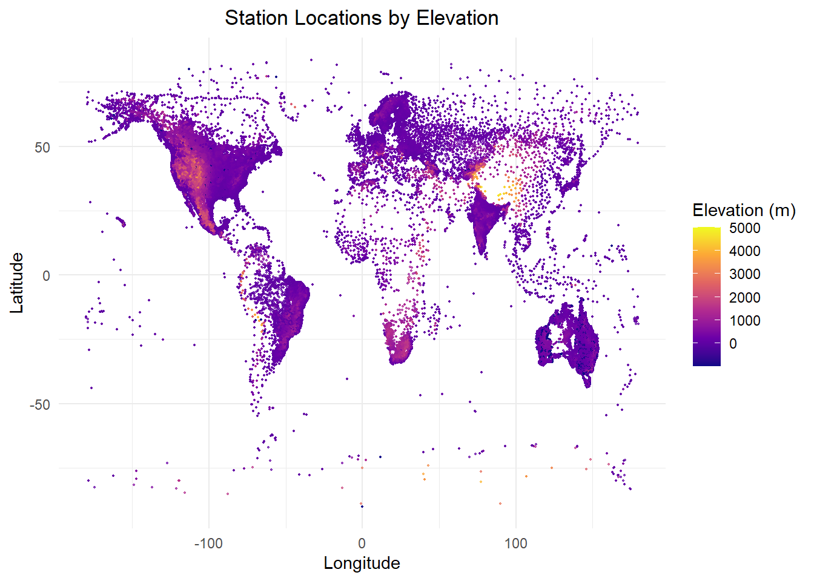
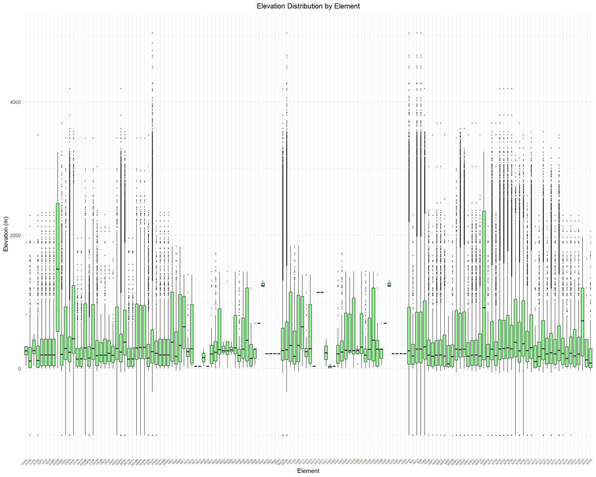
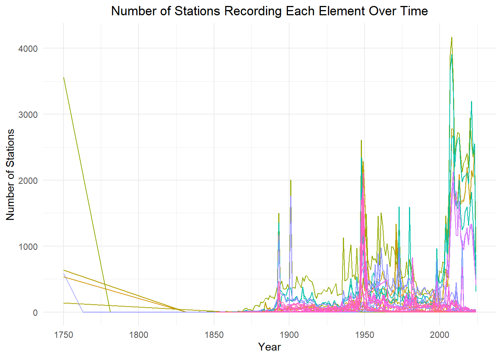

# Get a list of all NY station IDs
stations <- ghcnd_stations() %>% drop_na()## using cached file: C:\Users\Twilight\AppData\Local/R/cache/R/rnoaa/noaa_ghcnd/ghcnd-stations.rds## date created (size, mb): 2024-11-01 01:35:25.964739 (2.307)## using cached file: C:\Users\Twilight\AppData\Local/R/cache/R/rnoaa/noaa_ghcnd/ghcnd-inventory.rds## date created (size, mb): 2024-11-01 01:36:31.233179 (2.838) nystationids <- stations %>% filter(state == "NY") %>% distinct(id)
# Pull the desired weather data for all of these stations
nydat <- meteo_pull_monitors(nystationids$id,
date_min = "1981-01-01",
date_max = "2010-12-31",
var = c("PRCP", "SNOW", "SNWD", "TMAX", "TMIN"))## using cached file: C:\Users\Twilight\AppData\Local/R/cache/R/rnoaa/noaa_ghcnd/US1NYAB0001.dly## date created (size, mb): 2024-11-01 01:36:36.255674 (0.301)## file min/max dates: 2007-11-01 / 2024-10-31## using cached file: C:\Users\Twilight\AppData\Local/R/cache/R/rnoaa/noaa_ghcnd/US1NYAB0006.dly## date created (size, mb): 2024-11-01 01:36:37.023241 (0.195)## file min/max dates: 2008-09-01 / 2019-08-31## using cached file: C:\Users\Twilight\AppData\Local/R/cache/R/rnoaa/noaa_ghcnd/US1NYAB0010.dly## date created (size, mb): 2024-11-01 01:36:38.169094 (0.316)## file min/max dates: 2008-10-01 / 2024-10-31## using cached file: C:\Users\Twilight\AppData\Local/R/cache/R/rnoaa/noaa_ghcnd/US1NYAB0016.dly## date created (size, mb): 2024-11-01 01:36:38.536362 (0.012)## file min/max dates: 2009-06-01 / 2009-12-31## using cached file: C:\Users\Twilight\AppData\Local/R/cache/R/rnoaa/noaa_ghcnd/US1NYAB0017.dly## date created (size, mb): 2024-11-01 01:36:38.823872 (0.043)## file min/max dates: 2009-07-01 / 2016-08-31## using cached file: C:\Users\Twilight\AppData\Local/R/cache/R/rnoaa/noaa_ghcnd/US1NYAB0021.dly## date created (size, mb): 2024-11-01 01:36:39.775558 (0.371)## file min/max dates: 2010-01-01 / 2024-10-31## using cached file: C:\Users\Twilight\AppData\Local/R/cache/R/rnoaa/noaa_ghcnd/US1NYAB0022.dly## date created (size, mb): 2024-11-01 01:36:40.203711 (0.053)## file min/max dates: 2010-01-01 / 2016-09-30## using cached file: C:\Users\Twilight\AppData\Local/R/cache/R/rnoaa/noaa_ghcnd/US1NYAB0023.dly## date created (size, mb): 2024-11-01 01:36:41.15234 (0.358)## file min/max dates: 2010-01-01 / 2024-10-31## using cached file: C:\Users\Twilight\AppData\Local/R/cache/R/rnoaa/noaa_ghcnd/US1NYAB0025.dly## date created (size, mb): 2024-11-01 01:36:41.652969 (0.071)## file min/max dates: 2010-01-01 / 2014-06-30## using cached file: C:\Users\Twilight\AppData\Local/R/cache/R/rnoaa/noaa_ghcnd/US1NYAB0028.dly## date created (size, mb): 2024-11-01 01:36:42.08617 (0.11)## file min/max dates: 2011-05-01 / 2015-07-31## using cached file: C:\Users\Twilight\AppData\Local/R/cache/R/rnoaa/noaa_ghcnd/US1NYAB0029.dly## date created (size, mb): 2024-11-01 01:36:42.408361 (0.018)## file min/max dates: 2012-07-01 / 2013-11-30## using cached file: C:\Users\Twilight\AppData\Local/R/cache/R/rnoaa/noaa_ghcnd/US1NYAB0032.dly## date created (size, mb): 2024-11-01 01:36:42.926207 (0.177)## file min/max dates: 2013-03-01 / 2024-10-31## using cached file: C:\Users\Twilight\AppData\Local/R/cache/R/rnoaa/noaa_ghcnd/US1NYAB0037.dly## date created (size, mb): 2024-11-01 01:36:43.335752 (0.057)## file min/max dates: 2016-07-01 / 2019-09-30## using cached file: C:\Users\Twilight\AppData\Local/R/cache/R/rnoaa/noaa_ghcnd/US1NYAB0039.dly## date created (size, mb): 2024-11-01 01:36:43.652056 (0.058)## file min/max dates: 2014-04-01 / 2019-10-31## using cached file: C:\Users\Twilight\AppData\Local/R/cache/R/rnoaa/noaa_ghcnd/US1NYAB0041.dly## date created (size, mb): 2024-11-01 01:36:44.1243 (0.118)## file min/max dates: 2017-09-01 / 2023-06-30## using cached file: C:\Users\Twilight\AppData\Local/R/cache/R/rnoaa/noaa_ghcnd/US1NYAB0042.dly## date created (size, mb): 2024-11-01 01:36:44.422358 (0.014)## file min/max dates: 2018-02-01 / 2018-09-30## using cached file: C:\Users\Twilight\AppData\Local/R/cache/R/rnoaa/noaa_ghcnd/US1NYAB0045.dly## date created (size, mb): 2024-11-01 01:36:44.684624 (0.009)## file min/max dates: 2020-05-01 / 2022-04-30## using cached file: C:\Users\Twilight\AppData\Local/R/cache/R/rnoaa/noaa_ghcnd/US1NYAB0046.dly## date created (size, mb): 2024-11-01 01:36:45.284678 (0.143)## file min/max dates: 2018-10-01 / 2024-10-31## using cached file: C:\Users\Twilight\AppData\Local/R/cache/R/rnoaa/noaa_ghcnd/US1NYAB0047.dly## date created (size, mb): 2024-11-01 01:36:45.767948 (0.098)## file min/max dates: 2019-03-01 / 2024-10-31## using cached file: C:\Users\Twilight\AppData\Local/R/cache/R/rnoaa/noaa_ghcnd/US1NYAB0053.dly## date created (size, mb): 2024-11-01 01:36:46.083458 (0.02)## file min/max dates: 2019-05-01 / 2021-08-31## using cached file: C:\Users\Twilight\AppData\Local/R/cache/R/rnoaa/noaa_ghcnd/US1NYAB0054.dly## date created (size, mb): 2024-11-01 01:36:46.334309 (0.036)## file min/max dates: 2019-05-01 / 2021-01-31## using cached file: C:\Users\Twilight\AppData\Local/R/cache/R/rnoaa/noaa_ghcnd/US1NYAB0056.dly## date created (size, mb): 2024-11-01 01:36:46.688522 (0.071)## file min/max dates: 2018-07-01 / 2023-11-30## using cached file: C:\Users\Twilight\AppData\Local/R/cache/R/rnoaa/noaa_ghcnd/US1NYAB0062.dly## date created (size, mb): 2024-11-01 01:36:46.981066 (0.018)## file min/max dates: 2021-01-01 / 2021-09-30## using cached file: C:\Users\Twilight\AppData\Local/R/cache/R/rnoaa/noaa_ghcnd/US1NYAB0064.dly## date created (size, mb): 2024-11-01 01:36:47.300875 (0.052)## file min/max dates: 2021-03-01 / 2024-10-31## using cached file: C:\Users\Twilight\AppData\Local/R/cache/R/rnoaa/noaa_ghcnd/US1NYAB0066.dly## date created (size, mb): 2024-11-01 01:36:47.590559 (0.052)## file min/max dates: 2021-07-01 / 2024-10-31## using cached file: C:\Users\Twilight\AppData\Local/R/cache/R/rnoaa/noaa_ghcnd/US1NYAB0069.dly## date created (size, mb): 2024-11-01 01:36:47.89636 (0.029)## file min/max dates: 2022-10-01 / 2024-01-31## using cached file: C:\Users\Twilight\AppData\Local/R/cache/R/rnoaa/noaa_ghcnd/US1NYAB0072.dly## date created (size, mb): 2024-11-01 01:36:48.200397 (0.03)## file min/max dates: 2023-04-01 / 2024-10-31## using cached file: C:\Users\Twilight\AppData\Local/R/cache/R/rnoaa/noaa_ghcnd/US1NYAB0076.dly## date created (size, mb): 2024-11-01 01:36:48.49543 (0.031)## file min/max dates: 2023-06-01 / 2024-10-31## using cached file: C:\Users\Twilight\AppData\Local/R/cache/R/rnoaa/noaa_ghcnd/US1NYAB0077.dly## date created (size, mb): 2024-11-01 01:36:48.751102 (0.026)## file min/max dates: 2023-12-01 / 2024-10-31## using cached file: C:\Users\Twilight\AppData\Local/R/cache/R/rnoaa/noaa_ghcnd/US1NYAL0002.dly## date created (size, mb): 2024-11-01 01:36:49.612913 (0.339)## file min/max dates: 2009-07-01 / 2024-10-31## using cached file: C:\Users\Twilight\AppData\Local/R/cache/R/rnoaa/noaa_ghcnd/US1NYAL0003.dly## date created (size, mb): 2024-11-01 01:36:49.916847 (0.008)## file min/max dates: 2011-06-01 / 2011-11-30## using cached file: C:\Users\Twilight\AppData\Local/R/cache/R/rnoaa/noaa_ghcnd/US1NYAL0007.dly## date created (size, mb): 2024-11-01 01:36:50.366861 (0.036)## file min/max dates: 2013-03-01 / 2014-08-31## using cached file: C:\Users\Twilight\AppData\Local/R/cache/R/rnoaa/noaa_ghcnd/US1NYAL0009.dly## date created (size, mb): 2024-11-01 01:36:50.599949 (0.016)## file min/max dates: 2016-05-01 / 2018-07-31## using cached file: C:\Users\Twilight\AppData\Local/R/cache/R/rnoaa/noaa_ghcnd/US1NYAL0011.dly## date created (size, mb): 2024-11-01 01:36:51.03091 (0.112)## file min/max dates: 2019-09-01 / 2024-10-31## using cached file: C:\Users\Twilight\AppData\Local/R/cache/R/rnoaa/noaa_ghcnd/US1NYAL0012.dly## date created (size, mb): 2024-11-01 01:36:51.350262 (0.045)## file min/max dates: 2020-06-01 / 2024-09-30## using cached file: C:\Users\Twilight\AppData\Local/R/cache/R/rnoaa/noaa_ghcnd/US1NYAL0013.dly## date created (size, mb): 2024-11-01 01:36:51.582991 (0.022)## file min/max dates: 2023-06-01 / 2024-10-31## using cached file: C:\Users\Twilight\AppData\Local/R/cache/R/rnoaa/noaa_ghcnd/US1NYBM0001.dly## date created (size, mb): 2024-11-01 01:36:52.174755 (0.178)## file min/max dates: 2007-08-01 / 2024-10-31## using cached file: C:\Users\Twilight\AppData\Local/R/cache/R/rnoaa/noaa_ghcnd/US1NYBM0002.dly## date created (size, mb): 2024-11-01 01:36:52.536634 (0.014)## file min/max dates: 2007-11-01 / 2009-02-28## using cached file: C:\Users\Twilight\AppData\Local/R/cache/R/rnoaa/noaa_ghcnd/US1NYBM0004.dly## date created (size, mb): 2024-11-01 01:36:53.317829 (0.293)## file min/max dates: 2004-01-01 / 2024-03-31## using cached file: C:\Users\Twilight\AppData\Local/R/cache/R/rnoaa/noaa_ghcnd/US1NYBM0006.dly## date created (size, mb): 2024-11-01 01:36:53.667913 (0.03)## file min/max dates: 2004-04-01 / 2007-08-31## using cached file: C:\Users\Twilight\AppData\Local/R/cache/R/rnoaa/noaa_ghcnd/US1NYBM0007.dly## date created (size, mb): 2024-11-01 01:36:54.617369 (0.378)## file min/max dates: 2001-03-01 / 2024-10-31## using cached file: C:\Users\Twilight\AppData\Local/R/cache/R/rnoaa/noaa_ghcnd/US1NYBM0010.dly## date created (size, mb): 2024-11-01 01:36:55.225563 (0.116)## file min/max dates: 2006-11-01 / 2017-10-31## using cached file: C:\Users\Twilight\AppData\Local/R/cache/R/rnoaa/noaa_ghcnd/US1NYBM0011.dly## date created (size, mb): 2024-11-01 01:36:56.081955 (0.215)## file min/max dates: 2004-01-01 / 2017-09-30## using cached file: C:\Users\Twilight\AppData\Local/R/cache/R/rnoaa/noaa_ghcnd/US1NYBM0014.dly## date created (size, mb): 2024-11-01 01:36:57.249731 (0.445)## file min/max dates: 2007-09-01 / 2024-10-31## using cached file: C:\Users\Twilight\AppData\Local/R/cache/R/rnoaa/noaa_ghcnd/US1NYBM0019.dly## date created (size, mb): 2024-11-01 01:36:57.665602 (0.013)## file min/max dates: 2008-07-01 / 2008-12-31## using cached file: C:\Users\Twilight\AppData\Local/R/cache/R/rnoaa/noaa_ghcnd/US1NYBM0021.dly## date created (size, mb): 2024-11-01 01:36:58.515963 (0.338)## file min/max dates: 2009-01-01 / 2024-10-31## using cached file: C:\Users\Twilight\AppData\Local/R/cache/R/rnoaa/noaa_ghcnd/US1NYBM0023.dly## date created (size, mb): 2024-11-01 01:36:58.987558 (0.085)## file min/max dates: 2011-04-01 / 2024-10-31## using cached file: C:\Users\Twilight\AppData\Local/R/cache/R/rnoaa/noaa_ghcnd/US1NYBM0024.dly## date created (size, mb): 2024-11-01 01:36:59.884724 (0.269)## file min/max dates: 2011-08-01 / 2024-10-31## using cached file: C:\Users\Twilight\AppData\Local/R/cache/R/rnoaa/noaa_ghcnd/US1NYBM0026.dly## date created (size, mb): 2024-11-01 01:37:00.197363 (0.02)## file min/max dates: 2013-09-01 / 2015-08-31## using cached file: C:\Users\Twilight\AppData\Local/R/cache/R/rnoaa/noaa_ghcnd/US1NYBM0032.dly## date created (size, mb): 2024-11-01 01:37:00.532833 (0.066)## file min/max dates: 2013-08-01 / 2020-08-31## using cached file: C:\Users\Twilight\AppData\Local/R/cache/R/rnoaa/noaa_ghcnd/US1NYBM0034.dly## date created (size, mb): 2024-11-01 01:37:01.064095 (0.164)## file min/max dates: 2014-04-01 / 2024-10-31## using cached file: C:\Users\Twilight\AppData\Local/R/cache/R/rnoaa/noaa_ghcnd/US1NYBM0037.dly## date created (size, mb): 2024-11-01 01:37:01.330645 (0.015)## file min/max dates: 2014-05-01 / 2015-09-30## using cached file: C:\Users\Twilight\AppData\Local/R/cache/R/rnoaa/noaa_ghcnd/US1NYBM0040.dly## date created (size, mb): 2024-11-01 01:37:01.649025 (0.054)## file min/max dates: 2015-04-01 / 2017-12-31## using cached file: C:\Users\Twilight\AppData\Local/R/cache/R/rnoaa/noaa_ghcnd/US1NYBM0051.dly## date created (size, mb): 2024-11-01 01:37:02.265232 (0.128)## file min/max dates: 2018-04-01 / 2024-09-30## using cached file: C:\Users\Twilight\AppData\Local/R/cache/R/rnoaa/noaa_ghcnd/US1NYBM0052.dly## date created (size, mb): 2024-11-01 01:37:02.685556 (0.073)## file min/max dates: 2019-04-01 / 2024-10-31## using cached file: C:\Users\Twilight\AppData\Local/R/cache/R/rnoaa/noaa_ghcnd/US1NYBM0055.dly## date created (size, mb): 2024-11-01 01:37:02.998604 (0.058)## file min/max dates: 2021-05-01 / 2024-10-31## using cached file: C:\Users\Twilight\AppData\Local/R/cache/R/rnoaa/noaa_ghcnd/US1NYBM0056.dly## date created (size, mb): 2024-11-01 01:37:03.297718 (0.037)## file min/max dates: 2021-07-01 / 2024-10-31## using cached file: C:\Users\Twilight\AppData\Local/R/cache/R/rnoaa/noaa_ghcnd/US1NYBM0059.dly## date created (size, mb): 2024-11-01 01:37:03.645994 (0.023)## file min/max dates: 2023-09-01 / 2024-10-31## using cached file: C:\Users\Twilight\AppData\Local/R/cache/R/rnoaa/noaa_ghcnd/US1NYBX0025.dly## date created (size, mb): 2024-11-01 01:37:03.831314 (0.008)## file min/max dates: 2019-03-01 / 2019-10-31## using cached file: C:\Users\Twilight\AppData\Local/R/cache/R/rnoaa/noaa_ghcnd/US1NYCB0001.dly## date created (size, mb): 2024-11-01 01:37:04.648333 (0.325)## file min/max dates: 2007-08-01 / 2021-06-30## using cached file: C:\Users\Twilight\AppData\Local/R/cache/R/rnoaa/noaa_ghcnd/US1NYCB0006.dly## date created (size, mb): 2024-11-01 01:37:05.031767 (0.037)## file min/max dates: 2012-10-01 / 2015-02-28## using cached file: C:\Users\Twilight\AppData\Local/R/cache/R/rnoaa/noaa_ghcnd/US1NYCB0008.dly## date created (size, mb): 2024-11-01 01:37:05.614748 (0.181)## file min/max dates: 2013-04-01 / 2021-10-31## using cached file: C:\Users\Twilight\AppData\Local/R/cache/R/rnoaa/noaa_ghcnd/US1NYCB0009.dly## date created (size, mb): 2024-11-01 01:37:06.171688 (0.159)## file min/max dates: 2015-12-01 / 2023-01-31## using cached file: C:\Users\Twilight\AppData\Local/R/cache/R/rnoaa/noaa_ghcnd/US1NYCB0015.dly## date created (size, mb): 2024-11-01 01:37:06.746967 (0.178)## file min/max dates: 2018-12-01 / 2024-10-31## using cached file: C:\Users\Twilight\AppData\Local/R/cache/R/rnoaa/noaa_ghcnd/US1NYCB0016.dly## date created (size, mb): 2024-11-01 01:37:07.331276 (0.172)## file min/max dates: 2019-03-01 / 2024-10-31## using cached file: C:\Users\Twilight\AppData\Local/R/cache/R/rnoaa/noaa_ghcnd/US1NYCB0018.dly## date created (size, mb): 2024-11-01 01:37:07.630508 (0.031)## file min/max dates: 2020-04-01 / 2021-10-31## using cached file: C:\Users\Twilight\AppData\Local/R/cache/R/rnoaa/noaa_ghcnd/US1NYCB0019.dly## date created (size, mb): 2024-11-01 01:37:07.93059 (0.065)## file min/max dates: 2020-07-01 / 2024-10-31## using cached file: C:\Users\Twilight\AppData\Local/R/cache/R/rnoaa/noaa_ghcnd/US1NYCB0023.dly## date created (size, mb): 2024-11-01 01:37:08.245264 (0.054)## file min/max dates: 2022-03-01 / 2024-10-31## using cached file: C:\Users\Twilight\AppData\Local/R/cache/R/rnoaa/noaa_ghcnd/US1NYCB0024.dly## date created (size, mb): 2024-11-01 01:37:08.746181 (0.036)## file min/max dates: 2022-05-01 / 2024-10-31## using cached file: C:\Users\Twilight\AppData\Local/R/cache/R/rnoaa/noaa_ghcnd/US1NYCB0025.dly## date created (size, mb): 2024-11-01 01:37:09.101389 (0.048)## file min/max dates: 2022-07-01 / 2024-10-31## using cached file: C:\Users\Twilight\AppData\Local/R/cache/R/rnoaa/noaa_ghcnd/US1NYCB0026.dly## date created (size, mb): 2024-11-01 01:37:09.429636 (0.046)## file min/max dates: 2022-08-01 / 2024-10-31## using cached file: C:\Users\Twilight\AppData\Local/R/cache/R/rnoaa/noaa_ghcnd/US1NYCL0002.dly## date created (size, mb): 2024-11-01 01:37:09.744837 (0.051)## file min/max dates: 2008-11-01 / 2012-02-29## using cached file: C:\Users\Twilight\AppData\Local/R/cache/R/rnoaa/noaa_ghcnd/US1NYCL0005.dly## date created (size, mb): 2024-11-01 01:37:10.000017 (0.016)## file min/max dates: 2009-02-01 / 2010-12-31## using cached file: C:\Users\Twilight\AppData\Local/R/cache/R/rnoaa/noaa_ghcnd/US1NYCL0007.dly## date created (size, mb): 2024-11-01 01:37:10.913273 (0.336)## file min/max dates: 2009-04-01 / 2023-11-30## using cached file: C:\Users\Twilight\AppData\Local/R/cache/R/rnoaa/noaa_ghcnd/US1NYCL0008.dly## date created (size, mb): 2024-11-01 01:37:11.429844 (0.038)## file min/max dates: 2009-10-01 / 2011-11-30## using cached file: C:\Users\Twilight\AppData\Local/R/cache/R/rnoaa/noaa_ghcnd/US1NYCL0012.dly## date created (size, mb): 2024-11-01 01:37:11.931507 (0.154)## file min/max dates: 2015-09-01 / 2024-10-31## using cached file: C:\Users\Twilight\AppData\Local/R/cache/R/rnoaa/noaa_ghcnd/US1NYCL0015.dly## date created (size, mb): 2024-11-01 01:37:12.481979 (0.08)## file min/max dates: 2018-07-01 / 2024-10-31## using cached file: C:\Users\Twilight\AppData\Local/R/cache/R/rnoaa/noaa_ghcnd/US1NYCM0002.dly## date created (size, mb): 2024-11-01 01:37:12.862116 (0.032)## file min/max dates: 2007-09-01 / 2009-10-31## using cached file: C:\Users\Twilight\AppData\Local/R/cache/R/rnoaa/noaa_ghcnd/US1NYCM0003.dly## date created (size, mb): 2024-11-01 01:37:13.711994 (0.288)## file min/max dates: 2004-01-01 / 2021-02-28## using cached file: C:\Users\Twilight\AppData\Local/R/cache/R/rnoaa/noaa_ghcnd/US1NYCM0004.dly## date created (size, mb): 2024-11-01 01:37:14.441427 (0.187)## file min/max dates: 1998-06-01 / 2015-02-28## using cached file: C:\Users\Twilight\AppData\Local/R/cache/R/rnoaa/noaa_ghcnd/US1NYCM0005.dly## date created (size, mb): 2024-11-01 01:37:14.737415 (0.008)## file min/max dates: 2004-01-01 / 2004-10-31## using cached file: C:\Users\Twilight\AppData\Local/R/cache/R/rnoaa/noaa_ghcnd/US1NYCM0006.dly## date created (size, mb): 2024-11-01 01:37:15.717525 (0.29)## file min/max dates: 2004-01-01 / 2023-09-30## using cached file: C:\Users\Twilight\AppData\Local/R/cache/R/rnoaa/noaa_ghcnd/US1NYCM0007.dly## date created (size, mb): 2024-11-01 01:37:16.327389 (0.144)## file min/max dates: 2004-03-01 / 2024-10-31## using cached file: C:\Users\Twilight\AppData\Local/R/cache/R/rnoaa/noaa_ghcnd/US1NYCM0008.dly## date created (size, mb): 2024-11-01 01:37:16.843569 (0.129)## file min/max dates: 2004-02-01 / 2016-01-31## using cached file: C:\Users\Twilight\AppData\Local/R/cache/R/rnoaa/noaa_ghcnd/US1NYCM0010.dly## date created (size, mb): 2024-11-01 01:37:17.561695 (0.247)## file min/max dates: 1998-06-01 / 2024-04-30## using cached file: C:\Users\Twilight\AppData\Local/R/cache/R/rnoaa/noaa_ghcnd/US1NYCM0012.dly## date created (size, mb): 2024-11-01 01:37:18.077694 (0.118)## file min/max dates: 2008-02-01 / 2015-07-31## using cached file: C:\Users\Twilight\AppData\Local/R/cache/R/rnoaa/noaa_ghcnd/US1NYCM0013.dly## date created (size, mb): 2024-11-01 01:37:18.910566 (0.315)## file min/max dates: 2009-04-01 / 2024-10-31## using cached file: C:\Users\Twilight\AppData\Local/R/cache/R/rnoaa/noaa_ghcnd/US1NYCM0014.dly## date created (size, mb): 2024-11-01 01:37:19.327547 (0.041)## file min/max dates: 2009-09-01 / 2012-01-31## using cached file: C:\Users\Twilight\AppData\Local/R/cache/R/rnoaa/noaa_ghcnd/US1NYCM0017.dly## date created (size, mb): 2024-11-01 01:37:19.79328 (0.151)## file min/max dates: 2013-04-01 / 2024-10-31## using cached file: C:\Users\Twilight\AppData\Local/R/cache/R/rnoaa/noaa_ghcnd/US1NYCM0019.dly## date created (size, mb): 2024-11-01 01:37:20.069607 (0.012)## file min/max dates: 2013-10-01 / 2015-07-31## using cached file: C:\Users\Twilight\AppData\Local/R/cache/R/rnoaa/noaa_ghcnd/US1NYCM0020.dly## date created (size, mb): 2024-11-01 01:37:20.432619 (0.075)## file min/max dates: 2014-05-01 / 2024-10-31## using cached file: C:\Users\Twilight\AppData\Local/R/cache/R/rnoaa/noaa_ghcnd/US1NYCM0021.dly## date created (size, mb): 2024-11-01 01:37:21.026773 (0.183)## file min/max dates: 2014-05-01 / 2024-10-31## using cached file: C:\Users\Twilight\AppData\Local/R/cache/R/rnoaa/noaa_ghcnd/US1NYCM0023.dly## date created (size, mb): 2024-11-01 01:37:21.366375 (0.035)## file min/max dates: 2015-07-01 / 2019-09-30## using cached file: C:\Users\Twilight\AppData\Local/R/cache/R/rnoaa/noaa_ghcnd/US1NYCM0024.dly## date created (size, mb): 2024-11-01 01:37:21.84906 (0.153)## file min/max dates: 2015-07-01 / 2023-06-30## using cached file: C:\Users\Twilight\AppData\Local/R/cache/R/rnoaa/noaa_ghcnd/US1NYCN0002.dly## date created (size, mb): 2024-11-01 01:37:22.86496 (0.365)## file min/max dates: 2004-01-01 / 2024-10-31## using cached file: C:\Users\Twilight\AppData\Local/R/cache/R/rnoaa/noaa_ghcnd/US1NYCN0003.dly## date created (size, mb): 2024-11-01 01:37:23.259489 (0.033)## file min/max dates: 2004-01-01 / 2007-08-31## using cached file: C:\Users\Twilight\AppData\Local/R/cache/R/rnoaa/noaa_ghcnd/US1NYCN0006.dly## date created (size, mb): 2024-11-01 01:37:23.526642 (0.034)## file min/max dates: 2008-01-01 / 2009-06-30## using cached file: C:\Users\Twilight\AppData\Local/R/cache/R/rnoaa/noaa_ghcnd/US1NYCN0008.dly## date created (size, mb): 2024-11-01 01:37:23.975441 (0.116)## file min/max dates: 2009-02-01 / 2015-09-30## using cached file: C:\Users\Twilight\AppData\Local/R/cache/R/rnoaa/noaa_ghcnd/US1NYCN0009.dly## date created (size, mb): 2024-11-01 01:37:24.84833 (0.29)## file min/max dates: 2009-07-01 / 2022-11-30## using cached file: C:\Users\Twilight\AppData\Local/R/cache/R/rnoaa/noaa_ghcnd/US1NYCN0011.dly## date created (size, mb): 2024-11-01 01:37:25.207283 (0.018)## file min/max dates: 2010-11-01 / 2011-12-31## using cached file: C:\Users\Twilight\AppData\Local/R/cache/R/rnoaa/noaa_ghcnd/US1NYCN0013.dly## date created (size, mb): 2024-11-01 01:37:25.475079 (0.036)## file min/max dates: 2013-08-01 / 2017-08-31## using cached file: C:\Users\Twilight\AppData\Local/R/cache/R/rnoaa/noaa_ghcnd/US1NYCN0014.dly## date created (size, mb): 2024-11-01 01:37:25.854301 (0.102)## file min/max dates: 2013-08-01 / 2024-10-31## using cached file: C:\Users\Twilight\AppData\Local/R/cache/R/rnoaa/noaa_ghcnd/US1NYCN0016.dly## date created (size, mb): 2024-11-01 01:37:26.241802 (0.089)## file min/max dates: 2015-04-01 / 2023-05-31## using cached file: C:\Users\Twilight\AppData\Local/R/cache/R/rnoaa/noaa_ghcnd/US1NYCN0018.dly## date created (size, mb): 2024-11-01 01:37:26.54015 (0.048)## file min/max dates: 2015-12-01 / 2017-06-30## using cached file: C:\Users\Twilight\AppData\Local/R/cache/R/rnoaa/noaa_ghcnd/US1NYCN0021.dly## date created (size, mb): 2024-11-01 01:37:26.81665 (0.018)## file min/max dates: 2021-06-01 / 2022-11-30## using cached file: C:\Users\Twilight\AppData\Local/R/cache/R/rnoaa/noaa_ghcnd/US1NYCN0023.dly## date created (size, mb): 2024-11-01 01:37:27.075695 (0.035)## file min/max dates: 2023-05-01 / 2024-10-31## using cached file: C:\Users\Twilight\AppData\Local/R/cache/R/rnoaa/noaa_ghcnd/US1NYCQ0005.dly## date created (size, mb): 2024-11-01 01:37:27.618174 (0.176)## file min/max dates: 2009-04-01 / 2024-10-31## using cached file: C:\Users\Twilight\AppData\Local/R/cache/R/rnoaa/noaa_ghcnd/US1NYCQ0006.dly## date created (size, mb): 2024-11-01 01:37:28.04155 (0.062)## file min/max dates: 2009-12-01 / 2024-03-31## using cached file: C:\Users\Twilight\AppData\Local/R/cache/R/rnoaa/noaa_ghcnd/US1NYCQ0007.dly## date created (size, mb): 2024-11-01 01:37:28.415449 (0.084)## file min/max dates: 2009-06-01 / 2013-01-31## using cached file: C:\Users\Twilight\AppData\Local/R/cache/R/rnoaa/noaa_ghcnd/US1NYCQ0010.dly## date created (size, mb): 2024-11-01 01:37:28.668821 (0.011)## file min/max dates: 2010-06-01 / 2011-01-31## using cached file: C:\Users\Twilight\AppData\Local/R/cache/R/rnoaa/noaa_ghcnd/US1NYCQ0012.dly## date created (size, mb): 2024-11-01 01:37:29.07457 (0.121)## file min/max dates: 2010-11-01 / 2021-11-30## using cached file: C:\Users\Twilight\AppData\Local/R/cache/R/rnoaa/noaa_ghcnd/US1NYCQ0015.dly## date created (size, mb): 2024-11-01 01:37:29.409616 (0.044)## file min/max dates: 2011-03-01 / 2013-10-31## using cached file: C:\Users\Twilight\AppData\Local/R/cache/R/rnoaa/noaa_ghcnd/US1NYCQ0017.dly## date created (size, mb): 2024-11-01 01:37:29.772852 (0.078)## file min/max dates: 2011-07-01 / 2014-11-30## using cached file: C:\Users\Twilight\AppData\Local/R/cache/R/rnoaa/noaa_ghcnd/US1NYCQ0019.dly## date created (size, mb): 2024-11-01 01:37:30.093287 (0.06)## file min/max dates: 2012-07-01 / 2015-08-31## using cached file: C:\Users\Twilight\AppData\Local/R/cache/R/rnoaa/noaa_ghcnd/US1NYCQ0021.dly## date created (size, mb): 2024-11-01 01:37:30.589687 (0.159)## file min/max dates: 2013-11-01 / 2020-07-31## using cached file: C:\Users\Twilight\AppData\Local/R/cache/R/rnoaa/noaa_ghcnd/US1NYCQ0022.dly## date created (size, mb): 2024-11-01 01:37:31.386047 (0.279)## file min/max dates: 2014-05-01 / 2024-10-31## using cached file: C:\Users\Twilight\AppData\Local/R/cache/R/rnoaa/noaa_ghcnd/US1NYCQ0027.dly## date created (size, mb): 2024-11-01 01:37:31.921408 (0.113)## file min/max dates: 2017-05-01 / 2022-10-31## using cached file: C:\Users\Twilight\AppData\Local/R/cache/R/rnoaa/noaa_ghcnd/US1NYCQ0034.dly## date created (size, mb): 2024-11-01 01:37:32.390017 (0.131)## file min/max dates: 2018-06-01 / 2024-10-31## using cached file: C:\Users\Twilight\AppData\Local/R/cache/R/rnoaa/noaa_ghcnd/US1NYCQ0035.dly## date created (size, mb): 2024-11-01 01:37:32.917164 (0.137)## file min/max dates: 2018-10-01 / 2024-10-31## using cached file: C:\Users\Twilight\AppData\Local/R/cache/R/rnoaa/noaa_ghcnd/US1NYCQ0036.dly## date created (size, mb): 2024-11-01 01:37:33.222097 (0.033)## file min/max dates: 2018-11-01 / 2020-10-31## using cached file: C:\Users\Twilight\AppData\Local/R/cache/R/rnoaa/noaa_ghcnd/US1NYCQ0039.dly## date created (size, mb): 2024-11-01 01:37:33.589972 (0.094)## file min/max dates: 2019-11-01 / 2023-06-30## using cached file: C:\Users\Twilight\AppData\Local/R/cache/R/rnoaa/noaa_ghcnd/US1NYCQ0040.dly## date created (size, mb): 2024-11-01 01:37:33.906837 (0.047)## file min/max dates: 2020-04-01 / 2024-10-31## using cached file: C:\Users\Twilight\AppData\Local/R/cache/R/rnoaa/noaa_ghcnd/US1NYCQ0041.dly## date created (size, mb): 2024-11-01 01:37:34.318834 (0.116)## file min/max dates: 2020-07-01 / 2024-10-31## using cached file: C:\Users\Twilight\AppData\Local/R/cache/R/rnoaa/noaa_ghcnd/US1NYCQ0042.dly## date created (size, mb): 2024-11-01 01:37:34.696365 (0.072)## file min/max dates: 2020-10-01 / 2024-10-31## using cached file: C:\Users\Twilight\AppData\Local/R/cache/R/rnoaa/noaa_ghcnd/US1NYCR0001.dly## date created (size, mb): 2024-11-01 01:37:35.223803 (0.148)## file min/max dates: 2006-07-01 / 2024-10-31## using cached file: C:\Users\Twilight\AppData\Local/R/cache/R/rnoaa/noaa_ghcnd/US1NYCR0003.dly## date created (size, mb): 2024-11-01 01:37:36.167038 (0.3)## file min/max dates: 2004-01-01 / 2024-10-31## using cached file: C:\Users\Twilight\AppData\Local/R/cache/R/rnoaa/noaa_ghcnd/US1NYCR0005.dly## date created (size, mb): 2024-11-01 01:37:37.078598 (0.295)## file min/max dates: 1998-06-01 / 2022-02-28## using cached file: C:\Users\Twilight\AppData\Local/R/cache/R/rnoaa/noaa_ghcnd/US1NYCR0008.dly## date created (size, mb): 2024-11-01 01:37:37.603212 (0.106)## file min/max dates: 2010-04-01 / 2015-12-31## using cached file: C:\Users\Twilight\AppData\Local/R/cache/R/rnoaa/noaa_ghcnd/US1NYCR0010.dly## date created (size, mb): 2024-11-01 01:37:37.923126 (0.051)## file min/max dates: 2013-04-01 / 2016-02-29## using cached file: C:\Users\Twilight\AppData\Local/R/cache/R/rnoaa/noaa_ghcnd/US1NYCR0013.dly## date created (size, mb): 2024-11-01 01:37:38.218573 (0.033)## file min/max dates: 2015-06-01 / 2017-11-30## using cached file: C:\Users\Twilight\AppData\Local/R/cache/R/rnoaa/noaa_ghcnd/US1NYCR0014.dly## date created (size, mb): 2024-11-01 01:37:38.472679 (0.027)## file min/max dates: 2023-10-01 / 2024-10-31## using cached file: C:\Users\Twilight\AppData\Local/R/cache/R/rnoaa/noaa_ghcnd/US1NYCT0002.dly## date created (size, mb): 2024-11-01 01:37:38.855736 (0.104)## file min/max dates: 2008-01-01 / 2024-06-30## using cached file: C:\Users\Twilight\AppData\Local/R/cache/R/rnoaa/noaa_ghcnd/US1NYCT0003.dly## date created (size, mb): 2024-11-01 01:37:39.259485 (0.065)## file min/max dates: 2008-11-01 / 2013-06-30## using cached file: C:\Users\Twilight\AppData\Local/R/cache/R/rnoaa/noaa_ghcnd/US1NYCT0005.dly## date created (size, mb): 2024-11-01 01:37:39.771988 (0.156)## file min/max dates: 2008-09-01 / 2017-05-31## using cached file: C:\Users\Twilight\AppData\Local/R/cache/R/rnoaa/noaa_ghcnd/US1NYCT0006.dly## date created (size, mb): 2024-11-01 01:37:40.44043 (0.195)## file min/max dates: 2008-09-01 / 2018-01-31## using cached file: C:\Users\Twilight\AppData\Local/R/cache/R/rnoaa/noaa_ghcnd/US1NYCT0007.dly## date created (size, mb): 2024-11-01 01:37:40.8706 (0.067)## file min/max dates: 2008-09-01 / 2011-12-31## using cached file: C:\Users\Twilight\AppData\Local/R/cache/R/rnoaa/noaa_ghcnd/US1NYCT0010.dly## date created (size, mb): 2024-11-01 01:37:41.170431 (0.029)## file min/max dates: 2009-05-01 / 2010-10-31## using cached file: C:\Users\Twilight\AppData\Local/R/cache/R/rnoaa/noaa_ghcnd/US1NYCT0011.dly## date created (size, mb): 2024-11-01 01:37:41.755449 (0.19)## file min/max dates: 2009-10-01 / 2018-07-31## using cached file: C:\Users\Twilight\AppData\Local/R/cache/R/rnoaa/noaa_ghcnd/US1NYCT0012.dly## date created (size, mb): 2024-11-01 01:37:42.055189 (0.008)## file min/max dates: 2009-05-01 / 2009-10-31## using cached file: C:\Users\Twilight\AppData\Local/R/cache/R/rnoaa/noaa_ghcnd/US1NYCT0014.dly## date created (size, mb): 2024-11-01 01:37:42.339571 (0.007)## file min/max dates: 2009-09-01 / 2009-12-31## using cached file: C:\Users\Twilight\AppData\Local/R/cache/R/rnoaa/noaa_ghcnd/US1NYCT0015.dly## date created (size, mb): 2024-11-01 01:37:42.637215 (0.063)## file min/max dates: 2011-11-01 / 2024-10-31## using cached file: C:\Users\Twilight\AppData\Local/R/cache/R/rnoaa/noaa_ghcnd/US1NYCT0021.dly## date created (size, mb): 2024-11-01 01:37:42.950953 (0.058)## file min/max dates: 2012-07-01 / 2016-12-31## using cached file: C:\Users\Twilight\AppData\Local/R/cache/R/rnoaa/noaa_ghcnd/US1NYCT0022.dly## date created (size, mb): 2024-11-01 01:37:43.670067 (0.241)## file min/max dates: 2012-12-01 / 2024-10-31## using cached file: C:\Users\Twilight\AppData\Local/R/cache/R/rnoaa/noaa_ghcnd/US1NYCT0025.dly## date created (size, mb): 2024-11-01 01:37:44.202314 (0.12)## file min/max dates: 2016-06-01 / 2024-10-31## using cached file: C:\Users\Twilight\AppData\Local/R/cache/R/rnoaa/noaa_ghcnd/US1NYCT0030.dly## date created (size, mb): 2024-11-01 01:37:44.876488 (0.1)## file min/max dates: 2020-06-01 / 2024-10-31## using cached file: C:\Users\Twilight\AppData\Local/R/cache/R/rnoaa/noaa_ghcnd/US1NYCT0032.dly## date created (size, mb): 2024-11-01 01:37:45.137804 (0.028)## file min/max dates: 2020-11-01 / 2022-05-31## using cached file: C:\Users\Twilight\AppData\Local/R/cache/R/rnoaa/noaa_ghcnd/US1NYCY0001.dly## date created (size, mb): 2024-11-01 01:37:45.59923 (0.12)## file min/max dates: 2004-01-01 / 2016-04-30## using cached file: C:\Users\Twilight\AppData\Local/R/cache/R/rnoaa/noaa_ghcnd/US1NYCY0002.dly## date created (size, mb): 2024-11-01 01:37:46.536148 (0.347)## file min/max dates: 2004-01-01 / 2024-10-31## using cached file: C:\Users\Twilight\AppData\Local/R/cache/R/rnoaa/noaa_ghcnd/US1NYCY0003.dly## date created (size, mb): 2024-11-01 01:37:46.934423 (0.039)## file min/max dates: 2004-01-01 / 2007-11-30## using cached file: C:\Users\Twilight\AppData\Local/R/cache/R/rnoaa/noaa_ghcnd/US1NYCY0004.dly## date created (size, mb): 2024-11-01 01:37:47.293047 (0.069)## file min/max dates: 2007-10-01 / 2010-11-30## using cached file: C:\Users\Twilight\AppData\Local/R/cache/R/rnoaa/noaa_ghcnd/US1NYCY0005.dly## date created (size, mb): 2024-11-01 01:37:47.791101 (0.151)## file min/max dates: 2008-12-01 / 2024-10-31## using cached file: C:\Users\Twilight\AppData\Local/R/cache/R/rnoaa/noaa_ghcnd/US1NYCY0008.dly## date created (size, mb): 2024-11-01 01:37:48.627447 (0.299)## file min/max dates: 2008-09-01 / 2024-10-31## using cached file: C:\Users\Twilight\AppData\Local/R/cache/R/rnoaa/noaa_ghcnd/US1NYCY0009.dly## date created (size, mb): 2024-11-01 01:37:48.990736 (0.032)## file min/max dates: 2008-10-01 / 2009-11-30## using cached file: C:\Users\Twilight\AppData\Local/R/cache/R/rnoaa/noaa_ghcnd/US1NYCY0010.dly## date created (size, mb): 2024-11-01 01:37:49.302164 (0.052)## file min/max dates: 2008-12-01 / 2011-09-30## using cached file: C:\Users\Twilight\AppData\Local/R/cache/R/rnoaa/noaa_ghcnd/US1NYCY0013.dly## date created (size, mb): 2024-11-01 01:37:49.65081 (0.074)## file min/max dates: 2009-05-01 / 2016-06-30## using cached file: C:\Users\Twilight\AppData\Local/R/cache/R/rnoaa/noaa_ghcnd/US1NYCY0014.dly## date created (size, mb): 2024-11-01 01:37:50.082506 (0.112)## file min/max dates: 2009-12-01 / 2024-10-31## using cached file: C:\Users\Twilight\AppData\Local/R/cache/R/rnoaa/noaa_ghcnd/US1NYCY0021.dly## date created (size, mb): 2024-11-01 01:37:50.329191 (0.015)## file min/max dates: 2011-03-01 / 2012-04-30## using cached file: C:\Users\Twilight\AppData\Local/R/cache/R/rnoaa/noaa_ghcnd/US1NYCY0024.dly## date created (size, mb): 2024-11-01 01:37:50.689085 (0.022)## file min/max dates: 2012-04-01 / 2013-06-30## using cached file: C:\Users\Twilight\AppData\Local/R/cache/R/rnoaa/noaa_ghcnd/US1NYCY0026.dly## date created (size, mb): 2024-11-01 01:37:51.957031 (0.201)## file min/max dates: 2014-04-01 / 2024-10-31## using cached file: C:\Users\Twilight\AppData\Local/R/cache/R/rnoaa/noaa_ghcnd/US1NYCY0027.dly## date created (size, mb): 2024-11-01 01:37:52.467222 (0.058)## file min/max dates: 2014-07-01 / 2019-12-31## using cached file: C:\Users\Twilight\AppData\Local/R/cache/R/rnoaa/noaa_ghcnd/US1NYCY0030.dly## date created (size, mb): 2024-11-01 01:37:52.784216 (0.012)## file min/max dates: 2019-05-01 / 2019-12-31## using cached file: C:\Users\Twilight\AppData\Local/R/cache/R/rnoaa/noaa_ghcnd/US1NYCY0031.dly## date created (size, mb): 2024-11-01 01:37:53.336763 (0.057)## file min/max dates: 2019-12-01 / 2023-10-31## using cached file: C:\Users\Twilight\AppData\Local/R/cache/R/rnoaa/noaa_ghcnd/US1NYCY0034.dly## date created (size, mb): 2024-11-01 01:37:53.659971 (0.034)## file min/max dates: 2022-03-01 / 2024-10-31## using cached file: C:\Users\Twilight\AppData\Local/R/cache/R/rnoaa/noaa_ghcnd/US1NYCY0035.dly## date created (size, mb): 2024-11-01 01:37:54.019945 (0.033)## file min/max dates: 2022-04-01 / 2024-10-31## using cached file: C:\Users\Twilight\AppData\Local/R/cache/R/rnoaa/noaa_ghcnd/US1NYCY0036.dly## date created (size, mb): 2024-11-01 01:37:54.398413 (0.019)## file min/max dates: 2023-12-01 / 2024-10-31## using cached file: C:\Users\Twilight\AppData\Local/R/cache/R/rnoaa/noaa_ghcnd/US1NYCY0037.dly## date created (size, mb): 2024-11-01 01:37:54.736332 (0.015)## file min/max dates: 2023-12-01 / 2024-10-31## using cached file: C:\Users\Twilight\AppData\Local/R/cache/R/rnoaa/noaa_ghcnd/US1NYCY0038.dly## date created (size, mb): 2024-11-01 01:37:55.030128 (0.014)## file min/max dates: 2024-01-01 / 2024-10-31## using cached file: C:\Users\Twilight\AppData\Local/R/cache/R/rnoaa/noaa_ghcnd/US1NYCY0039.dly## date created (size, mb): 2024-11-01 01:37:55.39451 (0.013)## file min/max dates: 2024-02-01 / 2024-10-31## using cached file: C:\Users\Twilight\AppData\Local/R/cache/R/rnoaa/noaa_ghcnd/US1NYCY0041.dly## date created (size, mb): 2024-11-01 01:37:55.634903 (0.01)## file min/max dates: 2024-02-01 / 2024-07-31## using cached file: C:\Users\Twilight\AppData\Local/R/cache/R/rnoaa/noaa_ghcnd/US1NYCY0042.dly## date created (size, mb): 2024-11-01 01:37:55.897573 (0.014)## file min/max dates: 2024-02-01 / 2024-10-31## using cached file: C:\Users\Twilight\AppData\Local/R/cache/R/rnoaa/noaa_ghcnd/US1NYDL0001.dly## date created (size, mb): 2024-11-01 01:37:56.215057 (0.018)## file min/max dates: 2005-05-01 / 2007-08-31## using cached file: C:\Users\Twilight\AppData\Local/R/cache/R/rnoaa/noaa_ghcnd/US1NYDL0003.dly## date created (size, mb): 2024-11-01 01:37:56.791235 (0.06)## file min/max dates: 2005-07-01 / 2010-05-31## using cached file: C:\Users\Twilight\AppData\Local/R/cache/R/rnoaa/noaa_ghcnd/US1NYDL0004.dly## date created (size, mb): 2024-11-01 01:37:57.222157 (0.03)## file min/max dates: 2004-01-01 / 2007-01-31## using cached file: C:\Users\Twilight\AppData\Local/R/cache/R/rnoaa/noaa_ghcnd/US1NYDL0005.dly## date created (size, mb): 2024-11-01 01:37:58.244099 (0.195)## file min/max dates: 2005-09-01 / 2021-01-31## using cached file: C:\Users\Twilight\AppData\Local/R/cache/R/rnoaa/noaa_ghcnd/US1NYDL0006.dly## date created (size, mb): 2024-11-01 01:37:58.907183 (0.036)## file min/max dates: 2005-05-01 / 2008-11-30## using cached file: C:\Users\Twilight\AppData\Local/R/cache/R/rnoaa/noaa_ghcnd/US1NYDL0008.dly## date created (size, mb): 2024-11-01 01:37:59.745419 (0.078)## file min/max dates: 2005-05-01 / 2014-10-31## using cached file: C:\Users\Twilight\AppData\Local/R/cache/R/rnoaa/noaa_ghcnd/US1NYDL0009.dly## date created (size, mb): 2024-11-01 01:38:00.829571 (0.165)## file min/max dates: 2005-05-01 / 2015-08-31## using cached file: C:\Users\Twilight\AppData\Local/R/cache/R/rnoaa/noaa_ghcnd/US1NYDL0011.dly## date created (size, mb): 2024-11-01 01:38:01.202944 (0.005)## file min/max dates: 2007-01-01 / 2007-07-31## using cached file: C:\Users\Twilight\AppData\Local/R/cache/R/rnoaa/noaa_ghcnd/US1NYDL0016.dly## date created (size, mb): 2024-11-01 01:38:01.802906 (0.087)## file min/max dates: 2008-03-01 / 2024-10-31## using cached file: C:\Users\Twilight\AppData\Local/R/cache/R/rnoaa/noaa_ghcnd/US1NYDL0017.dly## date created (size, mb): 2024-11-01 01:38:02.12833 (0.014)## file min/max dates: 2009-03-01 / 2009-10-31## using cached file: C:\Users\Twilight\AppData\Local/R/cache/R/rnoaa/noaa_ghcnd/US1NYDL0022.dly## date created (size, mb): 2024-11-01 01:38:02.596319 (0.059)## file min/max dates: 2011-07-01 / 2013-09-30## using cached file: C:\Users\Twilight\AppData\Local/R/cache/R/rnoaa/noaa_ghcnd/US1NYDL0023.dly## date created (size, mb): 2024-11-01 01:38:04.286734 (0.329)## file min/max dates: 2012-04-01 / 2024-10-31## using cached file: C:\Users\Twilight\AppData\Local/R/cache/R/rnoaa/noaa_ghcnd/US1NYDL0024.dly## date created (size, mb): 2024-11-01 01:38:05.681467 (0.19)## file min/max dates: 2012-07-01 / 2021-03-31## using cached file: C:\Users\Twilight\AppData\Local/R/cache/R/rnoaa/noaa_ghcnd/US1NYDL0025.dly## date created (size, mb): 2024-11-01 01:38:07.394829 (0.254)## file min/max dates: 2012-10-01 / 2024-10-31## using cached file: C:\Users\Twilight\AppData\Local/R/cache/R/rnoaa/noaa_ghcnd/US1NYDL0028.dly## date created (size, mb): 2024-11-01 01:38:08.312849 (0.125)## file min/max dates: 2015-01-01 / 2024-10-31## using cached file: C:\Users\Twilight\AppData\Local/R/cache/R/rnoaa/noaa_ghcnd/US1NYDL0031.dly## date created (size, mb): 2024-11-01 01:38:08.753525 (0.036)## file min/max dates: 2015-10-01 / 2017-04-30## using cached file: C:\Users\Twilight\AppData\Local/R/cache/R/rnoaa/noaa_ghcnd/US1NYDL0032.dly## date created (size, mb): 2024-11-01 01:38:09.827801 (0.211)## file min/max dates: 2017-06-01 / 2024-10-31## using cached file: C:\Users\Twilight\AppData\Local/R/cache/R/rnoaa/noaa_ghcnd/US1NYDL0034.dly## date created (size, mb): 2024-11-01 01:38:10.664618 (0.091)## file min/max dates: 2019-05-01 / 2024-10-31## using cached file: C:\Users\Twilight\AppData\Local/R/cache/R/rnoaa/noaa_ghcnd/US1NYDT0001.dly## date created (size, mb): 2024-11-01 01:38:11.066681 (0.019)## file min/max dates: 2007-10-01 / 2016-04-30## using cached file: C:\Users\Twilight\AppData\Local/R/cache/R/rnoaa/noaa_ghcnd/US1NYDT0002.dly## date created (size, mb): 2024-11-01 01:38:11.768642 (0.11)## file min/max dates: 2008-11-01 / 2012-11-30## using cached file: C:\Users\Twilight\AppData\Local/R/cache/R/rnoaa/noaa_ghcnd/US1NYDT0004.dly## date created (size, mb): 2024-11-01 01:38:12.794683 (0.145)## file min/max dates: 2010-02-01 / 2018-08-31## using cached file: C:\Users\Twilight\AppData\Local/R/cache/R/rnoaa/noaa_ghcnd/US1NYDT0005.dly## date created (size, mb): 2024-11-01 01:38:14.305876 (0.238)## file min/max dates: 2010-10-01 / 2022-01-31## using cached file: C:\Users\Twilight\AppData\Local/R/cache/R/rnoaa/noaa_ghcnd/US1NYDT0007.dly## date created (size, mb): 2024-11-01 01:38:15.047997 (0.06)## file min/max dates: 2010-05-01 / 2024-10-31## using cached file: C:\Users\Twilight\AppData\Local/R/cache/R/rnoaa/noaa_ghcnd/US1NYDT0008.dly## date created (size, mb): 2024-11-01 01:38:16.458555 (0.244)## file min/max dates: 2011-11-01 / 2024-10-31## using cached file: C:\Users\Twilight\AppData\Local/R/cache/R/rnoaa/noaa_ghcnd/US1NYDT0009.dly## date created (size, mb): 2024-11-01 01:38:17.027412 (0.016)## file min/max dates: 2011-11-01 / 2013-01-31## using cached file: C:\Users\Twilight\AppData\Local/R/cache/R/rnoaa/noaa_ghcnd/US1NYDT0010.dly## date created (size, mb): 2024-11-01 01:38:18.72551 (0.237)## file min/max dates: 2012-04-01 / 2024-04-30## using cached file: C:\Users\Twilight\AppData\Local/R/cache/R/rnoaa/noaa_ghcnd/US1NYDT0012.dly## date created (size, mb): 2024-11-01 01:38:20.923775 (0.33)## file min/max dates: 2012-10-01 / 2024-10-31## using cached file: C:\Users\Twilight\AppData\Local/R/cache/R/rnoaa/noaa_ghcnd/US1NYDT0016.dly## date created (size, mb): 2024-11-01 01:38:21.989553 (0.069)## file min/max dates: 2016-04-01 / 2019-10-31## using cached file: C:\Users\Twilight\AppData\Local/R/cache/R/rnoaa/noaa_ghcnd/US1NYDT0017.dly## date created (size, mb): 2024-11-01 01:38:22.421005 (0.013)## file min/max dates: 2016-10-01 / 2017-11-30## using cached file: C:\Users\Twilight\AppData\Local/R/cache/R/rnoaa/noaa_ghcnd/US1NYDT0020.dly## date created (size, mb): 2024-11-01 01:38:22.846579 (0.039)## file min/max dates: 2017-04-01 / 2021-09-30## using cached file: C:\Users\Twilight\AppData\Local/R/cache/R/rnoaa/noaa_ghcnd/US1NYDT0023.dly## date created (size, mb): 2024-11-01 01:38:23.672371 (0.102)## file min/max dates: 2017-07-01 / 2024-10-31## using cached file: C:\Users\Twilight\AppData\Local/R/cache/R/rnoaa/noaa_ghcnd/US1NYDT0024.dly## date created (size, mb): 2024-11-01 01:38:25.123526 (0.209)## file min/max dates: 2017-07-01 / 2024-10-31## using cached file: C:\Users\Twilight\AppData\Local/R/cache/R/rnoaa/noaa_ghcnd/US1NYDT0027.dly## date created (size, mb): 2024-11-01 01:38:25.816847 (0.031)## file min/max dates: 2018-05-01 / 2021-07-31## using cached file: C:\Users\Twilight\AppData\Local/R/cache/R/rnoaa/noaa_ghcnd/US1NYDT0028.dly## date created (size, mb): 2024-11-01 01:38:26.466791 (0.034)## file min/max dates: 2018-05-01 / 2024-06-30## using cached file: C:\Users\Twilight\AppData\Local/R/cache/R/rnoaa/noaa_ghcnd/US1NYDT0029.dly## date created (size, mb): 2024-11-01 01:38:27.200438 (0.089)## file min/max dates: 2018-05-01 / 2024-10-31## using cached file: C:\Users\Twilight\AppData\Local/R/cache/R/rnoaa/noaa_ghcnd/US1NYDT0032.dly## date created (size, mb): 2024-11-01 01:38:27.942488 (0.104)## file min/max dates: 2019-01-01 / 2024-10-31## using cached file: C:\Users\Twilight\AppData\Local/R/cache/R/rnoaa/noaa_ghcnd/US1NYDT0034.dly## date created (size, mb): 2024-11-01 01:38:28.91498 (0.097)## file min/max dates: 2019-03-01 / 2024-10-31## using cached file: C:\Users\Twilight\AppData\Local/R/cache/R/rnoaa/noaa_ghcnd/US1NYDT0035.dly## date created (size, mb): 2024-11-01 01:38:29.947609 (0.105)## file min/max dates: 2019-04-01 / 2024-10-31## using cached file: C:\Users\Twilight\AppData\Local/R/cache/R/rnoaa/noaa_ghcnd/US1NYDT0037.dly## date created (size, mb): 2024-11-01 01:38:30.562645 (0.077)## file min/max dates: 2019-11-01 / 2024-10-31## using cached file: C:\Users\Twilight\AppData\Local/R/cache/R/rnoaa/noaa_ghcnd/US1NYDT0038.dly## date created (size, mb): 2024-11-01 01:38:31.166122 (0.038)## file min/max dates: 2020-04-01 / 2024-10-31## using cached file: C:\Users\Twilight\AppData\Local/R/cache/R/rnoaa/noaa_ghcnd/US1NYDT0039.dly## date created (size, mb): 2024-11-01 01:38:31.67625 (0.038)## file min/max dates: 2020-04-01 / 2024-10-31## using cached file: C:\Users\Twilight\AppData\Local/R/cache/R/rnoaa/noaa_ghcnd/US1NYDT0040.dly## date created (size, mb): 2024-11-01 01:38:32.025255 (0.015)## file min/max dates: 2020-05-01 / 2021-09-30## using cached file: C:\Users\Twilight\AppData\Local/R/cache/R/rnoaa/noaa_ghcnd/US1NYDT0045.dly## date created (size, mb): 2024-11-01 01:38:32.643929 (0.025)## file min/max dates: 2022-06-01 / 2024-09-30## using cached file: C:\Users\Twilight\AppData\Local/R/cache/R/rnoaa/noaa_ghcnd/US1NYDT0049.dly## date created (size, mb): 2024-11-01 01:38:33.12639 (0.028)## file min/max dates: 2023-08-01 / 2024-10-31## using cached file: C:\Users\Twilight\AppData\Local/R/cache/R/rnoaa/noaa_ghcnd/US1NYER0001.dly## date created (size, mb): 2024-11-01 01:38:33.67556 (0.059)## file min/max dates: 2007-09-01 / 2010-08-31## using cached file: C:\Users\Twilight\AppData\Local/R/cache/R/rnoaa/noaa_ghcnd/US1NYER0002.dly## date created (size, mb): 2024-11-01 01:38:34.386044 (0.093)## file min/max dates: 2007-09-01 / 2011-01-31## using cached file: C:\Users\Twilight\AppData\Local/R/cache/R/rnoaa/noaa_ghcnd/US1NYER0003.dly## date created (size, mb): 2024-11-01 01:38:35.110226 (0.095)## file min/max dates: 2007-09-01 / 2012-09-30## using cached file: C:\Users\Twilight\AppData\Local/R/cache/R/rnoaa/noaa_ghcnd/US1NYER0004.dly## date created (size, mb): 2024-11-01 01:38:35.809341 (0.028)## file min/max dates: 2009-11-01 / 2011-12-31## using cached file: C:\Users\Twilight\AppData\Local/R/cache/R/rnoaa/noaa_ghcnd/US1NYER0006.dly## date created (size, mb): 2024-11-01 01:38:36.260521 (0.035)## file min/max dates: 2008-02-01 / 2012-07-31## using cached file: C:\Users\Twilight\AppData\Local/R/cache/R/rnoaa/noaa_ghcnd/US1NYER0007.dly## date created (size, mb): 2024-11-01 01:38:37.460272 (0.2)## file min/max dates: 2008-05-01 / 2021-10-31## using cached file: C:\Users\Twilight\AppData\Local/R/cache/R/rnoaa/noaa_ghcnd/US1NYER0008.dly## date created (size, mb): 2024-11-01 01:38:38.062862 (0.026)## file min/max dates: 2008-07-01 / 2009-12-31## using cached file: C:\Users\Twilight\AppData\Local/R/cache/R/rnoaa/noaa_ghcnd/US1NYER0009.dly## date created (size, mb): 2024-11-01 01:38:38.944759 (0.087)## file min/max dates: 2008-07-01 / 2012-08-31## using cached file: C:\Users\Twilight\AppData\Local/R/cache/R/rnoaa/noaa_ghcnd/US1NYER0010.dly## date created (size, mb): 2024-11-01 01:38:39.326242 (0.008)## file min/max dates: 2008-07-01 / 2008-11-30## using cached file: C:\Users\Twilight\AppData\Local/R/cache/R/rnoaa/noaa_ghcnd/US1NYER0012.dly## date created (size, mb): 2024-11-01 01:38:39.719204 (0.03)## file min/max dates: 2008-07-01 / 2009-12-31## using cached file: C:\Users\Twilight\AppData\Local/R/cache/R/rnoaa/noaa_ghcnd/US1NYER0013.dly## date created (size, mb): 2024-11-01 01:38:40.422573 (0.067)## file min/max dates: 1998-06-01 / 2024-10-31## using cached file: C:\Users\Twilight\AppData\Local/R/cache/R/rnoaa/noaa_ghcnd/US1NYER0015.dly## date created (size, mb): 2024-11-01 01:38:40.95767 (0.037)## file min/max dates: 2008-08-01 / 2012-09-30## using cached file: C:\Users\Twilight\AppData\Local/R/cache/R/rnoaa/noaa_ghcnd/US1NYER0024.dly## date created (size, mb): 2024-11-01 01:38:41.992712 (0.138)## file min/max dates: 2009-06-01 / 2024-10-31## using cached file: C:\Users\Twilight\AppData\Local/R/cache/R/rnoaa/noaa_ghcnd/US1NYER0025.dly## date created (size, mb): 2024-11-01 01:38:42.73234 (0.07)## file min/max dates: 2008-08-01 / 2022-07-31## using cached file: C:\Users\Twilight\AppData\Local/R/cache/R/rnoaa/noaa_ghcnd/US1NYER0026.dly## date created (size, mb): 2024-11-01 01:38:43.123995 (0.008)## file min/max dates: 2008-07-01 / 2009-06-30## using cached file: C:\Users\Twilight\AppData\Local/R/cache/R/rnoaa/noaa_ghcnd/US1NYER0029.dly## date created (size, mb): 2024-11-01 01:38:43.402399 (0.01)## file min/max dates: 2008-07-01 / 2009-08-31## using cached file: C:\Users\Twilight\AppData\Local/R/cache/R/rnoaa/noaa_ghcnd/US1NYER0035.dly## date created (size, mb): 2024-11-01 01:38:43.749456 (0.02)## file min/max dates: 2008-07-01 / 2010-07-31## using cached file: C:\Users\Twilight\AppData\Local/R/cache/R/rnoaa/noaa_ghcnd/US1NYER0039.dly## date created (size, mb): 2024-11-01 01:38:45.620235 (0.309)## file min/max dates: 2008-07-01 / 2024-10-31## using cached file: C:\Users\Twilight\AppData\Local/R/cache/R/rnoaa/noaa_ghcnd/US1NYER0040.dly## date created (size, mb): 2024-11-01 01:38:46.326014 (0.008)## file min/max dates: 2008-08-01 / 2008-12-31## using cached file: C:\Users\Twilight\AppData\Local/R/cache/R/rnoaa/noaa_ghcnd/US1NYER0044.dly## date created (size, mb): 2024-11-01 01:38:46.855391 (0.035)## file min/max dates: 2008-07-01 / 2011-02-28## using cached file: C:\Users\Twilight\AppData\Local/R/cache/R/rnoaa/noaa_ghcnd/US1NYER0045.dly## date created (size, mb): 2024-11-01 01:38:47.786915 (0.169)## file min/max dates: 2008-08-01 / 2024-10-31## using cached file: C:\Users\Twilight\AppData\Local/R/cache/R/rnoaa/noaa_ghcnd/US1NYER0046.dly## date created (size, mb): 2024-11-01 01:38:48.254232 (0.011)## file min/max dates: 2008-08-01 / 2009-01-31## using cached file: C:\Users\Twilight\AppData\Local/R/cache/R/rnoaa/noaa_ghcnd/US1NYER0050.dly## date created (size, mb): 2024-11-01 01:38:49.893755 (0.246)## file min/max dates: 2008-11-01 / 2024-10-31## using cached file: C:\Users\Twilight\AppData\Local/R/cache/R/rnoaa/noaa_ghcnd/US1NYER0051.dly## date created (size, mb): 2024-11-01 01:38:51.841711 (0.268)## file min/max dates: 2009-11-01 / 2024-10-31## using cached file: C:\Users\Twilight\AppData\Local/R/cache/R/rnoaa/noaa_ghcnd/US1NYER0053.dly## date created (size, mb): 2024-11-01 01:38:53.544052 (0.224)## file min/max dates: 2009-05-01 / 2024-10-31## using cached file: C:\Users\Twilight\AppData\Local/R/cache/R/rnoaa/noaa_ghcnd/US1NYER0054.dly## date created (size, mb): 2024-11-01 01:38:55.811697 (0.326)## file min/max dates: 2009-06-01 / 2024-10-31## using cached file: C:\Users\Twilight\AppData\Local/R/cache/R/rnoaa/noaa_ghcnd/US1NYER0057.dly## date created (size, mb): 2024-11-01 01:38:57.779875 (0.224)## file min/max dates: 2009-07-01 / 2024-10-31## using cached file: C:\Users\Twilight\AppData\Local/R/cache/R/rnoaa/noaa_ghcnd/US1NYER0058.dly## date created (size, mb): 2024-11-01 01:38:58.472034 (0.038)## file min/max dates: 2009-09-01 / 2011-08-31## using cached file: C:\Users\Twilight\AppData\Local/R/cache/R/rnoaa/noaa_ghcnd/US1NYER0059.dly## date created (size, mb): 2024-11-01 01:39:00.579494 (0.353)## file min/max dates: 2009-10-01 / 2024-10-31## using cached file: C:\Users\Twilight\AppData\Local/R/cache/R/rnoaa/noaa_ghcnd/US1NYER0060.dly## date created (size, mb): 2024-11-01 01:39:03.067533 (0.26)## file min/max dates: 1998-06-01 / 2020-12-31## using cached file: C:\Users\Twilight\AppData\Local/R/cache/R/rnoaa/noaa_ghcnd/US1NYER0063.dly## date created (size, mb): 2024-11-01 01:39:05.588831 (0.282)## file min/max dates: 2009-10-01 / 2024-10-31## using cached file: C:\Users\Twilight\AppData\Local/R/cache/R/rnoaa/noaa_ghcnd/US1NYER0065.dly## date created (size, mb): 2024-11-01 01:39:06.854725 (0.092)## file min/max dates: 2009-10-01 / 2022-01-31## using cached file: C:\Users\Twilight\AppData\Local/R/cache/R/rnoaa/noaa_ghcnd/US1NYER0066.dly## date created (size, mb): 2024-11-01 01:39:07.641037 (0.097)## file min/max dates: 2009-10-01 / 2022-11-30## using cached file: C:\Users\Twilight\AppData\Local/R/cache/R/rnoaa/noaa_ghcnd/US1NYER0067.dly## date created (size, mb): 2024-11-01 01:39:08.103539 (0.015)## file min/max dates: 2009-12-01 / 2012-03-31## using cached file: C:\Users\Twilight\AppData\Local/R/cache/R/rnoaa/noaa_ghcnd/US1NYER0068.dly## date created (size, mb): 2024-11-01 01:39:08.529585 (0.028)## file min/max dates: 2009-10-01 / 2010-12-31## using cached file: C:\Users\Twilight\AppData\Local/R/cache/R/rnoaa/noaa_ghcnd/US1NYER0072.dly## date created (size, mb): 2024-11-01 01:39:10.943066 (0.32)## file min/max dates: 2010-01-01 / 2024-10-31## using cached file: C:\Users\Twilight\AppData\Local/R/cache/R/rnoaa/noaa_ghcnd/US1NYER0075.dly## date created (size, mb): 2024-11-01 01:39:12.909813 (0.239)## file min/max dates: 2010-03-01 / 2024-10-31## using cached file: C:\Users\Twilight\AppData\Local/R/cache/R/rnoaa/noaa_ghcnd/US1NYER0077.dly## date created (size, mb): 2024-11-01 01:39:14.942806 (0.263)## file min/max dates: 2009-08-01 / 2024-10-31## using cached file: C:\Users\Twilight\AppData\Local/R/cache/R/rnoaa/noaa_ghcnd/US1NYER0078.dly## date created (size, mb): 2024-11-01 01:39:16.387516 (0.154)## file min/max dates: 2011-05-01 / 2024-10-31## using cached file: C:\Users\Twilight\AppData\Local/R/cache/R/rnoaa/noaa_ghcnd/US1NYER0079.dly## date created (size, mb): 2024-11-01 01:39:17.288134 (0.1)## file min/max dates: 2010-06-01 / 2022-11-30## using cached file: C:\Users\Twilight\AppData\Local/R/cache/R/rnoaa/noaa_ghcnd/US1NYER0080.dly## date created (size, mb): 2024-11-01 01:39:18.119886 (0.089)## file min/max dates: 2010-06-01 / 2014-12-31## using cached file: C:\Users\Twilight\AppData\Local/R/cache/R/rnoaa/noaa_ghcnd/US1NYER0081.dly## date created (size, mb): 2024-11-01 01:39:19.288807 (0.096)## file min/max dates: 2010-08-01 / 2015-10-31## using cached file: C:\Users\Twilight\AppData\Local/R/cache/R/rnoaa/noaa_ghcnd/US1NYER0083.dly## date created (size, mb): 2024-11-01 01:39:20.016537 (0.059)## file min/max dates: 2010-09-01 / 2014-04-30## using cached file: C:\Users\Twilight\AppData\Local/R/cache/R/rnoaa/noaa_ghcnd/US1NYER0085.dly## date created (size, mb): 2024-11-01 01:39:20.91931 (0.114)## file min/max dates: 2010-11-01 / 2023-11-30## using cached file: C:\Users\Twilight\AppData\Local/R/cache/R/rnoaa/noaa_ghcnd/US1NYER0086.dly## date created (size, mb): 2024-11-01 01:39:23.672953 (0.424)## file min/max dates: 2011-02-01 / 2024-10-31## using cached file: C:\Users\Twilight\AppData\Local/R/cache/R/rnoaa/noaa_ghcnd/US1NYER0093.dly## date created (size, mb): 2024-11-01 01:39:24.922665 (0.087)## file min/max dates: 2012-06-01 / 2024-09-30## using cached file: C:\Users\Twilight\AppData\Local/R/cache/R/rnoaa/noaa_ghcnd/US1NYER0094.dly## date created (size, mb): 2024-11-01 01:39:25.429195 (0.022)## file min/max dates: 2012-06-01 / 2014-03-31## using cached file: C:\Users\Twilight\AppData\Local/R/cache/R/rnoaa/noaa_ghcnd/US1NYER0095.dly## date created (size, mb): 2024-11-01 01:39:26.242121 (0.041)## file min/max dates: 2012-07-01 / 2015-01-31## using cached file: C:\Users\Twilight\AppData\Local/R/cache/R/rnoaa/noaa_ghcnd/US1NYER0096.dly## date created (size, mb): 2024-11-01 01:39:27.943785 (0.219)## file min/max dates: 2012-09-01 / 2023-02-28## using cached file: C:\Users\Twilight\AppData\Local/R/cache/R/rnoaa/noaa_ghcnd/US1NYER0098.dly## date created (size, mb): 2024-11-01 01:39:30.057293 (0.209)## file min/max dates: 1998-06-01 / 2024-10-31## using cached file: C:\Users\Twilight\AppData\Local/R/cache/R/rnoaa/noaa_ghcnd/US1NYER0100.dly## date created (size, mb): 2024-11-01 01:39:30.699869 (0.032)## file min/max dates: 2013-04-01 / 2014-11-30## using cached file: C:\Users\Twilight\AppData\Local/R/cache/R/rnoaa/noaa_ghcnd/US1NYER0102.dly## date created (size, mb): 2024-11-01 01:39:32.406368 (0.258)## file min/max dates: 2013-05-01 / 2024-10-31## using cached file: C:\Users\Twilight\AppData\Local/R/cache/R/rnoaa/noaa_ghcnd/US1NYER0103.dly## date created (size, mb): 2024-11-01 01:39:33.169703 (0.065)## file min/max dates: 2013-08-01 / 2016-02-29## using cached file: C:\Users\Twilight\AppData\Local/R/cache/R/rnoaa/noaa_ghcnd/US1NYER0104.dly## date created (size, mb): 2024-11-01 01:39:34.669836 (0.269)## file min/max dates: 2013-12-01 / 2024-10-31## using cached file: C:\Users\Twilight\AppData\Local/R/cache/R/rnoaa/noaa_ghcnd/US1NYER0107.dly## date created (size, mb): 2024-11-01 01:39:35.098944 (0.064)## file min/max dates: 2014-02-01 / 2018-09-30## using cached file: C:\Users\Twilight\AppData\Local/R/cache/R/rnoaa/noaa_ghcnd/US1NYER0109.dly## date created (size, mb): 2024-11-01 01:39:35.514244 (0.106)## file min/max dates: 2014-05-01 / 2018-09-30## using cached file: C:\Users\Twilight\AppData\Local/R/cache/R/rnoaa/noaa_ghcnd/US1NYER0110.dly## date created (size, mb): 2024-11-01 01:39:35.750095 (0.014)## file min/max dates: 2015-07-01 / 2016-12-31## using cached file: C:\Users\Twilight\AppData\Local/R/cache/R/rnoaa/noaa_ghcnd/US1NYER0113.dly## date created (size, mb): 2024-11-01 01:39:36.115322 (0.092)## file min/max dates: 2014-12-01 / 2019-09-30## using cached file: C:\Users\Twilight\AppData\Local/R/cache/R/rnoaa/noaa_ghcnd/US1NYER0116.dly## date created (size, mb): 2024-11-01 01:39:36.387108 (0.016)## file min/max dates: 2015-04-01 / 2016-02-29## using cached file: C:\Users\Twilight\AppData\Local/R/cache/R/rnoaa/noaa_ghcnd/US1NYER0120.dly## date created (size, mb): 2024-11-01 01:39:36.752798 (0.077)## file min/max dates: 2015-06-01 / 2024-10-31## using cached file: C:\Users\Twilight\AppData\Local/R/cache/R/rnoaa/noaa_ghcnd/US1NYER0122.dly## date created (size, mb): 2024-11-01 01:39:37.300251 (0.174)## file min/max dates: 2015-10-01 / 2024-10-31## using cached file: C:\Users\Twilight\AppData\Local/R/cache/R/rnoaa/noaa_ghcnd/US1NYER0123.dly## date created (size, mb): 2024-11-01 01:39:37.755985 (0.098)## file min/max dates: 2015-11-01 / 2021-03-31## using cached file: C:\Users\Twilight\AppData\Local/R/cache/R/rnoaa/noaa_ghcnd/US1NYER0124.dly## date created (size, mb): 2024-11-01 01:39:38.086683 (0.013)## file min/max dates: 2016-03-01 / 2016-11-30## using cached file: C:\Users\Twilight\AppData\Local/R/cache/R/rnoaa/noaa_ghcnd/US1NYER0125.dly## date created (size, mb): 2024-11-01 01:39:38.57733 (0.148)## file min/max dates: 2016-03-01 / 2024-10-31## using cached file: C:\Users\Twilight\AppData\Local/R/cache/R/rnoaa/noaa_ghcnd/US1NYER0132.dly## date created (size, mb): 2024-11-01 01:39:38.836393 (0.021)## file min/max dates: 2017-05-01 / 2019-06-30## using cached file: C:\Users\Twilight\AppData\Local/R/cache/R/rnoaa/noaa_ghcnd/US1NYER0135.dly## date created (size, mb): 2024-11-01 01:39:39.217447 (0.087)## file min/max dates: 2017-10-01 / 2024-10-31## using cached file: C:\Users\Twilight\AppData\Local/R/cache/R/rnoaa/noaa_ghcnd/US1NYER0138.dly## date created (size, mb): 2024-11-01 01:39:39.802736 (0.188)## file min/max dates: 2017-08-01 / 2024-10-31## using cached file: C:\Users\Twilight\AppData\Local/R/cache/R/rnoaa/noaa_ghcnd/US1NYER0145.dly## date created (size, mb): 2024-11-01 01:39:40.102802 (0.022)## file min/max dates: 2017-08-01 / 2018-12-31## using cached file: C:\Users\Twilight\AppData\Local/R/cache/R/rnoaa/noaa_ghcnd/US1NYER0147.dly## date created (size, mb): 2024-11-01 01:39:40.319956 (0.012)## file min/max dates: 2017-09-01 / 2018-09-30## using cached file: C:\Users\Twilight\AppData\Local/R/cache/R/rnoaa/noaa_ghcnd/US1NYER0150.dly## date created (size, mb): 2024-11-01 01:39:40.71837 (0.114)## file min/max dates: 2017-09-01 / 2024-10-31## using cached file: C:\Users\Twilight\AppData\Local/R/cache/R/rnoaa/noaa_ghcnd/US1NYER0151.dly## date created (size, mb): 2024-11-01 01:39:41.279703 (0.157)## file min/max dates: 2017-09-01 / 2024-10-31## using cached file: C:\Users\Twilight\AppData\Local/R/cache/R/rnoaa/noaa_ghcnd/US1NYER0158.dly## date created (size, mb): 2024-11-01 01:39:41.732449 (0.104)## file min/max dates: 2018-06-01 / 2024-10-31## using cached file: C:\Users\Twilight\AppData\Local/R/cache/R/rnoaa/noaa_ghcnd/US1NYER0159.dly## date created (size, mb): 2024-11-01 01:39:42.142784 (0.084)## file min/max dates: 2018-08-01 / 2024-10-31## using cached file: C:\Users\Twilight\AppData\Local/R/cache/R/rnoaa/noaa_ghcnd/US1NYER0164.dly## date created (size, mb): 2024-11-01 01:39:42.419588 (0.038)## file min/max dates: 2019-01-01 / 2020-05-31## using cached file: C:\Users\Twilight\AppData\Local/R/cache/R/rnoaa/noaa_ghcnd/US1NYER0166.dly## date created (size, mb): 2024-11-01 01:39:42.900938 (0.141)## file min/max dates: 2018-11-01 / 2024-10-31## using cached file: C:\Users\Twilight\AppData\Local/R/cache/R/rnoaa/noaa_ghcnd/US1NYER0177.dly## date created (size, mb): 2024-11-01 01:39:43.321178 (0.09)## file min/max dates: 2019-08-01 / 2023-12-31## using cached file: C:\Users\Twilight\AppData\Local/R/cache/R/rnoaa/noaa_ghcnd/US1NYER0178.dly## date created (size, mb): 2024-11-01 01:39:43.762346 (0.085)## file min/max dates: 2019-09-01 / 2024-01-31## using cached file: C:\Users\Twilight\AppData\Local/R/cache/R/rnoaa/noaa_ghcnd/US1NYER0185.dly## date created (size, mb): 2024-11-01 01:39:43.999071 (0.015)## file min/max dates: 2020-01-01 / 2021-11-30## using cached file: C:\Users\Twilight\AppData\Local/R/cache/R/rnoaa/noaa_ghcnd/US1NYER0186.dly## date created (size, mb): 2024-11-01 01:39:44.209579 (0.018)## file min/max dates: 2020-04-01 / 2021-12-31## using cached file: C:\Users\Twilight\AppData\Local/R/cache/R/rnoaa/noaa_ghcnd/US1NYER0189.dly## date created (size, mb): 2024-11-01 01:39:44.543667 (0.056)## file min/max dates: 2020-07-01 / 2024-10-31## using cached file: C:\Users\Twilight\AppData\Local/R/cache/R/rnoaa/noaa_ghcnd/US1NYER0194.dly## date created (size, mb): 2024-11-01 01:39:44.901409 (0.066)## file min/max dates: 2019-08-01 / 2024-10-31## using cached file: C:\Users\Twilight\AppData\Local/R/cache/R/rnoaa/noaa_ghcnd/US1NYER0195.dly## date created (size, mb): 2024-11-01 01:39:45.152887 (0.023)## file min/max dates: 2020-11-01 / 2021-12-31## using cached file: C:\Users\Twilight\AppData\Local/R/cache/R/rnoaa/noaa_ghcnd/US1NYER0196.dly## date created (size, mb): 2024-11-01 01:39:45.408983 (0.038)## file min/max dates: 2020-12-01 / 2022-11-30## using cached file: C:\Users\Twilight\AppData\Local/R/cache/R/rnoaa/noaa_ghcnd/US1NYER0203.dly## date created (size, mb): 2024-11-01 01:39:45.817377 (0.102)## file min/max dates: 2020-12-01 / 2024-10-31## using cached file: C:\Users\Twilight\AppData\Local/R/cache/R/rnoaa/noaa_ghcnd/US1NYER0205.dly## date created (size, mb): 2024-11-01 01:39:46.116776 (0.037)## file min/max dates: 2021-04-01 / 2024-07-31## using cached file: C:\Users\Twilight\AppData\Local/R/cache/R/rnoaa/noaa_ghcnd/US1NYER0208.dly## date created (size, mb): 2024-11-01 01:39:46.458876 (0.068)## file min/max dates: 2021-07-01 / 2024-10-31## using cached file: C:\Users\Twilight\AppData\Local/R/cache/R/rnoaa/noaa_ghcnd/US1NYER0211.dly## date created (size, mb): 2024-11-01 01:39:46.769665 (0.049)## file min/max dates: 2021-11-01 / 2024-10-31## using cached file: C:\Users\Twilight\AppData\Local/R/cache/R/rnoaa/noaa_ghcnd/US1NYER0213.dly## date created (size, mb): 2024-11-01 01:39:46.972084 (0.017)## file min/max dates: 2021-11-01 / 2022-06-30## using cached file: C:\Users\Twilight\AppData\Local/R/cache/R/rnoaa/noaa_ghcnd/US1NYER0219.dly## date created (size, mb): 2024-11-01 01:39:47.282879 (0.07)## file min/max dates: 2021-11-01 / 2024-10-31## using cached file: C:\Users\Twilight\AppData\Local/R/cache/R/rnoaa/noaa_ghcnd/US1NYER0233.dly## date created (size, mb): 2024-11-01 01:39:47.534479 (0.016)## file min/max dates: 2021-11-01 / 2022-11-30## using cached file: C:\Users\Twilight\AppData\Local/R/cache/R/rnoaa/noaa_ghcnd/US1NYER0234.dly## date created (size, mb): 2024-11-01 01:39:47.742781 (0.016)## file min/max dates: 2021-11-01 / 2023-04-30## using cached file: C:\Users\Twilight\AppData\Local/R/cache/R/rnoaa/noaa_ghcnd/US1NYER0236.dly## date created (size, mb): 2024-11-01 01:39:48.033775 (0.068)## file min/max dates: 2020-07-01 / 2024-10-31## using cached file: C:\Users\Twilight\AppData\Local/R/cache/R/rnoaa/noaa_ghcnd/US1NYER0242.dly## date created (size, mb): 2024-11-01 01:39:48.330767 (0.054)## file min/max dates: 2021-12-01 / 2024-10-31## using cached file: C:\Users\Twilight\AppData\Local/R/cache/R/rnoaa/noaa_ghcnd/US1NYER0245.dly## date created (size, mb): 2024-11-01 01:39:48.666285 (0.062)## file min/max dates: 2022-04-01 / 2024-10-31## using cached file: C:\Users\Twilight\AppData\Local/R/cache/R/rnoaa/noaa_ghcnd/US1NYER0250.dly## date created (size, mb): 2024-11-01 01:39:48.96636 (0.041)## file min/max dates: 2022-06-01 / 2024-10-31## using cached file: C:\Users\Twilight\AppData\Local/R/cache/R/rnoaa/noaa_ghcnd/US1NYER0252.dly## date created (size, mb): 2024-11-01 01:39:49.188513 (0.011)## file min/max dates: 2022-09-01 / 2024-08-31## using cached file: C:\Users\Twilight\AppData\Local/R/cache/R/rnoaa/noaa_ghcnd/US1NYER0255.dly## date created (size, mb): 2024-11-01 01:39:49.440907 (0.029)## file min/max dates: 2022-11-01 / 2024-10-31## using cached file: C:\Users\Twilight\AppData\Local/R/cache/R/rnoaa/noaa_ghcnd/US1NYER0261.dly## date created (size, mb): 2024-11-01 01:39:49.715773 (0.036)## file min/max dates: 2023-02-01 / 2024-10-31## using cached file: C:\Users\Twilight\AppData\Local/R/cache/R/rnoaa/noaa_ghcnd/US1NYER0264.dly## date created (size, mb): 2024-11-01 01:39:49.988287 (0.028)## file min/max dates: 2023-07-01 / 2024-10-31## using cached file: C:\Users\Twilight\AppData\Local/R/cache/R/rnoaa/noaa_ghcnd/US1NYER0265.dly## date created (size, mb): 2024-11-01 01:39:50.232838 (0.017)## file min/max dates: 2023-07-01 / 2024-04-30## using cached file: C:\Users\Twilight\AppData\Local/R/cache/R/rnoaa/noaa_ghcnd/US1NYER0266.dly## date created (size, mb): 2024-11-01 01:39:50.465681 (0.028)## file min/max dates: 2023-11-01 / 2024-10-31## using cached file: C:\Users\Twilight\AppData\Local/R/cache/R/rnoaa/noaa_ghcnd/US1NYER0269.dly## date created (size, mb): 2024-11-01 01:39:50.700726 (0.017)## file min/max dates: 2023-12-01 / 2024-10-31## using cached file: C:\Users\Twilight\AppData\Local/R/cache/R/rnoaa/noaa_ghcnd/US1NYES0001.dly## date created (size, mb): 2024-11-01 01:39:51.199743 (0.158)## file min/max dates: 2008-09-01 / 2017-11-30## using cached file: C:\Users\Twilight\AppData\Local/R/cache/R/rnoaa/noaa_ghcnd/US1NYES0004.dly## date created (size, mb): 2024-11-01 01:39:51.472013 (0.013)## file min/max dates: 2012-07-01 / 2013-11-30## using cached file: C:\Users\Twilight\AppData\Local/R/cache/R/rnoaa/noaa_ghcnd/US1NYES0005.dly## date created (size, mb): 2024-11-01 01:39:51.949867 (0.139)## file min/max dates: 2001-04-01 / 2024-10-31## using cached file: C:\Users\Twilight\AppData\Local/R/cache/R/rnoaa/noaa_ghcnd/US1NYES0006.dly## date created (size, mb): 2024-11-01 01:39:52.934431 (0.359)## file min/max dates: 1998-06-01 / 2024-10-31## using cached file: C:\Users\Twilight\AppData\Local/R/cache/R/rnoaa/noaa_ghcnd/US1NYES0007.dly## date created (size, mb): 2024-11-01 01:39:53.512794 (0.123)## file min/max dates: 2015-03-01 / 2021-02-28## using cached file: C:\Users\Twilight\AppData\Local/R/cache/R/rnoaa/noaa_ghcnd/US1NYES0008.dly## date created (size, mb): 2024-11-01 01:39:53.899729 (0.06)## file min/max dates: 2016-04-01 / 2024-10-31## using cached file: C:\Users\Twilight\AppData\Local/R/cache/R/rnoaa/noaa_ghcnd/US1NYES0009.dly## date created (size, mb): 2024-11-01 01:39:54.274998 (0.063)## file min/max dates: 2016-09-01 / 2024-10-31## using cached file: C:\Users\Twilight\AppData\Local/R/cache/R/rnoaa/noaa_ghcnd/US1NYES0011.dly## date created (size, mb): 2024-11-01 01:39:54.649208 (0.093)## file min/max dates: 2020-01-01 / 2024-07-31## using cached file: C:\Users\Twilight\AppData\Local/R/cache/R/rnoaa/noaa_ghcnd/US1NYES0012.dly## date created (size, mb): 2024-11-01 01:39:54.982628 (0.067)## file min/max dates: 2021-03-01 / 2023-09-30## using cached file: C:\Users\Twilight\AppData\Local/R/cache/R/rnoaa/noaa_ghcnd/US1NYFK0002.dly## date created (size, mb): 2024-11-01 01:39:55.415218 (0.119)## file min/max dates: 2008-10-01 / 2017-05-31## using cached file: C:\Users\Twilight\AppData\Local/R/cache/R/rnoaa/noaa_ghcnd/US1NYFK0007.dly## date created (size, mb): 2024-11-01 01:39:56.128696 (0.23)## file min/max dates: 2014-11-01 / 2024-10-31## using cached file: C:\Users\Twilight\AppData\Local/R/cache/R/rnoaa/noaa_ghcnd/US1NYFK0009.dly## date created (size, mb): 2024-11-01 01:39:56.598455 (0.09)## file min/max dates: 2018-04-01 / 2024-08-31## using cached file: C:\Users\Twilight\AppData\Local/R/cache/R/rnoaa/noaa_ghcnd/US1NYFL0007.dly## date created (size, mb): 2024-11-01 01:39:57.037685 (0.109)## file min/max dates: 2017-09-01 / 2024-10-31## using cached file: C:\Users\Twilight\AppData\Local/R/cache/R/rnoaa/noaa_ghcnd/US1NYFL0008.dly## date created (size, mb): 2024-11-01 01:39:57.28088 (0.011)## file min/max dates: 2018-05-01 / 2019-11-30## using cached file: C:\Users\Twilight\AppData\Local/R/cache/R/rnoaa/noaa_ghcnd/US1NYFL0009.dly## date created (size, mb): 2024-11-01 01:39:57.791363 (0.145)## file min/max dates: 2018-11-01 / 2024-10-31## using cached file: C:\Users\Twilight\AppData\Local/R/cache/R/rnoaa/noaa_ghcnd/US1NYFL0012.dly## date created (size, mb): 2024-11-01 01:39:58.098232 (0.043)## file min/max dates: 2023-02-01 / 2024-10-31## using cached file: C:\Users\Twilight\AppData\Local/R/cache/R/rnoaa/noaa_ghcnd/US1NYGN0001.dly## date created (size, mb): 2024-11-01 01:39:58.330347 (0.02)## file min/max dates: 2007-10-01 / 2008-09-30## using cached file: C:\Users\Twilight\AppData\Local/R/cache/R/rnoaa/noaa_ghcnd/US1NYGN0006.dly## date created (size, mb): 2024-11-01 01:39:58.946886 (0.2)## file min/max dates: 2011-08-01 / 2024-10-31## using cached file: C:\Users\Twilight\AppData\Local/R/cache/R/rnoaa/noaa_ghcnd/US1NYGN0009.dly## date created (size, mb): 2024-11-01 01:39:59.23134 (0.018)## file min/max dates: 2013-11-01 / 2015-08-31## using cached file: C:\Users\Twilight\AppData\Local/R/cache/R/rnoaa/noaa_ghcnd/US1NYGN0011.dly## date created (size, mb): 2024-11-01 01:39:59.681126 (0.128)## file min/max dates: 2016-04-01 / 2024-07-31## using cached file: C:\Users\Twilight\AppData\Local/R/cache/R/rnoaa/noaa_ghcnd/US1NYGN0013.dly## date created (size, mb): 2024-11-01 01:40:00.101135 (0.089)## file min/max dates: 2017-09-01 / 2024-10-31## using cached file: C:\Users\Twilight\AppData\Local/R/cache/R/rnoaa/noaa_ghcnd/US1NYGN0015.dly## date created (size, mb): 2024-11-01 01:40:00.335625 (0.01)## file min/max dates: 2018-04-01 / 2018-11-30## using cached file: C:\Users\Twilight\AppData\Local/R/cache/R/rnoaa/noaa_ghcnd/US1NYGN0018.dly## date created (size, mb): 2024-11-01 01:40:00.580088 (0.04)## file min/max dates: 2018-11-01 / 2021-01-31## using cached file: C:\Users\Twilight\AppData\Local/R/cache/R/rnoaa/noaa_ghcnd/US1NYGN0020.dly## date created (size, mb): 2024-11-01 01:40:00.880764 (0.044)## file min/max dates: 2021-07-01 / 2024-03-31## using cached file: C:\Users\Twilight\AppData\Local/R/cache/R/rnoaa/noaa_ghcnd/US1NYGN0023.dly## date created (size, mb): 2024-11-01 01:40:01.112427 (0.031)## file min/max dates: 2022-06-01 / 2024-10-31## using cached file: C:\Users\Twilight\AppData\Local/R/cache/R/rnoaa/noaa_ghcnd/US1NYGN0026.dly## date created (size, mb): 2024-11-01 01:40:01.330839 (0.014)## file min/max dates: 2021-11-01 / 2024-10-31## using cached file: C:\Users\Twilight\AppData\Local/R/cache/R/rnoaa/noaa_ghcnd/US1NYGN0027.dly## date created (size, mb): 2024-11-01 01:40:01.564178 (0.022)## file min/max dates: 2023-08-01 / 2024-10-31## using cached file: C:\Users\Twilight\AppData\Local/R/cache/R/rnoaa/noaa_ghcnd/US1NYGN0028.dly## date created (size, mb): 2024-11-01 01:40:01.779762 (0.013)## file min/max dates: 2024-01-01 / 2024-10-31## using cached file: C:\Users\Twilight\AppData\Local/R/cache/R/rnoaa/noaa_ghcnd/US1NYGR0005.dly## date created (size, mb): 2024-11-01 01:40:02.594086 (0.333)## file min/max dates: 2009-11-01 / 2024-10-31## using cached file: C:\Users\Twilight\AppData\Local/R/cache/R/rnoaa/noaa_ghcnd/US1NYGR0006.dly## date created (size, mb): 2024-11-01 01:40:03.327267 (0.216)## file min/max dates: 2011-08-01 / 2024-10-31## using cached file: C:\Users\Twilight\AppData\Local/R/cache/R/rnoaa/noaa_ghcnd/US1NYGR0007.dly## date created (size, mb): 2024-11-01 01:40:04.319109 (0.193)## file min/max dates: 2012-05-01 / 2024-10-31## using cached file: C:\Users\Twilight\AppData\Local/R/cache/R/rnoaa/noaa_ghcnd/US1NYGR0009.dly## date created (size, mb): 2024-11-01 01:40:04.794672 (0.1)## file min/max dates: 2017-04-01 / 2024-10-31## using cached file: C:\Users\Twilight\AppData\Local/R/cache/R/rnoaa/noaa_ghcnd/US1NYGR0014.dly## date created (size, mb): 2024-11-01 01:40:05.225782 (0.099)## file min/max dates: 2019-10-01 / 2024-10-31## using cached file: C:\Users\Twilight\AppData\Local/R/cache/R/rnoaa/noaa_ghcnd/US1NYGR0015.dly## date created (size, mb): 2024-11-01 01:40:05.544382 (0.049)## file min/max dates: 2021-10-01 / 2024-10-31## using cached file: C:\Users\Twilight\AppData\Local/R/cache/R/rnoaa/noaa_ghcnd/US1NYGR0017.dly## date created (size, mb): 2024-11-01 01:40:05.820492 (0.025)## file min/max dates: 2023-06-01 / 2024-10-31## using cached file: C:\Users\Twilight\AppData\Local/R/cache/R/rnoaa/noaa_ghcnd/US1NYGR0018.dly## date created (size, mb): 2024-11-01 01:40:06.054852 (0.027)## file min/max dates: 2023-08-01 / 2024-10-31## using cached file: C:\Users\Twilight\AppData\Local/R/cache/R/rnoaa/noaa_ghcnd/US1NYHM0001.dly## date created (size, mb): 2024-11-01 01:40:06.71534 (0.24)## file min/max dates: 2007-11-01 / 2024-04-30## using cached file: C:\Users\Twilight\AppData\Local/R/cache/R/rnoaa/noaa_ghcnd/US1NYHM0002.dly## date created (size, mb): 2024-11-01 01:40:07.211981 (0.119)## file min/max dates: 2009-10-01 / 2014-10-31## using cached file: C:\Users\Twilight\AppData\Local/R/cache/R/rnoaa/noaa_ghcnd/US1NYHM0005.dly## date created (size, mb): 2024-11-01 01:40:07.494789 (0.011)## file min/max dates: 2009-12-01 / 2011-02-28## using cached file: C:\Users\Twilight\AppData\Local/R/cache/R/rnoaa/noaa_ghcnd/US1NYHM0006.dly## date created (size, mb): 2024-11-01 01:40:08.178238 (0.271)## file min/max dates: 2014-01-01 / 2024-10-31## using cached file: C:\Users\Twilight\AppData\Local/R/cache/R/rnoaa/noaa_ghcnd/US1NYHM0008.dly## date created (size, mb): 2024-11-01 01:40:08.728554 (0.103)## file min/max dates: 2019-08-01 / 2024-10-31## using cached file: C:\Users\Twilight\AppData\Local/R/cache/R/rnoaa/noaa_ghcnd/US1NYHM0009.dly## date created (size, mb): 2024-11-01 01:40:09.107962 (0.081)## file min/max dates: 2020-03-01 / 2024-10-31## using cached file: C:\Users\Twilight\AppData\Local/R/cache/R/rnoaa/noaa_ghcnd/US1NYHM0010.dly## date created (size, mb): 2024-11-01 01:40:09.486298 (0.087)## file min/max dates: 2020-08-01 / 2024-10-31## using cached file: C:\Users\Twilight\AppData\Local/R/cache/R/rnoaa/noaa_ghcnd/US1NYHM0011.dly## date created (size, mb): 2024-11-01 01:40:09.77846 (0.048)## file min/max dates: 2021-06-01 / 2022-10-31## using cached file: C:\Users\Twilight\AppData\Local/R/cache/R/rnoaa/noaa_ghcnd/US1NYHR0001.dly## date created (size, mb): 2024-11-01 01:40:10.11166 (0.063)## file min/max dates: 2007-11-01 / 2011-02-28## using cached file: C:\Users\Twilight\AppData\Local/R/cache/R/rnoaa/noaa_ghcnd/US1NYHR0004.dly## date created (size, mb): 2024-11-01 01:40:10.494122 (0.086)## file min/max dates: 2008-06-01 / 2019-11-30## using cached file: C:\Users\Twilight\AppData\Local/R/cache/R/rnoaa/noaa_ghcnd/US1NYHR0006.dly## date created (size, mb): 2024-11-01 01:40:10.985706 (0.137)## file min/max dates: 2007-05-01 / 2013-10-31## using cached file: C:\Users\Twilight\AppData\Local/R/cache/R/rnoaa/noaa_ghcnd/US1NYHR0009.dly## date created (size, mb): 2024-11-01 01:40:11.352373 (0.054)## file min/max dates: 2009-10-01 / 2013-07-31## using cached file: C:\Users\Twilight\AppData\Local/R/cache/R/rnoaa/noaa_ghcnd/US1NYHR0010.dly## date created (size, mb): 2024-11-01 01:40:11.597252 (0.01)## file min/max dates: 2010-04-01 / 2010-12-31## using cached file: C:\Users\Twilight\AppData\Local/R/cache/R/rnoaa/noaa_ghcnd/US1NYHR0012.dly## date created (size, mb): 2024-11-01 01:40:12.158901 (0.203)## file min/max dates: 2012-07-01 / 2020-12-31## using cached file: C:\Users\Twilight\AppData\Local/R/cache/R/rnoaa/noaa_ghcnd/US1NYHR0016.dly## date created (size, mb): 2024-11-01 01:40:12.714876 (0.137)## file min/max dates: 2017-04-01 / 2024-10-31## using cached file: C:\Users\Twilight\AppData\Local/R/cache/R/rnoaa/noaa_ghcnd/US1NYHR0017.dly## date created (size, mb): 2024-11-01 01:40:13.026398 (0.043)## file min/max dates: 2019-03-01 / 2024-10-31## using cached file: C:\Users\Twilight\AppData\Local/R/cache/R/rnoaa/noaa_ghcnd/US1NYHR0018.dly## date created (size, mb): 2024-11-01 01:40:13.457672 (0.115)## file min/max dates: 2019-01-01 / 2024-10-31## using cached file: C:\Users\Twilight\AppData\Local/R/cache/R/rnoaa/noaa_ghcnd/US1NYHR0019.dly## date created (size, mb): 2024-11-01 01:40:13.706806 (0.012)## file min/max dates: 2020-09-01 / 2021-06-30## using cached file: C:\Users\Twilight\AppData\Local/R/cache/R/rnoaa/noaa_ghcnd/US1NYHR0020.dly## date created (size, mb): 2024-11-01 01:40:13.993067 (0.048)## file min/max dates: 2021-06-01 / 2022-10-31## using cached file: C:\Users\Twilight\AppData\Local/R/cache/R/rnoaa/noaa_ghcnd/US1NYHR0023.dly## date created (size, mb): 2024-11-01 01:40:14.301764 (0.057)## file min/max dates: 2022-06-01 / 2024-09-30## using cached file: C:\Users\Twilight\AppData\Local/R/cache/R/rnoaa/noaa_ghcnd/US1NYHR0024.dly## date created (size, mb): 2024-11-01 01:40:14.576946 (0.036)## file min/max dates: 2023-02-01 / 2024-10-31## using cached file: C:\Users\Twilight\AppData\Local/R/cache/R/rnoaa/noaa_ghcnd/US1NYJF0003.dly## date created (size, mb): 2024-11-01 01:40:15.035086 (0.134)## file min/max dates: 2008-04-01 / 2020-08-31## using cached file: C:\Users\Twilight\AppData\Local/R/cache/R/rnoaa/noaa_ghcnd/US1NYJF0004.dly## date created (size, mb): 2024-11-01 01:40:15.34486 (0.029)## file min/max dates: 2008-02-01 / 2009-09-30## using cached file: C:\Users\Twilight\AppData\Local/R/cache/R/rnoaa/noaa_ghcnd/US1NYJF0005.dly## date created (size, mb): 2024-11-01 01:40:15.576609 (0.034)## file min/max dates: 2008-08-01 / 2010-10-31## using cached file: C:\Users\Twilight\AppData\Local/R/cache/R/rnoaa/noaa_ghcnd/US1NYJF0007.dly## date created (size, mb): 2024-11-01 01:40:16.000263 (0.114)## file min/max dates: 2008-10-01 / 2015-11-30## using cached file: C:\Users\Twilight\AppData\Local/R/cache/R/rnoaa/noaa_ghcnd/US1NYJF0008.dly## date created (size, mb): 2024-11-01 01:40:16.508282 (0.142)## file min/max dates: 2008-10-01 / 2019-08-31## using cached file: C:\Users\Twilight\AppData\Local/R/cache/R/rnoaa/noaa_ghcnd/US1NYJF0010.dly## date created (size, mb): 2024-11-01 01:40:16.900927 (0.08)## file min/max dates: 2008-10-01 / 2014-04-30## using cached file: C:\Users\Twilight\AppData\Local/R/cache/R/rnoaa/noaa_ghcnd/US1NYJF0011.dly## date created (size, mb): 2024-11-01 01:40:17.542086 (0.23)## file min/max dates: 2008-11-01 / 2018-01-31## using cached file: C:\Users\Twilight\AppData\Local/R/cache/R/rnoaa/noaa_ghcnd/US1NYJF0013.dly## date created (size, mb): 2024-11-01 01:40:17.909815 (0.038)## file min/max dates: 2008-09-01 / 2010-07-31## using cached file: C:\Users\Twilight\AppData\Local/R/cache/R/rnoaa/noaa_ghcnd/US1NYJF0019.dly## date created (size, mb): 2024-11-01 01:40:18.1742 (0.027)## file min/max dates: 2009-10-01 / 2011-02-28## using cached file: C:\Users\Twilight\AppData\Local/R/cache/R/rnoaa/noaa_ghcnd/US1NYJF0020.dly## date created (size, mb): 2024-11-01 01:40:18.41436 (0.011)## file min/max dates: 2009-10-01 / 2010-03-31## using cached file: C:\Users\Twilight\AppData\Local/R/cache/R/rnoaa/noaa_ghcnd/US1NYJF0026.dly## date created (size, mb): 2024-11-01 01:40:18.800833 (0.105)## file min/max dates: 2014-01-01 / 2023-08-31## using cached file: C:\Users\Twilight\AppData\Local/R/cache/R/rnoaa/noaa_ghcnd/US1NYJF0030.dly## date created (size, mb): 2024-11-01 01:40:19.491564 (0.23)## file min/max dates: 2015-05-01 / 2024-10-31## using cached file: C:\Users\Twilight\AppData\Local/R/cache/R/rnoaa/noaa_ghcnd/US1NYJF0032.dly## date created (size, mb): 2024-11-01 01:40:19.875504 (0.07)## file min/max dates: 2017-01-01 / 2021-06-30## using cached file: C:\Users\Twilight\AppData\Local/R/cache/R/rnoaa/noaa_ghcnd/US1NYJF0039.dly## date created (size, mb): 2024-11-01 01:40:20.174883 (0.044)## file min/max dates: 2018-02-01 / 2019-11-30## using cached file: C:\Users\Twilight\AppData\Local/R/cache/R/rnoaa/noaa_ghcnd/US1NYJF0042.dly## date created (size, mb): 2024-11-01 01:40:20.474943 (0.04)## file min/max dates: 2020-12-01 / 2022-11-30## using cached file: C:\Users\Twilight\AppData\Local/R/cache/R/rnoaa/noaa_ghcnd/US1NYJF0044.dly## date created (size, mb): 2024-11-01 01:40:20.751913 (0.045)## file min/max dates: 2021-06-01 / 2024-10-31## using cached file: C:\Users\Twilight\AppData\Local/R/cache/R/rnoaa/noaa_ghcnd/US1NYJF0045.dly## date created (size, mb): 2024-11-01 01:40:20.990376 (0.019)## file min/max dates: 2021-05-01 / 2024-09-30## using cached file: C:\Users\Twilight\AppData\Local/R/cache/R/rnoaa/noaa_ghcnd/US1NYJF0047.dly## date created (size, mb): 2024-11-01 01:40:21.275805 (0.029)## file min/max dates: 2023-04-01 / 2024-10-31## using cached file: C:\Users\Twilight\AppData\Local/R/cache/R/rnoaa/noaa_ghcnd/US1NYJF0048.dly## date created (size, mb): 2024-11-01 01:40:21.526228 (0.025)## file min/max dates: 2023-05-01 / 2024-10-31## using cached file: C:\Users\Twilight\AppData\Local/R/cache/R/rnoaa/noaa_ghcnd/US1NYKN0003.dly## date created (size, mb): 2024-11-01 01:40:21.789942 (0.022)## file min/max dates: 2008-11-01 / 2009-05-31## using cached file: C:\Users\Twilight\AppData\Local/R/cache/R/rnoaa/noaa_ghcnd/US1NYKN0025.dly## date created (size, mb): 2024-11-01 01:40:22.46641 (0.242)## file min/max dates: 2013-11-01 / 2024-07-31## using cached file: C:\Users\Twilight\AppData\Local/R/cache/R/rnoaa/noaa_ghcnd/US1NYKN0059.dly## date created (size, mb): 2024-11-01 01:40:22.822281 (0.038)## file min/max dates: 2022-08-01 / 2024-10-31## using cached file: C:\Users\Twilight\AppData\Local/R/cache/R/rnoaa/noaa_ghcnd/US1NYLV0001.dly## date created (size, mb): 2024-11-01 01:40:23.240105 (0.105)## file min/max dates: 2007-11-01 / 2024-01-31## using cached file: C:\Users\Twilight\AppData\Local/R/cache/R/rnoaa/noaa_ghcnd/US1NYLV0002.dly## date created (size, mb): 2024-11-01 01:40:23.667131 (0.092)## file min/max dates: 2010-02-01 / 2017-09-30## using cached file: C:\Users\Twilight\AppData\Local/R/cache/R/rnoaa/noaa_ghcnd/US1NYLV0005.dly## date created (size, mb): 2024-11-01 01:40:24.588886 (0.345)## file min/max dates: 2010-04-01 / 2024-10-31## using cached file: C:\Users\Twilight\AppData\Local/R/cache/R/rnoaa/noaa_ghcnd/US1NYLV0010.dly## date created (size, mb): 2024-11-01 01:40:24.966759 (0.03)## file min/max dates: 2021-06-01 / 2024-07-31## using cached file: C:\Users\Twilight\AppData\Local/R/cache/R/rnoaa/noaa_ghcnd/US1NYLW0001.dly## date created (size, mb): 2024-11-01 01:40:25.31349 (0.023)## file min/max dates: 2007-11-01 / 2011-01-31## using cached file: C:\Users\Twilight\AppData\Local/R/cache/R/rnoaa/noaa_ghcnd/US1NYLW0002.dly## date created (size, mb): 2024-11-01 01:40:26.059767 (0.271)## file min/max dates: 2008-08-01 / 2024-10-31## using cached file: C:\Users\Twilight\AppData\Local/R/cache/R/rnoaa/noaa_ghcnd/US1NYLW0003.dly## date created (size, mb): 2024-11-01 01:40:26.689903 (0.179)## file min/max dates: 2009-05-01 / 2024-10-31## using cached file: C:\Users\Twilight\AppData\Local/R/cache/R/rnoaa/noaa_ghcnd/US1NYLW0005.dly## date created (size, mb): 2024-11-01 01:40:27.223104 (0.104)## file min/max dates: 2009-12-01 / 2017-12-31## using cached file: C:\Users\Twilight\AppData\Local/R/cache/R/rnoaa/noaa_ghcnd/US1NYLW0009.dly## date created (size, mb): 2024-11-01 01:40:27.589996 (0.09)## file min/max dates: 2013-05-01 / 2024-10-31## using cached file: C:\Users\Twilight\AppData\Local/R/cache/R/rnoaa/noaa_ghcnd/US1NYLW0010.dly## date created (size, mb): 2024-11-01 01:40:28.156368 (0.136)## file min/max dates: 2013-11-01 / 2023-08-31## using cached file: C:\Users\Twilight\AppData\Local/R/cache/R/rnoaa/noaa_ghcnd/US1NYLW0013.dly## date created (size, mb): 2024-11-01 01:40:28.468819 (0.037)## file min/max dates: 2021-11-01 / 2024-10-31## using cached file: C:\Users\Twilight\AppData\Local/R/cache/R/rnoaa/noaa_ghcnd/US1NYMD0001.dly## date created (size, mb): 2024-11-01 01:40:28.705772 (0.01)## file min/max dates: 2004-02-01 / 2008-04-30## using cached file: C:\Users\Twilight\AppData\Local/R/cache/R/rnoaa/noaa_ghcnd/US1NYMD0002.dly## date created (size, mb): 2024-11-01 01:40:29.104887 (0.091)## file min/max dates: 2007-09-01 / 2013-09-30## using cached file: C:\Users\Twilight\AppData\Local/R/cache/R/rnoaa/noaa_ghcnd/US1NYMD0005.dly## date created (size, mb): 2024-11-01 01:40:29.526403 (0.098)## file min/max dates: 2007-09-01 / 2013-08-31## using cached file: C:\Users\Twilight\AppData\Local/R/cache/R/rnoaa/noaa_ghcnd/US1NYMD0008.dly## date created (size, mb): 2024-11-01 01:40:29.856676 (0.058)## file min/max dates: 2005-05-01 / 2010-12-31## using cached file: C:\Users\Twilight\AppData\Local/R/cache/R/rnoaa/noaa_ghcnd/US1NYMD0009.dly## date created (size, mb): 2024-11-01 01:40:30.588665 (0.271)## file min/max dates: 2006-12-01 / 2024-09-30## using cached file: C:\Users\Twilight\AppData\Local/R/cache/R/rnoaa/noaa_ghcnd/US1NYMD0010.dly## date created (size, mb): 2024-11-01 01:40:31.637735 (0.352)## file min/max dates: 2007-09-01 / 2024-10-31## using cached file: C:\Users\Twilight\AppData\Local/R/cache/R/rnoaa/noaa_ghcnd/US1NYMD0011.dly## date created (size, mb): 2024-11-01 01:40:32.55571 (0.322)## file min/max dates: 2007-10-01 / 2018-09-30## using cached file: C:\Users\Twilight\AppData\Local/R/cache/R/rnoaa/noaa_ghcnd/US1NYMD0014.dly## date created (size, mb): 2024-11-01 01:40:33.303757 (0.233)## file min/max dates: 2010-11-01 / 2019-11-30## using cached file: C:\Users\Twilight\AppData\Local/R/cache/R/rnoaa/noaa_ghcnd/US1NYMD0016.dly## date created (size, mb): 2024-11-01 01:40:34.092113 (0.248)## file min/max dates: 2011-05-01 / 2024-10-31## using cached file: C:\Users\Twilight\AppData\Local/R/cache/R/rnoaa/noaa_ghcnd/US1NYMD0017.dly## date created (size, mb): 2024-11-01 01:40:34.420412 (0.017)## file min/max dates: 2011-06-01 / 2012-11-30## using cached file: C:\Users\Twilight\AppData\Local/R/cache/R/rnoaa/noaa_ghcnd/US1NYMD0018.dly## date created (size, mb): 2024-11-01 01:40:34.691608 (0.046)## file min/max dates: 2011-08-01 / 2013-09-30## using cached file: C:\Users\Twilight\AppData\Local/R/cache/R/rnoaa/noaa_ghcnd/US1NYMD0020.dly## date created (size, mb): 2024-11-01 01:40:34.925714 (0.019)## file min/max dates: 2012-10-01 / 2013-08-31## using cached file: C:\Users\Twilight\AppData\Local/R/cache/R/rnoaa/noaa_ghcnd/US1NYMD0022.dly## date created (size, mb): 2024-11-01 01:40:35.555162 (0.191)## file min/max dates: 2007-01-01 / 2024-10-31## using cached file: C:\Users\Twilight\AppData\Local/R/cache/R/rnoaa/noaa_ghcnd/US1NYMD0023.dly## date created (size, mb): 2024-11-01 01:40:35.837538 (0.022)## file min/max dates: 2015-03-01 / 2016-03-31## using cached file: C:\Users\Twilight\AppData\Local/R/cache/R/rnoaa/noaa_ghcnd/US1NYMD0025.dly## date created (size, mb): 2024-11-01 01:40:36.186216 (0.024)## file min/max dates: 2022-08-01 / 2024-10-31## using cached file: C:\Users\Twilight\AppData\Local/R/cache/R/rnoaa/noaa_ghcnd/US1NYMG0001.dly## date created (size, mb): 2024-11-01 01:40:36.821718 (0.219)## file min/max dates: 2008-11-01 / 2024-10-31## using cached file: C:\Users\Twilight\AppData\Local/R/cache/R/rnoaa/noaa_ghcnd/US1NYMG0002.dly## date created (size, mb): 2024-11-01 01:40:37.69187 (0.294)## file min/max dates: 2008-09-01 / 2024-10-31## using cached file: C:\Users\Twilight\AppData\Local/R/cache/R/rnoaa/noaa_ghcnd/US1NYMG0003.dly## date created (size, mb): 2024-11-01 01:40:38.279989 (0.129)## file min/max dates: 2016-05-01 / 2024-10-31## using cached file: C:\Users\Twilight\AppData\Local/R/cache/R/rnoaa/noaa_ghcnd/US1NYMG0005.dly## date created (size, mb): 2024-11-01 01:40:38.689783 (0.095)## file min/max dates: 2018-03-01 / 2024-10-31## using cached file: C:\Users\Twilight\AppData\Local/R/cache/R/rnoaa/noaa_ghcnd/US1NYMR0001.dly## date created (size, mb): 2024-11-01 01:40:38.978827 (0.02)## file min/max dates: 2007-11-01 / 2007-12-31## using cached file: C:\Users\Twilight\AppData\Local/R/cache/R/rnoaa/noaa_ghcnd/US1NYMR0002.dly## date created (size, mb): 2024-11-01 01:40:39.218578 (0.017)## file min/max dates: 2007-11-01 / 2008-08-31## using cached file: C:\Users\Twilight\AppData\Local/R/cache/R/rnoaa/noaa_ghcnd/US1NYMR0004.dly## date created (size, mb): 2024-11-01 01:40:39.437658 (0.011)## file min/max dates: 2007-12-01 / 2008-06-30## using cached file: C:\Users\Twilight\AppData\Local/R/cache/R/rnoaa/noaa_ghcnd/US1NYMR0005.dly## date created (size, mb): 2024-11-01 01:40:39.777878 (0.073)## file min/max dates: 2008-04-01 / 2011-06-30## using cached file: C:\Users\Twilight\AppData\Local/R/cache/R/rnoaa/noaa_ghcnd/US1NYMR0007.dly## date created (size, mb): 2024-11-01 01:40:40.092083 (0.038)## file min/max dates: 2009-03-01 / 2011-10-31## using cached file: C:\Users\Twilight\AppData\Local/R/cache/R/rnoaa/noaa_ghcnd/US1NYMR0008.dly## date created (size, mb): 2024-11-01 01:40:40.322296 (0.022)## file min/max dates: 2008-05-01 / 2009-11-30## using cached file: C:\Users\Twilight\AppData\Local/R/cache/R/rnoaa/noaa_ghcnd/US1NYMR0012.dly## date created (size, mb): 2024-11-01 01:40:40.869816 (0.172)## file min/max dates: 2009-03-01 / 2017-11-30## using cached file: C:\Users\Twilight\AppData\Local/R/cache/R/rnoaa/noaa_ghcnd/US1NYMR0015.dly## date created (size, mb): 2024-11-01 01:40:41.769407 (0.321)## file min/max dates: 2001-05-01 / 2024-10-31## using cached file: C:\Users\Twilight\AppData\Local/R/cache/R/rnoaa/noaa_ghcnd/US1NYMR0016.dly## date created (size, mb): 2024-11-01 01:40:42.500446 (0.223)## file min/max dates: 2009-04-01 / 2020-08-31## using cached file: C:\Users\Twilight\AppData\Local/R/cache/R/rnoaa/noaa_ghcnd/US1NYMR0018.dly## date created (size, mb): 2024-11-01 01:40:42.873798 (0.049)## file min/max dates: 2009-05-01 / 2014-05-31## using cached file: C:\Users\Twilight\AppData\Local/R/cache/R/rnoaa/noaa_ghcnd/US1NYMR0020.dly## date created (size, mb): 2024-11-01 01:40:43.336422 (0.129)## file min/max dates: 2009-05-01 / 2024-10-31## using cached file: C:\Users\Twilight\AppData\Local/R/cache/R/rnoaa/noaa_ghcnd/US1NYMR0021.dly## date created (size, mb): 2024-11-01 01:40:44.036161 (0.226)## file min/max dates: 2009-05-01 / 2024-10-31## using cached file: C:\Users\Twilight\AppData\Local/R/cache/R/rnoaa/noaa_ghcnd/US1NYMR0023.dly## date created (size, mb): 2024-11-01 01:40:44.804485 (0.244)## file min/max dates: 2009-05-01 / 2024-10-31## using cached file: C:\Users\Twilight\AppData\Local/R/cache/R/rnoaa/noaa_ghcnd/US1NYMR0024.dly## date created (size, mb): 2024-11-01 01:40:45.484976 (0.193)## file min/max dates: 2009-06-01 / 2018-04-30## using cached file: C:\Users\Twilight\AppData\Local/R/cache/R/rnoaa/noaa_ghcnd/US1NYMR0026.dly## date created (size, mb): 2024-11-01 01:40:45.968521 (0.117)## file min/max dates: 2009-12-01 / 2023-11-30## using cached file: C:\Users\Twilight\AppData\Local/R/cache/R/rnoaa/noaa_ghcnd/US1NYMR0029.dly## date created (size, mb): 2024-11-01 01:40:46.496292 (0.152)## file min/max dates: 2009-11-01 / 2017-03-31## using cached file: C:\Users\Twilight\AppData\Local/R/cache/R/rnoaa/noaa_ghcnd/US1NYMR0032.dly## date created (size, mb): 2024-11-01 01:40:46.852541 (0.045)## file min/max dates: 2010-07-01 / 2013-07-31## using cached file: C:\Users\Twilight\AppData\Local/R/cache/R/rnoaa/noaa_ghcnd/US1NYMR0036.dly## date created (size, mb): 2024-11-01 01:40:47.302631 (0.114)## file min/max dates: 2011-08-01 / 2019-08-31## using cached file: C:\Users\Twilight\AppData\Local/R/cache/R/rnoaa/noaa_ghcnd/US1NYMR0042.dly## date created (size, mb): 2024-11-01 01:40:47.535681 (0.012)## file min/max dates: 2013-07-01 / 2014-06-30## using cached file: C:\Users\Twilight\AppData\Local/R/cache/R/rnoaa/noaa_ghcnd/US1NYMR0044.dly## date created (size, mb): 2024-11-01 01:40:47.745121 (0.023)## file min/max dates: 2015-03-01 / 2016-03-31## using cached file: C:\Users\Twilight\AppData\Local/R/cache/R/rnoaa/noaa_ghcnd/US1NYMR0047.dly## date created (size, mb): 2024-11-01 01:40:48.085407 (0.057)## file min/max dates: 2015-04-01 / 2017-12-31## using cached file: C:\Users\Twilight\AppData\Local/R/cache/R/rnoaa/noaa_ghcnd/US1NYMR0048.dly## date created (size, mb): 2024-11-01 01:40:48.323463 (0.021)## file min/max dates: 2015-05-01 / 2016-02-29## using cached file: C:\Users\Twilight\AppData\Local/R/cache/R/rnoaa/noaa_ghcnd/US1NYMR0050.dly## date created (size, mb): 2024-11-01 01:40:48.753239 (0.121)## file min/max dates: 2016-03-01 / 2024-10-31## using cached file: C:\Users\Twilight\AppData\Local/R/cache/R/rnoaa/noaa_ghcnd/US1NYMR0055.dly## date created (size, mb): 2024-11-01 01:40:49.267662 (0.146)## file min/max dates: 2017-04-01 / 2024-10-31## using cached file: C:\Users\Twilight\AppData\Local/R/cache/R/rnoaa/noaa_ghcnd/US1NYMR0056.dly## date created (size, mb): 2024-11-01 01:40:49.596804 (0.028)## file min/max dates: 2017-04-01 / 2024-10-31## using cached file: C:\Users\Twilight\AppData\Local/R/cache/R/rnoaa/noaa_ghcnd/US1NYMR0057.dly## date created (size, mb): 2024-11-01 01:40:50.074684 (0.135)## file min/max dates: 2017-12-01 / 2024-10-31## using cached file: C:\Users\Twilight\AppData\Local/R/cache/R/rnoaa/noaa_ghcnd/US1NYMR0061.dly## date created (size, mb): 2024-11-01 01:40:50.450888 (0.075)## file min/max dates: 2018-04-01 / 2024-10-31## using cached file: C:\Users\Twilight\AppData\Local/R/cache/R/rnoaa/noaa_ghcnd/US1NYMR0065.dly## date created (size, mb): 2024-11-01 01:40:50.901829 (0.109)## file min/max dates: 2018-10-01 / 2024-10-31## using cached file: C:\Users\Twilight\AppData\Local/R/cache/R/rnoaa/noaa_ghcnd/US1NYMR0067.dly## date created (size, mb): 2024-11-01 01:40:51.151926 (0.021)## file min/max dates: 2019-03-01 / 2019-10-31## using cached file: C:\Users\Twilight\AppData\Local/R/cache/R/rnoaa/noaa_ghcnd/US1NYMR0073.dly## date created (size, mb): 2024-11-01 01:40:51.382124 (0.008)## file min/max dates: 2020-04-01 / 2020-09-30## using cached file: C:\Users\Twilight\AppData\Local/R/cache/R/rnoaa/noaa_ghcnd/US1NYMR0075.dly## date created (size, mb): 2024-11-01 01:40:51.601652 (0.012)## file min/max dates: 2020-06-01 / 2022-07-31## using cached file: C:\Users\Twilight\AppData\Local/R/cache/R/rnoaa/noaa_ghcnd/US1NYMR0078.dly## date created (size, mb): 2024-11-01 01:40:51.873507 (0.056)## file min/max dates: 2019-12-01 / 2023-11-30## using cached file: C:\Users\Twilight\AppData\Local/R/cache/R/rnoaa/noaa_ghcnd/US1NYMR0082.dly## date created (size, mb): 2024-11-01 01:40:52.145966 (0.027)## file min/max dates: 2021-09-01 / 2022-11-30## using cached file: C:\Users\Twilight\AppData\Local/R/cache/R/rnoaa/noaa_ghcnd/US1NYMR0084.dly## date created (size, mb): 2024-11-01 01:40:52.466385 (0.073)## file min/max dates: 2021-11-01 / 2024-10-31## using cached file: C:\Users\Twilight\AppData\Local/R/cache/R/rnoaa/noaa_ghcnd/US1NYMR0089.dly## date created (size, mb): 2024-11-01 01:40:52.80022 (0.038)## file min/max dates: 2022-07-01 / 2024-10-31## using cached file: C:\Users\Twilight\AppData\Local/R/cache/R/rnoaa/noaa_ghcnd/US1NYMR0090.dly## date created (size, mb): 2024-11-01 01:40:53.067965 (0.044)## file min/max dates: 2022-06-01 / 2024-10-31## using cached file: C:\Users\Twilight\AppData\Local/R/cache/R/rnoaa/noaa_ghcnd/US1NYMR0092.dly## date created (size, mb): 2024-11-01 01:40:53.333361 (0.043)## file min/max dates: 2022-09-01 / 2024-10-31## using cached file: C:\Users\Twilight\AppData\Local/R/cache/R/rnoaa/noaa_ghcnd/US1NYMR0093.dly## date created (size, mb): 2024-11-01 01:40:53.550133 (0.009)## file min/max dates: 2022-12-01 / 2023-04-30## using cached file: C:\Users\Twilight\AppData\Local/R/cache/R/rnoaa/noaa_ghcnd/US1NYMR0096.dly## date created (size, mb): 2024-11-01 01:40:53.738895 (0.007)## file min/max dates: 2023-11-01 / 2024-03-31## using cached file: C:\Users\Twilight\AppData\Local/R/cache/R/rnoaa/noaa_ghcnd/US1NYMR0099.dly## date created (size, mb): 2024-11-01 01:40:53.900858 (0.015)## file min/max dates: 2024-02-01 / 2024-10-31## using cached file: C:\Users\Twilight\AppData\Local/R/cache/R/rnoaa/noaa_ghcnd/US1NYNG0002.dly## date created (size, mb): 2024-11-01 01:40:54.709774 (0.308)## file min/max dates: 2007-10-01 / 2024-10-31## using cached file: C:\Users\Twilight\AppData\Local/R/cache/R/rnoaa/noaa_ghcnd/US1NYNG0003.dly## date created (size, mb): 2024-11-01 01:40:55.191135 (0.074)## file min/max dates: 2007-11-01 / 2014-01-31## using cached file: C:\Users\Twilight\AppData\Local/R/cache/R/rnoaa/noaa_ghcnd/US1NYNG0006.dly## date created (size, mb): 2024-11-01 01:40:55.46669 (0.045)## file min/max dates: 2008-07-01 / 2010-05-31## using cached file: C:\Users\Twilight\AppData\Local/R/cache/R/rnoaa/noaa_ghcnd/US1NYNG0008.dly## date created (size, mb): 2024-11-01 01:40:55.841518 (0.085)## file min/max dates: 2008-07-01 / 2012-12-31## using cached file: C:\Users\Twilight\AppData\Local/R/cache/R/rnoaa/noaa_ghcnd/US1NYNG0010.dly## date created (size, mb): 2024-11-01 01:40:56.233213 (0.081)## file min/max dates: 2009-05-01 / 2015-02-28## using cached file: C:\Users\Twilight\AppData\Local/R/cache/R/rnoaa/noaa_ghcnd/US1NYNG0011.dly## date created (size, mb): 2024-11-01 01:40:56.933321 (0.234)## file min/max dates: 1998-06-01 / 2024-01-31## using cached file: C:\Users\Twilight\AppData\Local/R/cache/R/rnoaa/noaa_ghcnd/US1NYNG0012.dly## date created (size, mb): 2024-11-01 01:40:57.902958 (0.324)## file min/max dates: 2009-07-01 / 2024-10-31## using cached file: C:\Users\Twilight\AppData\Local/R/cache/R/rnoaa/noaa_ghcnd/US1NYNG0013.dly## date created (size, mb): 2024-11-01 01:40:58.243481 (0.016)## file min/max dates: 2020-07-01 / 2021-05-31## using cached file: C:\Users\Twilight\AppData\Local/R/cache/R/rnoaa/noaa_ghcnd/US1NYNG0017.dly## date created (size, mb): 2024-11-01 01:40:58.649874 (0.091)## file min/max dates: 2010-02-01 / 2016-08-31## using cached file: C:\Users\Twilight\AppData\Local/R/cache/R/rnoaa/noaa_ghcnd/US1NYNG0018.dly## date created (size, mb): 2024-11-01 01:40:59.073511 (0.09)## file min/max dates: 2011-01-01 / 2023-07-31## using cached file: C:\Users\Twilight\AppData\Local/R/cache/R/rnoaa/noaa_ghcnd/US1NYNG0022.dly## date created (size, mb): 2024-11-01 01:40:59.532722 (0.131)## file min/max dates: 2014-06-01 / 2024-01-31## using cached file: C:\Users\Twilight\AppData\Local/R/cache/R/rnoaa/noaa_ghcnd/US1NYNG0027.dly## date created (size, mb): 2024-11-01 01:40:59.948997 (0.086)## file min/max dates: 2017-04-01 / 2024-10-31## using cached file: C:\Users\Twilight\AppData\Local/R/cache/R/rnoaa/noaa_ghcnd/US1NYNG0029.dly## date created (size, mb): 2024-11-01 01:41:00.186235 (0.017)## file min/max dates: 2017-09-01 / 2018-04-30## using cached file: C:\Users\Twilight\AppData\Local/R/cache/R/rnoaa/noaa_ghcnd/US1NYNG0030.dly## date created (size, mb): 2024-11-01 01:41:00.599709 (0.121)## file min/max dates: 2017-09-01 / 2024-10-31## using cached file: C:\Users\Twilight\AppData\Local/R/cache/R/rnoaa/noaa_ghcnd/US1NYNG0032.dly## date created (size, mb): 2024-11-01 01:41:01.113937 (0.123)## file min/max dates: 2018-02-01 / 2024-10-31## using cached file: C:\Users\Twilight\AppData\Local/R/cache/R/rnoaa/noaa_ghcnd/US1NYNG0034.dly## date created (size, mb): 2024-11-01 01:41:01.38866 (0.014)## file min/max dates: 2018-11-01 / 2019-09-30## using cached file: C:\Users\Twilight\AppData\Local/R/cache/R/rnoaa/noaa_ghcnd/US1NYNG0037.dly## date created (size, mb): 2024-11-01 01:41:01.579777 (0.01)## file min/max dates: 2019-04-01 / 2020-08-31## using cached file: C:\Users\Twilight\AppData\Local/R/cache/R/rnoaa/noaa_ghcnd/US1NYNG0042.dly## date created (size, mb): 2024-11-01 01:41:01.778267 (0.006)## file min/max dates: 2020-07-01 / 2021-07-31## using cached file: C:\Users\Twilight\AppData\Local/R/cache/R/rnoaa/noaa_ghcnd/US1NYNG0044.dly## date created (size, mb): 2024-11-01 01:41:02.09885 (0.06)## file min/max dates: 2020-11-01 / 2024-06-30## using cached file: C:\Users\Twilight\AppData\Local/R/cache/R/rnoaa/noaa_ghcnd/US1NYNG0047.dly## date created (size, mb): 2024-11-01 01:41:02.415831 (0.073)## file min/max dates: 2021-12-01 / 2024-10-31## using cached file: C:\Users\Twilight\AppData\Local/R/cache/R/rnoaa/noaa_ghcnd/US1NYNG0055.dly## date created (size, mb): 2024-11-01 01:41:02.763962 (0.071)## file min/max dates: 2021-11-01 / 2024-10-31## using cached file: C:\Users\Twilight\AppData\Local/R/cache/R/rnoaa/noaa_ghcnd/US1NYNG0058.dly## date created (size, mb): 2024-11-01 01:41:02.998568 (0.024)## file min/max dates: 2023-07-01 / 2024-10-31## using cached file: C:\Users\Twilight\AppData\Local/R/cache/R/rnoaa/noaa_ghcnd/US1NYNS0001.dly## date created (size, mb): 2024-11-01 01:41:03.281765 (0.028)## file min/max dates: 2007-11-01 / 2009-03-31## using cached file: C:\Users\Twilight\AppData\Local/R/cache/R/rnoaa/noaa_ghcnd/US1NYNS0006.dly## date created (size, mb): 2024-11-01 01:41:03.595211 (0.06)## file min/max dates: 2008-10-01 / 2017-06-30## using cached file: C:\Users\Twilight\AppData\Local/R/cache/R/rnoaa/noaa_ghcnd/US1NYNS0007.dly## date created (size, mb): 2024-11-01 01:41:04.37579 (0.307)## file min/max dates: 2008-10-01 / 2023-01-31## using cached file: C:\Users\Twilight\AppData\Local/R/cache/R/rnoaa/noaa_ghcnd/US1NYNS0009.dly## date created (size, mb): 2024-11-01 01:41:04.697845 (0.013)## file min/max dates: 2009-07-01 / 2010-03-31## using cached file: C:\Users\Twilight\AppData\Local/R/cache/R/rnoaa/noaa_ghcnd/US1NYNS0014.dly## date created (size, mb): 2024-11-01 01:41:05.046757 (0.08)## file min/max dates: 2015-05-01 / 2019-03-31## using cached file: C:\Users\Twilight\AppData\Local/R/cache/R/rnoaa/noaa_ghcnd/US1NYNS0016.dly## date created (size, mb): 2024-11-01 01:41:05.350527 (0.04)## file min/max dates: 2016-03-01 / 2021-04-30## using cached file: C:\Users\Twilight\AppData\Local/R/cache/R/rnoaa/noaa_ghcnd/US1NYNS0018.dly## date created (size, mb): 2024-11-01 01:41:05.830486 (0.121)## file min/max dates: 2016-08-01 / 2022-02-28## using cached file: C:\Users\Twilight\AppData\Local/R/cache/R/rnoaa/noaa_ghcnd/US1NYNS0022.dly## date created (size, mb): 2024-11-01 01:41:06.099222 (0.017)## file min/max dates: 2016-08-01 / 2017-07-31## using cached file: C:\Users\Twilight\AppData\Local/R/cache/R/rnoaa/noaa_ghcnd/US1NYNS0024.dly## date created (size, mb): 2024-11-01 01:41:06.334478 (0.028)## file min/max dates: 2016-08-01 / 2018-02-28## using cached file: C:\Users\Twilight\AppData\Local/R/cache/R/rnoaa/noaa_ghcnd/US1NYNS0027.dly## date created (size, mb): 2024-11-01 01:41:06.748299 (0.11)## file min/max dates: 2016-08-01 / 2024-10-31## using cached file: C:\Users\Twilight\AppData\Local/R/cache/R/rnoaa/noaa_ghcnd/US1NYNS0028.dly## date created (size, mb): 2024-11-01 01:41:07.00069 (0.016)## file min/max dates: 2016-08-01 / 2017-11-30## using cached file: C:\Users\Twilight\AppData\Local/R/cache/R/rnoaa/noaa_ghcnd/US1NYNS0030.dly## date created (size, mb): 2024-11-01 01:41:07.303757 (0.064)## file min/max dates: 2016-08-01 / 2020-11-30## using cached file: C:\Users\Twilight\AppData\Local/R/cache/R/rnoaa/noaa_ghcnd/US1NYNS0032.dly## date created (size, mb): 2024-11-01 01:41:07.862087 (0.059)## file min/max dates: 2016-09-01 / 2024-09-30## using cached file: C:\Users\Twilight\AppData\Local/R/cache/R/rnoaa/noaa_ghcnd/US1NYNS0034.dly## date created (size, mb): 2024-11-01 01:41:08.530144 (0.207)## file min/max dates: 2016-10-01 / 2024-10-31## using cached file: C:\Users\Twilight\AppData\Local/R/cache/R/rnoaa/noaa_ghcnd/US1NYNS0035.dly## date created (size, mb): 2024-11-01 01:41:08.924267 (0.038)## file min/max dates: 2016-08-01 / 2018-07-31## using cached file: C:\Users\Twilight\AppData\Local/R/cache/R/rnoaa/noaa_ghcnd/US1NYNS0036.dly## date created (size, mb): 2024-11-01 01:41:09.197199 (0.057)## file min/max dates: 2016-08-01 / 2020-08-31## using cached file: C:\Users\Twilight\AppData\Local/R/cache/R/rnoaa/noaa_ghcnd/US1NYNS0037.dly## date created (size, mb): 2024-11-01 01:41:09.554476 (0.077)## file min/max dates: 2016-08-01 / 2021-04-30## using cached file: C:\Users\Twilight\AppData\Local/R/cache/R/rnoaa/noaa_ghcnd/US1NYNS0040.dly## date created (size, mb): 2024-11-01 01:41:09.830013 (0.012)## file min/max dates: 2016-10-01 / 2017-07-31## using cached file: C:\Users\Twilight\AppData\Local/R/cache/R/rnoaa/noaa_ghcnd/US1NYNS0041.dly## date created (size, mb): 2024-11-01 01:41:10.107258 (0.034)## file min/max dates: 2016-09-01 / 2022-06-30## using cached file: C:\Users\Twilight\AppData\Local/R/cache/R/rnoaa/noaa_ghcnd/US1NYNS0042.dly## date created (size, mb): 2024-11-01 01:41:10.579996 (0.148)## file min/max dates: 2016-09-01 / 2024-10-31## using cached file: C:\Users\Twilight\AppData\Local/R/cache/R/rnoaa/noaa_ghcnd/US1NYNS0043.dly## date created (size, mb): 2024-11-01 01:41:10.930269 (0.035)## file min/max dates: 2016-09-01 / 2019-01-31## using cached file: C:\Users\Twilight\AppData\Local/R/cache/R/rnoaa/noaa_ghcnd/US1NYNS0045.dly## date created (size, mb): 2024-11-01 01:41:11.199684 (0.026)## file min/max dates: 2016-10-01 / 2019-08-31## using cached file: C:\Users\Twilight\AppData\Local/R/cache/R/rnoaa/noaa_ghcnd/US1NYNS0046.dly## date created (size, mb): 2024-11-01 01:41:11.561766 (0.088)## file min/max dates: 2016-10-01 / 2024-10-31## using cached file: C:\Users\Twilight\AppData\Local/R/cache/R/rnoaa/noaa_ghcnd/US1NYNS0060.dly## date created (size, mb): 2024-11-01 01:41:11.778856 (0.011)## file min/max dates: 2020-01-01 / 2020-11-30## using cached file: C:\Users\Twilight\AppData\Local/R/cache/R/rnoaa/noaa_ghcnd/US1NYNS0065.dly## date created (size, mb): 2024-11-01 01:41:12.042213 (0.056)## file min/max dates: 2020-10-01 / 2024-10-31## using cached file: C:\Users\Twilight\AppData\Local/R/cache/R/rnoaa/noaa_ghcnd/US1NYNS0066.dly## date created (size, mb): 2024-11-01 01:41:12.429789 (0.104)## file min/max dates: 2021-07-01 / 2024-10-31## using cached file: C:\Users\Twilight\AppData\Local/R/cache/R/rnoaa/noaa_ghcnd/US1NYNS0067.dly## date created (size, mb): 2024-11-01 01:41:12.727741 (0.016)## file min/max dates: 2021-07-01 / 2023-09-30## using cached file: C:\Users\Twilight\AppData\Local/R/cache/R/rnoaa/noaa_ghcnd/US1NYNS0070.dly## date created (size, mb): 2024-11-01 01:41:12.981449 (0.031)## file min/max dates: 2022-09-01 / 2024-10-31## using cached file: C:\Users\Twilight\AppData\Local/R/cache/R/rnoaa/noaa_ghcnd/US1NYNS0074.dly## date created (size, mb): 2024-11-01 01:41:13.251459 (0.026)## file min/max dates: 2020-10-01 / 2024-10-31## using cached file: C:\Users\Twilight\AppData\Local/R/cache/R/rnoaa/noaa_ghcnd/US1NYNS0077.dly## date created (size, mb): 2024-11-01 01:41:13.479101 (0.023)## file min/max dates: 2023-04-01 / 2024-05-31## using cached file: C:\Users\Twilight\AppData\Local/R/cache/R/rnoaa/noaa_ghcnd/US1NYNS0080.dly## date created (size, mb): 2024-11-01 01:41:13.712473 (0.022)## file min/max dates: 2024-02-01 / 2024-10-31## using cached file: C:\Users\Twilight\AppData\Local/R/cache/R/rnoaa/noaa_ghcnd/US1NYNY0074.dly## date created (size, mb): 2024-11-01 01:41:14.078482 (0.055)## file min/max dates: 2018-07-01 / 2021-09-30## using cached file: C:\Users\Twilight\AppData\Local/R/cache/R/rnoaa/noaa_ghcnd/US1NYNY0078.dly## date created (size, mb): 2024-11-01 01:41:14.292253 (0.012)## file min/max dates: 2019-08-01 / 2020-05-31## using cached file: C:\Users\Twilight\AppData\Local/R/cache/R/rnoaa/noaa_ghcnd/US1NYNY0082.dly## date created (size, mb): 2024-11-01 01:41:14.528326 (0.018)## file min/max dates: 2020-11-01 / 2021-10-31## using cached file: C:\Users\Twilight\AppData\Local/R/cache/R/rnoaa/noaa_ghcnd/US1NYOD0001.dly## date created (size, mb): 2024-11-01 01:41:15.263664 (0.277)## file min/max dates: 2005-04-01 / 2018-09-30## using cached file: C:\Users\Twilight\AppData\Local/R/cache/R/rnoaa/noaa_ghcnd/US1NYOD0002.dly## date created (size, mb): 2024-11-01 01:41:16.234821 (0.319)## file min/max dates: 2004-01-01 / 2024-10-31## using cached file: C:\Users\Twilight\AppData\Local/R/cache/R/rnoaa/noaa_ghcnd/US1NYOD0003.dly## date created (size, mb): 2024-11-01 01:41:16.661446 (0.06)## file min/max dates: 2006-10-01 / 2019-09-30## using cached file: C:\Users\Twilight\AppData\Local/R/cache/R/rnoaa/noaa_ghcnd/US1NYOD0004.dly## date created (size, mb): 2024-11-01 01:41:17.611536 (0.367)## file min/max dates: 2004-04-01 / 2024-10-31## using cached file: C:\Users\Twilight\AppData\Local/R/cache/R/rnoaa/noaa_ghcnd/US1NYOD0005.dly## date created (size, mb): 2024-11-01 01:41:18.06008 (0.053)## file min/max dates: 2005-05-01 / 2009-03-31## using cached file: C:\Users\Twilight\AppData\Local/R/cache/R/rnoaa/noaa_ghcnd/US1NYOD0006.dly## date created (size, mb): 2024-11-01 01:41:18.310835 (0.033)## file min/max dates: 2004-01-01 / 2007-08-31## using cached file: C:\Users\Twilight\AppData\Local/R/cache/R/rnoaa/noaa_ghcnd/US1NYOD0007.dly## date created (size, mb): 2024-11-01 01:41:18.961012 (0.221)## file min/max dates: 2004-01-01 / 2019-06-30## using cached file: C:\Users\Twilight\AppData\Local/R/cache/R/rnoaa/noaa_ghcnd/US1NYOD0008.dly## date created (size, mb): 2024-11-01 01:41:19.277163 (0.012)## file min/max dates: 2004-04-01 / 2005-11-30## using cached file: C:\Users\Twilight\AppData\Local/R/cache/R/rnoaa/noaa_ghcnd/US1NYOD0009.dly## date created (size, mb): 2024-11-01 01:41:19.513359 (0.004)## file min/max dates: 2004-06-01 / 2005-07-31## using cached file: C:\Users\Twilight\AppData\Local/R/cache/R/rnoaa/noaa_ghcnd/US1NYOD0011.dly## date created (size, mb): 2024-11-01 01:41:20.069044 (0.198)## file min/max dates: 2007-11-01 / 2018-11-30## using cached file: C:\Users\Twilight\AppData\Local/R/cache/R/rnoaa/noaa_ghcnd/US1NYOD0014.dly## date created (size, mb): 2024-11-01 01:41:20.75988 (0.23)## file min/max dates: 2007-11-01 / 2014-01-31## using cached file: C:\Users\Twilight\AppData\Local/R/cache/R/rnoaa/noaa_ghcnd/US1NYOD0016.dly## date created (size, mb): 2024-11-01 01:41:21.093063 (0.008)## file min/max dates: 2008-10-01 / 2009-01-31## using cached file: C:\Users\Twilight\AppData\Local/R/cache/R/rnoaa/noaa_ghcnd/US1NYOD0017.dly## date created (size, mb): 2024-11-01 01:41:21.325008 (0.033)## file min/max dates: 2008-09-01 / 2015-09-30## using cached file: C:\Users\Twilight\AppData\Local/R/cache/R/rnoaa/noaa_ghcnd/US1NYOD0019.dly## date created (size, mb): 2024-11-01 01:41:22.322998 (0.403)## file min/max dates: 1998-06-01 / 2024-10-31## using cached file: C:\Users\Twilight\AppData\Local/R/cache/R/rnoaa/noaa_ghcnd/US1NYOD0023.dly## date created (size, mb): 2024-11-01 01:41:23.284456 (0.3)## file min/max dates: 2009-05-01 / 2024-10-31## using cached file: C:\Users\Twilight\AppData\Local/R/cache/R/rnoaa/noaa_ghcnd/US1NYOD0026.dly## date created (size, mb): 2024-11-01 01:41:23.626669 (0.018)## file min/max dates: 2009-06-01 / 2010-09-30## using cached file: C:\Users\Twilight\AppData\Local/R/cache/R/rnoaa/noaa_ghcnd/US1NYOD0040.dly## date created (size, mb): 2024-11-01 01:41:23.826626 (0.021)## file min/max dates: 2012-10-01 / 2013-12-31## using cached file: C:\Users\Twilight\AppData\Local/R/cache/R/rnoaa/noaa_ghcnd/US1NYOD0042.dly## date created (size, mb): 2024-11-01 01:41:24.399683 (0.186)## file min/max dates: 2012-10-01 / 2019-12-31## using cached file: C:\Users\Twilight\AppData\Local/R/cache/R/rnoaa/noaa_ghcnd/US1NYOD0043.dly## date created (size, mb): 2024-11-01 01:41:25.086914 (0.217)## file min/max dates: 2013-02-01 / 2023-08-31## using cached file: C:\Users\Twilight\AppData\Local/R/cache/R/rnoaa/noaa_ghcnd/US1NYOD0045.dly## date created (size, mb): 2024-11-01 01:41:25.357025 (0.011)## file min/max dates: 2013-03-01 / 2013-11-30## using cached file: C:\Users\Twilight\AppData\Local/R/cache/R/rnoaa/noaa_ghcnd/US1NYOD0047.dly## date created (size, mb): 2024-11-01 01:41:25.695578 (0.072)## file min/max dates: 2013-11-01 / 2016-03-31## using cached file: C:\Users\Twilight\AppData\Local/R/cache/R/rnoaa/noaa_ghcnd/US1NYOD0051.dly## date created (size, mb): 2024-11-01 01:41:26.002777 (0.045)## file min/max dates: 2015-04-01 / 2017-11-30## using cached file: C:\Users\Twilight\AppData\Local/R/cache/R/rnoaa/noaa_ghcnd/US1NYOD0052.dly## date created (size, mb): 2024-11-01 01:41:26.407207 (0.101)## file min/max dates: 2015-05-01 / 2019-11-30## using cached file: C:\Users\Twilight\AppData\Local/R/cache/R/rnoaa/noaa_ghcnd/US1NYOD0060.dly## date created (size, mb): 2024-11-01 01:41:26.890177 (0.129)## file min/max dates: 2018-05-01 / 2023-11-30## using cached file: C:\Users\Twilight\AppData\Local/R/cache/R/rnoaa/noaa_ghcnd/US1NYOD0061.dly## date created (size, mb): 2024-11-01 01:41:27.308626 (0.1)## file min/max dates: 2016-03-01 / 2024-10-31## using cached file: C:\Users\Twilight\AppData\Local/R/cache/R/rnoaa/noaa_ghcnd/US1NYOD0063.dly## date created (size, mb): 2024-11-01 01:41:27.559904 (0.022)## file min/max dates: 2019-08-01 / 2020-07-31## using cached file: C:\Users\Twilight\AppData\Local/R/cache/R/rnoaa/noaa_ghcnd/US1NYOD0066.dly## date created (size, mb): 2024-11-01 01:41:27.842693 (0.058)## file min/max dates: 2022-05-01 / 2024-10-31## using cached file: C:\Users\Twilight\AppData\Local/R/cache/R/rnoaa/noaa_ghcnd/US1NYOD0067.dly## date created (size, mb): 2024-11-01 01:41:28.12554 (0.043)## file min/max dates: 2022-05-01 / 2024-10-31## using cached file: C:\Users\Twilight\AppData\Local/R/cache/R/rnoaa/noaa_ghcnd/US1NYOD0069.dly## date created (size, mb): 2024-11-01 01:41:28.41781 (0.027)## file min/max dates: 2023-08-01 / 2024-10-31## using cached file: C:\Users\Twilight\AppData\Local/R/cache/R/rnoaa/noaa_ghcnd/US1NYOD0070.dly## date created (size, mb): 2024-11-01 01:41:28.641104 (0.017)## file min/max dates: 2023-07-01 / 2024-10-31## using cached file: C:\Users\Twilight\AppData\Local/R/cache/R/rnoaa/noaa_ghcnd/US1NYOD0071.dly## date created (size, mb): 2024-11-01 01:41:28.85854 (0.014)## file min/max dates: 2021-05-01 / 2024-10-31## using cached file: C:\Users\Twilight\AppData\Local/R/cache/R/rnoaa/noaa_ghcnd/US1NYOG0002.dly## date created (size, mb): 2024-11-01 01:41:29.768303 (0.247)## file min/max dates: 2004-01-01 / 2020-07-31## using cached file: C:\Users\Twilight\AppData\Local/R/cache/R/rnoaa/noaa_ghcnd/US1NYOG0003.dly## date created (size, mb): 2024-11-01 01:41:30.070698 (0.007)## file min/max dates: 2004-01-01 / 2005-04-30## using cached file: C:\Users\Twilight\AppData\Local/R/cache/R/rnoaa/noaa_ghcnd/US1NYOG0004.dly## date created (size, mb): 2024-11-01 01:41:30.59066 (0.169)## file min/max dates: 2004-01-01 / 2014-12-31## using cached file: C:\Users\Twilight\AppData\Local/R/cache/R/rnoaa/noaa_ghcnd/US1NYOG0005.dly## date created (size, mb): 2024-11-01 01:41:30.957626 (0.058)## file min/max dates: 2004-05-01 / 2009-03-31## using cached file: C:\Users\Twilight\AppData\Local/R/cache/R/rnoaa/noaa_ghcnd/US1NYOG0006.dly## date created (size, mb): 2024-11-01 01:41:31.378323 (0.088)## file min/max dates: 2007-09-01 / 2019-02-28## using cached file: C:\Users\Twilight\AppData\Local/R/cache/R/rnoaa/noaa_ghcnd/US1NYOG0008.dly## date created (size, mb): 2024-11-01 01:41:31.610394 (0.014)## file min/max dates: 2004-01-01 / 2005-05-31## using cached file: C:\Users\Twilight\AppData\Local/R/cache/R/rnoaa/noaa_ghcnd/US1NYOG0010.dly## date created (size, mb): 2024-11-01 01:41:32.555315 (0.37)## file min/max dates: 2005-01-01 / 2024-10-31## using cached file: C:\Users\Twilight\AppData\Local/R/cache/R/rnoaa/noaa_ghcnd/US1NYOG0011.dly## date created (size, mb): 2024-11-01 01:41:32.946465 (0.026)## file min/max dates: 2004-06-01 / 2007-01-31## using cached file: C:\Users\Twilight\AppData\Local/R/cache/R/rnoaa/noaa_ghcnd/US1NYOG0012.dly## date created (size, mb): 2024-11-01 01:41:33.784649 (0.313)## file min/max dates: 1998-06-01 / 2024-10-31## using cached file: C:\Users\Twilight\AppData\Local/R/cache/R/rnoaa/noaa_ghcnd/US1NYOG0013.dly## date created (size, mb): 2024-11-01 01:41:34.158298 (0.03)## file min/max dates: 2005-04-01 / 2009-07-31## using cached file: C:\Users\Twilight\AppData\Local/R/cache/R/rnoaa/noaa_ghcnd/US1NYOG0014.dly## date created (size, mb): 2024-11-01 01:41:34.39032 (0.011)## file min/max dates: 2004-12-01 / 2006-03-31## using cached file: C:\Users\Twilight\AppData\Local/R/cache/R/rnoaa/noaa_ghcnd/US1NYOG0015.dly## date created (size, mb): 2024-11-01 01:41:34.781328 (0.008)## file min/max dates: 2005-07-01 / 2006-08-31## using cached file: C:\Users\Twilight\AppData\Local/R/cache/R/rnoaa/noaa_ghcnd/US1NYOG0016.dly## date created (size, mb): 2024-11-01 01:41:35.047897 (0.029)## file min/max dates: 2005-09-01 / 2008-04-30## using cached file: C:\Users\Twilight\AppData\Local/R/cache/R/rnoaa/noaa_ghcnd/US1NYOG0020.dly## date created (size, mb): 2024-11-01 01:41:35.555353 (0.13)## file min/max dates: 2008-05-01 / 2017-12-31## using cached file: C:\Users\Twilight\AppData\Local/R/cache/R/rnoaa/noaa_ghcnd/US1NYOG0025.dly## date created (size, mb): 2024-11-01 01:41:36.073177 (0.024)## file min/max dates: 2008-09-01 / 2013-02-28## using cached file: C:\Users\Twilight\AppData\Local/R/cache/R/rnoaa/noaa_ghcnd/US1NYOG0026.dly## date created (size, mb): 2024-11-01 01:41:36.606997 (0.022)## file min/max dates: 2008-10-01 / 2009-12-31## using cached file: C:\Users\Twilight\AppData\Local/R/cache/R/rnoaa/noaa_ghcnd/US1NYOG0028.dly## date created (size, mb): 2024-11-01 01:41:37.139791 (0.151)## file min/max dates: 2008-09-01 / 2024-10-31## using cached file: C:\Users\Twilight\AppData\Local/R/cache/R/rnoaa/noaa_ghcnd/US1NYOG0030.dly## date created (size, mb): 2024-11-01 01:41:37.506256 (0.046)## file min/max dates: 2008-10-01 / 2012-11-30## using cached file: C:\Users\Twilight\AppData\Local/R/cache/R/rnoaa/noaa_ghcnd/US1NYOG0031.dly## date created (size, mb): 2024-11-01 01:41:37.900314 (0.084)## file min/max dates: 2008-09-01 / 2018-10-31## using cached file: C:\Users\Twilight\AppData\Local/R/cache/R/rnoaa/noaa_ghcnd/US1NYOG0037.dly## date created (size, mb): 2024-11-01 01:41:38.171247 (0.019)## file min/max dates: 2009-09-01 / 2011-10-31## using cached file: C:\Users\Twilight\AppData\Local/R/cache/R/rnoaa/noaa_ghcnd/US1NYOG0038.dly## date created (size, mb): 2024-11-01 01:41:38.406124 (0.023)## file min/max dates: 2009-10-01 / 2011-01-31## using cached file: C:\Users\Twilight\AppData\Local/R/cache/R/rnoaa/noaa_ghcnd/US1NYOG0040.dly## date created (size, mb): 2024-11-01 01:41:38.689596 (0.038)## file min/max dates: 2010-06-01 / 2012-05-31## using cached file: C:\Users\Twilight\AppData\Local/R/cache/R/rnoaa/noaa_ghcnd/US1NYOG0043.dly## date created (size, mb): 2024-11-01 01:41:38.96364 (0.019)## file min/max dates: 2010-10-01 / 2015-03-31## using cached file: C:\Users\Twilight\AppData\Local/R/cache/R/rnoaa/noaa_ghcnd/US1NYOG0045.dly## date created (size, mb): 2024-11-01 01:41:39.24193 (0.041)## file min/max dates: 2011-05-01 / 2014-03-31## using cached file: C:\Users\Twilight\AppData\Local/R/cache/R/rnoaa/noaa_ghcnd/US1NYOG0046.dly## date created (size, mb): 2024-11-01 01:41:40.23196 (0.404)## file min/max dates: 2011-05-01 / 2024-10-31## using cached file: C:\Users\Twilight\AppData\Local/R/cache/R/rnoaa/noaa_ghcnd/US1NYOG0048.dly## date created (size, mb): 2024-11-01 01:41:40.639059 (0.039)## file min/max dates: 2012-12-01 / 2014-06-30## using cached file: C:\Users\Twilight\AppData\Local/R/cache/R/rnoaa/noaa_ghcnd/US1NYOG0050.dly## date created (size, mb): 2024-11-01 01:41:40.887674 (0.008)## file min/max dates: 2013-06-01 / 2013-11-30## using cached file: C:\Users\Twilight\AppData\Local/R/cache/R/rnoaa/noaa_ghcnd/US1NYOG0051.dly## date created (size, mb): 2024-11-01 01:41:41.125622 (0.026)## file min/max dates: 2013-07-01 / 2014-04-30## using cached file: C:\Users\Twilight\AppData\Local/R/cache/R/rnoaa/noaa_ghcnd/US1NYOG0052.dly## date created (size, mb): 2024-11-01 01:41:41.658249 (0.166)## file min/max dates: 2013-08-01 / 2024-10-31## using cached file: C:\Users\Twilight\AppData\Local/R/cache/R/rnoaa/noaa_ghcnd/US1NYOG0056.dly## date created (size, mb): 2024-11-01 01:41:41.923033 (0.012)## file min/max dates: 2014-08-01 / 2016-07-31## using cached file: C:\Users\Twilight\AppData\Local/R/cache/R/rnoaa/noaa_ghcnd/US1NYOG0057.dly## date created (size, mb): 2024-11-01 01:41:42.206167 (0.048)## file min/max dates: 2014-10-01 / 2017-12-31## using cached file: C:\Users\Twilight\AppData\Local/R/cache/R/rnoaa/noaa_ghcnd/US1NYOG0061.dly## date created (size, mb): 2024-11-01 01:41:42.820883 (0.224)## file min/max dates: 2002-10-01 / 2024-10-31## using cached file: C:\Users\Twilight\AppData\Local/R/cache/R/rnoaa/noaa_ghcnd/US1NYOG0062.dly## date created (size, mb): 2024-11-01 01:41:43.181705 (0.031)## file min/max dates: 2016-11-01 / 2018-01-31## using cached file: C:\Users\Twilight\AppData\Local/R/cache/R/rnoaa/noaa_ghcnd/US1NYOG0066.dly## date created (size, mb): 2024-11-01 01:41:43.401293 (0.016)## file min/max dates: 2017-11-01 / 2017-12-31## using cached file: C:\Users\Twilight\AppData\Local/R/cache/R/rnoaa/noaa_ghcnd/US1NYOG0067.dly## date created (size, mb): 2024-11-01 01:41:43.705206 (0.067)## file min/max dates: 2019-10-01 / 2024-10-31## using cached file: C:\Users\Twilight\AppData\Local/R/cache/R/rnoaa/noaa_ghcnd/US1NYOG0068.dly## date created (size, mb): 2024-11-01 01:41:43.937731 (0.02)## file min/max dates: 2018-07-01 / 2023-07-31## using cached file: C:\Users\Twilight\AppData\Local/R/cache/R/rnoaa/noaa_ghcnd/US1NYOG0070.dly## date created (size, mb): 2024-11-01 01:41:44.277035 (0.085)## file min/max dates: 2019-07-01 / 2024-10-31## using cached file: C:\Users\Twilight\AppData\Local/R/cache/R/rnoaa/noaa_ghcnd/US1NYOG0071.dly## date created (size, mb): 2024-11-01 01:41:44.654812 (0.092)## file min/max dates: 2019-10-01 / 2024-10-31## using cached file: C:\Users\Twilight\AppData\Local/R/cache/R/rnoaa/noaa_ghcnd/US1NYOG0072.dly## date created (size, mb): 2024-11-01 01:41:44.945459 (0.019)## file min/max dates: 2019-11-01 / 2023-01-31## using cached file: C:\Users\Twilight\AppData\Local/R/cache/R/rnoaa/noaa_ghcnd/US1NYOG0075.dly## date created (size, mb): 2024-11-01 01:41:45.137201 (0.023)## file min/max dates: 2020-11-01 / 2024-10-31## using cached file: C:\Users\Twilight\AppData\Local/R/cache/R/rnoaa/noaa_ghcnd/US1NYOG0076.dly## date created (size, mb): 2024-11-01 01:41:45.454155 (0.032)## file min/max dates: 2020-12-01 / 2022-07-31## using cached file: C:\Users\Twilight\AppData\Local/R/cache/R/rnoaa/noaa_ghcnd/US1NYOG0079.dly## date created (size, mb): 2024-11-01 01:41:45.724493 (0.04)## file min/max dates: 2022-11-01 / 2024-10-31## using cached file: C:\Users\Twilight\AppData\Local/R/cache/R/rnoaa/noaa_ghcnd/US1NYOG0080.dly## date created (size, mb): 2024-11-01 01:41:46.023439 (0.04)## file min/max dates: 2022-09-01 / 2024-10-31## using cached file: C:\Users\Twilight\AppData\Local/R/cache/R/rnoaa/noaa_ghcnd/US1NYOL0001.dly## date created (size, mb): 2024-11-01 01:41:46.355021 (0.068)## file min/max dates: 2008-06-01 / 2015-09-30## using cached file: C:\Users\Twilight\AppData\Local/R/cache/R/rnoaa/noaa_ghcnd/US1NYOL0002.dly## date created (size, mb): 2024-11-01 01:41:46.779903 (0.1)## file min/max dates: 2009-04-01 / 2024-10-31## using cached file: C:\Users\Twilight\AppData\Local/R/cache/R/rnoaa/noaa_ghcnd/US1NYOL0003.dly## date created (size, mb): 2024-11-01 01:41:47.037931 (0.022)## file min/max dates: 2009-10-01 / 2010-12-31## using cached file: C:\Users\Twilight\AppData\Local/R/cache/R/rnoaa/noaa_ghcnd/US1NYOL0004.dly## date created (size, mb): 2024-11-01 01:41:47.403704 (0.09)## file min/max dates: 2016-12-01 / 2021-08-31## using cached file: C:\Users\Twilight\AppData\Local/R/cache/R/rnoaa/noaa_ghcnd/US1NYOL0005.dly## date created (size, mb): 2024-11-01 01:41:47.853399 (0.108)## file min/max dates: 2017-05-01 / 2024-10-31## using cached file: C:\Users\Twilight\AppData\Local/R/cache/R/rnoaa/noaa_ghcnd/US1NYOL0007.dly## date created (size, mb): 2024-11-01 01:41:48.08539 (0.014)## file min/max dates: 2023-05-01 / 2024-09-30## using cached file: C:\Users\Twilight\AppData\Local/R/cache/R/rnoaa/noaa_ghcnd/US1NYOL0009.dly## date created (size, mb): 2024-11-01 01:41:48.270308 (0.007)## file min/max dates: 2023-08-01 / 2023-12-31## using cached file: C:\Users\Twilight\AppData\Local/R/cache/R/rnoaa/noaa_ghcnd/US1NYON0004.dly## date created (size, mb): 2024-11-01 01:41:48.50041 (0.031)## file min/max dates: 2009-05-01 / 2010-12-31## using cached file: C:\Users\Twilight\AppData\Local/R/cache/R/rnoaa/noaa_ghcnd/US1NYON0007.dly## date created (size, mb): 2024-11-01 01:41:48.819393 (0.07)## file min/max dates: 2011-10-01 / 2016-10-31## using cached file: C:\Users\Twilight\AppData\Local/R/cache/R/rnoaa/noaa_ghcnd/US1NYON0011.dly## date created (size, mb): 2024-11-01 01:41:49.186916 (0.082)## file min/max dates: 2016-05-01 / 2024-10-31## using cached file: C:\Users\Twilight\AppData\Local/R/cache/R/rnoaa/noaa_ghcnd/US1NYON0017.dly## date created (size, mb): 2024-11-01 01:41:49.626627 (0.124)## file min/max dates: 2019-10-01 / 2024-10-31## using cached file: C:\Users\Twilight\AppData\Local/R/cache/R/rnoaa/noaa_ghcnd/US1NYON0018.dly## date created (size, mb): 2024-11-01 01:41:50.03446 (0.071)## file min/max dates: 2019-10-01 / 2023-09-30## using cached file: C:\Users\Twilight\AppData\Local/R/cache/R/rnoaa/noaa_ghcnd/US1NYON0019.dly## date created (size, mb): 2024-11-01 01:41:50.318314 (0.026)## file min/max dates: 2020-09-01 / 2023-09-30## using cached file: C:\Users\Twilight\AppData\Local/R/cache/R/rnoaa/noaa_ghcnd/US1NYON0022.dly## date created (size, mb): 2024-11-01 01:41:50.588188 (0.04)## file min/max dates: 2022-02-01 / 2024-09-30## using cached file: C:\Users\Twilight\AppData\Local/R/cache/R/rnoaa/noaa_ghcnd/US1NYON0027.dly## date created (size, mb): 2024-11-01 01:41:50.819338 (0.028)## file min/max dates: 2023-09-01 / 2024-10-31## using cached file: C:\Users\Twilight\AppData\Local/R/cache/R/rnoaa/noaa_ghcnd/US1NYOR0002.dly## date created (size, mb): 2024-11-01 01:41:51.402386 (0.206)## file min/max dates: 2007-11-01 / 2024-10-31## using cached file: C:\Users\Twilight\AppData\Local/R/cache/R/rnoaa/noaa_ghcnd/US1NYOR0003.dly## date created (size, mb): 2024-11-01 01:41:51.754789 (0.048)## file min/max dates: 2007-12-01 / 2009-04-30## using cached file: C:\Users\Twilight\AppData\Local/R/cache/R/rnoaa/noaa_ghcnd/US1NYOR0004.dly## date created (size, mb): 2024-11-01 01:41:52.303226 (0.155)## file min/max dates: 2010-10-01 / 2024-10-31## using cached file: C:\Users\Twilight\AppData\Local/R/cache/R/rnoaa/noaa_ghcnd/US1NYOR0006.dly## date created (size, mb): 2024-11-01 01:41:52.710197 (0.056)## file min/max dates: 2009-09-01 / 2012-04-30## using cached file: C:\Users\Twilight\AppData\Local/R/cache/R/rnoaa/noaa_ghcnd/US1NYOR0015.dly## date created (size, mb): 2024-11-01 01:41:52.982157 (0.031)## file min/max dates: 2014-10-01 / 2017-01-31## using cached file: C:\Users\Twilight\AppData\Local/R/cache/R/rnoaa/noaa_ghcnd/US1NYOR0017.dly## date created (size, mb): 2024-11-01 01:41:53.352964 (0.1)## file min/max dates: 2017-06-01 / 2024-07-31## using cached file: C:\Users\Twilight\AppData\Local/R/cache/R/rnoaa/noaa_ghcnd/US1NYOR0018.dly## date created (size, mb): 2024-11-01 01:41:53.819086 (0.109)## file min/max dates: 2017-08-01 / 2024-07-31## using cached file: C:\Users\Twilight\AppData\Local/R/cache/R/rnoaa/noaa_ghcnd/US1NYOR0019.dly## date created (size, mb): 2024-11-01 01:41:54.351461 (0.16)## file min/max dates: 2017-11-01 / 2024-10-31## using cached file: C:\Users\Twilight\AppData\Local/R/cache/R/rnoaa/noaa_ghcnd/US1NYOR0020.dly## date created (size, mb): 2024-11-01 01:41:54.666744 (0.019)## file min/max dates: 2019-03-01 / 2020-01-31## using cached file: C:\Users\Twilight\AppData\Local/R/cache/R/rnoaa/noaa_ghcnd/US1NYOR0021.dly## date created (size, mb): 2024-11-01 01:41:55.067448 (0.094)## file min/max dates: 2019-09-01 / 2024-10-31## using cached file: C:\Users\Twilight\AppData\Local/R/cache/R/rnoaa/noaa_ghcnd/US1NYOR0023.dly## date created (size, mb): 2024-11-01 01:41:55.319765 (0.021)## file min/max dates: 2023-05-01 / 2024-10-31## using cached file: C:\Users\Twilight\AppData\Local/R/cache/R/rnoaa/noaa_ghcnd/US1NYOR0030.dly## date created (size, mb): 2024-11-01 01:41:55.502674 (0.013)## file min/max dates: 2024-01-01 / 2024-10-31## using cached file: C:\Users\Twilight\AppData\Local/R/cache/R/rnoaa/noaa_ghcnd/US1NYOR0031.dly## date created (size, mb): 2024-11-01 01:41:55.701958 (0.014)## file min/max dates: 2024-01-01 / 2024-10-31## using cached file: C:\Users\Twilight\AppData\Local/R/cache/R/rnoaa/noaa_ghcnd/US1NYOS0001.dly## date created (size, mb): 2024-11-01 01:41:56.302164 (0.214)## file min/max dates: 1998-06-01 / 2024-10-31## using cached file: C:\Users\Twilight\AppData\Local/R/cache/R/rnoaa/noaa_ghcnd/US1NYOS0003.dly## date created (size, mb): 2024-11-01 01:41:57.036478 (0.229)## file min/max dates: 2007-10-01 / 2019-09-30## using cached file: C:\Users\Twilight\AppData\Local/R/cache/R/rnoaa/noaa_ghcnd/US1NYOS0006.dly## date created (size, mb): 2024-11-01 01:41:57.517313 (0.114)## file min/max dates: 2008-07-01 / 2013-11-30## using cached file: C:\Users\Twilight\AppData\Local/R/cache/R/rnoaa/noaa_ghcnd/US1NYOS0008.dly## date created (size, mb): 2024-11-01 01:41:57.81686 (0.025)## file min/max dates: 2008-09-01 / 2009-12-31## using cached file: C:\Users\Twilight\AppData\Local/R/cache/R/rnoaa/noaa_ghcnd/US1NYOS0013.dly## date created (size, mb): 2024-11-01 01:41:58.094252 (0.044)## file min/max dates: 1998-06-01 / 2017-03-31## using cached file: C:\Users\Twilight\AppData\Local/R/cache/R/rnoaa/noaa_ghcnd/US1NYOS0015.dly## date created (size, mb): 2024-11-01 01:41:58.883934 (0.282)## file min/max dates: 2009-06-01 / 2024-10-31## using cached file: C:\Users\Twilight\AppData\Local/R/cache/R/rnoaa/noaa_ghcnd/US1NYOS0020.dly## date created (size, mb): 2024-11-01 01:41:59.55101 (0.186)## file min/max dates: 2010-01-01 / 2022-12-31## using cached file: C:\Users\Twilight\AppData\Local/R/cache/R/rnoaa/noaa_ghcnd/US1NYOS0021.dly## date created (size, mb): 2024-11-01 01:42:00.130209 (0.161)## file min/max dates: 2010-04-01 / 2022-01-31## using cached file: C:\Users\Twilight\AppData\Local/R/cache/R/rnoaa/noaa_ghcnd/US1NYOS0024.dly## date created (size, mb): 2024-11-01 01:42:00.397747 (0.011)## file min/max dates: 2012-04-01 / 2012-10-31## using cached file: C:\Users\Twilight\AppData\Local/R/cache/R/rnoaa/noaa_ghcnd/US1NYOS0025.dly## date created (size, mb): 2024-11-01 01:42:00.733915 (0.082)## file min/max dates: 2012-08-01 / 2016-12-31## using cached file: C:\Users\Twilight\AppData\Local/R/cache/R/rnoaa/noaa_ghcnd/US1NYOS0026.dly## date created (size, mb): 2024-11-01 01:42:00.999609 (0.014)## file min/max dates: 2012-11-01 / 2014-03-31## using cached file: C:\Users\Twilight\AppData\Local/R/cache/R/rnoaa/noaa_ghcnd/US1NYOT0001.dly## date created (size, mb): 2024-11-01 01:42:01.283161 (0.044)## file min/max dates: 2004-01-01 / 2008-05-31## using cached file: C:\Users\Twilight\AppData\Local/R/cache/R/rnoaa/noaa_ghcnd/US1NYOT0002.dly## date created (size, mb): 2024-11-01 01:42:02.013325 (0.244)## file min/max dates: 2005-05-01 / 2023-07-31## using cached file: C:\Users\Twilight\AppData\Local/R/cache/R/rnoaa/noaa_ghcnd/US1NYOT0003.dly## date created (size, mb): 2024-11-01 01:42:02.29706 (0.012)## file min/max dates: 2005-05-01 / 2007-09-30## using cached file: C:\Users\Twilight\AppData\Local/R/cache/R/rnoaa/noaa_ghcnd/US1NYOT0004.dly## date created (size, mb): 2024-11-01 01:42:02.876114 (0.196)## file min/max dates: 2007-11-01 / 2020-03-31## using cached file: C:\Users\Twilight\AppData\Local/R/cache/R/rnoaa/noaa_ghcnd/US1NYOT0005.dly## date created (size, mb): 2024-11-01 01:42:03.215549 (0.037)## file min/max dates: 2007-11-01 / 2011-02-28## using cached file: C:\Users\Twilight\AppData\Local/R/cache/R/rnoaa/noaa_ghcnd/US1NYOT0008.dly## date created (size, mb): 2024-11-01 01:42:03.514872 (0.067)## file min/max dates: 2007-11-01 / 2022-04-30## using cached file: C:\Users\Twilight\AppData\Local/R/cache/R/rnoaa/noaa_ghcnd/US1NYOT0009.dly## date created (size, mb): 2024-11-01 01:42:04.183004 (0.205)## file min/max dates: 1998-10-01 / 2017-04-30## using cached file: C:\Users\Twilight\AppData\Local/R/cache/R/rnoaa/noaa_ghcnd/US1NYOT0011.dly## date created (size, mb): 2024-11-01 01:42:05.015377 (0.247)## file min/max dates: 2008-09-01 / 2024-10-31## using cached file: C:\Users\Twilight\AppData\Local/R/cache/R/rnoaa/noaa_ghcnd/US1NYOT0013.dly## date created (size, mb): 2024-11-01 01:42:05.346397 (0.032)## file min/max dates: 2009-11-01 / 2010-12-31## using cached file: C:\Users\Twilight\AppData\Local/R/cache/R/rnoaa/noaa_ghcnd/US1NYOT0014.dly## date created (size, mb): 2024-11-01 01:42:05.849966 (0.143)## file min/max dates: 2009-11-01 / 2022-11-30## using cached file: C:\Users\Twilight\AppData\Local/R/cache/R/rnoaa/noaa_ghcnd/US1NYOT0015.dly## date created (size, mb): 2024-11-01 01:42:06.150829 (0.023)## file min/max dates: 2009-11-01 / 2013-07-31## using cached file: C:\Users\Twilight\AppData\Local/R/cache/R/rnoaa/noaa_ghcnd/US1NYOT0018.dly## date created (size, mb): 2024-11-01 01:42:06.420631 (0.042)## file min/max dates: 2011-11-01 / 2013-10-31## using cached file: C:\Users\Twilight\AppData\Local/R/cache/R/rnoaa/noaa_ghcnd/US1NYOT0022.dly## date created (size, mb): 2024-11-01 01:42:06.685705 (0.017)## file min/max dates: 2013-09-01 / 2014-02-28## using cached file: C:\Users\Twilight\AppData\Local/R/cache/R/rnoaa/noaa_ghcnd/US1NYOT0024.dly## date created (size, mb): 2024-11-01 01:42:06.932215 (0.031)## file min/max dates: 2014-05-01 / 2016-07-31## using cached file: C:\Users\Twilight\AppData\Local/R/cache/R/rnoaa/noaa_ghcnd/US1NYOT0025.dly## date created (size, mb): 2024-11-01 01:42:07.264727 (0.077)## file min/max dates: 2016-01-01 / 2019-04-30## using cached file: C:\Users\Twilight\AppData\Local/R/cache/R/rnoaa/noaa_ghcnd/US1NYOT0026.dly## date created (size, mb): 2024-11-01 01:42:07.759579 (0.142)## file min/max dates: 2016-03-01 / 2023-10-31## using cached file: C:\Users\Twilight\AppData\Local/R/cache/R/rnoaa/noaa_ghcnd/US1NYOT0029.dly## date created (size, mb): 2024-11-01 01:42:08.163662 (0.094)## file min/max dates: 2018-02-01 / 2021-09-30## using cached file: C:\Users\Twilight\AppData\Local/R/cache/R/rnoaa/noaa_ghcnd/US1NYOT0030.dly## date created (size, mb): 2024-11-01 01:42:08.67351 (0.143)## file min/max dates: 2018-06-01 / 2024-10-31## using cached file: C:\Users\Twilight\AppData\Local/R/cache/R/rnoaa/noaa_ghcnd/US1NYOT0031.dly## date created (size, mb): 2024-11-01 01:42:09.038631 (0.071)## file min/max dates: 2019-12-01 / 2024-10-31## using cached file: C:\Users\Twilight\AppData\Local/R/cache/R/rnoaa/noaa_ghcnd/US1NYOT0035.dly## date created (size, mb): 2024-11-01 01:42:09.363976 (0.063)## file min/max dates: 2021-07-01 / 2024-10-31## using cached file: C:\Users\Twilight\AppData\Local/R/cache/R/rnoaa/noaa_ghcnd/US1NYOT0036.dly## date created (size, mb): 2024-11-01 01:42:09.619373 (0.032)## file min/max dates: 2022-09-01 / 2024-09-30## using cached file: C:\Users\Twilight\AppData\Local/R/cache/R/rnoaa/noaa_ghcnd/US1NYPT0001.dly## date created (size, mb): 2024-11-01 01:42:10.017824 (0.093)## file min/max dates: 2008-03-01 / 2014-08-31## using cached file: C:\Users\Twilight\AppData\Local/R/cache/R/rnoaa/noaa_ghcnd/US1NYPT0002.dly## date created (size, mb): 2024-11-01 01:42:10.751722 (0.253)## file min/max dates: 2008-04-01 / 2024-10-31## using cached file: C:\Users\Twilight\AppData\Local/R/cache/R/rnoaa/noaa_ghcnd/US1NYPT0004.dly## date created (size, mb): 2024-11-01 01:42:11.363869 (0.168)## file min/max dates: 2008-11-01 / 2019-06-30## using cached file: C:\Users\Twilight\AppData\Local/R/cache/R/rnoaa/noaa_ghcnd/US1NYPT0008.dly## date created (size, mb): 2024-11-01 01:42:11.666302 (0.03)## file min/max dates: 2016-08-01 / 2020-12-31## using cached file: C:\Users\Twilight\AppData\Local/R/cache/R/rnoaa/noaa_ghcnd/US1NYPT0011.dly## date created (size, mb): 2024-11-01 01:42:11.896696 (0.033)## file min/max dates: 2018-10-01 / 2021-11-30## using cached file: C:\Users\Twilight\AppData\Local/R/cache/R/rnoaa/noaa_ghcnd/US1NYPT0013.dly## date created (size, mb): 2024-11-01 01:42:12.130817 (0.017)## file min/max dates: 2023-09-01 / 2024-10-31## using cached file: C:\Users\Twilight\AppData\Local/R/cache/R/rnoaa/noaa_ghcnd/US1NYPT0017.dly## date created (size, mb): 2024-11-01 01:42:12.328636 (0.018)## file min/max dates: 2023-10-01 / 2024-10-31## using cached file: C:\Users\Twilight\AppData\Local/R/cache/R/rnoaa/noaa_ghcnd/US1NYQN0002.dly## date created (size, mb): 2024-11-01 01:42:12.709652 (0.097)## file min/max dates: 2011-02-01 / 2020-02-29## using cached file: C:\Users\Twilight\AppData\Local/R/cache/R/rnoaa/noaa_ghcnd/US1NYQN0026.dly## date created (size, mb): 2024-11-01 01:42:13.103521 (0.099)## file min/max dates: 2017-09-01 / 2024-07-31## using cached file: C:\Users\Twilight\AppData\Local/R/cache/R/rnoaa/noaa_ghcnd/US1NYQN0027.dly## date created (size, mb): 2024-11-01 01:42:13.466846 (0.08)## file min/max dates: 2017-07-01 / 2021-10-31## using cached file: C:\Users\Twilight\AppData\Local/R/cache/R/rnoaa/noaa_ghcnd/US1NYQN0029.dly## date created (size, mb): 2024-11-01 01:42:13.797123 (0.048)## file min/max dates: 2018-12-01 / 2022-11-30## using cached file: C:\Users\Twilight\AppData\Local/R/cache/R/rnoaa/noaa_ghcnd/US1NYQN0033.dly## date created (size, mb): 2024-11-01 01:42:14.163935 (0.056)## file min/max dates: 2020-02-01 / 2024-10-31## using cached file: C:\Users\Twilight\AppData\Local/R/cache/R/rnoaa/noaa_ghcnd/US1NYQN0036.dly## date created (size, mb): 2024-11-01 01:42:14.380148 (0.008)## file min/max dates: 2020-06-01 / 2020-11-30## using cached file: C:\Users\Twilight\AppData\Local/R/cache/R/rnoaa/noaa_ghcnd/US1NYQN0037.dly## date created (size, mb): 2024-11-01 01:42:14.613121 (0.031)## file min/max dates: 2020-07-01 / 2022-03-31## using cached file: C:\Users\Twilight\AppData\Local/R/cache/R/rnoaa/noaa_ghcnd/US1NYQN0039.dly## date created (size, mb): 2024-11-01 01:42:14.929169 (0.061)## file min/max dates: 2021-06-01 / 2024-10-31## using cached file: C:\Users\Twilight\AppData\Local/R/cache/R/rnoaa/noaa_ghcnd/US1NYRC0001.dly## date created (size, mb): 2024-11-01 01:42:15.573204 (0.221)## file min/max dates: 2009-07-01 / 2024-10-31## using cached file: C:\Users\Twilight\AppData\Local/R/cache/R/rnoaa/noaa_ghcnd/US1NYRC0002.dly## date created (size, mb): 2024-11-01 01:42:16.444035 (0.296)## file min/max dates: 2011-08-01 / 2024-10-31## using cached file: C:\Users\Twilight\AppData\Local/R/cache/R/rnoaa/noaa_ghcnd/US1NYRC0016.dly## date created (size, mb): 2024-11-01 01:42:16.796431 (0.033)## file min/max dates: 2020-11-01 / 2024-09-30## using cached file: C:\Users\Twilight\AppData\Local/R/cache/R/rnoaa/noaa_ghcnd/US1NYRL0001.dly## date created (size, mb): 2024-11-01 01:42:17.03067 (0.016)## file min/max dates: 2007-12-01 / 2008-08-31## using cached file: C:\Users\Twilight\AppData\Local/R/cache/R/rnoaa/noaa_ghcnd/US1NYRL0003.dly## date created (size, mb): 2024-11-01 01:42:17.244772 (0.012)## file min/max dates: 2009-06-01 / 2011-05-31## using cached file: C:\Users\Twilight\AppData\Local/R/cache/R/rnoaa/noaa_ghcnd/US1NYRL0004.dly## date created (size, mb): 2024-11-01 01:42:17.502831 (0.019)## file min/max dates: 2010-02-01 / 2013-07-31## using cached file: C:\Users\Twilight\AppData\Local/R/cache/R/rnoaa/noaa_ghcnd/US1NYRL0005.dly## date created (size, mb): 2024-11-01 01:42:17.944841 (0.122)## file min/max dates: 2012-03-01 / 2020-08-31## using cached file: C:\Users\Twilight\AppData\Local/R/cache/R/rnoaa/noaa_ghcnd/US1NYRL0008.dly## date created (size, mb): 2024-11-01 01:42:18.400478 (0.103)## file min/max dates: 2020-03-01 / 2024-10-31## using cached file: C:\Users\Twilight\AppData\Local/R/cache/R/rnoaa/noaa_ghcnd/US1NYRL0011.dly## date created (size, mb): 2024-11-01 01:42:18.662985 (0.041)## file min/max dates: 2022-09-01 / 2024-10-31## using cached file: C:\Users\Twilight\AppData\Local/R/cache/R/rnoaa/noaa_ghcnd/US1NYRL0013.dly## date created (size, mb): 2024-11-01 01:42:18.92894 (0.039)## file min/max dates: 2023-02-01 / 2024-10-31## using cached file: C:\Users\Twilight\AppData\Local/R/cache/R/rnoaa/noaa_ghcnd/US1NYRN0001.dly## date created (size, mb): 2024-11-01 01:42:19.755964 (0.29)## file min/max dates: 2007-10-01 / 2024-10-31## using cached file: C:\Users\Twilight\AppData\Local/R/cache/R/rnoaa/noaa_ghcnd/US1NYRN0002.dly## date created (size, mb): 2024-11-01 01:42:20.147745 (0.041)## file min/max dates: 2010-03-01 / 2013-06-30## using cached file: C:\Users\Twilight\AppData\Local/R/cache/R/rnoaa/noaa_ghcnd/US1NYRN0003.dly## date created (size, mb): 2024-11-01 01:42:20.411854 (0.033)## file min/max dates: 2011-06-01 / 2013-03-31## using cached file: C:\Users\Twilight\AppData\Local/R/cache/R/rnoaa/noaa_ghcnd/US1NYRN0004.dly## date created (size, mb): 2024-11-01 01:42:20.627893 (0.012)## file min/max dates: 2011-10-01 / 2012-09-30## using cached file: C:\Users\Twilight\AppData\Local/R/cache/R/rnoaa/noaa_ghcnd/US1NYRN0005.dly## date created (size, mb): 2024-11-01 01:42:20.92803 (0.063)## file min/max dates: 2012-04-01 / 2021-02-28## using cached file: C:\Users\Twilight\AppData\Local/R/cache/R/rnoaa/noaa_ghcnd/US1NYRN0007.dly## date created (size, mb): 2024-11-01 01:42:21.176313 (0.014)## file min/max dates: 2013-05-01 / 2014-07-31## using cached file: C:\Users\Twilight\AppData\Local/R/cache/R/rnoaa/noaa_ghcnd/US1NYRN0013.dly## date created (size, mb): 2024-11-01 01:42:21.610142 (0.134)## file min/max dates: 2016-05-01 / 2024-10-31## using cached file: C:\Users\Twilight\AppData\Local/R/cache/R/rnoaa/noaa_ghcnd/US1NYRN0014.dly## date created (size, mb): 2024-11-01 01:42:21.868599 (0.017)## file min/max dates: 2016-06-01 / 2017-09-30## using cached file: C:\Users\Twilight\AppData\Local/R/cache/R/rnoaa/noaa_ghcnd/US1NYRN0015.dly## date created (size, mb): 2024-11-01 01:42:22.387993 (0.152)## file min/max dates: 2016-08-01 / 2024-10-31## using cached file: C:\Users\Twilight\AppData\Local/R/cache/R/rnoaa/noaa_ghcnd/US1NYRN0020.dly## date created (size, mb): 2024-11-01 01:42:23.078136 (0.21)## file min/max dates: 2017-04-01 / 2024-10-31## using cached file: C:\Users\Twilight\AppData\Local/R/cache/R/rnoaa/noaa_ghcnd/US1NYRN0023.dly## date created (size, mb): 2024-11-01 01:42:23.608385 (0.097)## file min/max dates: 2018-08-01 / 2024-10-31## using cached file: C:\Users\Twilight\AppData\Local/R/cache/R/rnoaa/noaa_ghcnd/US1NYRN0024.dly## date created (size, mb): 2024-11-01 01:42:24.009424 (0.096)## file min/max dates: 2018-02-01 / 2022-11-30## using cached file: C:\Users\Twilight\AppData\Local/R/cache/R/rnoaa/noaa_ghcnd/US1NYRN0028.dly## date created (size, mb): 2024-11-01 01:42:24.333687 (0.046)## file min/max dates: 2020-01-01 / 2023-09-30## using cached file: C:\Users\Twilight\AppData\Local/R/cache/R/rnoaa/noaa_ghcnd/US1NYRN0029.dly## date created (size, mb): 2024-11-01 01:42:24.646452 (0.059)## file min/max dates: 2020-06-01 / 2022-12-31## using cached file: C:\Users\Twilight\AppData\Local/R/cache/R/rnoaa/noaa_ghcnd/US1NYRN0034.dly## date created (size, mb): 2024-11-01 01:42:24.976641 (0.048)## file min/max dates: 2022-04-01 / 2024-10-31## using cached file: C:\Users\Twilight\AppData\Local/R/cache/R/rnoaa/noaa_ghcnd/US1NYRN0038.dly## date created (size, mb): 2024-11-01 01:42:25.233175 (0.028)## file min/max dates: 2023-04-01 / 2024-10-31## using cached file: C:\Users\Twilight\AppData\Local/R/cache/R/rnoaa/noaa_ghcnd/US1NYSC0001.dly## date created (size, mb): 2024-11-01 01:42:25.627584 (0.116)## file min/max dates: 2007-09-01 / 2012-10-31## using cached file: C:\Users\Twilight\AppData\Local/R/cache/R/rnoaa/noaa_ghcnd/US1NYSC0002.dly## date created (size, mb): 2024-11-01 01:42:26.460812 (0.298)## file min/max dates: 2008-09-01 / 2024-10-31## using cached file: C:\Users\Twilight\AppData\Local/R/cache/R/rnoaa/noaa_ghcnd/US1NYSC0011.dly## date created (size, mb): 2024-11-01 01:42:27.3563 (0.299)## file min/max dates: 1998-06-01 / 2021-01-31## using cached file: C:\Users\Twilight\AppData\Local/R/cache/R/rnoaa/noaa_ghcnd/US1NYSC0016.dly## date created (size, mb): 2024-11-01 01:42:28.34271 (0.215)## file min/max dates: 2013-05-01 / 2024-10-31## using cached file: C:\Users\Twilight\AppData\Local/R/cache/R/rnoaa/noaa_ghcnd/US1NYSC0017.dly## date created (size, mb): 2024-11-01 01:42:28.971611 (0.177)## file min/max dates: 2013-07-01 / 2024-10-31## using cached file: C:\Users\Twilight\AppData\Local/R/cache/R/rnoaa/noaa_ghcnd/US1NYSC0020.dly## date created (size, mb): 2024-11-01 01:42:29.515285 (0.119)## file min/max dates: 2016-06-01 / 2021-12-31## using cached file: C:\Users\Twilight\AppData\Local/R/cache/R/rnoaa/noaa_ghcnd/US1NYSC0025.dly## date created (size, mb): 2024-11-01 01:42:29.75913 (0.025)## file min/max dates: 2018-04-01 / 2022-09-30## using cached file: C:\Users\Twilight\AppData\Local/R/cache/R/rnoaa/noaa_ghcnd/US1NYSC0026.dly## date created (size, mb): 2024-11-01 01:42:30.126421 (0.091)## file min/max dates: 2002-05-01 / 2023-12-31## using cached file: C:\Users\Twilight\AppData\Local/R/cache/R/rnoaa/noaa_ghcnd/US1NYSC0027.dly## date created (size, mb): 2024-11-01 01:42:30.568605 (0.107)## file min/max dates: 2019-10-01 / 2024-10-31## using cached file: C:\Users\Twilight\AppData\Local/R/cache/R/rnoaa/noaa_ghcnd/US1NYSC0029.dly## date created (size, mb): 2024-11-01 01:42:30.826759 (0.037)## file min/max dates: 2020-06-01 / 2023-10-31## using cached file: C:\Users\Twilight\AppData\Local/R/cache/R/rnoaa/noaa_ghcnd/US1NYSC0030.dly## date created (size, mb): 2024-11-01 01:42:31.16844 (0.071)## file min/max dates: 2020-12-01 / 2023-11-30## using cached file: C:\Users\Twilight\AppData\Local/R/cache/R/rnoaa/noaa_ghcnd/US1NYSC0031.dly## date created (size, mb): 2024-11-01 01:42:31.538919 (0.068)## file min/max dates: 2021-02-01 / 2024-10-31## using cached file: C:\Users\Twilight\AppData\Local/R/cache/R/rnoaa/noaa_ghcnd/US1NYSC0032.dly## date created (size, mb): 2024-11-01 01:42:31.93067 (0.093)## file min/max dates: 2021-02-01 / 2024-10-31## using cached file: C:\Users\Twilight\AppData\Local/R/cache/R/rnoaa/noaa_ghcnd/US1NYSF0002.dly## date created (size, mb): 2024-11-01 01:42:32.70859 (0.282)## file min/max dates: 2007-11-01 / 2024-10-31## using cached file: C:\Users\Twilight\AppData\Local/R/cache/R/rnoaa/noaa_ghcnd/US1NYSF0003.dly## date created (size, mb): 2024-11-01 01:42:33.224695 (0.125)## file min/max dates: 2007-11-01 / 2014-07-31## using cached file: C:\Users\Twilight\AppData\Local/R/cache/R/rnoaa/noaa_ghcnd/US1NYSF0007.dly## date created (size, mb): 2024-11-01 01:42:34.076168 (0.293)## file min/max dates: 2007-11-01 / 2024-10-31## using cached file: C:\Users\Twilight\AppData\Local/R/cache/R/rnoaa/noaa_ghcnd/US1NYSF0016.dly## date created (size, mb): 2024-11-01 01:42:35.30855 (0.463)## file min/max dates: 2008-08-01 / 2024-10-31## using cached file: C:\Users\Twilight\AppData\Local/R/cache/R/rnoaa/noaa_ghcnd/US1NYSF0017.dly## date created (size, mb): 2024-11-01 01:42:36.047398 (0.166)## file min/max dates: 2009-01-01 / 2017-10-31## using cached file: C:\Users\Twilight\AppData\Local/R/cache/R/rnoaa/noaa_ghcnd/US1NYSF0018.dly## date created (size, mb): 2024-11-01 01:42:36.508265 (0.099)## file min/max dates: 2009-01-01 / 2014-01-31## using cached file: C:\Users\Twilight\AppData\Local/R/cache/R/rnoaa/noaa_ghcnd/US1NYSF0019.dly## date created (size, mb): 2024-11-01 01:42:37.08227 (0.173)## file min/max dates: 2009-06-01 / 2018-05-31## using cached file: C:\Users\Twilight\AppData\Local/R/cache/R/rnoaa/noaa_ghcnd/US1NYSF0024.dly## date created (size, mb): 2024-11-01 01:42:37.597795 (0.139)## file min/max dates: 2011-11-01 / 2020-01-31## using cached file: C:\Users\Twilight\AppData\Local/R/cache/R/rnoaa/noaa_ghcnd/US1NYSF0030.dly## date created (size, mb): 2024-11-01 01:42:37.919498 (0.047)## file min/max dates: 2001-06-01 / 2016-10-31## using cached file: C:\Users\Twilight\AppData\Local/R/cache/R/rnoaa/noaa_ghcnd/US1NYSF0031.dly## date created (size, mb): 2024-11-01 01:42:38.138798 (0.024)## file min/max dates: 2013-04-01 / 2015-02-28## using cached file: C:\Users\Twilight\AppData\Local/R/cache/R/rnoaa/noaa_ghcnd/US1NYSF0034.dly## date created (size, mb): 2024-11-01 01:42:38.556265 (0.113)## file min/max dates: 2014-08-01 / 2024-10-31## using cached file: C:\Users\Twilight\AppData\Local/R/cache/R/rnoaa/noaa_ghcnd/US1NYSF0037.dly## date created (size, mb): 2024-11-01 01:42:38.807215 (0.019)## file min/max dates: 2015-03-01 / 2016-06-30## using cached file: C:\Users\Twilight\AppData\Local/R/cache/R/rnoaa/noaa_ghcnd/US1NYSF0039.dly## date created (size, mb): 2024-11-01 01:42:39.060503 (0.041)## file min/max dates: 2013-04-01 / 2024-10-31## using cached file: C:\Users\Twilight\AppData\Local/R/cache/R/rnoaa/noaa_ghcnd/US1NYSF0041.dly## date created (size, mb): 2024-11-01 01:42:39.321751 (0.024)## file min/max dates: 2016-01-01 / 2017-02-28## using cached file: C:\Users\Twilight\AppData\Local/R/cache/R/rnoaa/noaa_ghcnd/US1NYSF0042.dly## date created (size, mb): 2024-11-01 01:42:39.543409 (0.019)## file min/max dates: 2016-01-01 / 2017-10-31## using cached file: C:\Users\Twilight\AppData\Local/R/cache/R/rnoaa/noaa_ghcnd/US1NYSF0044.dly## date created (size, mb): 2024-11-01 01:42:39.95508 (0.116)## file min/max dates: 2016-05-01 / 2024-10-31## using cached file: C:\Users\Twilight\AppData\Local/R/cache/R/rnoaa/noaa_ghcnd/US1NYSF0049.dly## date created (size, mb): 2024-11-01 01:42:40.406731 (0.12)## file min/max dates: 2007-01-01 / 2024-10-31## using cached file: C:\Users\Twilight\AppData\Local/R/cache/R/rnoaa/noaa_ghcnd/US1NYSF0057.dly## date created (size, mb): 2024-11-01 01:42:40.67333 (0.01)## file min/max dates: 2016-09-01 / 2017-12-31## using cached file: C:\Users\Twilight\AppData\Local/R/cache/R/rnoaa/noaa_ghcnd/US1NYSF0058.dly## date created (size, mb): 2024-11-01 01:42:40.893948 (0.022)## file min/max dates: 2016-08-01 / 2017-11-30## using cached file: C:\Users\Twilight\AppData\Local/R/cache/R/rnoaa/noaa_ghcnd/US1NYSF0059.dly## date created (size, mb): 2024-11-01 01:42:41.173073 (0.052)## file min/max dates: 2016-08-01 / 2018-04-30## using cached file: C:\Users\Twilight\AppData\Local/R/cache/R/rnoaa/noaa_ghcnd/US1NYSF0060.dly## date created (size, mb): 2024-11-01 01:42:41.673676 (0.16)## file min/max dates: 2002-04-01 / 2024-10-31## using cached file: C:\Users\Twilight\AppData\Local/R/cache/R/rnoaa/noaa_ghcnd/US1NYSF0061.dly## date created (size, mb): 2024-11-01 01:42:42.073483 (0.074)## file min/max dates: 2016-09-01 / 2022-02-28## using cached file: C:\Users\Twilight\AppData\Local/R/cache/R/rnoaa/noaa_ghcnd/US1NYSF0062.dly## date created (size, mb): 2024-11-01 01:42:42.439249 (0.074)## file min/max dates: 2016-08-01 / 2024-10-31## using cached file: C:\Users\Twilight\AppData\Local/R/cache/R/rnoaa/noaa_ghcnd/US1NYSF0063.dly## date created (size, mb): 2024-11-01 01:42:42.756155 (0.044)## file min/max dates: 2016-08-01 / 2018-12-31## using cached file: C:\Users\Twilight\AppData\Local/R/cache/R/rnoaa/noaa_ghcnd/US1NYSF0065.dly## date created (size, mb): 2024-11-01 01:42:43.256517 (0.141)## file min/max dates: 2016-08-01 / 2021-12-31## using cached file: C:\Users\Twilight\AppData\Local/R/cache/R/rnoaa/noaa_ghcnd/US1NYSF0069.dly## date created (size, mb): 2024-11-01 01:42:43.512146 (0.014)## file min/max dates: 2016-08-01 / 2017-04-30## using cached file: C:\Users\Twilight\AppData\Local/R/cache/R/rnoaa/noaa_ghcnd/US1NYSF0070.dly## date created (size, mb): 2024-11-01 01:42:43.978672 (0.156)## file min/max dates: 2016-09-01 / 2024-10-31## using cached file: C:\Users\Twilight\AppData\Local/R/cache/R/rnoaa/noaa_ghcnd/US1NYSF0073.dly## date created (size, mb): 2024-11-01 01:42:44.427834 (0.113)## file min/max dates: 2016-08-01 / 2024-10-31## using cached file: C:\Users\Twilight\AppData\Local/R/cache/R/rnoaa/noaa_ghcnd/US1NYSF0074.dly## date created (size, mb): 2024-11-01 01:42:44.955446 (0.139)## file min/max dates: 2016-08-01 / 2024-10-31## using cached file: C:\Users\Twilight\AppData\Local/R/cache/R/rnoaa/noaa_ghcnd/US1NYSF0075.dly## date created (size, mb): 2024-11-01 01:42:45.210386 (0.009)## file min/max dates: 2016-08-01 / 2017-03-31## using cached file: C:\Users\Twilight\AppData\Local/R/cache/R/rnoaa/noaa_ghcnd/US1NYSF0076.dly## date created (size, mb): 2024-11-01 01:42:45.42737 (0.028)## file min/max dates: 2016-09-01 / 2022-12-31## using cached file: C:\Users\Twilight\AppData\Local/R/cache/R/rnoaa/noaa_ghcnd/US1NYSF0077.dly## date created (size, mb): 2024-11-01 01:42:45.89473 (0.14)## file min/max dates: 2016-08-01 / 2024-10-31## using cached file: C:\Users\Twilight\AppData\Local/R/cache/R/rnoaa/noaa_ghcnd/US1NYSF0078.dly## date created (size, mb): 2024-11-01 01:42:46.19306 (0.025)## file min/max dates: 2016-09-01 / 2018-12-31## using cached file: C:\Users\Twilight\AppData\Local/R/cache/R/rnoaa/noaa_ghcnd/US1NYSF0079.dly## date created (size, mb): 2024-11-01 01:42:46.560661 (0.099)## file min/max dates: 2016-09-01 / 2024-10-31## using cached file: C:\Users\Twilight\AppData\Local/R/cache/R/rnoaa/noaa_ghcnd/US1NYSF0080.dly## date created (size, mb): 2024-11-01 01:42:46.926716 (0.085)## file min/max dates: 2016-09-01 / 2024-10-31## using cached file: C:\Users\Twilight\AppData\Local/R/cache/R/rnoaa/noaa_ghcnd/US1NYSF0083.dly## date created (size, mb): 2024-11-01 01:42:47.177641 (0.016)## file min/max dates: 2016-09-01 / 2019-04-30## using cached file: C:\Users\Twilight\AppData\Local/R/cache/R/rnoaa/noaa_ghcnd/US1NYSF0084.dly## date created (size, mb): 2024-11-01 01:42:47.543299 (0.103)## file min/max dates: 2016-09-01 / 2024-10-31## using cached file: C:\Users\Twilight\AppData\Local/R/cache/R/rnoaa/noaa_ghcnd/US1NYSF0085.dly## date created (size, mb): 2024-11-01 01:42:47.921402 (0.071)## file min/max dates: 2016-09-01 / 2024-10-31## using cached file: C:\Users\Twilight\AppData\Local/R/cache/R/rnoaa/noaa_ghcnd/US1NYSF0089.dly## date created (size, mb): 2024-11-01 01:42:48.476671 (0.159)## file min/max dates: 2016-09-01 / 2024-10-31## using cached file: C:\Users\Twilight\AppData\Local/R/cache/R/rnoaa/noaa_ghcnd/US1NYSF0090.dly## date created (size, mb): 2024-11-01 01:42:48.763996 (0.012)## file min/max dates: 2016-09-01 / 2018-05-31## using cached file: C:\Users\Twilight\AppData\Local/R/cache/R/rnoaa/noaa_ghcnd/US1NYSF0091.dly## date created (size, mb): 2024-11-01 01:42:49.007471 (0.034)## file min/max dates: 2016-09-01 / 2020-12-31## using cached file: C:\Users\Twilight\AppData\Local/R/cache/R/rnoaa/noaa_ghcnd/US1NYSF0092.dly## date created (size, mb): 2024-11-01 01:42:49.411139 (0.111)## file min/max dates: 2016-10-01 / 2024-10-31## using cached file: C:\Users\Twilight\AppData\Local/R/cache/R/rnoaa/noaa_ghcnd/US1NYSF0100.dly## date created (size, mb): 2024-11-01 01:42:49.876057 (0.138)## file min/max dates: 2017-01-01 / 2024-10-31## using cached file: C:\Users\Twilight\AppData\Local/R/cache/R/rnoaa/noaa_ghcnd/US1NYSF0101.dly## date created (size, mb): 2024-11-01 01:42:50.198074 (0.025)## file min/max dates: 2017-01-01 / 2018-06-30## using cached file: C:\Users\Twilight\AppData\Local/R/cache/R/rnoaa/noaa_ghcnd/US1NYSF0103.dly## date created (size, mb): 2024-11-01 01:42:50.885818 (0.232)## file min/max dates: 2016-09-01 / 2024-10-31## using cached file: C:\Users\Twilight\AppData\Local/R/cache/R/rnoaa/noaa_ghcnd/US1NYSF0104.dly## date created (size, mb): 2024-11-01 01:42:51.242287 (0.019)## file min/max dates: 2017-02-01 / 2018-05-31## using cached file: C:\Users\Twilight\AppData\Local/R/cache/R/rnoaa/noaa_ghcnd/US1NYSF0109.dly## date created (size, mb): 2024-11-01 01:42:51.567722 (0.065)## file min/max dates: 2017-04-01 / 2021-01-31## using cached file: C:\Users\Twilight\AppData\Local/R/cache/R/rnoaa/noaa_ghcnd/US1NYSF0110.dly## date created (size, mb): 2024-11-01 01:42:51.909496 (0.069)## file min/max dates: 2017-04-01 / 2024-10-31## using cached file: C:\Users\Twilight\AppData\Local/R/cache/R/rnoaa/noaa_ghcnd/US1NYSF0114.dly## date created (size, mb): 2024-11-01 01:42:52.446892 (0.167)## file min/max dates: 2017-08-01 / 2024-10-31## using cached file: C:\Users\Twilight\AppData\Local/R/cache/R/rnoaa/noaa_ghcnd/US1NYSF0115.dly## date created (size, mb): 2024-11-01 01:42:52.708178 (0.017)## file min/max dates: 2017-10-01 / 2018-12-31## using cached file: C:\Users\Twilight\AppData\Local/R/cache/R/rnoaa/noaa_ghcnd/US1NYSF0118.dly## date created (size, mb): 2024-11-01 01:42:52.94355 (0.011)## file min/max dates: 2018-10-01 / 2019-05-31## using cached file: C:\Users\Twilight\AppData\Local/R/cache/R/rnoaa/noaa_ghcnd/US1NYSF0122.dly## date created (size, mb): 2024-11-01 01:42:53.159113 (0.006)## file min/max dates: 2019-03-01 / 2019-11-30## using cached file: C:\Users\Twilight\AppData\Local/R/cache/R/rnoaa/noaa_ghcnd/US1NYSF0123.dly## date created (size, mb): 2024-11-01 01:42:53.477118 (0.089)## file min/max dates: 1998-06-01 / 2024-10-31## using cached file: C:\Users\Twilight\AppData\Local/R/cache/R/rnoaa/noaa_ghcnd/US1NYSF0125.dly## date created (size, mb): 2024-11-01 01:42:53.825216 (0.042)## file min/max dates: 2019-03-01 / 2024-01-31## using cached file: C:\Users\Twilight\AppData\Local/R/cache/R/rnoaa/noaa_ghcnd/US1NYSF0127.dly## date created (size, mb): 2024-11-01 01:42:54.32938 (0.161)## file min/max dates: 2019-03-01 / 2024-10-31## using cached file: C:\Users\Twilight\AppData\Local/R/cache/R/rnoaa/noaa_ghcnd/US1NYSF0129.dly## date created (size, mb): 2024-11-01 01:42:54.841976 (0.117)## file min/max dates: 2019-03-01 / 2024-10-31## using cached file: C:\Users\Twilight\AppData\Local/R/cache/R/rnoaa/noaa_ghcnd/US1NYSF0131.dly## date created (size, mb): 2024-11-01 01:42:55.259144 (0.099)## file min/max dates: 2019-06-01 / 2024-10-31## using cached file: C:\Users\Twilight\AppData\Local/R/cache/R/rnoaa/noaa_ghcnd/US1NYSF0134.dly## date created (size, mb): 2024-11-01 01:42:55.549919 (0.044)## file min/max dates: 2014-10-01 / 2024-08-31## using cached file: C:\Users\Twilight\AppData\Local/R/cache/R/rnoaa/noaa_ghcnd/US1NYSF0136.dly## date created (size, mb): 2024-11-01 01:42:55.762379 (0.018)## file min/max dates: 2020-02-01 / 2022-01-31## using cached file: C:\Users\Twilight\AppData\Local/R/cache/R/rnoaa/noaa_ghcnd/US1NYSF0138.dly## date created (size, mb): 2024-11-01 01:42:56.091404 (0.057)## file min/max dates: 2020-03-01 / 2024-10-31## using cached file: C:\Users\Twilight\AppData\Local/R/cache/R/rnoaa/noaa_ghcnd/US1NYSF0140.dly## date created (size, mb): 2024-11-01 01:42:56.422415 (0.009)## file min/max dates: 2020-07-01 / 2021-06-30## using cached file: C:\Users\Twilight\AppData\Local/R/cache/R/rnoaa/noaa_ghcnd/US1NYSF0141.dly## date created (size, mb): 2024-11-01 01:42:56.722462 (0.03)## file min/max dates: 2020-07-01 / 2022-06-30## using cached file: C:\Users\Twilight\AppData\Local/R/cache/R/rnoaa/noaa_ghcnd/US1NYSF0142.dly## date created (size, mb): 2024-11-01 01:42:56.97543 (0.024)## file min/max dates: 2020-06-01 / 2021-08-31## using cached file: C:\Users\Twilight\AppData\Local/R/cache/R/rnoaa/noaa_ghcnd/US1NYSF0145.dly## date created (size, mb): 2024-11-01 01:42:57.290245 (0.055)## file min/max dates: 2021-04-01 / 2024-10-31## using cached file: C:\Users\Twilight\AppData\Local/R/cache/R/rnoaa/noaa_ghcnd/US1NYSF0148.dly## date created (size, mb): 2024-11-01 01:42:57.57004 (0.036)## file min/max dates: 2021-01-01 / 2023-10-31## using cached file: C:\Users\Twilight\AppData\Local/R/cache/R/rnoaa/noaa_ghcnd/US1NYSF0149.dly## date created (size, mb): 2024-11-01 01:42:57.86739 (0.05)## file min/max dates: 2020-04-01 / 2024-08-31## using cached file: C:\Users\Twilight\AppData\Local/R/cache/R/rnoaa/noaa_ghcnd/US1NYSF0150.dly## date created (size, mb): 2024-11-01 01:42:58.125769 (0.024)## file min/max dates: 2021-04-01 / 2024-10-31## using cached file: C:\Users\Twilight\AppData\Local/R/cache/R/rnoaa/noaa_ghcnd/US1NYSF0152.dly## date created (size, mb): 2024-11-01 01:42:58.339569 (0.011)## file min/max dates: 2021-09-01 / 2024-08-31## using cached file: C:\Users\Twilight\AppData\Local/R/cache/R/rnoaa/noaa_ghcnd/US1NYSF0153.dly## date created (size, mb): 2024-11-01 01:42:58.62488 (0.065)## file min/max dates: 2021-11-01 / 2024-10-31## using cached file: C:\Users\Twilight\AppData\Local/R/cache/R/rnoaa/noaa_ghcnd/US1NYSF0157.dly## date created (size, mb): 2024-11-01 01:42:58.890446 (0.015)## file min/max dates: 2022-12-01 / 2024-01-31## using cached file: C:\Users\Twilight\AppData\Local/R/cache/R/rnoaa/noaa_ghcnd/US1NYSF0158.dly## date created (size, mb): 2024-11-01 01:42:59.142916 (0.028)## file min/max dates: 2023-03-01 / 2024-10-31## using cached file: C:\Users\Twilight\AppData\Local/R/cache/R/rnoaa/noaa_ghcnd/US1NYSF0166.dly## date created (size, mb): 2024-11-01 01:42:59.349751 (0.025)## file min/max dates: 2023-07-01 / 2024-10-31## using cached file: C:\Users\Twilight\AppData\Local/R/cache/R/rnoaa/noaa_ghcnd/US1NYSF0168.dly## date created (size, mb): 2024-11-01 01:42:59.576031 (0.017)## file min/max dates: 2023-08-01 / 2024-10-31## using cached file: C:\Users\Twilight\AppData\Local/R/cache/R/rnoaa/noaa_ghcnd/US1NYSH0001.dly## date created (size, mb): 2024-11-01 01:42:59.828367 (0.028)## file min/max dates: 2007-10-01 / 2008-07-31## using cached file: C:\Users\Twilight\AppData\Local/R/cache/R/rnoaa/noaa_ghcnd/US1NYSH0003.dly## date created (size, mb): 2024-11-01 01:43:00.221491 (0.095)## file min/max dates: 2013-05-01 / 2017-03-31## using cached file: C:\Users\Twilight\AppData\Local/R/cache/R/rnoaa/noaa_ghcnd/US1NYSH0005.dly## date created (size, mb): 2024-11-01 01:43:00.505732 (0.024)## file min/max dates: 2018-03-01 / 2020-10-31## using cached file: C:\Users\Twilight\AppData\Local/R/cache/R/rnoaa/noaa_ghcnd/US1NYSH0013.dly## date created (size, mb): 2024-11-01 01:43:00.724598 (0.015)## file min/max dates: 2021-01-01 / 2024-08-31## using cached file: C:\Users\Twilight\AppData\Local/R/cache/R/rnoaa/noaa_ghcnd/US1NYSH0014.dly## date created (size, mb): 2024-11-01 01:43:00.925352 (0.012)## file min/max dates: 2024-03-01 / 2024-10-31## using cached file: C:\Users\Twilight\AppData\Local/R/cache/R/rnoaa/noaa_ghcnd/US1NYSL0002.dly## date created (size, mb): 2024-11-01 01:43:01.190042 (0.036)## file min/max dates: 2008-09-01 / 2012-12-31## using cached file: C:\Users\Twilight\AppData\Local/R/cache/R/rnoaa/noaa_ghcnd/US1NYSL0003.dly## date created (size, mb): 2024-11-01 01:43:01.474319 (0.034)## file min/max dates: 2008-06-01 / 2012-04-30## using cached file: C:\Users\Twilight\AppData\Local/R/cache/R/rnoaa/noaa_ghcnd/US1NYSL0006.dly## date created (size, mb): 2024-11-01 01:43:02.570518 (0.419)## file min/max dates: 2008-09-01 / 2024-10-31## using cached file: C:\Users\Twilight\AppData\Local/R/cache/R/rnoaa/noaa_ghcnd/US1NYSL0008.dly## date created (size, mb): 2024-11-01 01:43:03.196932 (0.025)## file min/max dates: 2009-01-01 / 2013-11-30## using cached file: C:\Users\Twilight\AppData\Local/R/cache/R/rnoaa/noaa_ghcnd/US1NYSL0009.dly## date created (size, mb): 2024-11-01 01:43:03.557566 (0.086)## file min/max dates: 2009-05-01 / 2012-07-31## using cached file: C:\Users\Twilight\AppData\Local/R/cache/R/rnoaa/noaa_ghcnd/US1NYSL0010.dly## date created (size, mb): 2024-11-01 01:43:04.221189 (0.185)## file min/max dates: 2009-09-01 / 2020-07-31## using cached file: C:\Users\Twilight\AppData\Local/R/cache/R/rnoaa/noaa_ghcnd/US1NYSL0012.dly## date created (size, mb): 2024-11-01 01:43:04.50536 (0.014)## file min/max dates: 2011-09-01 / 2013-02-28## using cached file: C:\Users\Twilight\AppData\Local/R/cache/R/rnoaa/noaa_ghcnd/US1NYSL0013.dly## date created (size, mb): 2024-11-01 01:43:04.742424 (0.037)## file min/max dates: 2013-11-01 / 2017-12-31## using cached file: C:\Users\Twilight\AppData\Local/R/cache/R/rnoaa/noaa_ghcnd/US1NYSL0015.dly## date created (size, mb): 2024-11-01 01:43:05.02302 (0.058)## file min/max dates: 2018-07-01 / 2022-06-30## using cached file: C:\Users\Twilight\AppData\Local/R/cache/R/rnoaa/noaa_ghcnd/US1NYSL0017.dly## date created (size, mb): 2024-11-01 01:43:05.323256 (0.046)## file min/max dates: 2020-06-01 / 2023-03-31## using cached file: C:\Users\Twilight\AppData\Local/R/cache/R/rnoaa/noaa_ghcnd/US1NYSL0018.dly## date created (size, mb): 2024-11-01 01:43:05.67898 (0.045)## file min/max dates: 2020-08-01 / 2024-04-30## using cached file: C:\Users\Twilight\AppData\Local/R/cache/R/rnoaa/noaa_ghcnd/US1NYSL0021.dly## date created (size, mb): 2024-11-01 01:43:05.938866 (0.032)## file min/max dates: 2023-03-01 / 2024-10-31## using cached file: C:\Users\Twilight\AppData\Local/R/cache/R/rnoaa/noaa_ghcnd/US1NYSN0002.dly## date created (size, mb): 2024-11-01 01:43:06.19496 (0.019)## file min/max dates: 2004-01-01 / 2005-11-30## using cached file: C:\Users\Twilight\AppData\Local/R/cache/R/rnoaa/noaa_ghcnd/US1NYSN0006.dly## date created (size, mb): 2024-11-01 01:43:06.523266 (0.087)## file min/max dates: 2008-04-01 / 2013-09-30## using cached file: C:\Users\Twilight\AppData\Local/R/cache/R/rnoaa/noaa_ghcnd/US1NYSN0009.dly## date created (size, mb): 2024-11-01 01:43:06.755915 (0.015)## file min/max dates: 2024-01-01 / 2024-05-31## using cached file: C:\Users\Twilight\AppData\Local/R/cache/R/rnoaa/noaa_ghcnd/US1NYSN0010.dly## date created (size, mb): 2024-11-01 01:43:06.956078 (0.013)## file min/max dates: 2024-01-01 / 2024-10-31## using cached file: C:\Users\Twilight\AppData\Local/R/cache/R/rnoaa/noaa_ghcnd/US1NYSN0011.dly## date created (size, mb): 2024-11-01 01:43:07.172821 (0.015)## file min/max dates: 2023-12-01 / 2024-10-31## using cached file: C:\Users\Twilight\AppData\Local/R/cache/R/rnoaa/noaa_ghcnd/US1NYSR0002.dly## date created (size, mb): 2024-11-01 01:43:07.405769 (0.018)## file min/max dates: 2007-09-01 / 2008-07-31## using cached file: C:\Users\Twilight\AppData\Local/R/cache/R/rnoaa/noaa_ghcnd/US1NYSR0003.dly## date created (size, mb): 2024-11-01 01:43:07.93104 (0.163)## file min/max dates: 2011-09-01 / 2024-10-31## using cached file: C:\Users\Twilight\AppData\Local/R/cache/R/rnoaa/noaa_ghcnd/US1NYSR0004.dly## date created (size, mb): 2024-11-01 01:43:08.803375 (0.309)## file min/max dates: 2008-04-01 / 2024-10-31## using cached file: C:\Users\Twilight\AppData\Local/R/cache/R/rnoaa/noaa_ghcnd/US1NYSR0006.dly## date created (size, mb): 2024-11-01 01:43:09.482498 (0.172)## file min/max dates: 2008-09-01 / 2021-05-31## using cached file: C:\Users\Twilight\AppData\Local/R/cache/R/rnoaa/noaa_ghcnd/US1NYSR0007.dly## date created (size, mb): 2024-11-01 01:43:09.944979 (0.111)## file min/max dates: 2009-06-01 / 2015-12-31## using cached file: C:\Users\Twilight\AppData\Local/R/cache/R/rnoaa/noaa_ghcnd/US1NYSR0008.dly## date created (size, mb): 2024-11-01 01:43:10.200241 (0.021)## file min/max dates: 2008-09-01 / 2009-09-30## using cached file: C:\Users\Twilight\AppData\Local/R/cache/R/rnoaa/noaa_ghcnd/US1NYSR0011.dly## date created (size, mb): 2024-11-01 01:43:10.452253 (0.039)## file min/max dates: 2008-12-01 / 2024-02-29## using cached file: C:\Users\Twilight\AppData\Local/R/cache/R/rnoaa/noaa_ghcnd/US1NYSR0013.dly## date created (size, mb): 2024-11-01 01:43:10.720726 (0.015)## file min/max dates: 2009-05-01 / 2013-09-30## using cached file: C:\Users\Twilight\AppData\Local/R/cache/R/rnoaa/noaa_ghcnd/US1NYSR0014.dly## date created (size, mb): 2024-11-01 01:43:10.917421 (0.012)## file min/max dates: 2002-05-01 / 2009-12-31## using cached file: C:\Users\Twilight\AppData\Local/R/cache/R/rnoaa/noaa_ghcnd/US1NYSR0015.dly## date created (size, mb): 2024-11-01 01:43:11.540009 (0.233)## file min/max dates: 2009-09-01 / 2024-10-31## using cached file: C:\Users\Twilight\AppData\Local/R/cache/R/rnoaa/noaa_ghcnd/US1NYSR0016.dly## date created (size, mb): 2024-11-01 01:43:12.504116 (0.339)## file min/max dates: 2009-11-01 / 2024-10-31## using cached file: C:\Users\Twilight\AppData\Local/R/cache/R/rnoaa/noaa_ghcnd/US1NYSR0022.dly## date created (size, mb): 2024-11-01 01:43:13.373598 (0.278)## file min/max dates: 2013-03-01 / 2024-10-31## using cached file: C:\Users\Twilight\AppData\Local/R/cache/R/rnoaa/noaa_ghcnd/US1NYSR0023.dly## date created (size, mb): 2024-11-01 01:43:13.70389 (0.041)## file min/max dates: 2013-04-01 / 2014-12-31## using cached file: C:\Users\Twilight\AppData\Local/R/cache/R/rnoaa/noaa_ghcnd/US1NYSR0027.dly## date created (size, mb): 2024-11-01 01:43:13.927301 (0.008)## file min/max dates: 2014-05-01 / 2015-09-30## using cached file: C:\Users\Twilight\AppData\Local/R/cache/R/rnoaa/noaa_ghcnd/US1NYSR0029.dly## date created (size, mb): 2024-11-01 01:43:14.603991 (0.243)## file min/max dates: 2014-12-01 / 2024-10-31## using cached file: C:\Users\Twilight\AppData\Local/R/cache/R/rnoaa/noaa_ghcnd/US1NYSR0032.dly## date created (size, mb): 2024-11-01 01:43:15.196924 (0.112)## file min/max dates: 2017-03-01 / 2023-08-31## using cached file: C:\Users\Twilight\AppData\Local/R/cache/R/rnoaa/noaa_ghcnd/US1NYSR0033.dly## date created (size, mb): 2024-11-01 01:43:15.437284 (0.008)## file min/max dates: 2017-05-01 / 2017-11-30## using cached file: C:\Users\Twilight\AppData\Local/R/cache/R/rnoaa/noaa_ghcnd/US1NYSR0035.dly## date created (size, mb): 2024-11-01 01:43:15.819733 (0.101)## file min/max dates: 2017-09-01 / 2021-11-30## using cached file: C:\Users\Twilight\AppData\Local/R/cache/R/rnoaa/noaa_ghcnd/US1NYSR0036.dly## date created (size, mb): 2024-11-01 01:43:16.095234 (0.039)## file min/max dates: 2018-01-01 / 2021-12-31## using cached file: C:\Users\Twilight\AppData\Local/R/cache/R/rnoaa/noaa_ghcnd/US1NYSR0039.dly## date created (size, mb): 2024-11-01 01:43:16.376326 (0.041)## file min/max dates: 2017-01-01 / 2021-08-31## using cached file: C:\Users\Twilight\AppData\Local/R/cache/R/rnoaa/noaa_ghcnd/US1NYSR0040.dly## date created (size, mb): 2024-11-01 01:43:16.750521 (0.09)## file min/max dates: 2019-04-01 / 2024-10-31## using cached file: C:\Users\Twilight\AppData\Local/R/cache/R/rnoaa/noaa_ghcnd/US1NYSR0041.dly## date created (size, mb): 2024-11-01 01:43:17.019056 (0.025)## file min/max dates: 2019-05-01 / 2024-09-30## using cached file: C:\Users\Twilight\AppData\Local/R/cache/R/rnoaa/noaa_ghcnd/US1NYSR0046.dly## date created (size, mb): 2024-11-01 01:43:17.320009 (0.048)## file min/max dates: 2020-10-01 / 2023-09-30## using cached file: C:\Users\Twilight\AppData\Local/R/cache/R/rnoaa/noaa_ghcnd/US1NYSR0048.dly## date created (size, mb): 2024-11-01 01:43:17.570518 (0.028)## file min/max dates: 2020-10-01 / 2022-11-30## using cached file: C:\Users\Twilight\AppData\Local/R/cache/R/rnoaa/noaa_ghcnd/US1NYSR0054.dly## date created (size, mb): 2024-11-01 01:43:17.784622 (0.01)## file min/max dates: 2018-05-01 / 2021-07-31## using cached file: C:\Users\Twilight\AppData\Local/R/cache/R/rnoaa/noaa_ghcnd/US1NYSR0057.dly## date created (size, mb): 2024-11-01 01:43:18.103043 (0.079)## file min/max dates: 2021-07-01 / 2024-10-31## using cached file: C:\Users\Twilight\AppData\Local/R/cache/R/rnoaa/noaa_ghcnd/US1NYSR0059.dly## date created (size, mb): 2024-11-01 01:43:18.635311 (0.056)## file min/max dates: 2022-05-01 / 2024-10-31## using cached file: C:\Users\Twilight\AppData\Local/R/cache/R/rnoaa/noaa_ghcnd/US1NYSR0062.dly## date created (size, mb): 2024-11-01 01:43:18.852787 (0.014)## file min/max dates: 2022-06-01 / 2023-01-31## using cached file: C:\Users\Twilight\AppData\Local/R/cache/R/rnoaa/noaa_ghcnd/US1NYSR0065.dly## date created (size, mb): 2024-11-01 01:43:19.520971 (0.022)## file min/max dates: 2023-06-01 / 2024-10-31## using cached file: C:\Users\Twilight\AppData\Local/R/cache/R/rnoaa/noaa_ghcnd/US1NYST0002.dly## date created (size, mb): 2024-11-01 01:43:20.168608 (0.217)## file min/max dates: 2007-09-01 / 2016-10-31## using cached file: C:\Users\Twilight\AppData\Local/R/cache/R/rnoaa/noaa_ghcnd/US1NYST0003.dly## date created (size, mb): 2024-11-01 01:43:21.048164 (0.252)## file min/max dates: 2007-11-01 / 2024-10-31## using cached file: C:\Users\Twilight\AppData\Local/R/cache/R/rnoaa/noaa_ghcnd/US1NYST0004.dly## date created (size, mb): 2024-11-01 01:43:21.874517 (0.262)## file min/max dates: 1998-06-01 / 2020-02-29## using cached file: C:\Users\Twilight\AppData\Local/R/cache/R/rnoaa/noaa_ghcnd/US1NYST0005.dly## date created (size, mb): 2024-11-01 01:43:22.37112 (0.111)## file min/max dates: 2005-04-01 / 2013-06-30## using cached file: C:\Users\Twilight\AppData\Local/R/cache/R/rnoaa/noaa_ghcnd/US1NYST0006.dly## date created (size, mb): 2024-11-01 01:43:22.624075 (0.01)## file min/max dates: 2004-04-01 / 2007-12-31## using cached file: C:\Users\Twilight\AppData\Local/R/cache/R/rnoaa/noaa_ghcnd/US1NYST0009.dly## date created (size, mb): 2024-11-01 01:43:22.893246 (0.036)## file min/max dates: 2004-01-01 / 2007-12-31## using cached file: C:\Users\Twilight\AppData\Local/R/cache/R/rnoaa/noaa_ghcnd/US1NYST0010.dly## date created (size, mb): 2024-11-01 01:43:23.646193 (0.271)## file min/max dates: 2008-05-01 / 2024-10-31## using cached file: C:\Users\Twilight\AppData\Local/R/cache/R/rnoaa/noaa_ghcnd/US1NYST0011.dly## date created (size, mb): 2024-11-01 01:43:23.97397 (0.013)## file min/max dates: 2004-01-01 / 2005-02-28## using cached file: C:\Users\Twilight\AppData\Local/R/cache/R/rnoaa/noaa_ghcnd/US1NYST0012.dly## date created (size, mb): 2024-11-01 01:43:24.351048 (0.066)## file min/max dates: 2008-01-01 / 2012-10-31## using cached file: C:\Users\Twilight\AppData\Local/R/cache/R/rnoaa/noaa_ghcnd/US1NYST0013.dly## date created (size, mb): 2024-11-01 01:43:25.056597 (0.252)## file min/max dates: 2004-01-01 / 2017-05-31## using cached file: C:\Users\Twilight\AppData\Local/R/cache/R/rnoaa/noaa_ghcnd/US1NYST0014.dly## date created (size, mb): 2024-11-01 01:43:25.448071 (0.033)## file min/max dates: 2004-01-01 / 2007-08-31## using cached file: C:\Users\Twilight\AppData\Local/R/cache/R/rnoaa/noaa_ghcnd/US1NYST0016.dly## date created (size, mb): 2024-11-01 01:43:25.70653 (0.026)## file min/max dates: 2007-11-01 / 2012-06-30## using cached file: C:\Users\Twilight\AppData\Local/R/cache/R/rnoaa/noaa_ghcnd/US1NYST0019.dly## date created (size, mb): 2024-11-01 01:43:26.070438 (0.076)## file min/max dates: 2008-03-01 / 2014-10-31## using cached file: C:\Users\Twilight\AppData\Local/R/cache/R/rnoaa/noaa_ghcnd/US1NYST0023.dly## date created (size, mb): 2024-11-01 01:43:26.372248 (0.039)## file min/max dates: 2008-01-01 / 2011-09-30## using cached file: C:\Users\Twilight\AppData\Local/R/cache/R/rnoaa/noaa_ghcnd/US1NYST0024.dly## date created (size, mb): 2024-11-01 01:43:26.804451 (0.121)## file min/max dates: 2003-09-01 / 2015-04-30## using cached file: C:\Users\Twilight\AppData\Local/R/cache/R/rnoaa/noaa_ghcnd/US1NYST0026.dly## date created (size, mb): 2024-11-01 01:43:27.157486 (0.009)## file min/max dates: 2008-05-01 / 2008-11-30## using cached file: C:\Users\Twilight\AppData\Local/R/cache/R/rnoaa/noaa_ghcnd/US1NYST0028.dly## date created (size, mb): 2024-11-01 01:43:27.403185 (0.027)## file min/max dates: 2009-10-01 / 2011-04-30## using cached file: C:\Users\Twilight\AppData\Local/R/cache/R/rnoaa/noaa_ghcnd/US1NYST0029.dly## date created (size, mb): 2024-11-01 01:43:27.641401 (0.041)## file min/max dates: 2010-09-01 / 2012-07-31## using cached file: C:\Users\Twilight\AppData\Local/R/cache/R/rnoaa/noaa_ghcnd/US1NYST0030.dly## date created (size, mb): 2024-11-01 01:43:28.294998 (0.227)## file min/max dates: 2010-09-01 / 2024-10-31## using cached file: C:\Users\Twilight\AppData\Local/R/cache/R/rnoaa/noaa_ghcnd/US1NYST0031.dly## date created (size, mb): 2024-11-01 01:43:28.75762 (0.014)## file min/max dates: 2011-04-01 / 2011-12-31## using cached file: C:\Users\Twilight\AppData\Local/R/cache/R/rnoaa/noaa_ghcnd/US1NYST0033.dly## date created (size, mb): 2024-11-01 01:43:29.507679 (0.15)## file min/max dates: 2010-05-01 / 2024-10-31## using cached file: C:\Users\Twilight\AppData\Local/R/cache/R/rnoaa/noaa_ghcnd/US1NYST0035.dly## date created (size, mb): 2024-11-01 01:43:30.181047 (0.066)## file min/max dates: 2016-04-01 / 2022-03-31## using cached file: C:\Users\Twilight\AppData\Local/R/cache/R/rnoaa/noaa_ghcnd/US1NYST0037.dly## date created (size, mb): 2024-11-01 01:43:30.777687 (0.02)## file min/max dates: 2015-04-01 / 2016-09-30## using cached file: C:\Users\Twilight\AppData\Local/R/cache/R/rnoaa/noaa_ghcnd/US1NYST0040.dly## date created (size, mb): 2024-11-01 01:43:31.488306 (0.029)## file min/max dates: 2017-02-01 / 2019-01-31## using cached file: C:\Users\Twilight\AppData\Local/R/cache/R/rnoaa/noaa_ghcnd/US1NYST0041.dly## date created (size, mb): 2024-11-01 01:43:32.205931 (0.117)## file min/max dates: 2019-03-01 / 2024-10-31## using cached file: C:\Users\Twilight\AppData\Local/R/cache/R/rnoaa/noaa_ghcnd/US1NYST0044.dly## date created (size, mb): 2024-11-01 01:43:32.855984 (0.086)## file min/max dates: 2020-05-01 / 2024-10-31## using cached file: C:\Users\Twilight\AppData\Local/R/cache/R/rnoaa/noaa_ghcnd/US1NYST0045.dly## date created (size, mb): 2024-11-01 01:43:33.654295 (0.143)## file min/max dates: 2002-05-01 / 2024-10-31## using cached file: C:\Users\Twilight\AppData\Local/R/cache/R/rnoaa/noaa_ghcnd/US1NYST0046.dly## date created (size, mb): 2024-11-01 01:43:34.420252 (0.038)## file min/max dates: 2020-07-01 / 2023-12-31## using cached file: C:\Users\Twilight\AppData\Local/R/cache/R/rnoaa/noaa_ghcnd/US1NYST0050.dly## date created (size, mb): 2024-11-01 01:43:35.003937 (0.028)## file min/max dates: 2023-04-01 / 2024-10-31## using cached file: C:\Users\Twilight\AppData\Local/R/cache/R/rnoaa/noaa_ghcnd/US1NYSV0001.dly## date created (size, mb): 2024-11-01 01:43:35.652685 (0.069)## file min/max dates: 2004-01-01 / 2009-02-28## using cached file: C:\Users\Twilight\AppData\Local/R/cache/R/rnoaa/noaa_ghcnd/US1NYSV0003.dly## date created (size, mb): 2024-11-01 01:43:36.218914 (0.012)## file min/max dates: 2004-02-01 / 2006-01-31## using cached file: C:\Users\Twilight\AppData\Local/R/cache/R/rnoaa/noaa_ghcnd/US1NYSV0004.dly## date created (size, mb): 2024-11-01 01:43:36.754488 (0.009)## file min/max dates: 2005-04-01 / 2006-05-31## using cached file: C:\Users\Twilight\AppData\Local/R/cache/R/rnoaa/noaa_ghcnd/US1NYSV0005.dly## date created (size, mb): 2024-11-01 01:43:37.608276 (0.191)## file min/max dates: 2005-09-01 / 2017-06-30## using cached file: C:\Users\Twilight\AppData\Local/R/cache/R/rnoaa/noaa_ghcnd/US1NYSV0006.dly## date created (size, mb): 2024-11-01 01:43:38.651417 (0.231)## file min/max dates: 2007-09-01 / 2018-03-31## using cached file: C:\Users\Twilight\AppData\Local/R/cache/R/rnoaa/noaa_ghcnd/US1NYSV0007.dly## date created (size, mb): 2024-11-01 01:43:39.302446 (0.029)## file min/max dates: 2008-07-01 / 2011-08-31## using cached file: C:\Users\Twilight\AppData\Local/R/cache/R/rnoaa/noaa_ghcnd/US1NYSV0008.dly## date created (size, mb): 2024-11-01 01:43:40.136076 (0.146)## file min/max dates: 2011-07-01 / 2020-10-31## using cached file: C:\Users\Twilight\AppData\Local/R/cache/R/rnoaa/noaa_ghcnd/US1NYSV0009.dly## date created (size, mb): 2024-11-01 01:43:40.80323 (0.037)## file min/max dates: 2011-10-01 / 2012-10-31## using cached file: C:\Users\Twilight\AppData\Local/R/cache/R/rnoaa/noaa_ghcnd/US1NYSV0014.dly## date created (size, mb): 2024-11-01 01:43:41.385715 (0.025)## file min/max dates: 2014-04-01 / 2016-06-30## using cached file: C:\Users\Twilight\AppData\Local/R/cache/R/rnoaa/noaa_ghcnd/US1NYSY0001.dly## date created (size, mb): 2024-11-01 01:43:42.695435 (0.343)## file min/max dates: 2007-11-01 / 2023-10-31## using cached file: C:\Users\Twilight\AppData\Local/R/cache/R/rnoaa/noaa_ghcnd/US1NYSY0002.dly## date created (size, mb): 2024-11-01 01:43:43.389658 (0.01)## file min/max dates: 2008-09-01 / 2010-06-30## using cached file: C:\Users\Twilight\AppData\Local/R/cache/R/rnoaa/noaa_ghcnd/US1NYSY0003.dly## date created (size, mb): 2024-11-01 01:43:44.096058 (0.087)## file min/max dates: 2009-04-01 / 2014-11-30## using cached file: C:\Users\Twilight\AppData\Local/R/cache/R/rnoaa/noaa_ghcnd/US1NYSY0005.dly## date created (size, mb): 2024-11-01 01:43:44.837149 (0.109)## file min/max dates: 1998-06-01 / 2016-03-31## using cached file: C:\Users\Twilight\AppData\Local/R/cache/R/rnoaa/noaa_ghcnd/US1NYSY0006.dly## date created (size, mb): 2024-11-01 01:43:45.80135 (0.187)## file min/max dates: 2010-03-01 / 2019-11-30## using cached file: C:\Users\Twilight\AppData\Local/R/cache/R/rnoaa/noaa_ghcnd/US1NYSY0007.dly## date created (size, mb): 2024-11-01 01:43:46.436314 (0.009)## file min/max dates: 2010-03-01 / 2010-09-30## using cached file: C:\Users\Twilight\AppData\Local/R/cache/R/rnoaa/noaa_ghcnd/US1NYSY0008.dly## date created (size, mb): 2024-11-01 01:43:47.241501 (0.064)## file min/max dates: 2010-03-01 / 2015-12-31## using cached file: C:\Users\Twilight\AppData\Local/R/cache/R/rnoaa/noaa_ghcnd/US1NYSY0009.dly## date created (size, mb): 2024-11-01 01:43:47.838326 (0.028)## file min/max dates: 2010-03-01 / 2013-06-30## using cached file: C:\Users\Twilight\AppData\Local/R/cache/R/rnoaa/noaa_ghcnd/US1NYSY0010.dly## date created (size, mb): 2024-11-01 01:43:48.516487 (0.022)## file min/max dates: 2010-04-01 / 2010-12-31## using cached file: C:\Users\Twilight\AppData\Local/R/cache/R/rnoaa/noaa_ghcnd/US1NYSY0011.dly## date created (size, mb): 2024-11-01 01:43:49.839703 (0.267)## file min/max dates: 2010-04-01 / 2024-10-31## using cached file: C:\Users\Twilight\AppData\Local/R/cache/R/rnoaa/noaa_ghcnd/US1NYSY0012.dly## date created (size, mb): 2024-11-01 01:43:50.961781 (0.252)## file min/max dates: 2010-04-01 / 2020-10-31## using cached file: C:\Users\Twilight\AppData\Local/R/cache/R/rnoaa/noaa_ghcnd/US1NYSY0014.dly## date created (size, mb): 2024-11-01 01:43:51.600418 (0.118)## file min/max dates: 2019-12-01 / 2024-10-31## using cached file: C:\Users\Twilight\AppData\Local/R/cache/R/rnoaa/noaa_ghcnd/US1NYTG0002.dly## date created (size, mb): 2024-11-01 01:43:52.199532 (0.022)## file min/max dates: 2005-04-01 / 2007-08-31## using cached file: C:\Users\Twilight\AppData\Local/R/cache/R/rnoaa/noaa_ghcnd/US1NYTG0003.dly## date created (size, mb): 2024-11-01 01:43:53.343668 (0.254)## file min/max dates: 2004-01-01 / 2019-10-31## using cached file: C:\Users\Twilight\AppData\Local/R/cache/R/rnoaa/noaa_ghcnd/US1NYTG0004.dly## date created (size, mb): 2024-11-01 01:43:53.986641 (0.042)## file min/max dates: 2005-04-01 / 2008-01-31## using cached file: C:\Users\Twilight\AppData\Local/R/cache/R/rnoaa/noaa_ghcnd/US1NYTG0005.dly## date created (size, mb): 2024-11-01 01:43:54.748716 (0.114)## file min/max dates: 2007-11-01 / 2024-04-30## using cached file: C:\Users\Twilight\AppData\Local/R/cache/R/rnoaa/noaa_ghcnd/US1NYTG0007.dly## date created (size, mb): 2024-11-01 01:43:55.43292 (0.067)## file min/max dates: 2006-10-01 / 2016-10-31## using cached file: C:\Users\Twilight\AppData\Local/R/cache/R/rnoaa/noaa_ghcnd/US1NYTG0008.dly## date created (size, mb): 2024-11-01 01:43:56.50639 (0.27)## file min/max dates: 1998-06-01 / 2024-09-30## using cached file: C:\Users\Twilight\AppData\Local/R/cache/R/rnoaa/noaa_ghcnd/US1NYTG0009.dly## date created (size, mb): 2024-11-01 01:43:57.48963 (0.124)## file min/max dates: 2005-10-01 / 2014-02-28## using cached file: C:\Users\Twilight\AppData\Local/R/cache/R/rnoaa/noaa_ghcnd/US1NYTG0015.dly## date created (size, mb): 2024-11-01 01:43:58.647806 (0.236)## file min/max dates: 2008-08-01 / 2024-10-31## using cached file: C:\Users\Twilight\AppData\Local/R/cache/R/rnoaa/noaa_ghcnd/US1NYTG0017.dly## date created (size, mb): 2024-11-01 01:43:59.33223 (0.033)## file min/max dates: 2009-09-01 / 2015-06-30## using cached file: C:\Users\Twilight\AppData\Local/R/cache/R/rnoaa/noaa_ghcnd/US1NYTG0018.dly## date created (size, mb): 2024-11-01 01:43:59.930956 (0.036)## file min/max dates: 2009-09-01 / 2013-04-30## using cached file: C:\Users\Twilight\AppData\Local/R/cache/R/rnoaa/noaa_ghcnd/US1NYTG0019.dly## date created (size, mb): 2024-11-01 01:44:00.959154 (0.234)## file min/max dates: 2011-03-01 / 2018-12-31## using cached file: C:\Users\Twilight\AppData\Local/R/cache/R/rnoaa/noaa_ghcnd/US1NYTG0020.dly## date created (size, mb): 2024-11-01 01:44:01.984516 (0.205)## file min/max dates: 2011-09-01 / 2023-10-31## using cached file: C:\Users\Twilight\AppData\Local/R/cache/R/rnoaa/noaa_ghcnd/US1NYTG0026.dly## date created (size, mb): 2024-11-01 01:44:02.896055 (0.163)## file min/max dates: 2017-08-01 / 2024-10-31## using cached file: C:\Users\Twilight\AppData\Local/R/cache/R/rnoaa/noaa_ghcnd/US1NYTG0027.dly## date created (size, mb): 2024-11-01 01:44:03.615427 (0.035)## file min/max dates: 2020-05-01 / 2023-05-31## using cached file: C:\Users\Twilight\AppData\Local/R/cache/R/rnoaa/noaa_ghcnd/US1NYTG0028.dly## date created (size, mb): 2024-11-01 01:44:04.329845 (0.068)## file min/max dates: 2021-03-01 / 2024-10-31## using cached file: C:\Users\Twilight\AppData\Local/R/cache/R/rnoaa/noaa_ghcnd/US1NYTG0030.dly## date created (size, mb): 2024-11-01 01:44:04.947578 (0.032)## file min/max dates: 2022-05-01 / 2024-10-31## using cached file: C:\Users\Twilight\AppData\Local/R/cache/R/rnoaa/noaa_ghcnd/US1NYTG0031.dly## date created (size, mb): 2024-11-01 01:44:05.530767 (0.04)## file min/max dates: 2022-11-01 / 2024-10-31## using cached file: C:\Users\Twilight\AppData\Local/R/cache/R/rnoaa/noaa_ghcnd/US1NYTG0033.dly## date created (size, mb): 2024-11-01 01:44:05.994877 (0.013)## file min/max dates: 2024-01-01 / 2024-10-31## using cached file: C:\Users\Twilight\AppData\Local/R/cache/R/rnoaa/noaa_ghcnd/US1NYTM0001.dly## date created (size, mb): 2024-11-01 01:44:06.745819 (0.116)## file min/max dates: 2007-08-01 / 2013-11-30## using cached file: C:\Users\Twilight\AppData\Local/R/cache/R/rnoaa/noaa_ghcnd/US1NYTM0002.dly## date created (size, mb): 2024-11-01 01:44:07.748857 (0.228)## file min/max dates: 2007-11-01 / 2017-11-30## using cached file: C:\Users\Twilight\AppData\Local/R/cache/R/rnoaa/noaa_ghcnd/US1NYTM0003.dly## date created (size, mb): 2024-11-01 01:44:08.829199 (0.254)## file min/max dates: 1998-06-01 / 2024-05-31## using cached file: C:\Users\Twilight\AppData\Local/R/cache/R/rnoaa/noaa_ghcnd/US1NYTM0004.dly## date created (size, mb): 2024-11-01 01:44:10.211876 (0.309)## file min/max dates: 2007-09-01 / 2024-10-31## using cached file: C:\Users\Twilight\AppData\Local/R/cache/R/rnoaa/noaa_ghcnd/US1NYTM0005.dly## date created (size, mb): 2024-11-01 01:44:11.76219 (0.316)## file min/max dates: 2002-07-01 / 2024-10-31## using cached file: C:\Users\Twilight\AppData\Local/R/cache/R/rnoaa/noaa_ghcnd/US1NYTM0006.dly## date created (size, mb): 2024-11-01 01:44:12.827347 (0.204)## file min/max dates: 2005-02-01 / 2018-12-31## using cached file: C:\Users\Twilight\AppData\Local/R/cache/R/rnoaa/noaa_ghcnd/US1NYTM0007.dly## date created (size, mb): 2024-11-01 01:44:13.527361 (0.043)## file min/max dates: 2005-05-01 / 2017-11-30## using cached file: C:\Users\Twilight\AppData\Local/R/cache/R/rnoaa/noaa_ghcnd/US1NYTM0008.dly## date created (size, mb): 2024-11-01 01:44:14.228354 (0.1)## file min/max dates: 2006-08-01 / 2012-12-31## using cached file: C:\Users\Twilight\AppData\Local/R/cache/R/rnoaa/noaa_ghcnd/US1NYTM0010.dly## date created (size, mb): 2024-11-01 01:44:15.044567 (0.13)## file min/max dates: 2008-04-01 / 2013-12-31## using cached file: C:\Users\Twilight\AppData\Local/R/cache/R/rnoaa/noaa_ghcnd/US1NYTM0012.dly## date created (size, mb): 2024-11-01 01:44:15.856121 (0.134)## file min/max dates: 2008-04-01 / 2014-11-30## using cached file: C:\Users\Twilight\AppData\Local/R/cache/R/rnoaa/noaa_ghcnd/US1NYTM0014.dly## date created (size, mb): 2024-11-01 01:44:16.643812 (0.075)## file min/max dates: 2008-04-01 / 2011-10-31## using cached file: C:\Users\Twilight\AppData\Local/R/cache/R/rnoaa/noaa_ghcnd/US1NYTM0015.dly## date created (size, mb): 2024-11-01 01:44:17.893082 (0.311)## file min/max dates: 2008-03-01 / 2020-11-30## using cached file: C:\Users\Twilight\AppData\Local/R/cache/R/rnoaa/noaa_ghcnd/US1NYTM0016.dly## date created (size, mb): 2024-11-01 01:44:18.45887 (0.012)## file min/max dates: 2008-04-01 / 2008-10-31## using cached file: C:\Users\Twilight\AppData\Local/R/cache/R/rnoaa/noaa_ghcnd/US1NYTM0017.dly## date created (size, mb): 2024-11-01 01:44:19.441738 (0.236)## file min/max dates: 2008-04-01 / 2024-10-31## using cached file: C:\Users\Twilight\AppData\Local/R/cache/R/rnoaa/noaa_ghcnd/US1NYTM0018.dly## date created (size, mb): 2024-11-01 01:44:20.676228 (0.265)## file min/max dates: 2008-04-01 / 2024-10-31## using cached file: C:\Users\Twilight\AppData\Local/R/cache/R/rnoaa/noaa_ghcnd/US1NYTM0019.dly## date created (size, mb): 2024-11-01 01:44:21.345339 (0.014)## file min/max dates: 2008-04-01 / 2008-10-31## using cached file: C:\Users\Twilight\AppData\Local/R/cache/R/rnoaa/noaa_ghcnd/US1NYTM0021.dly## date created (size, mb): 2024-11-01 01:44:21.862057 (0.009)## file min/max dates: 2008-04-01 / 2008-10-31## using cached file: C:\Users\Twilight\AppData\Local/R/cache/R/rnoaa/noaa_ghcnd/US1NYTM0022.dly## date created (size, mb): 2024-11-01 01:44:22.641577 (0.047)## file min/max dates: 2008-06-01 / 2010-08-31## using cached file: C:\Users\Twilight\AppData\Local/R/cache/R/rnoaa/noaa_ghcnd/US1NYTM0023.dly## date created (size, mb): 2024-11-01 01:44:23.541327 (0.2)## file min/max dates: 2008-09-01 / 2024-10-31## using cached file: C:\Users\Twilight\AppData\Local/R/cache/R/rnoaa/noaa_ghcnd/US1NYTM0024.dly## date created (size, mb): 2024-11-01 01:44:24.354523 (0.108)## file min/max dates: 2008-09-01 / 2013-11-30## using cached file: C:\Users\Twilight\AppData\Local/R/cache/R/rnoaa/noaa_ghcnd/US1NYTM0025.dly## date created (size, mb): 2024-11-01 01:44:25.096598 (0.018)## file min/max dates: 2008-10-01 / 2009-10-31## using cached file: C:\Users\Twilight\AppData\Local/R/cache/R/rnoaa/noaa_ghcnd/US1NYTM0026.dly## date created (size, mb): 2024-11-01 01:44:25.609316 (0.032)## file min/max dates: 2008-09-01 / 2009-10-31## using cached file: C:\Users\Twilight\AppData\Local/R/cache/R/rnoaa/noaa_ghcnd/US1NYTM0027.dly## date created (size, mb): 2024-11-01 01:44:26.571894 (0.229)## file min/max dates: 2008-10-01 / 2024-10-31## using cached file: C:\Users\Twilight\AppData\Local/R/cache/R/rnoaa/noaa_ghcnd/US1NYTM0028.dly## date created (size, mb): 2024-11-01 01:44:27.457285 (0.146)## file min/max dates: 2008-11-01 / 2020-03-31## using cached file: C:\Users\Twilight\AppData\Local/R/cache/R/rnoaa/noaa_ghcnd/US1NYTM0030.dly## date created (size, mb): 2024-11-01 01:44:28.14752 (0.022)## file min/max dates: 2010-10-01 / 2012-05-31## using cached file: C:\Users\Twilight\AppData\Local/R/cache/R/rnoaa/noaa_ghcnd/US1NYTM0031.dly## date created (size, mb): 2024-11-01 01:44:28.708204 (0.03)## file min/max dates: 2011-09-01 / 2012-07-31## using cached file: C:\Users\Twilight\AppData\Local/R/cache/R/rnoaa/noaa_ghcnd/US1NYTM0032.dly## date created (size, mb): 2024-11-01 01:44:29.29743 (0.036)## file min/max dates: 2012-09-01 / 2015-04-30## using cached file: C:\Users\Twilight\AppData\Local/R/cache/R/rnoaa/noaa_ghcnd/US1NYTM0034.dly## date created (size, mb): 2024-11-01 01:44:29.973513 (0.085)## file min/max dates: 2013-02-01 / 2015-12-31## using cached file: C:\Users\Twilight\AppData\Local/R/cache/R/rnoaa/noaa_ghcnd/US1NYTM0036.dly## date created (size, mb): 2024-11-01 01:44:30.610552 (0.062)## file min/max dates: 2013-12-01 / 2024-10-31## using cached file: C:\Users\Twilight\AppData\Local/R/cache/R/rnoaa/noaa_ghcnd/US1NYTM0038.dly## date created (size, mb): 2024-11-01 01:44:31.571482 (0.218)## file min/max dates: 2015-12-01 / 2024-10-31## using cached file: C:\Users\Twilight\AppData\Local/R/cache/R/rnoaa/noaa_ghcnd/US1NYTM0039.dly## date created (size, mb): 2024-11-01 01:44:32.163746 (0.013)## file min/max dates: 2016-07-01 / 2017-11-30## using cached file: C:\Users\Twilight\AppData\Local/R/cache/R/rnoaa/noaa_ghcnd/US1NYTM0042.dly## date created (size, mb): 2024-11-01 01:44:33.039602 (0.158)## file min/max dates: 2018-04-01 / 2024-10-31## using cached file: C:\Users\Twilight\AppData\Local/R/cache/R/rnoaa/noaa_ghcnd/US1NYTM0045.dly## date created (size, mb): 2024-11-01 01:44:33.796244 (0.098)## file min/max dates: 2020-03-01 / 2024-10-31## using cached file: C:\Users\Twilight\AppData\Local/R/cache/R/rnoaa/noaa_ghcnd/US1NYTM0047.dly## date created (size, mb): 2024-11-01 01:44:34.422106 (0.06)## file min/max dates: 2020-04-01 / 2024-10-31## using cached file: C:\Users\Twilight\AppData\Local/R/cache/R/rnoaa/noaa_ghcnd/US1NYTM0051.dly## date created (size, mb): 2024-11-01 01:44:35.006296 (0.026)## file min/max dates: 2023-07-01 / 2024-10-31## using cached file: C:\Users\Twilight\AppData\Local/R/cache/R/rnoaa/noaa_ghcnd/US1NYTM0052.dly## date created (size, mb): 2024-11-01 01:44:35.544134 (0.023)## file min/max dates: 2023-07-01 / 2024-10-31## using cached file: C:\Users\Twilight\AppData\Local/R/cache/R/rnoaa/noaa_ghcnd/US1NYTM0056.dly## date created (size, mb): 2024-11-01 01:44:36.089657 (0.013)## file min/max dates: 2023-12-01 / 2024-10-31## using cached file: C:\Users\Twilight\AppData\Local/R/cache/R/rnoaa/noaa_ghcnd/US1NYTM0057.dly## date created (size, mb): 2024-11-01 01:44:36.588148 (0.022)## file min/max dates: 2024-01-01 / 2024-10-31## using cached file: C:\Users\Twilight\AppData\Local/R/cache/R/rnoaa/noaa_ghcnd/US1NYTM0060.dly## date created (size, mb): 2024-11-01 01:44:37.152214 (0.014)## file min/max dates: 2023-12-01 / 2024-10-31## using cached file: C:\Users\Twilight\AppData\Local/R/cache/R/rnoaa/noaa_ghcnd/US1NYTM0062.dly## date created (size, mb): 2024-11-01 01:44:37.7211 (0.017)## file min/max dates: 2024-01-01 / 2024-10-31## using cached file: C:\Users\Twilight\AppData\Local/R/cache/R/rnoaa/noaa_ghcnd/US1NYTM0064.dly## date created (size, mb): 2024-11-01 01:44:38.385435 (0.021)## file min/max dates: 2024-01-01 / 2024-10-31## using cached file: C:\Users\Twilight\AppData\Local/R/cache/R/rnoaa/noaa_ghcnd/US1NYTM0071.dly## date created (size, mb): 2024-11-01 01:44:39.103697 (0.011)## file min/max dates: 2024-02-01 / 2024-10-31## using cached file: C:\Users\Twilight\AppData\Local/R/cache/R/rnoaa/noaa_ghcnd/US1NYTM0073.dly## date created (size, mb): 2024-11-01 01:44:39.604305 (0.01)## file min/max dates: 2024-02-01 / 2024-10-31## using cached file: C:\Users\Twilight\AppData\Local/R/cache/R/rnoaa/noaa_ghcnd/US1NYUL0001.dly## date created (size, mb): 2024-11-01 01:44:40.56967 (0.232)## file min/max dates: 2007-11-01 / 2018-02-28## using cached file: C:\Users\Twilight\AppData\Local/R/cache/R/rnoaa/noaa_ghcnd/US1NYUL0002.dly## date created (size, mb): 2024-11-01 01:44:41.31958 (0.102)## file min/max dates: 2007-11-01 / 2014-05-31## using cached file: C:\Users\Twilight\AppData\Local/R/cache/R/rnoaa/noaa_ghcnd/US1NYUL0003.dly## date created (size, mb): 2024-11-01 01:44:42.331011 (0.211)## file min/max dates: 2008-02-01 / 2019-11-30## using cached file: C:\Users\Twilight\AppData\Local/R/cache/R/rnoaa/noaa_ghcnd/US1NYUL0004.dly## date created (size, mb): 2024-11-01 01:44:43.337364 (0.216)## file min/max dates: 2008-09-01 / 2019-10-31## using cached file: C:\Users\Twilight\AppData\Local/R/cache/R/rnoaa/noaa_ghcnd/US1NYUL0006.dly## date created (size, mb): 2024-11-01 01:44:44.118332 (0.1)## file min/max dates: 2010-08-01 / 2022-02-28## using cached file: C:\Users\Twilight\AppData\Local/R/cache/R/rnoaa/noaa_ghcnd/US1NYUL0008.dly## date created (size, mb): 2024-11-01 01:44:45.026674 (0.188)## file min/max dates: 2010-04-01 / 2019-01-31## using cached file: C:\Users\Twilight\AppData\Local/R/cache/R/rnoaa/noaa_ghcnd/US1NYUL0009.dly## date created (size, mb): 2024-11-01 01:44:45.731058 (0.042)## file min/max dates: 2010-08-01 / 2013-02-28## using cached file: C:\Users\Twilight\AppData\Local/R/cache/R/rnoaa/noaa_ghcnd/US1NYUL0012.dly## date created (size, mb): 2024-11-01 01:44:46.268198 (0.012)## file min/max dates: 2013-06-01 / 2014-01-31## using cached file: C:\Users\Twilight\AppData\Local/R/cache/R/rnoaa/noaa_ghcnd/US1NYUL0015.dly## date created (size, mb): 2024-11-01 01:44:47.056431 (0.178)## file min/max dates: 2016-03-01 / 2024-10-31## using cached file: C:\Users\Twilight\AppData\Local/R/cache/R/rnoaa/noaa_ghcnd/US1NYUL0016.dly## date created (size, mb): 2024-11-01 01:44:48.202539 (0.224)## file min/max dates: 2014-08-01 / 2024-10-31## using cached file: C:\Users\Twilight\AppData\Local/R/cache/R/rnoaa/noaa_ghcnd/US1NYUL0017.dly## date created (size, mb): 2024-11-01 01:44:48.83997 (0.017)## file min/max dates: 2015-12-01 / 2022-11-30## using cached file: C:\Users\Twilight\AppData\Local/R/cache/R/rnoaa/noaa_ghcnd/US1NYUL0019.dly## date created (size, mb): 2024-11-01 01:44:49.771482 (0.119)## file min/max dates: 2019-06-01 / 2024-10-31## using cached file: C:\Users\Twilight\AppData\Local/R/cache/R/rnoaa/noaa_ghcnd/US1NYUL0020.dly## date created (size, mb): 2024-11-01 01:44:50.4524 (0.08)## file min/max dates: 2017-03-01 / 2023-10-31## using cached file: C:\Users\Twilight\AppData\Local/R/cache/R/rnoaa/noaa_ghcnd/US1NYUL0021.dly## date created (size, mb): 2024-11-01 01:44:51.172047 (0.085)## file min/max dates: 2017-03-01 / 2024-10-31## using cached file: C:\Users\Twilight\AppData\Local/R/cache/R/rnoaa/noaa_ghcnd/US1NYUL0022.dly## date created (size, mb): 2024-11-01 01:44:51.932102 (0.084)## file min/max dates: 2017-04-01 / 2022-01-31## using cached file: C:\Users\Twilight\AppData\Local/R/cache/R/rnoaa/noaa_ghcnd/US1NYUL0023.dly## date created (size, mb): 2024-11-01 01:44:52.801102 (0.177)## file min/max dates: 2017-04-01 / 2024-10-31## using cached file: C:\Users\Twilight\AppData\Local/R/cache/R/rnoaa/noaa_ghcnd/US1NYUL0025.dly## date created (size, mb): 2024-11-01 01:44:53.426003 (0.026)## file min/max dates: 2017-05-01 / 2020-02-29## using cached file: C:\Users\Twilight\AppData\Local/R/cache/R/rnoaa/noaa_ghcnd/US1NYUL0026.dly## date created (size, mb): 2024-11-01 01:44:54.120583 (0.032)## file min/max dates: 2017-07-01 / 2021-02-28## using cached file: C:\Users\Twilight\AppData\Local/R/cache/R/rnoaa/noaa_ghcnd/US1NYUL0028.dly## date created (size, mb): 2024-11-01 01:44:54.834206 (0.144)## file min/max dates: 2018-01-01 / 2024-10-31## using cached file: C:\Users\Twilight\AppData\Local/R/cache/R/rnoaa/noaa_ghcnd/US1NYUL0029.dly## date created (size, mb): 2024-11-01 01:44:55.777294 (0.192)## file min/max dates: 2018-03-01 / 2024-10-31## using cached file: C:\Users\Twilight\AppData\Local/R/cache/R/rnoaa/noaa_ghcnd/US1NYUL0031.dly## date created (size, mb): 2024-11-01 01:44:56.634024 (0.136)## file min/max dates: 2018-04-01 / 2024-10-31## using cached file: C:\Users\Twilight\AppData\Local/R/cache/R/rnoaa/noaa_ghcnd/US1NYUL0032.dly## date created (size, mb): 2024-11-01 01:44:57.295683 (0.081)## file min/max dates: 2018-09-01 / 2024-10-31## using cached file: C:\Users\Twilight\AppData\Local/R/cache/R/rnoaa/noaa_ghcnd/US1NYUL0034.dly## date created (size, mb): 2024-11-01 01:44:57.982122 (0.079)## file min/max dates: 2019-06-01 / 2024-10-31## using cached file: C:\Users\Twilight\AppData\Local/R/cache/R/rnoaa/noaa_ghcnd/US1NYUL0035.dly## date created (size, mb): 2024-11-01 01:44:58.59757 (0.025)## file min/max dates: 2020-09-01 / 2022-09-30## using cached file: C:\Users\Twilight\AppData\Local/R/cache/R/rnoaa/noaa_ghcnd/US1NYUL0037.dly## date created (size, mb): 2024-11-01 01:44:59.299088 (0.081)## file min/max dates: 2021-04-01 / 2024-10-31## using cached file: C:\Users\Twilight\AppData\Local/R/cache/R/rnoaa/noaa_ghcnd/US1NYUL0038.dly## date created (size, mb): 2024-11-01 01:44:59.983255 (0.051)## file min/max dates: 2021-07-01 / 2024-10-31## using cached file: C:\Users\Twilight\AppData\Local/R/cache/R/rnoaa/noaa_ghcnd/US1NYUL0039.dly## date created (size, mb): 2024-11-01 01:45:00.546503 (0.055)## file min/max dates: 2021-10-01 / 2024-10-31## using cached file: C:\Users\Twilight\AppData\Local/R/cache/R/rnoaa/noaa_ghcnd/US1NYUL0040.dly## date created (size, mb): 2024-11-01 01:45:01.155767 (0.046)## file min/max dates: 2022-05-01 / 2024-10-31## using cached file: C:\Users\Twilight\AppData\Local/R/cache/R/rnoaa/noaa_ghcnd/US1NYUL0044.dly## date created (size, mb): 2024-11-01 01:45:01.731438 (0.02)## file min/max dates: 2023-05-01 / 2024-10-31## using cached file: C:\Users\Twilight\AppData\Local/R/cache/R/rnoaa/noaa_ghcnd/US1NYUL0046.dly## date created (size, mb): 2024-11-01 01:45:02.315886 (0.025)## file min/max dates: 2024-01-01 / 2024-10-31## using cached file: C:\Users\Twilight\AppData\Local/R/cache/R/rnoaa/noaa_ghcnd/US1NYUL0047.dly## date created (size, mb): 2024-11-01 01:45:02.867218 (0.009)## file min/max dates: 2024-02-01 / 2024-10-31## using cached file: C:\Users\Twilight\AppData\Local/R/cache/R/rnoaa/noaa_ghcnd/US1NYWC0003.dly## date created (size, mb): 2024-11-01 01:45:03.514631 (0.112)## file min/max dates: 2008-01-01 / 2017-08-31## using cached file: C:\Users\Twilight\AppData\Local/R/cache/R/rnoaa/noaa_ghcnd/US1NYWC0005.dly## date created (size, mb): 2024-11-01 01:45:04.082407 (0.009)## file min/max dates: 2009-08-01 / 2010-10-31## using cached file: C:\Users\Twilight\AppData\Local/R/cache/R/rnoaa/noaa_ghcnd/US1NYWC0006.dly## date created (size, mb): 2024-11-01 01:45:05.431429 (0.369)## file min/max dates: 2009-12-01 / 2024-10-31## using cached file: C:\Users\Twilight\AppData\Local/R/cache/R/rnoaa/noaa_ghcnd/US1NYWC0007.dly## date created (size, mb): 2024-11-01 01:45:06.34553 (0.155)## file min/max dates: 2010-01-01 / 2019-12-31## using cached file: C:\Users\Twilight\AppData\Local/R/cache/R/rnoaa/noaa_ghcnd/US1NYWC0009.dly## date created (size, mb): 2024-11-01 01:45:07.047012 (0.07)## file min/max dates: 2010-12-01 / 2014-07-31## using cached file: C:\Users\Twilight\AppData\Local/R/cache/R/rnoaa/noaa_ghcnd/US1NYWC0011.dly## date created (size, mb): 2024-11-01 01:45:07.965736 (0.193)## file min/max dates: 2012-10-01 / 2024-10-31## using cached file: C:\Users\Twilight\AppData\Local/R/cache/R/rnoaa/noaa_ghcnd/US1NYWC0015.dly## date created (size, mb): 2024-11-01 01:45:08.913721 (0.136)## file min/max dates: 2014-09-01 / 2020-06-30## using cached file: C:\Users\Twilight\AppData\Local/R/cache/R/rnoaa/noaa_ghcnd/US1NYWC0016.dly## date created (size, mb): 2024-11-01 01:45:09.478291 (0.007)## file min/max dates: 2016-04-01 / 2017-01-31## using cached file: C:\Users\Twilight\AppData\Local/R/cache/R/rnoaa/noaa_ghcnd/US1NYWC0018.dly## date created (size, mb): 2024-11-01 01:45:10.397425 (0.212)## file min/max dates: 2017-01-01 / 2024-10-31## using cached file: C:\Users\Twilight\AppData\Local/R/cache/R/rnoaa/noaa_ghcnd/US1NYWC0019.dly## date created (size, mb): 2024-11-01 01:45:11.179787 (0.073)## file min/max dates: 2017-06-01 / 2023-12-31## using cached file: C:\Users\Twilight\AppData\Local/R/cache/R/rnoaa/noaa_ghcnd/US1NYWC0022.dly## date created (size, mb): 2024-11-01 01:45:11.926611 (0.121)## file min/max dates: 2019-01-01 / 2024-10-31## using cached file: C:\Users\Twilight\AppData\Local/R/cache/R/rnoaa/noaa_ghcnd/US1NYWC0032.dly## date created (size, mb): 2024-11-01 01:45:12.635292 (0.067)## file min/max dates: 2020-04-01 / 2024-10-31## using cached file: C:\Users\Twilight\AppData\Local/R/cache/R/rnoaa/noaa_ghcnd/US1NYWC0034.dly## date created (size, mb): 2024-11-01 01:45:13.345606 (0.08)## file min/max dates: 2020-07-01 / 2024-10-31## using cached file: C:\Users\Twilight\AppData\Local/R/cache/R/rnoaa/noaa_ghcnd/US1NYWC0035.dly## date created (size, mb): 2024-11-01 01:45:14.07177 (0.054)## file min/max dates: 2020-08-01 / 2024-10-31## using cached file: C:\Users\Twilight\AppData\Local/R/cache/R/rnoaa/noaa_ghcnd/US1NYWC0037.dly## date created (size, mb): 2024-11-01 01:45:14.828993 (0.088)## file min/max dates: 2020-09-01 / 2024-02-29## using cached file: C:\Users\Twilight\AppData\Local/R/cache/R/rnoaa/noaa_ghcnd/US1NYWC0049.dly## date created (size, mb): 2024-11-01 01:45:15.37838 (0.02)## file min/max dates: 2023-12-01 / 2024-10-31## using cached file: C:\Users\Twilight\AppData\Local/R/cache/R/rnoaa/noaa_ghcnd/US1NYWN0003.dly## date created (size, mb): 2024-11-01 01:45:16.061668 (0.021)## file min/max dates: 2008-09-01 / 2009-12-31## using cached file: C:\Users\Twilight\AppData\Local/R/cache/R/rnoaa/noaa_ghcnd/US1NYWN0004.dly## date created (size, mb): 2024-11-01 01:45:16.795366 (0.131)## file min/max dates: 2008-09-01 / 2024-10-31## using cached file: C:\Users\Twilight\AppData\Local/R/cache/R/rnoaa/noaa_ghcnd/US1NYWN0006.dly## date created (size, mb): 2024-11-01 01:45:18.07761 (0.318)## file min/max dates: 2009-03-01 / 2024-10-31## using cached file: C:\Users\Twilight\AppData\Local/R/cache/R/rnoaa/noaa_ghcnd/US1NYWN0007.dly## date created (size, mb): 2024-11-01 01:45:18.728201 (0.01)## file min/max dates: 2009-04-01 / 2009-11-30## using cached file: C:\Users\Twilight\AppData\Local/R/cache/R/rnoaa/noaa_ghcnd/US1NYWN0009.dly## date created (size, mb): 2024-11-01 01:45:19.578188 (0.189)## file min/max dates: 2009-06-01 / 2023-06-30## using cached file: C:\Users\Twilight\AppData\Local/R/cache/R/rnoaa/noaa_ghcnd/US1NYWN0010.dly## date created (size, mb): 2024-11-01 01:45:20.761059 (0.233)## file min/max dates: 2009-09-01 / 2024-10-31## using cached file: C:\Users\Twilight\AppData\Local/R/cache/R/rnoaa/noaa_ghcnd/US1NYWN0016.dly## date created (size, mb): 2024-11-01 01:45:21.477604 (0.058)## file min/max dates: 2011-02-01 / 2013-10-31## using cached file: C:\Users\Twilight\AppData\Local/R/cache/R/rnoaa/noaa_ghcnd/US1NYWN0018.dly## date created (size, mb): 2024-11-01 01:45:22.849606 (0.341)## file min/max dates: 2013-04-01 / 2024-10-31## using cached file: C:\Users\Twilight\AppData\Local/R/cache/R/rnoaa/noaa_ghcnd/US1NYWN0020.dly## date created (size, mb): 2024-11-01 01:45:23.559927 (0.065)## file min/max dates: 2019-07-01 / 2024-10-31## using cached file: C:\Users\Twilight\AppData\Local/R/cache/R/rnoaa/noaa_ghcnd/US1NYWN0021.dly## date created (size, mb): 2024-11-01 01:45:24.126766 (0.008)## file min/max dates: 2016-05-01 / 2016-09-30## using cached file: C:\Users\Twilight\AppData\Local/R/cache/R/rnoaa/noaa_ghcnd/US1NYWN0023.dly## date created (size, mb): 2024-11-01 01:45:24.847363 (0.123)## file min/max dates: 2018-04-01 / 2024-10-31## using cached file: C:\Users\Twilight\AppData\Local/R/cache/R/rnoaa/noaa_ghcnd/US1NYWN0026.dly## date created (size, mb): 2024-11-01 01:45:25.775787 (0.191)## file min/max dates: 2019-05-01 / 2024-10-31## using cached file: C:\Users\Twilight\AppData\Local/R/cache/R/rnoaa/noaa_ghcnd/US1NYWR0003.dly## date created (size, mb): 2024-11-01 01:45:26.806433 (0.225)## file min/max dates: 2008-09-01 / 2019-01-31## using cached file: C:\Users\Twilight\AppData\Local/R/cache/R/rnoaa/noaa_ghcnd/US1NYWR0004.dly## date created (size, mb): 2024-11-01 01:45:27.576422 (0.096)## file min/max dates: 2008-09-01 / 2015-02-28## using cached file: C:\Users\Twilight\AppData\Local/R/cache/R/rnoaa/noaa_ghcnd/US1NYWR0010.dly## date created (size, mb): 2024-11-01 01:45:28.641356 (0.267)## file min/max dates: 2016-03-01 / 2024-10-31## using cached file: C:\Users\Twilight\AppData\Local/R/cache/R/rnoaa/noaa_ghcnd/US1NYWR0011.dly## date created (size, mb): 2024-11-01 01:45:29.274904 (0.009)## file min/max dates: 2016-06-01 / 2016-12-31## using cached file: C:\Users\Twilight\AppData\Local/R/cache/R/rnoaa/noaa_ghcnd/US1NYWR0013.dly## date created (size, mb): 2024-11-01 01:45:29.951521 (0.077)## file min/max dates: 2017-04-01 / 2020-05-31## using cached file: C:\Users\Twilight\AppData\Local/R/cache/R/rnoaa/noaa_ghcnd/US1NYWR0015.dly## date created (size, mb): 2024-11-01 01:45:30.591303 (0.083)## file min/max dates: 2019-04-01 / 2024-07-31## using cached file: C:\Users\Twilight\AppData\Local/R/cache/R/rnoaa/noaa_ghcnd/US1NYWR0017.dly## date created (size, mb): 2024-11-01 01:45:31.325491 (0.082)## file min/max dates: 2019-09-01 / 2024-10-31## using cached file: C:\Users\Twilight\AppData\Local/R/cache/R/rnoaa/noaa_ghcnd/US1NYWR0021.dly## date created (size, mb): 2024-11-01 01:45:32.155264 (0.158)## file min/max dates: 2016-01-01 / 2024-10-31## using cached file: C:\Users\Twilight\AppData\Local/R/cache/R/rnoaa/noaa_ghcnd/US1NYWS0008.dly## date created (size, mb): 2024-11-01 01:45:33.054068 (0.154)## file min/max dates: 2019-03-01 / 2024-10-31## using cached file: C:\Users\Twilight\AppData\Local/R/cache/R/rnoaa/noaa_ghcnd/US1NYWS0010.dly## date created (size, mb): 2024-11-01 01:45:33.758301 (0.059)## file min/max dates: 2021-01-01 / 2024-10-31## using cached file: C:\Users\Twilight\AppData\Local/R/cache/R/rnoaa/noaa_ghcnd/US1NYWS0011.dly## date created (size, mb): 2024-11-01 01:45:34.340136 (0.022)## file min/max dates: 2022-01-01 / 2024-10-31## using cached file: C:\Users\Twilight\AppData\Local/R/cache/R/rnoaa/noaa_ghcnd/US1NYWY0002.dly## date created (size, mb): 2024-11-01 01:45:35.041231 (0.012)## file min/max dates: 2008-09-01 / 2009-08-31## using cached file: C:\Users\Twilight\AppData\Local/R/cache/R/rnoaa/noaa_ghcnd/US1NYWY0007.dly## date created (size, mb): 2024-11-01 01:45:36.224144 (0.305)## file min/max dates: 2013-03-01 / 2024-10-31## using cached file: C:\Users\Twilight\AppData\Local/R/cache/R/rnoaa/noaa_ghcnd/US1NYWY0016.dly## date created (size, mb): 2024-11-01 01:45:36.907227 (0.026)## file min/max dates: 2021-12-01 / 2022-12-31## using cached file: C:\Users\Twilight\AppData\Local/R/cache/R/rnoaa/noaa_ghcnd/US1NYYT0001.dly## date created (size, mb): 2024-11-01 01:45:37.506449 (0.012)## file min/max dates: 2004-01-01 / 2005-02-28## using cached file: C:\Users\Twilight\AppData\Local/R/cache/R/rnoaa/noaa_ghcnd/US1NYYT0003.dly## date created (size, mb): 2024-11-01 01:45:38.023094 (0.012)## file min/max dates: 2008-06-01 / 2009-10-31## using cached file: C:\Users\Twilight\AppData\Local/R/cache/R/rnoaa/noaa_ghcnd/US1NYYT0005.dly## date created (size, mb): 2024-11-01 01:45:38.688189 (0.088)## file min/max dates: 2012-07-01 / 2020-07-31## using cached file: C:\Users\Twilight\AppData\Local/R/cache/R/rnoaa/noaa_ghcnd/US1NYYT0006.dly## date created (size, mb): 2024-11-01 01:45:39.51499 (0.139)## file min/max dates: 2013-02-01 / 2017-12-31## using cached file: C:\Users\Twilight\AppData\Local/R/cache/R/rnoaa/noaa_ghcnd/US1NYYT0007.dly## date created (size, mb): 2024-11-01 01:45:40.122728 (0.019)## file min/max dates: 2015-02-01 / 2017-04-30## using cached file: C:\Users\Twilight\AppData\Local/R/cache/R/rnoaa/noaa_ghcnd/US1NYYT0008.dly## date created (size, mb): 2024-11-01 01:45:40.985523 (0.183)## file min/max dates: 2015-04-01 / 2024-10-31## using cached file: C:\Users\Twilight\AppData\Local/R/cache/R/rnoaa/noaa_ghcnd/US1NYYT0009.dly## date created (size, mb): 2024-11-01 01:45:41.63975 (0.042)## file min/max dates: 2015-05-01 / 2018-10-31## using cached file: C:\Users\Twilight\AppData\Local/R/cache/R/rnoaa/noaa_ghcnd/US1NYYT0012.dly## date created (size, mb): 2024-11-01 01:45:42.265255 (0.042)## file min/max dates: 2021-05-01 / 2024-10-31## using cached file: C:\Users\Twilight\AppData\Local/R/cache/R/rnoaa/noaa_ghcnd/US1NYYT0013.dly## date created (size, mb): 2024-11-01 01:45:42.843489 (0.038)## file min/max dates: 2022-03-01 / 2024-08-31## using cached file: C:\Users\Twilight\AppData\Local/R/cache/R/rnoaa/noaa_ghcnd/US1NYYT0014.dly## date created (size, mb): 2024-11-01 01:45:43.400888 (0.021)## file min/max dates: 2023-05-01 / 2024-10-31## using cached file: C:\Users\Twilight\AppData\Local/R/cache/R/rnoaa/noaa_ghcnd/USC00300015.dly## date created (size, mb): 2024-11-01 01:45:45.031143 (0.538)## file min/max dates: 1900-04-01 / 1950-11-30## using cached file: C:\Users\Twilight\AppData\Local/R/cache/R/rnoaa/noaa_ghcnd/USC00300018.dly## date created (size, mb): 2024-11-01 01:45:46.005764 (0.11)## file min/max dates: 1965-10-01 / 1972-09-30## using cached file: C:\Users\Twilight\AppData\Local/R/cache/R/rnoaa/noaa_ghcnd/USC00300023.dly## date created (size, mb): 2024-11-01 01:45:54.558031 (3.883)## file min/max dates: 1893-02-01 / 2020-06-30## using cached file: C:\Users\Twilight\AppData\Local/R/cache/R/rnoaa/noaa_ghcnd/USC00300028.dly## date created (size, mb): 2024-11-01 01:45:56.801361 (0.119)## file min/max dates: 1986-01-01 / 1988-09-30## using cached file: C:\Users\Twilight\AppData\Local/R/cache/R/rnoaa/noaa_ghcnd/USC00300040.dly## date created (size, mb): 2024-11-01 01:45:57.452261 (0.041)## file min/max dates: 1900-03-01 / 1906-09-30## using cached file: C:\Users\Twilight\AppData\Local/R/cache/R/rnoaa/noaa_ghcnd/USC00300047.dly## date created (size, mb): 2024-11-01 01:46:00.966564 (1.384)## file min/max dates: 1903-02-01 / 1970-12-31## using cached file: C:\Users\Twilight\AppData\Local/R/cache/R/rnoaa/noaa_ghcnd/USC00300048.dly## date created (size, mb): 2024-11-01 01:46:02.334234 (0.192)## file min/max dates: 1998-12-01 / 2010-02-28## using cached file: C:\Users\Twilight\AppData\Local/R/cache/R/rnoaa/noaa_ghcnd/USC00300055.dly## date created (size, mb): 2024-11-01 01:46:08.948292 (2.939)## file min/max dates: 1938-10-01 / 2024-10-31## using cached file: C:\Users\Twilight\AppData\Local/R/cache/R/rnoaa/noaa_ghcnd/USC00300063.dly## date created (size, mb): 2024-11-01 01:46:16.613605 (2.841)## file min/max dates: 1942-05-01 / 2024-10-31## using cached file: C:\Users\Twilight\AppData\Local/R/cache/R/rnoaa/noaa_ghcnd/USC00300070.dly## date created (size, mb): 2024-11-01 01:46:18.662638 (0.166)## file min/max dates: 1897-12-01 / 1905-02-28## using cached file: C:\Users\Twilight\AppData\Local/R/cache/R/rnoaa/noaa_ghcnd/USC00300077.dly## date created (size, mb): 2024-11-01 01:46:22.417017 (1.474)## file min/max dates: 1932-03-01 / 1972-12-31## using cached file: C:\Users\Twilight\AppData\Local/R/cache/R/rnoaa/noaa_ghcnd/USC00300085.dly## date created (size, mb): 2024-11-01 01:46:32.475666 (4.385)## file min/max dates: 1893-01-01 / 2024-10-31## using cached file: C:\Users\Twilight\AppData\Local/R/cache/R/rnoaa/noaa_ghcnd/USC00300090.dly## date created (size, mb): 2024-11-01 01:46:35.464725 (0.305)## file min/max dates: 1907-02-01 / 1916-06-30## using cached file: C:\Users\Twilight\AppData\Local/R/cache/R/rnoaa/noaa_ghcnd/USC00300093.dly## date created (size, mb): 2024-11-01 01:46:43.656097 (3.571)## file min/max dates: 1924-09-01 / 2024-10-31## using cached file: C:\Users\Twilight\AppData\Local/R/cache/R/rnoaa/noaa_ghcnd/USC00300136.dly## date created (size, mb): 2024-11-01 01:46:45.925369 (0.082)## file min/max dates: 1948-05-01 / 1961-03-31## using cached file: C:\Users\Twilight\AppData\Local/R/cache/R/rnoaa/noaa_ghcnd/USC00300156.dly## date created (size, mb): 2024-11-01 01:46:46.894913 (0.178)## file min/max dates: 1959-02-01 / 1970-12-31## using cached file: C:\Users\Twilight\AppData\Local/R/cache/R/rnoaa/noaa_ghcnd/USC00300159.dly## date created (size, mb): 2024-11-01 01:46:49.310305 (0.823)## file min/max dates: 1902-09-01 / 1959-03-31## using cached file: C:\Users\Twilight\AppData\Local/R/cache/R/rnoaa/noaa_ghcnd/USC00300167.dly## date created (size, mb): 2024-11-01 01:46:50.211092 (0.071)## file min/max dates: 1948-05-01 / 1959-06-30## using cached file: C:\Users\Twilight\AppData\Local/R/cache/R/rnoaa/noaa_ghcnd/USC00300175.dly## date created (size, mb): 2024-11-01 01:46:52.521893 (0.78)## file min/max dates: 1922-04-01 / 1948-04-30## using cached file: C:\Users\Twilight\AppData\Local/R/cache/R/rnoaa/noaa_ghcnd/USC00300183.dly## date created (size, mb): 2024-11-01 01:47:03.384825 (4.923)## file min/max dates: 1893-01-01 / 2024-10-31## using cached file: C:\Users\Twilight\AppData\Local/R/cache/R/rnoaa/noaa_ghcnd/USC00300208.dly## date created (size, mb): 2024-11-01 01:47:07.266787 (0.64)## file min/max dates: 1893-07-01 / 1923-08-31## using cached file: C:\Users\Twilight\AppData\Local/R/cache/R/rnoaa/noaa_ghcnd/USC00300220.dly## date created (size, mb): 2024-11-01 01:47:12.771606 (2.288)## file min/max dates: 1893-01-01 / 1995-10-31## using cached file: C:\Users\Twilight\AppData\Local/R/cache/R/rnoaa/noaa_ghcnd/USC00300237.dly## date created (size, mb): 2024-11-01 01:47:14.615732 (0.196)## file min/max dates: 1948-05-01 / 1970-06-30## using cached file: C:\Users\Twilight\AppData\Local/R/cache/R/rnoaa/noaa_ghcnd/USC00300242.dly## date created (size, mb): 2024-11-01 01:47:15.33427 (0.038)## file min/max dates: 1977-05-01 / 1978-05-31## using cached file: C:\Users\Twilight\AppData\Local/R/cache/R/rnoaa/noaa_ghcnd/USC00300246.dly## date created (size, mb): 2024-11-01 01:47:15.942917 (0.016)## file min/max dates: 1948-05-01 / 1950-02-28## using cached file: C:\Users\Twilight\AppData\Local/R/cache/R/rnoaa/noaa_ghcnd/USC00300254.dly## date created (size, mb): 2024-11-01 01:47:18.748089 (1.029)## file min/max dates: 1948-05-01 / 2017-04-30## using cached file: C:\Users\Twilight\AppData\Local/R/cache/R/rnoaa/noaa_ghcnd/USC00300259.dly## date created (size, mb): 2024-11-01 01:47:19.84729 (0.073)## file min/max dates: 1893-03-01 / 1898-12-31## using cached file: C:\Users\Twilight\AppData\Local/R/cache/R/rnoaa/noaa_ghcnd/USC00300268.dly## date created (size, mb): 2024-11-01 01:47:20.431612 (0.025)## file min/max dates: 1948-05-01 / 1951-09-30## using cached file: C:\Users\Twilight\AppData\Local/R/cache/R/rnoaa/noaa_ghcnd/USC00300300.dly## date created (size, mb): 2024-11-01 01:47:22.048113 (0.512)## file min/max dates: 1901-10-01 / 1919-10-31## using cached file: C:\Users\Twilight\AppData\Local/R/cache/R/rnoaa/noaa_ghcnd/USC00300307.dly## date created (size, mb): 2024-11-01 01:47:23.312962 (0.22)## file min/max dates: 1899-12-01 / 1907-06-30## using cached file: C:\Users\Twilight\AppData\Local/R/cache/R/rnoaa/noaa_ghcnd/USC00300317.dly## date created (size, mb): 2024-11-01 01:47:24.995537 (0.455)## file min/max dates: 2009-02-01 / 2024-10-31## using cached file: C:\Users\Twilight\AppData\Local/R/cache/R/rnoaa/noaa_ghcnd/USC00300321.dly## date created (size, mb): 2024-11-01 01:47:34.829838 (4.491)## file min/max dates: 1897-08-01 / 2024-10-31## using cached file: C:\Users\Twilight\AppData\Local/R/cache/R/rnoaa/noaa_ghcnd/USC00300331.dly## date created (size, mb): 2024-11-01 01:47:42.497667 (2.483)## file min/max dates: 1956-11-01 / 2024-07-31## using cached file: C:\Users\Twilight\AppData\Local/R/cache/R/rnoaa/noaa_ghcnd/USC00300343.dly## date created (size, mb): 2024-11-01 01:47:51.331457 (3.62)## file min/max dates: 1895-09-01 / 2024-10-31## using cached file: C:\Users\Twilight\AppData\Local/R/cache/R/rnoaa/noaa_ghcnd/USC00300351.dly## date created (size, mb): 2024-11-01 01:47:55.017027 (0.746)## file min/max dates: 1918-03-01 / 1959-08-31## using cached file: C:\Users\Twilight\AppData\Local/R/cache/R/rnoaa/noaa_ghcnd/USC00300360.dly## date created (size, mb): 2024-11-01 01:48:00.481495 (2.167)## file min/max dates: 1907-12-01 / 1992-12-31## using cached file: C:\Users\Twilight\AppData\Local/R/cache/R/rnoaa/noaa_ghcnd/USC00300364.dly## date created (size, mb): 2024-11-01 01:48:03.35051 (0.657)## file min/max dates: 2007-01-01 / 2024-10-31## using cached file: C:\Users\Twilight\AppData\Local/R/cache/R/rnoaa/noaa_ghcnd/USC00300368.dly## date created (size, mb): 2024-11-01 01:48:05.945574 (0.837)## file min/max dates: 1940-08-01 / 1977-06-30## using cached file: C:\Users\Twilight\AppData\Local/R/cache/R/rnoaa/noaa_ghcnd/USC00300379.dly## date created (size, mb): 2024-11-01 01:48:11.016781 (1.978)## file min/max dates: 1893-01-01 / 1908-12-31## using cached file: C:\Users\Twilight\AppData\Local/R/cache/R/rnoaa/noaa_ghcnd/USC00300386.dly## date created (size, mb): 2024-11-01 01:48:14.270708 (0.811)## file min/max dates: 1904-02-01 / 1931-10-31## using cached file: C:\Users\Twilight\AppData\Local/R/cache/R/rnoaa/noaa_ghcnd/USC00300393.dly## date created (size, mb): 2024-11-01 01:48:15.550764 (0.226)## file min/max dates: 1948-05-01 / 1970-07-31## using cached file: C:\Users\Twilight\AppData\Local/R/cache/R/rnoaa/noaa_ghcnd/USC00300412.dly## date created (size, mb): 2024-11-01 01:48:17.750044 (0.701)## file min/max dates: 1941-06-01 / 1976-01-31## using cached file: C:\Users\Twilight\AppData\Local/R/cache/R/rnoaa/noaa_ghcnd/USC00300424.dly## date created (size, mb): 2024-11-01 01:48:19.460245 (0.384)## file min/max dates: 1979-11-01 / 1987-06-30## using cached file: C:\Users\Twilight\AppData\Local/R/cache/R/rnoaa/noaa_ghcnd/USC00300443.dly## date created (size, mb): 2024-11-01 01:48:28.45756 (4.057)## file min/max dates: 1911-06-01 / 2024-10-31## using cached file: C:\Users\Twilight\AppData\Local/R/cache/R/rnoaa/noaa_ghcnd/USC00300448.dly## date created (size, mb): 2024-11-01 01:48:35.051889 (1.974)## file min/max dates: 1953-08-01 / 2014-09-30## using cached file: C:\Users\Twilight\AppData\Local/R/cache/R/rnoaa/noaa_ghcnd/USC00300452.dly## date created (size, mb): 2024-11-01 01:48:38.046225 (0.785)## file min/max dates: 1952-12-01 / 1999-03-31## using cached file: C:\Users\Twilight\AppData\Local/R/cache/R/rnoaa/noaa_ghcnd/USC00300500.dly## date created (size, mb): 2024-11-01 01:48:42.508413 (1.699)## file min/max dates: 1934-04-01 / 2024-10-31## using cached file: C:\Users\Twilight\AppData\Local/R/cache/R/rnoaa/noaa_ghcnd/USC00300505.dly## date created (size, mb): 2024-11-01 01:48:44.175526 (0.182)## file min/max dates: 1976-03-01 / 1981-03-31## using cached file: C:\Users\Twilight\AppData\Local/R/cache/R/rnoaa/noaa_ghcnd/USC00300511.dly## date created (size, mb): 2024-11-01 01:48:50.075274 (2.484)## file min/max dates: 1899-07-01 / 1977-04-30## using cached file: C:\Users\Twilight\AppData\Local/R/cache/R/rnoaa/noaa_ghcnd/USC00300540.dly## date created (size, mb): 2024-11-01 01:48:52.324392 (0.36)## file min/max dates: 1911-12-01 / 1918-09-30## using cached file: C:\Users\Twilight\AppData\Local/R/cache/R/rnoaa/noaa_ghcnd/USC00300608.dly## date created (size, mb): 2024-11-01 01:48:56.803453 (1.747)## file min/max dates: 1941-05-01 / 2024-10-31## using cached file: C:\Users\Twilight\AppData\Local/R/cache/R/rnoaa/noaa_ghcnd/USC00300613.dly## date created (size, mb): 2024-11-01 01:48:58.900858 (0.371)## file min/max dates: 1977-10-01 / 2009-02-28## using cached file: C:\Users\Twilight\AppData\Local/R/cache/R/rnoaa/noaa_ghcnd/USC00300621.dly## date created (size, mb): 2024-11-01 01:48:59.672686 (0.072)## file min/max dates: 1950-01-01 / 1951-03-31## using cached file: C:\Users\Twilight\AppData\Local/R/cache/R/rnoaa/noaa_ghcnd/USC00300641.dly## date created (size, mb): 2024-11-01 01:49:02.52186 (1.032)## file min/max dates: 1903-04-01 / 1943-03-31## using cached file: C:\Users\Twilight\AppData\Local/R/cache/R/rnoaa/noaa_ghcnd/USC00300652.dly## date created (size, mb): 2024-11-01 01:49:03.621328 (0.044)## file min/max dates: 1956-01-01 / 1959-09-30## using cached file: C:\Users\Twilight\AppData\Local/R/cache/R/rnoaa/noaa_ghcnd/USC00300654.dly## date created (size, mb): 2024-11-01 01:49:04.916182 (0.297)## file min/max dates: 1966-06-01 / 1983-07-31## using cached file: C:\Users\Twilight\AppData\Local/R/cache/R/rnoaa/noaa_ghcnd/USC00300655.dly## date created (size, mb): 2024-11-01 01:49:05.647314 (0.061)## file min/max dates: 1963-08-01 / 1966-05-31## using cached file: C:\Users\Twilight\AppData\Local/R/cache/R/rnoaa/noaa_ghcnd/USC00300658.dly## date created (size, mb): 2024-11-01 01:49:06.804375 (0.286)## file min/max dates: 1983-12-01 / 1998-07-31## using cached file: C:\Users\Twilight\AppData\Local/R/cache/R/rnoaa/noaa_ghcnd/USC00300668.dly## date created (size, mb): 2024-11-01 01:49:11.825459 (2.003)## file min/max dates: 1931-03-01 / 2024-07-31## using cached file: C:\Users\Twilight\AppData\Local/R/cache/R/rnoaa/noaa_ghcnd/USC00300681.dly## date created (size, mb): 2024-11-01 01:49:15.328514 (0.921)## file min/max dates: 1902-04-01 / 1974-02-28## using cached file: C:\Users\Twilight\AppData\Local/R/cache/R/rnoaa/noaa_ghcnd/USC00300684.dly## date created (size, mb): 2024-11-01 01:49:16.608997 (0.218)## file min/max dates: 2012-02-01 / 2012-02-29## using cached file: C:\Users\Twilight\AppData\Local/R/cache/R/rnoaa/noaa_ghcnd/USC00300706.dly## date created (size, mb): 2024-11-01 01:49:18.250996 (0.434)## file min/max dates: 1940-01-01 / 1975-04-30## using cached file: C:\Users\Twilight\AppData\Local/R/cache/R/rnoaa/noaa_ghcnd/USC00300707.dly## date created (size, mb): 2024-11-01 01:49:19.634068 (0.255)## file min/max dates: 2011-03-01 / 2024-10-31## using cached file: C:\Users\Twilight\AppData\Local/R/cache/R/rnoaa/noaa_ghcnd/USC00300732.dly## date created (size, mb): 2024-11-01 01:49:20.650063 (0.194)## file min/max dates: 2008-11-01 / 2013-02-28## using cached file: C:\Users\Twilight\AppData\Local/R/cache/R/rnoaa/noaa_ghcnd/USC00300746.dly## date created (size, mb): 2024-11-01 01:49:21.981733 (0.292)## file min/max dates: 1900-05-01 / 1951-12-31## using cached file: C:\Users\Twilight\AppData\Local/R/cache/R/rnoaa/noaa_ghcnd/USC00300766.dly## date created (size, mb): 2024-11-01 01:49:30.037922 (2.316)## file min/max dates: 1896-04-01 / 1999-09-30## using cached file: C:\Users\Twilight\AppData\Local/R/cache/R/rnoaa/noaa_ghcnd/USC00300772.dly## date created (size, mb): 2024-11-01 01:49:31.7922 (0.025)## file min/max dates: 1922-11-01 / 1925-08-31## using cached file: C:\Users\Twilight\AppData\Local/R/cache/R/rnoaa/noaa_ghcnd/USC00300774.dly## date created (size, mb): 2024-11-01 01:49:32.537037 (0.077)## file min/max dates: 1933-12-01 / 1943-04-30## using cached file: C:\Users\Twilight\AppData\Local/R/cache/R/rnoaa/noaa_ghcnd/USC00300780.dly## date created (size, mb): 2024-11-01 01:49:34.694881 (0.66)## file min/max dates: 1912-12-01 / 1966-02-28## using cached file: C:\Users\Twilight\AppData\Local/R/cache/R/rnoaa/noaa_ghcnd/USC00300785.dly## date created (size, mb): 2024-11-01 01:49:41.9876 (3.323)## file min/max dates: 1949-10-01 / 2024-10-31## using cached file: C:\Users\Twilight\AppData\Local/R/cache/R/rnoaa/noaa_ghcnd/USC00300795.dly## date created (size, mb): 2024-11-01 01:49:45.285503 (0.56)## file min/max dates: 1897-08-01 / 1916-10-31## using cached file: C:\Users\Twilight\AppData\Local/R/cache/R/rnoaa/noaa_ghcnd/USC00300799.dly## date created (size, mb): 2024-11-01 01:49:46.161419 (0.068)## file min/max dates: 1948-05-01 / 1959-06-30## using cached file: C:\Users\Twilight\AppData\Local/R/cache/R/rnoaa/noaa_ghcnd/USC00300808.dly## date created (size, mb): 2024-11-01 01:49:46.820629 (0.081)## file min/max dates: 1948-05-01 / 1961-02-28## using cached file: C:\Users\Twilight\AppData\Local/R/cache/R/rnoaa/noaa_ghcnd/USC00300816.dly## date created (size, mb): 2024-11-01 01:49:48.059561 (0.3)## file min/max dates: 1943-07-01 / 1961-02-28## using cached file: C:\Users\Twilight\AppData\Local/R/cache/R/rnoaa/noaa_ghcnd/USC00300817.dly## date created (size, mb): 2024-11-01 01:49:49.48727 (0.364)## file min/max dates: 1961-06-01 / 1982-05-31## using cached file: C:\Users\Twilight\AppData\Local/R/cache/R/rnoaa/noaa_ghcnd/USC00300828.dly## date created (size, mb): 2024-11-01 01:49:50.179567 (0.031)## file min/max dates: 1929-08-01 / 1933-03-31## using cached file: C:\Users\Twilight\AppData\Local/R/cache/R/rnoaa/noaa_ghcnd/USC00300862.dly## date created (size, mb): 2024-11-01 01:49:51.058126 (0.176)## file min/max dates: 1893-01-01 / 1900-05-31## using cached file: C:\Users\Twilight\AppData\Local/R/cache/R/rnoaa/noaa_ghcnd/USC00300870.dly## date created (size, mb): 2024-11-01 01:49:55.874691 (1.945)## file min/max dates: 1932-01-01 / 2024-10-31## using cached file: C:\Users\Twilight\AppData\Local/R/cache/R/rnoaa/noaa_ghcnd/USC00300878.dly## date created (size, mb): 2024-11-01 03:04:02.228952 (0.006)## file min/max dates: 1948-05-01 / 1948-10-31## using cached file: C:\Users\Twilight\AppData\Local/R/cache/R/rnoaa/noaa_ghcnd/USC00300889.dly## date created (size, mb): 2024-11-01 02:01:27.040348 (4.211)## file min/max dates: 1930-08-01 / 2024-10-31## using cached file: C:\Users\Twilight\AppData\Local/R/cache/R/rnoaa/noaa_ghcnd/USC00300910.dly## date created (size, mb): 2024-11-01 02:01:29.653187 (0.244)## file min/max dates: 2003-08-01 / 2024-10-31## using cached file: C:\Users\Twilight\AppData\Local/R/cache/R/rnoaa/noaa_ghcnd/USC00300921.dly## date created (size, mb): 2024-11-01 02:01:31.615292 (0.364)## file min/max dates: 1932-01-01 / 1967-04-30## using cached file: C:\Users\Twilight\AppData\Local/R/cache/R/rnoaa/noaa_ghcnd/USC00300929.dly## date created (size, mb): 2024-11-01 02:01:35.166222 (1.469)## file min/max dates: 1939-08-01 / 2001-06-30## using cached file: C:\Users\Twilight\AppData\Local/R/cache/R/rnoaa/noaa_ghcnd/USC00300937.dly## date created (size, mb): 2024-11-01 02:01:42.94887 (3.475)## file min/max dates: 1893-01-01 / 2024-10-31## using cached file: C:\Users\Twilight\AppData\Local/R/cache/R/rnoaa/noaa_ghcnd/USC00300957.dly## date created (size, mb): 2024-11-01 02:01:45.199081 (0.083)## file min/max dates: 1893-01-01 / 1896-10-31## using cached file: C:\Users\Twilight\AppData\Local/R/cache/R/rnoaa/noaa_ghcnd/USC00300958.dly## date created (size, mb): 2024-11-01 02:01:45.832218 (0.08)## file min/max dates: 1870-01-01 / 1889-10-31## using cached file: C:\Users\Twilight\AppData\Local/R/cache/R/rnoaa/noaa_ghcnd/USC00300961.dly## date created (size, mb): 2024-11-01 02:01:47.658312 (0.625)## file min/max dates: 1894-11-01 / 2014-02-28## using cached file: C:\Users\Twilight\AppData\Local/R/cache/R/rnoaa/noaa_ghcnd/USC00300981.dly## date created (size, mb): 2024-11-01 02:01:48.497402 (0.035)## file min/max dates: 1978-05-01 / 1980-12-31## using cached file: C:\Users\Twilight\AppData\Local/R/cache/R/rnoaa/noaa_ghcnd/USC00300985.dly## date created (size, mb): 2024-11-01 02:01:49.093317 (0.033)## file min/max dates: 1948-05-01 / 1952-12-31## using cached file: C:\Users\Twilight\AppData\Local/R/cache/R/rnoaa/noaa_ghcnd/USC00301010.dly## date created (size, mb): 2024-11-01 02:01:53.756346 (2.027)## file min/max dates: 1871-01-01 / 1944-05-31## using cached file: C:\Users\Twilight\AppData\Local/R/cache/R/rnoaa/noaa_ghcnd/USC00301011.dly## date created (size, mb): 2024-11-01 02:01:55.171892 (0.108)## file min/max dates: 2014-06-01 / 2018-08-31## using cached file: C:\Users\Twilight\AppData\Local/R/cache/R/rnoaa/noaa_ghcnd/USC00301018.dly## date created (size, mb): 2024-11-01 02:01:56.290258 (0.176)## file min/max dates: 1937-01-01 / 1941-09-30## using cached file: C:\Users\Twilight\AppData\Local/R/cache/R/rnoaa/noaa_ghcnd/USC00301032.dly## date created (size, mb): 2024-11-01 02:01:57.728359 (0.402)## file min/max dates: 1932-01-01 / 1967-05-31## using cached file: C:\Users\Twilight\AppData\Local/R/cache/R/rnoaa/noaa_ghcnd/USC00301040.dly## date created (size, mb): 2024-11-01 02:01:58.468775 (0.05)## file min/max dates: 1941-06-01 / 1944-08-31## using cached file: C:\Users\Twilight\AppData\Local/R/cache/R/rnoaa/noaa_ghcnd/USC00301052.dly## date created (size, mb): 2024-11-01 02:01:59.161463 (0.072)## file min/max dates: 1962-05-01 / 1966-05-31## using cached file: C:\Users\Twilight\AppData\Local/R/cache/R/rnoaa/noaa_ghcnd/USC00301065.dly## date created (size, mb): 2024-11-01 02:01:59.845198 (0.069)## file min/max dates: 1948-05-01 / 1959-06-30## using cached file: C:\Users\Twilight\AppData\Local/R/cache/R/rnoaa/noaa_ghcnd/USC00301068.dly## date created (size, mb): 2024-11-01 02:02:01.745222 (0.686)## file min/max dates: 2011-01-01 / 2024-10-31## using cached file: C:\Users\Twilight\AppData\Local/R/cache/R/rnoaa/noaa_ghcnd/USC00301079.dly## date created (size, mb): 2024-11-01 02:02:02.603008 (0.068)## file min/max dates: 1948-05-01 / 1959-06-30## using cached file: C:\Users\Twilight\AppData\Local/R/cache/R/rnoaa/noaa_ghcnd/USC00301093.dly## date created (size, mb): 2024-11-01 02:02:06.802059 (1.4)## file min/max dates: 1924-01-01 / 1963-07-31## using cached file: C:\Users\Twilight\AppData\Local/R/cache/R/rnoaa/noaa_ghcnd/USC00301095.dly## date created (size, mb): 2024-11-01 02:02:10.600958 (1.336)## file min/max dates: 1978-07-01 / 2012-08-31## using cached file: C:\Users\Twilight\AppData\Local/R/cache/R/rnoaa/noaa_ghcnd/USC00301101.dly## date created (size, mb): 2024-11-01 02:02:13.256895 (0.757)## file min/max dates: 1949-04-01 / 1966-11-30## using cached file: C:\Users\Twilight\AppData\Local/R/cache/R/rnoaa/noaa_ghcnd/USC00301102.dly## date created (size, mb): 2024-11-01 02:02:15.247801 (0.498)## file min/max dates: 2011-01-01 / 2024-10-31## using cached file: C:\Users\Twilight\AppData\Local/R/cache/R/rnoaa/noaa_ghcnd/USC00301103.dly## date created (size, mb): 2024-11-01 02:02:16.167877 (0.141)## file min/max dates: 1975-08-01 / 1994-02-28## using cached file: C:\Users\Twilight\AppData\Local/R/cache/R/rnoaa/noaa_ghcnd/USC00301110.dly## date created (size, mb): 2024-11-01 02:02:20.972576 (2.19)## file min/max dates: 1946-08-01 / 2024-09-30## using cached file: C:\Users\Twilight\AppData\Local/R/cache/R/rnoaa/noaa_ghcnd/USC00301136.dly## date created (size, mb): 2024-11-01 02:02:22.82975 (0.193)## file min/max dates: 1973-11-01 / 1981-12-31## using cached file: C:\Users\Twilight\AppData\Local/R/cache/R/rnoaa/noaa_ghcnd/USC00301138.dly## date created (size, mb): 2024-11-01 02:02:23.766336 (0.194)## file min/max dates: 1961-01-01 / 1976-12-31## using cached file: C:\Users\Twilight\AppData\Local/R/cache/R/rnoaa/noaa_ghcnd/USC00301144.dly## date created (size, mb): 2024-11-01 02:02:26.219851 (0.881)## file min/max dates: 1897-01-01 / 1904-06-30## using cached file: C:\Users\Twilight\AppData\Local/R/cache/R/rnoaa/noaa_ghcnd/USC00301152.dly## date created (size, mb): 2024-11-01 02:02:32.48424 (2.825)## file min/max dates: 1942-12-01 / 2024-10-31## using cached file: C:\Users\Twilight\AppData\Local/R/cache/R/rnoaa/noaa_ghcnd/USC00301156.dly## date created (size, mb): 2024-11-01 02:02:34.631937 (0.306)## file min/max dates: 1954-02-01 / 1974-02-28## using cached file: C:\Users\Twilight\AppData\Local/R/cache/R/rnoaa/noaa_ghcnd/USC00301160.dly## date created (size, mb): 2024-11-01 02:02:36.666868 (0.678)## file min/max dates: 1932-01-01 / 1983-07-31## using cached file: C:\Users\Twilight\AppData\Local/R/cache/R/rnoaa/noaa_ghcnd/USC00301168.dly## date created (size, mb): 2024-11-01 02:02:40.671858 (1.593)## file min/max dates: 1944-11-01 / 2020-09-30## using cached file: C:\Users\Twilight\AppData\Local/R/cache/R/rnoaa/noaa_ghcnd/USC00301170.dly## date created (size, mb): 2024-11-01 02:02:42.684952 (0.421)## file min/max dates: 1929-06-01 / 1940-06-30## using cached file: C:\Users\Twilight\AppData\Local/R/cache/R/rnoaa/noaa_ghcnd/USC00301173.dly## date created (size, mb): 2024-11-01 02:02:45.499788 (1.063)## file min/max dates: 1949-06-01 / 2008-08-31## using cached file: C:\Users\Twilight\AppData\Local/R/cache/R/rnoaa/noaa_ghcnd/USC00301196.dly## date created (size, mb): 2024-11-01 02:02:47.432564 (0.443)## file min/max dates: 1904-02-01 / 1925-09-30## using cached file: C:\Users\Twilight\AppData\Local/R/cache/R/rnoaa/noaa_ghcnd/USC00301207.dly## date created (size, mb): 2024-11-01 02:02:53.696392 (2.857)## file min/max dates: 1888-01-01 / 1995-10-31## using cached file: C:\Users\Twilight\AppData\Local/R/cache/R/rnoaa/noaa_ghcnd/USC00301211.dly## date created (size, mb): 2024-11-01 02:02:57.0145 (0.885)## file min/max dates: 2003-12-01 / 2024-09-30## using cached file: C:\Users\Twilight\AppData\Local/R/cache/R/rnoaa/noaa_ghcnd/USC00301220.dly## date created (size, mb): 2024-11-01 02:02:58.679455 (0.362)## file min/max dates: 1898-04-01 / 1912-03-31## using cached file: C:\Users\Twilight\AppData\Local/R/cache/R/rnoaa/noaa_ghcnd/USC00301260.dly## date created (size, mb): 2024-11-01 02:03:00.81258 (0.67)## file min/max dates: 1896-07-01 / 1977-10-31## using cached file: C:\Users\Twilight\AppData\Local/R/cache/R/rnoaa/noaa_ghcnd/USC00301264.dly## date created (size, mb): 2024-11-01 02:03:01.879709 (0.172)## file min/max dates: 2021-09-01 / 2024-10-31## using cached file: C:\Users\Twilight\AppData\Local/R/cache/R/rnoaa/noaa_ghcnd/USC00301265.dly## date created (size, mb): 2024-11-01 02:03:05.157965 (1.347)## file min/max dates: 1932-01-01 / 2024-10-31## using cached file: C:\Users\Twilight\AppData\Local/R/cache/R/rnoaa/noaa_ghcnd/USC00301272.dly## date created (size, mb): 2024-11-01 02:03:07.006645 (0.398)## file min/max dates: 1913-05-01 / 1951-11-30## using cached file: C:\Users\Twilight\AppData\Local/R/cache/R/rnoaa/noaa_ghcnd/USC00301288.dly## date created (size, mb): 2024-11-01 02:03:07.997364 (0.148)## file min/max dates: 1897-08-01 / 1903-06-30## using cached file: C:\Users\Twilight\AppData\Local/R/cache/R/rnoaa/noaa_ghcnd/USC00301291.dly## date created (size, mb): 2024-11-01 02:03:08.628746 (0.027)## file min/max dates: 1953-07-01 / 1955-02-28## using cached file: C:\Users\Twilight\AppData\Local/R/cache/R/rnoaa/noaa_ghcnd/USC00301292.dly## date created (size, mb): 2024-11-01 02:03:09.075874 (0.007)## file min/max dates: 1955-05-01 / 1955-08-31## using cached file: C:\Users\Twilight\AppData\Local/R/cache/R/rnoaa/noaa_ghcnd/USC00301309.dly## date created (size, mb): 2024-11-01 02:03:11.74048 (1.06)## file min/max dates: 2003-04-01 / 2024-10-31## using cached file: C:\Users\Twilight\AppData\Local/R/cache/R/rnoaa/noaa_ghcnd/USC00301387.dly## date created (size, mb): 2024-11-01 02:03:17.45393 (2.429)## file min/max dates: 1926-08-01 / 1995-07-31## using cached file: C:\Users\Twilight\AppData\Local/R/cache/R/rnoaa/noaa_ghcnd/USC00301388.dly## date created (size, mb): 2024-11-01 02:03:19.380135 (0.231)## file min/max dates: 2018-08-01 / 2024-10-31## using cached file: C:\Users\Twilight\AppData\Local/R/cache/R/rnoaa/noaa_ghcnd/USC00301391.dly## date created (size, mb): 2024-11-01 02:03:21.95764 (0.922)## file min/max dates: 1904-07-01 / 1970-03-31## using cached file: C:\Users\Twilight\AppData\Local/R/cache/R/rnoaa/noaa_ghcnd/USC00301395.dly## date created (size, mb): 2024-11-01 02:03:23.240919 (0.018)## file min/max dates: 1940-06-01 / 1943-10-31## using cached file: C:\Users\Twilight\AppData\Local/R/cache/R/rnoaa/noaa_ghcnd/USC00301401.dly## date created (size, mb): 2024-11-01 02:03:31.105049 (3.725)## file min/max dates: 1902-12-01 / 2011-05-31## using cached file: C:\Users\Twilight\AppData\Local/R/cache/R/rnoaa/noaa_ghcnd/USC00301413.dly## date created (size, mb): 2024-11-01 02:03:36.653397 (1.727)## file min/max dates: 1888-01-01 / 2016-12-31## using cached file: C:\Users\Twilight\AppData\Local/R/cache/R/rnoaa/noaa_ghcnd/USC00301414.dly## date created (size, mb): 2024-11-01 02:03:38.001534 (0.013)## file min/max dates: 1900-03-01 / 1901-11-30## using cached file: C:\Users\Twilight\AppData\Local/R/cache/R/rnoaa/noaa_ghcnd/USC00301415.dly## date created (size, mb): 2024-11-01 02:03:39.384041 (0.275)## file min/max dates: 1954-08-01 / 1975-03-31## using cached file: C:\Users\Twilight\AppData\Local/R/cache/R/rnoaa/noaa_ghcnd/USC00301424.dly## date created (size, mb): 2024-11-01 02:03:41.898726 (0.919)## file min/max dates: 1957-09-01 / 2001-07-31## using cached file: C:\Users\Twilight\AppData\Local/R/cache/R/rnoaa/noaa_ghcnd/USC00301433.dly## date created (size, mb): 2024-11-01 02:03:43.072895 (0.175)## file min/max dates: 1943-08-01 / 1949-11-30## using cached file: C:\Users\Twilight\AppData\Local/R/cache/R/rnoaa/noaa_ghcnd/USC00301434.dly## date created (size, mb): 2024-11-01 02:03:43.80295 (0.064)## file min/max dates: 1956-01-01 / 1961-01-31## using cached file: C:\Users\Twilight\AppData\Local/R/cache/R/rnoaa/noaa_ghcnd/USC00301436.dly## date created (size, mb): 2024-11-01 02:03:50.083536 (2.986)## file min/max dates: 1944-11-01 / 2011-05-31## using cached file: C:\Users\Twilight\AppData\Local/R/cache/R/rnoaa/noaa_ghcnd/USC00301442.dly## date created (size, mb): 2024-11-01 02:03:51.799686 (0.055)## file min/max dates: 1912-09-01 / 1914-04-30## using cached file: C:\Users\Twilight\AppData\Local/R/cache/R/rnoaa/noaa_ghcnd/USC00301466.dly## date created (size, mb): 2024-11-01 02:03:52.43335 (0.047)## file min/max dates: 1945-09-01 / 1951-09-30## using cached file: C:\Users\Twilight\AppData\Local/R/cache/R/rnoaa/noaa_ghcnd/USC00301471.dly## date created (size, mb): 2024-11-01 02:03:53.374275 (0.213)## file min/max dates: 1950-02-01 / 1970-04-30## using cached file: C:\Users\Twilight\AppData\Local/R/cache/R/rnoaa/noaa_ghcnd/USC00301484.dly## date created (size, mb): 2024-11-01 02:03:54.53303 (0.323)## file min/max dates: 1954-02-01 / 1976-06-30## using cached file: C:\Users\Twilight\AppData\Local/R/cache/R/rnoaa/noaa_ghcnd/USC00301492.dly## date created (size, mb): 2024-11-01 02:03:57.682697 (1.197)## file min/max dates: 1928-05-01 / 2010-12-31## using cached file: C:\Users\Twilight\AppData\Local/R/cache/R/rnoaa/noaa_ghcnd/USC00301510.dly## date created (size, mb): 2024-11-01 02:03:58.732107 (0.046)## file min/max dates: 1941-06-01 / 1945-01-31## using cached file: C:\Users\Twilight\AppData\Local/R/cache/R/rnoaa/noaa_ghcnd/USC00301521.dly## date created (size, mb): 2024-11-01 02:04:01.153526 (0.932)## file min/max dates: 1945-07-01 / 2016-07-31## using cached file: C:\Users\Twilight\AppData\Local/R/cache/R/rnoaa/noaa_ghcnd/USC00301523.dly## date created (size, mb): 2024-11-01 02:04:02.423077 (0.201)## file min/max dates: 1967-09-01 / 1978-09-30## using cached file: C:\Users\Twilight\AppData\Local/R/cache/R/rnoaa/noaa_ghcnd/USC00301541.dly## date created (size, mb): 2024-11-01 02:04:03.164635 (0.055)## file min/max dates: 1948-05-01 / 1951-09-30## using cached file: C:\Users\Twilight\AppData\Local/R/cache/R/rnoaa/noaa_ghcnd/USC00301580.dly## date created (size, mb): 2024-11-01 02:04:07.262577 (1.756)## file min/max dates: 1918-05-01 / 2024-10-31## using cached file: C:\Users\Twilight\AppData\Local/R/cache/R/rnoaa/noaa_ghcnd/USC00301589.dly## date created (size, mb): 2024-11-01 02:04:09.312941 (0.403)## file min/max dates: 1946-01-01 / 1956-04-30## using cached file: C:\Users\Twilight\AppData\Local/R/cache/R/rnoaa/noaa_ghcnd/USC00301593.dly## date created (size, mb): 2024-11-01 02:04:12.293236 (1.12)## file min/max dates: 1955-10-01 / 1986-07-31## using cached file: C:\Users\Twilight\AppData\Local/R/cache/R/rnoaa/noaa_ghcnd/USC00301595.dly## date created (size, mb): 2024-11-01 02:04:15.592482 (1.182)## file min/max dates: 1987-09-01 / 2021-01-31## using cached file: C:\Users\Twilight\AppData\Local/R/cache/R/rnoaa/noaa_ghcnd/USC00301598.dly## date created (size, mb): 2024-11-01 02:04:16.700024 (0.083)## file min/max dates: 1904-12-01 / 1907-05-31## using cached file: C:\Users\Twilight\AppData\Local/R/cache/R/rnoaa/noaa_ghcnd/USC00301603.dly## date created (size, mb): 2024-11-01 02:04:17.909777 (0.288)## file min/max dates: 1941-01-01 / 1970-11-30## using cached file: C:\Users\Twilight\AppData\Local/R/cache/R/rnoaa/noaa_ghcnd/USC00301615.dly## date created (size, mb): 2024-11-01 02:04:18.677107 (0.072)## file min/max dates: 1948-05-01 / 1959-06-30## using cached file: C:\Users\Twilight\AppData\Local/R/cache/R/rnoaa/noaa_ghcnd/USC00301618.dly## date created (size, mb): 2024-11-01 02:04:19.313801 (0.073)## file min/max dates: 1904-10-01 / 1907-01-31## using cached file: C:\Users\Twilight\AppData\Local/R/cache/R/rnoaa/noaa_ghcnd/USC00301623.dly## date created (size, mb): 2024-11-01 02:04:23.608332 (1.89)## file min/max dates: 1957-08-01 / 2002-07-31## using cached file: C:\Users\Twilight\AppData\Local/R/cache/R/rnoaa/noaa_ghcnd/USC00301625.dly## date created (size, mb): 2024-11-01 02:04:26.757616 (0.934)## file min/max dates: 2005-03-01 / 2024-10-31## using cached file: C:\Users\Twilight\AppData\Local/R/cache/R/rnoaa/noaa_ghcnd/USC00301664.dly## date created (size, mb): 2024-11-01 02:04:30.157932 (1.268)## file min/max dates: 1934-02-01 / 2024-08-31## using cached file: C:\Users\Twilight\AppData\Local/R/cache/R/rnoaa/noaa_ghcnd/USC00301700.dly## date created (size, mb): 2024-11-01 02:04:31.274143 (0.058)## file min/max dates: 1953-07-01 / 1956-10-31## using cached file: C:\Users\Twilight\AppData\Local/R/cache/R/rnoaa/noaa_ghcnd/USC00301702.dly## date created (size, mb): 2024-11-01 02:04:31.856356 (0.013)## file min/max dates: 2009-05-01 / 2009-12-31## using cached file: C:\Users\Twilight\AppData\Local/R/cache/R/rnoaa/noaa_ghcnd/USC00301708.dly## date created (size, mb): 2024-11-01 02:04:36.881975 (2.272)## file min/max dates: 1948-05-01 / 2024-10-31## using cached file: C:\Users\Twilight\AppData\Local/R/cache/R/rnoaa/noaa_ghcnd/USC00301713.dly## date created (size, mb): 2024-11-01 02:04:38.706003 (0.222)## file min/max dates: 1948-05-01 / 1961-07-31## using cached file: C:\Users\Twilight\AppData\Local/R/cache/R/rnoaa/noaa_ghcnd/USC00301723.dly## date created (size, mb): 2024-11-01 02:04:40.505365 (0.561)## file min/max dates: 1965-12-01 / 1982-02-28## using cached file: C:\Users\Twilight\AppData\Local/R/cache/R/rnoaa/noaa_ghcnd/USC00301728.dly## date created (size, mb): 2024-11-01 02:04:41.634256 (0.195)## file min/max dates: 1952-01-01 / 1964-08-31## using cached file: C:\Users\Twilight\AppData\Local/R/cache/R/rnoaa/noaa_ghcnd/USC00301732.dly## date created (size, mb): 2024-11-01 02:04:42.537596 (0.185)## file min/max dates: 2003-01-01 / 2007-12-31## using cached file: C:\Users\Twilight\AppData\Local/R/cache/R/rnoaa/noaa_ghcnd/USC00301752.dly## date created (size, mb): 2024-11-01 02:04:51.782988 (4.602)## file min/max dates: 1893-01-01 / 2024-10-31## using cached file: C:\Users\Twilight\AppData\Local/R/cache/R/rnoaa/noaa_ghcnd/USC00301761.dly## date created (size, mb): 2024-11-01 02:04:56.683428 (1.301)## file min/max dates: 1988-03-01 / 2017-02-28## using cached file: C:\Users\Twilight\AppData\Local/R/cache/R/rnoaa/noaa_ghcnd/USC00301765.dly## date created (size, mb): 2024-11-01 02:04:57.949902 (0.124)## file min/max dates: 1926-08-01 / 1945-11-30## using cached file: C:\Users\Twilight\AppData\Local/R/cache/R/rnoaa/noaa_ghcnd/USC00301771.dly## date created (size, mb): 2024-11-01 02:04:58.842087 (0.178)## file min/max dates: 1903-03-01 / 1933-04-30## using cached file: C:\Users\Twilight\AppData\Local/R/cache/R/rnoaa/noaa_ghcnd/USC00301787.dly## date created (size, mb): 2024-11-01 02:05:04.003302 (2.236)## file min/max dates: 1909-12-01 / 2024-10-31## using cached file: C:\Users\Twilight\AppData\Local/R/cache/R/rnoaa/noaa_ghcnd/USC00301792.dly## date created (size, mb): 2024-11-01 02:05:05.680977 (0.183)## file min/max dates: 1977-01-01 / 1986-06-30## using cached file: C:\Users\Twilight\AppData\Local/R/cache/R/rnoaa/noaa_ghcnd/USC00301794.dly## date created (size, mb): 2024-11-01 02:05:06.247763 (0.048)## file min/max dates: 1986-08-01 / 1988-08-31## using cached file: C:\Users\Twilight\AppData\Local/R/cache/R/rnoaa/noaa_ghcnd/USC00301799.dly## date created (size, mb): 2024-11-01 02:05:12.936642 (3.207)## file min/max dates: 1895-07-01 / 2000-12-31## using cached file: C:\Users\Twilight\AppData\Local/R/cache/R/rnoaa/noaa_ghcnd/USC00301850.dly## date created (size, mb): 2024-11-01 02:05:14.743902 (0.068)## file min/max dates: 1948-05-01 / 1959-06-30## using cached file: C:\Users\Twilight\AppData\Local/R/cache/R/rnoaa/noaa_ghcnd/USC00301896.dly## date created (size, mb): 2024-11-01 02:05:15.428627 (0.08)## file min/max dates: 1948-05-01 / 1961-03-31## using cached file: C:\Users\Twilight\AppData\Local/R/cache/R/rnoaa/noaa_ghcnd/USC00301904.dly## date created (size, mb): 2024-11-01 02:05:16.129461 (0.08)## file min/max dates: 1948-05-01 / 1961-03-31## using cached file: C:\Users\Twilight\AppData\Local/R/cache/R/rnoaa/noaa_ghcnd/USC00301912.dly## date created (size, mb): 2024-11-01 02:05:16.793386 (0.081)## file min/max dates: 1948-05-01 / 1961-03-31## using cached file: C:\Users\Twilight\AppData\Local/R/cache/R/rnoaa/noaa_ghcnd/USC00301949.dly## date created (size, mb): 2024-11-01 02:05:20.203199 (1.421)## file min/max dates: 1899-01-01 / 1938-12-31## using cached file: C:\Users\Twilight\AppData\Local/R/cache/R/rnoaa/noaa_ghcnd/USC00301966.dly## date created (size, mb): 2024-11-01 02:05:29.027382 (4.127)## file min/max dates: 1906-01-01 / 2024-09-30## using cached file: C:\Users\Twilight\AppData\Local/R/cache/R/rnoaa/noaa_ghcnd/USC00301974.dly## date created (size, mb): 2024-11-01 02:05:37.84203 (3.577)## file min/max dates: 1917-07-01 / 2024-10-31## using cached file: C:\Users\Twilight\AppData\Local/R/cache/R/rnoaa/noaa_ghcnd/USC00301987.dly## date created (size, mb): 2024-11-01 02:05:39.805738 (0.028)## file min/max dates: 1948-05-01 / 1951-09-30## using cached file: C:\Users\Twilight\AppData\Local/R/cache/R/rnoaa/noaa_ghcnd/USC00302001.dly## date created (size, mb): 2024-11-01 02:05:40.46978 (0.04)## file min/max dates: 1890-03-01 / 1892-02-29## using cached file: C:\Users\Twilight\AppData\Local/R/cache/R/rnoaa/noaa_ghcnd/USC00302020.dly## date created (size, mb): 2024-11-01 02:05:41.238791 (0.147)## file min/max dates: 1900-03-01 / 1906-12-31## using cached file: C:\Users\Twilight\AppData\Local/R/cache/R/rnoaa/noaa_ghcnd/USC00302031.dly## date created (size, mb): 2024-11-01 02:05:43.188341 (0.634)## file min/max dates: 2005-04-01 / 2022-05-31## using cached file: C:\Users\Twilight\AppData\Local/R/cache/R/rnoaa/noaa_ghcnd/USC00302036.dly## date created (size, mb): 2024-11-01 02:05:50.453003 (3.405)## file min/max dates: 1924-06-01 / 2024-10-31## using cached file: C:\Users\Twilight\AppData\Local/R/cache/R/rnoaa/noaa_ghcnd/USC00302039.dly## date created (size, mb): 2024-11-01 02:05:52.185921 (0.011)## file min/max dates: 1978-07-01 / 1979-12-31## using cached file: C:\Users\Twilight\AppData\Local/R/cache/R/rnoaa/noaa_ghcnd/USC00302045.dly## date created (size, mb): 2024-11-01 02:05:53.885721 (0.544)## file min/max dates: 1932-01-01 / 1976-08-31## using cached file: C:\Users\Twilight\AppData\Local/R/cache/R/rnoaa/noaa_ghcnd/USC00302047.dly## date created (size, mb): 2024-11-01 02:05:55.394192 (0.362)## file min/max dates: 2000-04-01 / 2014-10-31## using cached file: C:\Users\Twilight\AppData\Local/R/cache/R/rnoaa/noaa_ghcnd/USC00302060.dly## date created (size, mb): 2024-11-01 02:05:59.532829 (1.727)## file min/max dates: 1962-07-01 / 2012-09-30## using cached file: C:\Users\Twilight\AppData\Local/R/cache/R/rnoaa/noaa_ghcnd/USC00302070.dly## date created (size, mb): 2024-11-01 02:06:00.877541 (0.063)## file min/max dates: 2021-04-01 / 2024-09-30## using cached file: C:\Users\Twilight\AppData\Local/R/cache/R/rnoaa/noaa_ghcnd/USC00302071.dly## date created (size, mb): 2024-11-01 02:06:02.97703 (0.72)## file min/max dates: 1945-05-01 / 1961-07-31## using cached file: C:\Users\Twilight\AppData\Local/R/cache/R/rnoaa/noaa_ghcnd/USC00302079.dly## date created (size, mb): 2024-11-01 02:06:06.778994 (1.442)## file min/max dates: 1903-01-01 / 1975-04-30## using cached file: C:\Users\Twilight\AppData\Local/R/cache/R/rnoaa/noaa_ghcnd/USC00302091.dly## date created (size, mb): 2024-11-01 02:06:08.124645 (0.178)## file min/max dates: 1987-08-01 / 1991-07-31## using cached file: C:\Users\Twilight\AppData\Local/R/cache/R/rnoaa/noaa_ghcnd/USC00302129.dly## date created (size, mb): 2024-11-01 02:06:14.368761 (2.987)## file min/max dates: 1945-10-01 / 2012-06-30## using cached file: C:\Users\Twilight\AppData\Local/R/cache/R/rnoaa/noaa_ghcnd/USC00302137.dly## date created (size, mb): 2024-11-01 02:06:18.678345 (1.232)## file min/max dates: 1920-10-01 / 1994-07-31## using cached file: C:\Users\Twilight\AppData\Local/R/cache/R/rnoaa/noaa_ghcnd/USC00302143.dly## date created (size, mb): 2024-11-01 02:06:19.696962 (0.031)## file min/max dates: 1942-08-01 / 1948-05-31## using cached file: C:\Users\Twilight\AppData\Local/R/cache/R/rnoaa/noaa_ghcnd/USC00302151.dly## date created (size, mb): 2024-11-01 02:06:21.05661 (0.379)## file min/max dates: 2011-04-01 / 2024-07-31## using cached file: C:\Users\Twilight\AppData\Local/R/cache/R/rnoaa/noaa_ghcnd/USC00302164.dly## date created (size, mb): 2024-11-01 02:06:22.323915 (0.158)## file min/max dates: 1948-05-01 / 1967-10-31## using cached file: C:\Users\Twilight\AppData\Local/R/cache/R/rnoaa/noaa_ghcnd/USC00302169.dly## date created (size, mb): 2024-11-01 02:06:26.729525 (1.963)## file min/max dates: 1959-05-01 / 2024-06-30## using cached file: C:\Users\Twilight\AppData\Local/R/cache/R/rnoaa/noaa_ghcnd/USC00302197.dly## date created (size, mb): 2024-11-01 02:06:29.226727 (0.596)## file min/max dates: 2009-08-01 / 2024-10-31## using cached file: C:\Users\Twilight\AppData\Local/R/cache/R/rnoaa/noaa_ghcnd/USC00302234.dly## date created (size, mb): 2024-11-01 02:06:31.491634 (0.339)## file min/max dates: 1888-05-01 / 1980-10-31## using cached file: C:\Users\Twilight\AppData\Local/R/cache/R/rnoaa/noaa_ghcnd/USC00302236.dly## date created (size, mb): 2024-11-01 02:06:32.908964 (0.34)## file min/max dates: 1951-10-01 / 1985-01-31## using cached file: C:\Users\Twilight\AppData\Local/R/cache/R/rnoaa/noaa_ghcnd/USC00302239.dly## date created (size, mb): 2024-11-01 02:06:34.322128 (0.388)## file min/max dates: 1926-08-01 / 1963-06-30## using cached file: C:\Users\Twilight\AppData\Local/R/cache/R/rnoaa/noaa_ghcnd/USC00302277.dly## date created (size, mb): 2024-11-01 02:06:36.036139 (0.492)## file min/max dates: 1956-06-01 / 1984-12-31## using cached file: C:\Users\Twilight\AppData\Local/R/cache/R/rnoaa/noaa_ghcnd/USC00302282.dly## date created (size, mb): 2024-11-01 02:06:36.909172 (0.082)## file min/max dates: 1948-05-01 / 1961-03-31## using cached file: C:\Users\Twilight\AppData\Local/R/cache/R/rnoaa/noaa_ghcnd/USC00302286.dly## date created (size, mb): 2024-11-01 02:06:38.286446 (0.368)## file min/max dates: 2001-05-01 / 2009-03-31## using cached file: C:\Users\Twilight\AppData\Local/R/cache/R/rnoaa/noaa_ghcnd/USC00302291.dly## date created (size, mb): 2024-11-01 02:06:39.657351 (0.377)## file min/max dates: 1944-06-01 / 1958-11-30## using cached file: C:\Users\Twilight\AppData\Local/R/cache/R/rnoaa/noaa_ghcnd/USC00302302.dly## date created (size, mb): 2024-11-01 02:06:40.424671 (0.045)## file min/max dates: 1948-05-01 / 1955-06-30## using cached file: C:\Users\Twilight\AppData\Local/R/cache/R/rnoaa/noaa_ghcnd/USC00302351.dly## date created (size, mb): 2024-11-01 02:06:41.108011 (0.036)## file min/max dates: 1948-05-01 / 1951-09-30## using cached file: C:\Users\Twilight\AppData\Local/R/cache/R/rnoaa/noaa_ghcnd/USC00302356.dly## date created (size, mb): 2024-11-01 02:06:42.118952 (0.255)## file min/max dates: 1948-05-01 / 1969-06-30## using cached file: C:\Users\Twilight\AppData\Local/R/cache/R/rnoaa/noaa_ghcnd/USC00302362.dly## date created (size, mb): 2024-11-01 02:06:42.824059 (0.069)## file min/max dates: 1948-05-01 / 1959-06-30## using cached file: C:\Users\Twilight\AppData\Local/R/cache/R/rnoaa/noaa_ghcnd/USC00302366.dly## date created (size, mb): 2024-11-01 02:06:46.206778 (1.53)## file min/max dates: 1985-08-01 / 2020-10-31## using cached file: C:\Users\Twilight\AppData\Local/R/cache/R/rnoaa/noaa_ghcnd/USC00302454.dly## date created (size, mb): 2024-11-01 02:06:48.356007 (0.502)## file min/max dates: 1950-04-01 / 2024-10-31## using cached file: C:\Users\Twilight\AppData\Local/R/cache/R/rnoaa/noaa_ghcnd/USC00302462.dly## date created (size, mb): 2024-11-01 02:06:49.24674 (0.124)## file min/max dates: 1900-03-01 / 1912-12-31## using cached file: C:\Users\Twilight\AppData\Local/R/cache/R/rnoaa/noaa_ghcnd/USC00302506.dly## date created (size, mb): 2024-11-01 02:06:50.154694 (0.167)## file min/max dates: 1964-09-01 / 1975-06-30## using cached file: C:\Users\Twilight\AppData\Local/R/cache/R/rnoaa/noaa_ghcnd/USC00302517.dly## date created (size, mb): 2024-11-01 02:06:50.920275 (0.103)## file min/max dates: 1948-05-01 / 1963-06-30## using cached file: C:\Users\Twilight\AppData\Local/R/cache/R/rnoaa/noaa_ghcnd/USC00302526.dly## date created (size, mb): 2024-11-01 02:06:51.520636 (0.023)## file min/max dates: 1948-05-01 / 1951-09-30## using cached file: C:\Users\Twilight\AppData\Local/R/cache/R/rnoaa/noaa_ghcnd/USC00302547.dly## date created (size, mb): 2024-11-01 02:06:52.994556 (0.464)## file min/max dates: 1900-01-01 / 1919-05-31## using cached file: C:\Users\Twilight\AppData\Local/R/cache/R/rnoaa/noaa_ghcnd/USC00302554.dly## date created (size, mb): 2024-11-01 02:06:58.587128 (2.43)## file min/max dates: 1897-04-01 / 1993-08-31## using cached file: C:\Users\Twilight\AppData\Local/R/cache/R/rnoaa/noaa_ghcnd/USC00302562.dly## date created (size, mb): 2024-11-01 02:07:00.28548 (0.07)## file min/max dates: 1948-05-01 / 1959-06-30## using cached file: C:\Users\Twilight\AppData\Local/R/cache/R/rnoaa/noaa_ghcnd/USC00302574.dly## date created (size, mb): 2024-11-01 02:07:04.541519 (1.875)## file min/max dates: 1898-12-01 / 2022-09-30## using cached file: C:\Users\Twilight\AppData\Local/R/cache/R/rnoaa/noaa_ghcnd/USC00302582.dly## date created (size, mb): 2024-11-01 02:07:08.417429 (1.249)## file min/max dates: 1945-07-01 / 2014-11-30## using cached file: C:\Users\Twilight\AppData\Local/R/cache/R/rnoaa/noaa_ghcnd/USC00302587.dly## date created (size, mb): 2024-11-01 02:07:09.501108 (0.045)## file min/max dates: 1957-04-01 / 1961-06-30## using cached file: C:\Users\Twilight\AppData\Local/R/cache/R/rnoaa/noaa_ghcnd/USC00302599.dly## date created (size, mb): 2024-11-01 02:07:11.915859 (0.858)## file min/max dates: 1942-05-01 / 1976-05-31## using cached file: C:\Users\Twilight\AppData\Local/R/cache/R/rnoaa/noaa_ghcnd/USC00302610.dly## date created (size, mb): 2024-11-01 02:07:21.708942 (4.757)## file min/max dates: 1893-01-01 / 2024-10-31## using cached file: C:\Users\Twilight\AppData\Local/R/cache/R/rnoaa/noaa_ghcnd/USC00302627.dly## date created (size, mb): 2024-11-01 02:07:25.562401 (0.678)## file min/max dates: 1985-08-01 / 2004-11-30## using cached file: C:\Users\Twilight\AppData\Local/R/cache/R/rnoaa/noaa_ghcnd/USC00302666.dly## date created (size, mb): 2024-11-01 02:07:26.828775 (0.245)## file min/max dates: 1912-01-01 / 1960-12-31## using cached file: C:\Users\Twilight\AppData\Local/R/cache/R/rnoaa/noaa_ghcnd/USC00302683.dly## date created (size, mb): 2024-11-01 02:07:27.661949 (0.081)## file min/max dates: 1955-10-01 / 1962-04-30## using cached file: C:\Users\Twilight\AppData\Local/R/cache/R/rnoaa/noaa_ghcnd/USC00302686.dly## date created (size, mb): 2024-11-01 02:07:28.478472 (0.152)## file min/max dates: 1992-02-01 / 1995-07-31## using cached file: C:\Users\Twilight\AppData\Local/R/cache/R/rnoaa/noaa_ghcnd/USC00302720.dly## date created (size, mb): 2024-11-01 02:07:29.311529 (0.087)## file min/max dates: 1979-08-01 / 1981-11-30## using cached file: C:\Users\Twilight\AppData\Local/R/cache/R/rnoaa/noaa_ghcnd/USC00302760.dly## date created (size, mb): 2024-11-01 02:07:32.010769 (0.946)## file min/max dates: 1916-12-01 / 1956-11-30## using cached file: C:\Users\Twilight\AppData\Local/R/cache/R/rnoaa/noaa_ghcnd/USC00302780.dly## date created (size, mb): 2024-11-01 02:07:34.176901 (0.577)## file min/max dates: 1900-02-01 / 1920-11-30## using cached file: C:\Users\Twilight\AppData\Local/R/cache/R/rnoaa/noaa_ghcnd/USC00302829.dly## date created (size, mb): 2024-11-01 02:07:37.110641 (0.968)## file min/max dates: 1953-04-01 / 2006-11-30## using cached file: C:\Users\Twilight\AppData\Local/R/cache/R/rnoaa/noaa_ghcnd/USC00302862.dly## date created (size, mb): 2024-11-01 02:07:38.376047 (0.159)## file min/max dates: 1893-01-01 / 1900-11-30## using cached file: C:\Users\Twilight\AppData\Local/R/cache/R/rnoaa/noaa_ghcnd/USC00302868.dly## date created (size, mb): 2024-11-01 02:07:40.761908 (0.822)## file min/max dates: 1916-02-01 / 1939-04-30## using cached file: C:\Users\Twilight\AppData\Local/R/cache/R/rnoaa/noaa_ghcnd/USC00302888.dly## date created (size, mb): 2024-11-01 02:07:41.733271 (0.084)## file min/max dates: 1945-06-01 / 1949-05-31## using cached file: C:\Users\Twilight\AppData\Local/R/cache/R/rnoaa/noaa_ghcnd/USC00302917.dly## date created (size, mb): 2024-11-01 02:07:43.339716 (0.558)## file min/max dates: 1942-05-01 / 1978-09-30## using cached file: C:\Users\Twilight\AppData\Local/R/cache/R/rnoaa/noaa_ghcnd/USC00302934.dly## date created (size, mb): 2024-11-01 02:07:44.924919 (0.487)## file min/max dates: 1975-05-01 / 1985-10-31## using cached file: C:\Users\Twilight\AppData\Local/R/cache/R/rnoaa/noaa_ghcnd/USC00302941.dly## date created (size, mb): 2024-11-01 02:07:45.791052 (0.065)## file min/max dates: 1903-03-01 / 1909-10-31## using cached file: C:\Users\Twilight\AppData\Local/R/cache/R/rnoaa/noaa_ghcnd/USC00302946.dly## date created (size, mb): 2024-11-01 02:07:46.489477 (0.075)## file min/max dates: 1890-03-01 / 1899-12-31## using cached file: C:\Users\Twilight\AppData\Local/R/cache/R/rnoaa/noaa_ghcnd/USC00302953.dly## date created (size, mb): 2024-11-01 02:07:47.772478 (0.303)## file min/max dates: 1901-08-01 / 2013-08-31## using cached file: C:\Users\Twilight\AppData\Local/R/cache/R/rnoaa/noaa_ghcnd/USC00302964.dly## date created (size, mb): 2024-11-01 02:07:49.873764 (0.709)## file min/max dates: 1890-03-01 / 1959-08-31## using cached file: C:\Users\Twilight\AppData\Local/R/cache/R/rnoaa/noaa_ghcnd/USC00303010.dly## date created (size, mb): 2024-11-01 02:07:53.272324 (1.217)## file min/max dates: 1932-01-01 / 1997-10-31## using cached file: C:\Users\Twilight\AppData\Local/R/cache/R/rnoaa/noaa_ghcnd/USC00303020.dly## date created (size, mb): 2024-11-01 02:07:54.805164 (0.166)## file min/max dates: 1936-07-01 / 1943-06-30## using cached file: C:\Users\Twilight\AppData\Local/R/cache/R/rnoaa/noaa_ghcnd/USC00303025.dly## date created (size, mb): 2024-11-01 02:08:02.404396 (3.679)## file min/max dates: 1896-10-01 / 2024-08-31## using cached file: C:\Users\Twilight\AppData\Local/R/cache/R/rnoaa/noaa_ghcnd/USC00303033.dly## date created (size, mb): 2024-11-01 02:08:11.524918 (3.775)## file min/max dates: 1914-01-01 / 2012-02-29## using cached file: C:\Users\Twilight\AppData\Local/R/cache/R/rnoaa/noaa_ghcnd/USC00303038.dly## date created (size, mb): 2024-11-01 02:08:14.662439 (0.604)## file min/max dates: 1963-08-01 / 1978-11-30## using cached file: C:\Users\Twilight\AppData\Local/R/cache/R/rnoaa/noaa_ghcnd/USC00303042.dly## date created (size, mb): 2024-11-01 02:08:15.564352 (0.087)## file min/max dates: 1948-05-01 / 1961-03-31## using cached file: C:\Users\Twilight\AppData\Local/R/cache/R/rnoaa/noaa_ghcnd/USC00303050.dly## date created (size, mb): 2024-11-01 02:08:20.181995 (1.908)## file min/max dates: 1948-06-01 / 2024-10-31## using cached file: C:\Users\Twilight\AppData\Local/R/cache/R/rnoaa/noaa_ghcnd/USC00303065.dly## date created (size, mb): 2024-11-01 02:08:23.277803 (0.914)## file min/max dates: 1969-01-01 / 2009-12-31## using cached file: C:\Users\Twilight\AppData\Local/R/cache/R/rnoaa/noaa_ghcnd/USC00303069.dly## date created (size, mb): 2024-11-01 02:08:24.409889 (0.178)## file min/max dates: 1893-01-01 / 1897-07-31## using cached file: C:\Users\Twilight\AppData\Local/R/cache/R/rnoaa/noaa_ghcnd/USC00303070.dly## date created (size, mb): 2024-11-01 02:08:25.460825 (0.221)## file min/max dates: 1956-09-01 / 1968-12-31## using cached file: C:\Users\Twilight\AppData\Local/R/cache/R/rnoaa/noaa_ghcnd/USC00303076.dly## date created (size, mb): 2024-11-01 02:08:27.164423 (0.542)## file min/max dates: 1948-05-01 / 1981-02-28## using cached file: C:\Users\Twilight\AppData\Local/R/cache/R/rnoaa/noaa_ghcnd/USC00303087.dly## date created (size, mb): 2024-11-01 02:08:30.230352 (1.138)## file min/max dates: 1900-03-01 / 2024-10-31## using cached file: C:\Users\Twilight\AppData\Local/R/cache/R/rnoaa/noaa_ghcnd/USC00303088.dly## date created (size, mb): 2024-11-01 02:08:31.562469 (0.211)## file min/max dates: 2016-11-01 / 2024-09-30## using cached file: C:\Users\Twilight\AppData\Local/R/cache/R/rnoaa/noaa_ghcnd/USC00303102.dly## date created (size, mb): 2024-11-01 02:08:35.661642 (1.687)## file min/max dates: 1900-05-01 / 1978-03-31## using cached file: C:\Users\Twilight\AppData\Local/R/cache/R/rnoaa/noaa_ghcnd/USC00303103.dly## date created (size, mb): 2024-11-01 02:08:36.811569 (0.016)## file min/max dates: 2022-07-01 / 2023-01-31## using cached file: C:\Users\Twilight\AppData\Local/R/cache/R/rnoaa/noaa_ghcnd/USC00303124.dly## date created (size, mb): 2024-11-01 02:08:39.810404 (1.185)## file min/max dates: 1971-07-01 / 1998-04-30## using cached file: C:\Users\Twilight\AppData\Local/R/cache/R/rnoaa/noaa_ghcnd/USC00303125.dly## date created (size, mb): 2024-11-01 02:08:40.877752 (0.065)## file min/max dates: 1900-03-01 / 1907-08-31## using cached file: C:\Users\Twilight\AppData\Local/R/cache/R/rnoaa/noaa_ghcnd/USC00303128.dly## date created (size, mb): 2024-11-01 02:08:42.442253 (0.445)## file min/max dates: 1954-03-01 / 1975-09-30## using cached file: C:\Users\Twilight\AppData\Local/R/cache/R/rnoaa/noaa_ghcnd/USC00303138.dly## date created (size, mb): 2024-11-01 02:08:44.177153 (0.489)## file min/max dates: 1956-12-01 / 1987-10-31## using cached file: C:\Users\Twilight\AppData\Local/R/cache/R/rnoaa/noaa_ghcnd/USC00303144.dly## date created (size, mb): 2024-11-01 02:08:46.770788 (0.895)## file min/max dates: 1956-10-01 / 2008-12-31## using cached file: C:\Users\Twilight\AppData\Local/R/cache/R/rnoaa/noaa_ghcnd/USC00303152.dly## date created (size, mb): 2024-11-01 02:08:48.35371 (0.292)## file min/max dates: 1983-08-01 / 1989-06-30## using cached file: C:\Users\Twilight\AppData\Local/R/cache/R/rnoaa/noaa_ghcnd/USC00303165.dly## date created (size, mb): 2024-11-01 02:08:49.224091 (0.125)## file min/max dates: 1937-01-01 / 1943-06-30## using cached file: C:\Users\Twilight\AppData\Local/R/cache/R/rnoaa/noaa_ghcnd/USC00303177.dly## date created (size, mb): 2024-11-01 02:08:54.092432 (2.134)## file min/max dates: 1892-12-01 / 1968-12-31## using cached file: C:\Users\Twilight\AppData\Local/R/cache/R/rnoaa/noaa_ghcnd/USC00303182.dly## date created (size, mb): 2024-11-01 02:08:55.357626 (0.024)## file min/max dates: 1948-05-01 / 1951-09-30## using cached file: C:\Users\Twilight\AppData\Local/R/cache/R/rnoaa/noaa_ghcnd/USC00303184.dly## date created (size, mb): 2024-11-01 02:09:03.874342 (4.216)## file min/max dates: 1969-01-01 / 2024-10-31## using cached file: C:\Users\Twilight\AppData\Local/R/cache/R/rnoaa/noaa_ghcnd/USC00303250.dly## date created (size, mb): 2024-11-01 02:09:06.687614 (0.101)## file min/max dates: 2015-05-01 / 2018-07-31## using cached file: C:\Users\Twilight\AppData\Local/R/cache/R/rnoaa/noaa_ghcnd/USC00303251.dly## date created (size, mb): 2024-11-01 02:09:07.374489 (0.068)## file min/max dates: 1948-05-01 / 1959-06-30## using cached file: C:\Users\Twilight\AppData\Local/R/cache/R/rnoaa/noaa_ghcnd/USC00303259.dly## date created (size, mb): 2024-11-01 02:09:13.117651 (2.724)## file min/max dates: 1932-02-01 / 1996-08-31## using cached file: C:\Users\Twilight\AppData\Local/R/cache/R/rnoaa/noaa_ghcnd/USC00303281.dly## date created (size, mb): 2024-11-01 02:09:14.917414 (0.125)## file min/max dates: 1906-08-01 / 1941-04-30## using cached file: C:\Users\Twilight\AppData\Local/R/cache/R/rnoaa/noaa_ghcnd/USC00303284.dly## date created (size, mb): 2024-11-01 02:09:20.199802 (2.424)## file min/max dates: 1943-01-01 / 2015-04-30## using cached file: C:\Users\Twilight\AppData\Local/R/cache/R/rnoaa/noaa_ghcnd/USC00303289.dly## date created (size, mb): 2024-11-01 02:09:24.882236 (1.627)## file min/max dates: 1893-01-01 / 1956-01-31## using cached file: C:\Users\Twilight\AppData\Local/R/cache/R/rnoaa/noaa_ghcnd/USC00303299.dly## date created (size, mb): 2024-11-01 02:09:26.371637 (0.187)## file min/max dates: 1948-05-01 / 1956-03-31## using cached file: C:\Users\Twilight\AppData\Local/R/cache/R/rnoaa/noaa_ghcnd/USC00303319.dly## date created (size, mb): 2024-11-01 02:09:34.280569 (3.839)## file min/max dates: 1893-01-01 / 2006-11-30## using cached file: C:\Users\Twilight\AppData\Local/R/cache/R/rnoaa/noaa_ghcnd/USC00303322.dly## date created (size, mb): 2024-11-01 02:09:37.577473 (0.615)## file min/max dates: 2011-01-01 / 2024-10-31## using cached file: C:\Users\Twilight\AppData\Local/R/cache/R/rnoaa/noaa_ghcnd/USC00303324.dly## date created (size, mb): 2024-11-01 02:09:38.779926 (0.252)## file min/max dates: 1948-05-01 / 1948-05-31## using cached file: C:\Users\Twilight\AppData\Local/R/cache/R/rnoaa/noaa_ghcnd/USC00303346.dly## date created (size, mb): 2024-11-01 02:09:46.326973 (3.628)## file min/max dates: 1936-11-01 / 2024-08-31## using cached file: C:\Users\Twilight\AppData\Local/R/cache/R/rnoaa/noaa_ghcnd/USC00303352.dly## date created (size, mb): 2024-11-01 02:09:48.251303 (0.083)## file min/max dates: 1977-09-01 / 1985-12-31## using cached file: C:\Users\Twilight\AppData\Local/R/cache/R/rnoaa/noaa_ghcnd/USC00303354.dly## date created (size, mb): 2024-11-01 02:09:52.646475 (1.78)## file min/max dates: 1945-11-01 / 1997-06-30## using cached file: C:\Users\Twilight\AppData\Local/R/cache/R/rnoaa/noaa_ghcnd/USC00303360.dly## date created (size, mb): 2024-11-01 02:09:58.629057 (2.378)## file min/max dates: 1950-09-01 / 2004-11-30## using cached file: C:\Users\Twilight\AppData\Local/R/cache/R/rnoaa/noaa_ghcnd/USC00303365.dly## date created (size, mb): 2024-11-01 02:10:01.323053 (0.616)## file min/max dates: 1948-05-01 / 2003-04-30## using cached file: C:\Users\Twilight\AppData\Local/R/cache/R/rnoaa/noaa_ghcnd/USC00303373.dly## date created (size, mb): 2024-11-01 02:10:02.967369 (0.398)## file min/max dates: 1948-05-01 / 1977-11-30## using cached file: C:\Users\Twilight\AppData\Local/R/cache/R/rnoaa/noaa_ghcnd/USC00303381.dly## date created (size, mb): 2024-11-01 02:10:04.555658 (0.336)## file min/max dates: 1961-07-01 / 1972-12-31## using cached file: C:\Users\Twilight\AppData\Local/R/cache/R/rnoaa/noaa_ghcnd/USC00303416.dly## date created (size, mb): 2024-11-01 02:10:06.38954 (0.5)## file min/max dates: 1950-01-01 / 1960-02-29## using cached file: C:\Users\Twilight\AppData\Local/R/cache/R/rnoaa/noaa_ghcnd/USC00303444.dly## date created (size, mb): 2024-11-01 02:10:10.505087 (1.715)## file min/max dates: 1909-02-01 / 2024-10-31## using cached file: C:\Users\Twilight\AppData\Local/R/cache/R/rnoaa/noaa_ghcnd/USC00303452.dly## date created (size, mb): 2024-11-01 02:10:14.504414 (1.482)## file min/max dates: 1903-05-01 / 1955-05-31## using cached file: C:\Users\Twilight\AppData\Local/R/cache/R/rnoaa/noaa_ghcnd/USC00303464.dly## date created (size, mb): 2024-11-01 02:10:19.117697 (1.719)## file min/max dates: 1958-06-01 / 2000-06-30## using cached file: C:\Users\Twilight\AppData\Local/R/cache/R/rnoaa/noaa_ghcnd/USC00303468.dly## date created (size, mb): 2024-11-01 02:10:21.134933 (0.41)## file min/max dates: 1897-08-01 / 1913-06-30## using cached file: C:\Users\Twilight\AppData\Local/R/cache/R/rnoaa/noaa_ghcnd/USC00303503.dly## date created (size, mb): 2024-11-01 02:10:22.476761 (0.37)## file min/max dates: 1900-03-01 / 1913-04-30## using cached file: C:\Users\Twilight\AppData\Local/R/cache/R/rnoaa/noaa_ghcnd/USC00303508.dly## date created (size, mb): 2024-11-01 02:10:23.334887 (0.003)## file min/max dates: 2011-12-01 / 2011-12-31## using cached file: C:\Users\Twilight\AppData\Local/R/cache/R/rnoaa/noaa_ghcnd/USC00303520.dly## date created (size, mb): 2024-11-01 02:10:24.350555 (0.273)## file min/max dates: 1956-06-01 / 1973-04-30## using cached file: C:\Users\Twilight\AppData\Local/R/cache/R/rnoaa/noaa_ghcnd/USC00303566.dly## date created (size, mb): 2024-11-01 02:10:25.004522 (0.02)## file min/max dates: 1948-05-01 / 1951-02-28## using cached file: C:\Users\Twilight\AppData\Local/R/cache/R/rnoaa/noaa_ghcnd/USC00303567.dly## date created (size, mb): 2024-11-01 02:10:25.637119 (0.051)## file min/max dates: 1951-03-01 / 1959-06-30## using cached file: C:\Users\Twilight\AppData\Local/R/cache/R/rnoaa/noaa_ghcnd/USC00303575.dly## date created (size, mb): 2024-11-01 02:10:26.350378 (0.132)## file min/max dates: 1953-05-01 / 1962-06-30## using cached file: C:\Users\Twilight\AppData\Local/R/cache/R/rnoaa/noaa_ghcnd/USC00303590.dly## date created (size, mb): 2024-11-01 02:10:26.959314 (0.016)## file min/max dates: 2003-06-01 / 2015-08-31## using cached file: C:\Users\Twilight\AppData\Local/R/cache/R/rnoaa/noaa_ghcnd/USC00303591.dly## date created (size, mb): 2024-11-01 02:10:27.617311 (0.023)## file min/max dates: 2015-09-01 / 2016-07-31## using cached file: C:\Users\Twilight\AppData\Local/R/cache/R/rnoaa/noaa_ghcnd/USC00303602.dly## date created (size, mb): 2024-11-01 02:10:30.38348 (0.984)## file min/max dates: 1894-07-01 / 1963-09-30## using cached file: C:\Users\Twilight\AppData\Local/R/cache/R/rnoaa/noaa_ghcnd/USC00303616.dly## date created (size, mb): 2024-11-01 02:10:31.564503 (0.15)## file min/max dates: 1942-01-01 / 1954-10-31## using cached file: C:\Users\Twilight\AppData\Local/R/cache/R/rnoaa/noaa_ghcnd/USC00303617.dly## date created (size, mb): 2024-11-01 02:10:32.314175 (0.117)## file min/max dates: 1954-11-01 / 1963-01-31## using cached file: C:\Users\Twilight\AppData\Local/R/cache/R/rnoaa/noaa_ghcnd/USC00303619.dly## date created (size, mb): 2024-11-01 02:10:33.065779 (0.093)## file min/max dates: 1932-01-01 / 1941-12-31## using cached file: C:\Users\Twilight\AppData\Local/R/cache/R/rnoaa/noaa_ghcnd/USC00303636.dly## date created (size, mb): 2024-11-01 02:10:33.793772 (0.13)## file min/max dates: 1904-09-01 / 1914-07-31## using cached file: C:\Users\Twilight\AppData\Local/R/cache/R/rnoaa/noaa_ghcnd/USC00303662.dly## date created (size, mb): 2024-11-01 02:10:36.347639 (0.917)## file min/max dates: 1902-05-01 / 1932-08-31## using cached file: C:\Users\Twilight\AppData\Local/R/cache/R/rnoaa/noaa_ghcnd/USC00303669.dly## date created (size, mb): 2024-11-01 02:10:37.562395 (0.208)## file min/max dates: 1944-11-01 / 1956-03-31## using cached file: C:\Users\Twilight\AppData\Local/R/cache/R/rnoaa/noaa_ghcnd/USC00303714.dly## date created (size, mb): 2024-11-01 02:10:38.298977 (0.07)## file min/max dates: 1888-01-01 / 1959-05-31## using cached file: C:\Users\Twilight\AppData\Local/R/cache/R/rnoaa/noaa_ghcnd/USC00303722.dly## date created (size, mb): 2024-11-01 02:10:41.829506 (1.4)## file min/max dates: 1900-02-01 / 2000-07-31## using cached file: C:\Users\Twilight\AppData\Local/R/cache/R/rnoaa/noaa_ghcnd/USC00303766.dly## date created (size, mb): 2024-11-01 02:10:44.228985 (0.587)## file min/max dates: 1967-05-01 / 1997-07-31## using cached file: C:\Users\Twilight\AppData\Local/R/cache/R/rnoaa/noaa_ghcnd/USC00303769.dly## date created (size, mb): 2024-11-01 02:10:45.062038 (0.057)## file min/max dates: 1997-07-01 / 1999-01-31## using cached file: C:\Users\Twilight\AppData\Local/R/cache/R/rnoaa/noaa_ghcnd/USC00303773.dly## date created (size, mb): 2024-11-01 02:10:53.350473 (4.077)## file min/max dates: 1898-05-01 / 2024-10-31## using cached file: C:\Users\Twilight\AppData\Local/R/cache/R/rnoaa/noaa_ghcnd/USC00303781.dly## date created (size, mb): 2024-11-01 02:10:57.508972 (1.002)## file min/max dates: 1948-08-01 / 1972-04-30## using cached file: C:\Users\Twilight\AppData\Local/R/cache/R/rnoaa/noaa_ghcnd/USC00303786.dly## date created (size, mb): 2024-11-01 02:11:00.590048 (1.082)## file min/max dates: 1941-01-01 / 1966-05-31## using cached file: C:\Users\Twilight\AppData\Local/R/cache/R/rnoaa/noaa_ghcnd/USC00303792.dly## date created (size, mb): 2024-11-01 02:11:01.558041 (0.036)## file min/max dates: 1934-04-01 / 1939-12-31## using cached file: C:\Users\Twilight\AppData\Local/R/cache/R/rnoaa/noaa_ghcnd/USC00303825.dly## date created (size, mb): 2024-11-01 02:11:02.225109 (0.089)## file min/max dates: 1934-11-01 / 1938-01-31## using cached file: C:\Users\Twilight\AppData\Local/R/cache/R/rnoaa/noaa_ghcnd/USC00303831.dly## date created (size, mb): 2024-11-01 02:11:02.758587 (0.009)## file min/max dates: 1948-05-01 / 1948-09-30## using cached file: C:\Users\Twilight\AppData\Local/R/cache/R/rnoaa/noaa_ghcnd/USC00303839.dly## date created (size, mb): 2024-11-01 02:11:04.828943 (0.75)## file min/max dates: 1927-01-01 / 1940-05-31## using cached file: C:\Users\Twilight\AppData\Local/R/cache/R/rnoaa/noaa_ghcnd/USC00303851.dly## date created (size, mb): 2024-11-01 02:11:10.737896 (2.51)## file min/max dates: 1924-05-01 / 2024-10-31## using cached file: C:\Users\Twilight\AppData\Local/R/cache/R/rnoaa/noaa_ghcnd/USC00303856.dly## date created (size, mb): 2024-11-01 02:11:12.578602 (0.029)## file min/max dates: 1948-05-01 / 1951-09-30## using cached file: C:\Users\Twilight\AppData\Local/R/cache/R/rnoaa/noaa_ghcnd/USC00303864.dly## date created (size, mb): 2024-11-01 02:11:13.92881 (0.374)## file min/max dates: 1948-05-01 / 1976-12-31## using cached file: C:\Users\Twilight\AppData\Local/R/cache/R/rnoaa/noaa_ghcnd/USC00303881.dly## date created (size, mb): 2024-11-01 02:11:15.685734 (0.533)## file min/max dates: 1945-06-01 / 1959-08-31## using cached file: C:\Users\Twilight\AppData\Local/R/cache/R/rnoaa/noaa_ghcnd/USC00303889.dly## date created (size, mb): 2024-11-01 02:11:19.306454 (1.451)## file min/max dates: 1926-05-01 / 1993-01-31## using cached file: C:\Users\Twilight\AppData\Local/R/cache/R/rnoaa/noaa_ghcnd/USC00303916.dly## date created (size, mb): 2024-11-01 02:11:21.802799 (0.654)## file min/max dates: 1920-10-01 / 1965-03-31## using cached file: C:\Users\Twilight\AppData\Local/R/cache/R/rnoaa/noaa_ghcnd/USC00303919.dly## date created (size, mb): 2024-11-01 02:11:22.827629 (0.126)## file min/max dates: 1972-04-01 / 1979-12-31## using cached file: C:\Users\Twilight\AppData\Local/R/cache/R/rnoaa/noaa_ghcnd/USC00303938.dly## date created (size, mb): 2024-11-01 02:11:23.637341 (0.145)## file min/max dates: 1901-08-01 / 1913-04-30## using cached file: C:\Users\Twilight\AppData\Local/R/cache/R/rnoaa/noaa_ghcnd/USC00303941.dly## date created (size, mb): 2024-11-01 02:11:24.563332 (0.162)## file min/max dates: 1916-07-01 / 1921-10-31## using cached file: C:\Users\Twilight\AppData\Local/R/cache/R/rnoaa/noaa_ghcnd/USC00303953.dly## date created (size, mb): 2024-11-01 02:11:25.735746 (0.33)## file min/max dates: 1927-01-01 / 1940-05-31## using cached file: C:\Users\Twilight\AppData\Local/R/cache/R/rnoaa/noaa_ghcnd/USC00303955.dly## date created (size, mb): 2024-11-01 02:11:29.084534 (1.169)## file min/max dates: 1992-07-01 / 2024-09-30## using cached file: C:\Users\Twilight\AppData\Local/R/cache/R/rnoaa/noaa_ghcnd/USC00303957.dly## date created (size, mb): 2024-11-01 02:11:30.599525 (0.282)## file min/max dates: 1954-03-01 / 1974-04-30## using cached file: C:\Users\Twilight\AppData\Local/R/cache/R/rnoaa/noaa_ghcnd/USC00303959.dly## date created (size, mb): 2024-11-01 02:11:31.93371 (0.246)## file min/max dates: 1893-01-01 / 1904-01-31## using cached file: C:\Users\Twilight\AppData\Local/R/cache/R/rnoaa/noaa_ghcnd/USC00303961.dly## date created (size, mb): 2024-11-01 02:11:35.832619 (1.603)## file min/max dates: 1911-05-01 / 2024-10-31## using cached file: C:\Users\Twilight\AppData\Local/R/cache/R/rnoaa/noaa_ghcnd/USC00303965.dly## date created (size, mb): 2024-11-01 02:11:37.546505 (0.207)## file min/max dates: 1900-03-01 / 1923-12-31## using cached file: C:\Users\Twilight\AppData\Local/R/cache/R/rnoaa/noaa_ghcnd/USC00303970.dly## date created (size, mb): 2024-11-01 02:11:40.563715 (1.144)## file min/max dates: 1931-06-01 / 1998-12-31## using cached file: C:\Users\Twilight\AppData\Local/R/cache/R/rnoaa/noaa_ghcnd/USC00303983.dly## date created (size, mb): 2024-11-01 02:11:44.763208 (1.558)## file min/max dates: 1950-02-01 / 2024-10-31## using cached file: C:\Users\Twilight\AppData\Local/R/cache/R/rnoaa/noaa_ghcnd/USC00303986.dly## date created (size, mb): 2024-11-01 02:11:46.013124 (0.061)## file min/max dates: 1942-08-01 / 1944-10-31## using cached file: C:\Users\Twilight\AppData\Local/R/cache/R/rnoaa/noaa_ghcnd/USC00304024.dly## date created (size, mb): 2024-11-01 02:11:47.888014 (0.633)## file min/max dates: 1920-09-01 / 1957-01-31## using cached file: C:\Users\Twilight\AppData\Local/R/cache/R/rnoaa/noaa_ghcnd/USC00304025.dly## date created (size, mb): 2024-11-01 02:11:53.05805 (2.279)## file min/max dates: 1957-03-01 / 2017-01-31## using cached file: C:\Users\Twilight\AppData\Local/R/cache/R/rnoaa/noaa_ghcnd/USC00304045.dly## date created (size, mb): 2024-11-01 02:11:55.261055 (0.286)## file min/max dates: 1891-08-01 / 1902-10-31## using cached file: C:\Users\Twilight\AppData\Local/R/cache/R/rnoaa/noaa_ghcnd/USC00304052.dly## date created (size, mb): 2024-11-01 02:11:55.943039 (0.015)## file min/max dates: 1963-10-01 / 1964-12-31## using cached file: C:\Users\Twilight\AppData\Local/R/cache/R/rnoaa/noaa_ghcnd/USC00304070.dly## date created (size, mb): 2024-11-01 02:11:56.50021 (0.024)## file min/max dates: 1948-05-01 / 1951-09-30## using cached file: C:\Users\Twilight\AppData\Local/R/cache/R/rnoaa/noaa_ghcnd/USC00304102.dly## date created (size, mb): 2024-11-01 02:12:04.325327 (3.909)## file min/max dates: 1899-09-01 / 2024-10-31## using cached file: C:\Users\Twilight\AppData\Local/R/cache/R/rnoaa/noaa_ghcnd/USC00304105.dly## date created (size, mb): 2024-11-01 02:12:06.548891 (0.073)## file min/max dates: 1926-08-01 / 1934-04-30## using cached file: C:\Users\Twilight\AppData\Local/R/cache/R/rnoaa/noaa_ghcnd/USC00304111.dly## date created (size, mb): 2024-11-01 02:12:07.875208 (0.356)## file min/max dates: 1948-05-01 / 1960-09-30## using cached file: C:\Users\Twilight\AppData\Local/R/cache/R/rnoaa/noaa_ghcnd/USC00304174.dly## date created (size, mb): 2024-11-01 02:12:18.756023 (5.5)## file min/max dates: 1893-01-01 / 2024-10-31## using cached file: C:\Users\Twilight\AppData\Local/R/cache/R/rnoaa/noaa_ghcnd/USC00304182.dly## date created (size, mb): 2024-11-01 02:12:22.187643 (0.357)## file min/max dates: 1932-01-01 / 1963-09-30## using cached file: C:\Users\Twilight\AppData\Local/R/cache/R/rnoaa/noaa_ghcnd/USC00304206.dly## date created (size, mb): 2024-11-01 02:12:26.637428 (1.92)## file min/max dates: 1895-11-01 / 1960-09-30## using cached file: C:\Users\Twilight\AppData\Local/R/cache/R/rnoaa/noaa_ghcnd/USC00304207.dly## date created (size, mb): 2024-11-01 02:12:32.029612 (2.148)## file min/max dates: 1960-09-01 / 2024-10-31## using cached file: C:\Users\Twilight\AppData\Local/R/cache/R/rnoaa/noaa_ghcnd/USC00304208.dly## date created (size, mb): 2024-11-01 02:12:34.369381 (0.407)## file min/max dates: 1962-11-01 / 1974-03-31## using cached file: C:\Users\Twilight\AppData\Local/R/cache/R/rnoaa/noaa_ghcnd/USC00304209.dly## date created (size, mb): 2024-11-01 02:12:35.035702 (0.012)## file min/max dates: 2022-01-01 / 2022-10-31## using cached file: C:\Users\Twilight\AppData\Local/R/cache/R/rnoaa/noaa_ghcnd/USC00304234.dly## date created (size, mb): 2024-11-01 02:12:38.367098 (1.339)## file min/max dates: 1903-07-01 / 1947-07-31## using cached file: C:\Users\Twilight\AppData\Local/R/cache/R/rnoaa/noaa_ghcnd/USC00304271.dly## date created (size, mb): 2024-11-01 02:12:40.351048 (0.415)## file min/max dates: 1948-05-01 / 1965-06-30## using cached file: C:\Users\Twilight\AppData\Local/R/cache/R/rnoaa/noaa_ghcnd/USC00304332.dly## date created (size, mb): 2024-11-01 02:12:42.233454 (0.568)## file min/max dates: 1897-12-01 / 1918-10-31## using cached file: C:\Users\Twilight\AppData\Local/R/cache/R/rnoaa/noaa_ghcnd/USC00304348.dly## date created (size, mb): 2024-11-01 02:12:42.935583 (0.025)## file min/max dates: 1944-11-01 / 1947-05-31## using cached file: C:\Users\Twilight\AppData\Local/R/cache/R/rnoaa/noaa_ghcnd/USC00304353.dly## date created (size, mb): 2024-11-01 02:12:43.650139 (0.072)## file min/max dates: 1941-07-01 / 1951-01-31## using cached file: C:\Users\Twilight\AppData\Local/R/cache/R/rnoaa/noaa_ghcnd/USC00304354.dly## date created (size, mb): 2024-11-01 02:12:44.148693 (0.005)## file min/max dates: 2017-08-01 / 2017-08-31## using cached file: C:\Users\Twilight\AppData\Local/R/cache/R/rnoaa/noaa_ghcnd/USC00304415.dly## date created (size, mb): 2024-11-01 02:12:45.122271 (0.181)## file min/max dates: 1900-04-01 / 1915-09-30## using cached file: C:\Users\Twilight\AppData\Local/R/cache/R/rnoaa/noaa_ghcnd/USC00304424.dly## date created (size, mb): 2024-11-01 02:12:45.731676 (0.035)## file min/max dates: 1948-05-01 / 1951-09-30## using cached file: C:\Users\Twilight\AppData\Local/R/cache/R/rnoaa/noaa_ghcnd/USC00304429.dly## date created (size, mb): 2024-11-01 02:12:46.248251 (0.024)## file min/max dates: 1957-09-01 / 1959-06-30## using cached file: C:\Users\Twilight\AppData\Local/R/cache/R/rnoaa/noaa_ghcnd/USC00304450.dly## date created (size, mb): 2024-11-01 02:12:48.580965 (0.325)## file min/max dates: 1937-05-01 / 1948-07-31## using cached file: C:\Users\Twilight\AppData\Local/R/cache/R/rnoaa/noaa_ghcnd/USC00304472.dly## date created (size, mb): 2024-11-01 02:12:49.374491 (0.098)## file min/max dates: 1948-05-01 / 1960-10-31## using cached file: C:\Users\Twilight\AppData\Local/R/cache/R/rnoaa/noaa_ghcnd/USC00304473.dly## date created (size, mb): 2024-11-01 02:12:51.513628 (0.744)## file min/max dates: 1960-11-01 / 1994-09-30## using cached file: C:\Users\Twilight\AppData\Local/R/cache/R/rnoaa/noaa_ghcnd/USC00304486.dly## date created (size, mb): 2024-11-01 02:12:52.465296 (0.097)## file min/max dates: 1948-05-01 / 1961-06-30## using cached file: C:\Users\Twilight\AppData\Local/R/cache/R/rnoaa/noaa_ghcnd/USC00304520.dly## date created (size, mb): 2024-11-01 02:12:53.136192 (0.067)## file min/max dates: 1921-01-01 / 1922-10-31## using cached file: C:\Users\Twilight\AppData\Local/R/cache/R/rnoaa/noaa_ghcnd/USC00304525.dly## date created (size, mb): 2024-11-01 02:12:54.879341 (0.588)## file min/max dates: 1948-05-01 / 1981-02-28## using cached file: C:\Users\Twilight\AppData\Local/R/cache/R/rnoaa/noaa_ghcnd/USC00304526.dly## date created (size, mb): 2024-11-01 02:12:55.752972 (0.017)## file min/max dates: 2023-12-01 / 2024-10-31## using cached file: C:\Users\Twilight\AppData\Local/R/cache/R/rnoaa/noaa_ghcnd/USC00304529.dly## date created (size, mb): 2024-11-01 02:12:57.105707 (0.409)## file min/max dates: 1903-12-01 / 1919-04-30## using cached file: C:\Users\Twilight\AppData\Local/R/cache/R/rnoaa/noaa_ghcnd/USC00304530.dly## date created (size, mb): 2024-11-01 02:12:58.494097 (0.33)## file min/max dates: 1896-11-01 / 1908-08-31## using cached file: C:\Users\Twilight\AppData\Local/R/cache/R/rnoaa/noaa_ghcnd/USC00304531.dly## date created (size, mb): 2024-11-01 02:12:59.204285 (0.051)## file min/max dates: 1914-01-01 / 1919-04-30## using cached file: C:\Users\Twilight\AppData\Local/R/cache/R/rnoaa/noaa_ghcnd/USC00304533.dly## date created (size, mb): 2024-11-01 02:12:59.949879 (0.095)## file min/max dates: 1899-04-01 / 1899-11-30## using cached file: C:\Users\Twilight\AppData\Local/R/cache/R/rnoaa/noaa_ghcnd/USC00304537.dly## date created (size, mb): 2024-11-01 02:13:01.429085 (0.371)## file min/max dates: 2011-01-01 / 2024-10-31## using cached file: C:\Users\Twilight\AppData\Local/R/cache/R/rnoaa/noaa_ghcnd/USC00304555.dly## date created (size, mb): 2024-11-01 02:13:09.414436 (3.881)## file min/max dates: 1897-08-01 / 2024-10-31## using cached file: C:\Users\Twilight\AppData\Local/R/cache/R/rnoaa/noaa_ghcnd/USC00304563.dly## date created (size, mb): 2024-11-01 02:13:11.889442 (0.198)## file min/max dates: 1948-05-01 / 1967-08-31## using cached file: C:\Users\Twilight\AppData\Local/R/cache/R/rnoaa/noaa_ghcnd/USC00304564.dly## date created (size, mb): 2024-11-01 02:13:12.87488 (0.243)## file min/max dates: 2016-07-01 / 2024-10-31## using cached file: C:\Users\Twilight\AppData\Local/R/cache/R/rnoaa/noaa_ghcnd/USC00304565.dly## date created (size, mb): 2024-11-01 02:13:13.875662 (0.216)## file min/max dates: 2018-01-01 / 2024-10-31## using cached file: C:\Users\Twilight\AppData\Local/R/cache/R/rnoaa/noaa_ghcnd/USC00304566.dly## date created (size, mb): 2024-11-01 02:13:14.558939 (0.048)## file min/max dates: 2022-03-01 / 2024-10-31## using cached file: C:\Users\Twilight\AppData\Local/R/cache/R/rnoaa/noaa_ghcnd/USC00304575.dly## date created (size, mb): 2024-11-01 02:13:18.307341 (1.599)## file min/max dates: 1985-11-01 / 2024-10-31## using cached file: C:\Users\Twilight\AppData\Local/R/cache/R/rnoaa/noaa_ghcnd/USC00304613.dly## date created (size, mb): 2024-11-01 02:13:19.524107 (0.022)## file min/max dates: 1948-05-01 / 1951-09-30## using cached file: C:\Users\Twilight\AppData\Local/R/cache/R/rnoaa/noaa_ghcnd/USC00304632.dly## date created (size, mb): 2024-11-01 02:13:20.156971 (0.041)## file min/max dates: 1950-07-01 / 1951-03-31## using cached file: C:\Users\Twilight\AppData\Local/R/cache/R/rnoaa/noaa_ghcnd/USC00304647.dly## date created (size, mb): 2024-11-01 02:13:26.853373 (3.174)## file min/max dates: 1931-07-01 / 2008-07-31## using cached file: C:\Users\Twilight\AppData\Local/R/cache/R/rnoaa/noaa_ghcnd/USC00304673.dly## date created (size, mb): 2024-11-01 02:13:28.704163 (0.054)## file min/max dates: 1937-05-01 / 1941-06-30## using cached file: C:\Users\Twilight\AppData\Local/R/cache/R/rnoaa/noaa_ghcnd/USC00304684.dly## date created (size, mb): 2024-11-01 02:13:29.65798 (0.182)## file min/max dates: 2017-09-01 / 2024-10-31## using cached file: C:\Users\Twilight\AppData\Local/R/cache/R/rnoaa/noaa_ghcnd/USC00304685.dly## date created (size, mb): 2024-11-01 02:13:30.774511 (0.247)## file min/max dates: 1893-01-01 / 1911-12-31## using cached file: C:\Users\Twilight\AppData\Local/R/cache/R/rnoaa/noaa_ghcnd/USC00304686.dly## date created (size, mb): 2024-11-01 02:13:31.535532 (0.097)## file min/max dates: 1893-01-01 / 1897-03-31## using cached file: C:\Users\Twilight\AppData\Local/R/cache/R/rnoaa/noaa_ghcnd/USC00304698.dly## date created (size, mb): 2024-11-01 02:13:34.541464 (1.221)## file min/max dates: 1912-07-01 / 1952-08-31## using cached file: C:\Users\Twilight\AppData\Local/R/cache/R/rnoaa/noaa_ghcnd/USC00304706.dly## date created (size, mb): 2024-11-01 02:13:35.598871 (0.069)## file min/max dates: 1948-05-01 / 1959-06-30## using cached file: C:\Users\Twilight\AppData\Local/R/cache/R/rnoaa/noaa_ghcnd/USC00304715.dly## date created (size, mb): 2024-11-01 02:13:39.002611 (1.422)## file min/max dates: 1935-06-01 / 1972-11-30## using cached file: C:\Users\Twilight\AppData\Local/R/cache/R/rnoaa/noaa_ghcnd/USC00304717.dly## date created (size, mb): 2024-11-01 02:13:40.416857 (0.239)## file min/max dates: 1987-11-01 / 1994-04-30## using cached file: C:\Users\Twilight\AppData\Local/R/cache/R/rnoaa/noaa_ghcnd/USC00304723.dly## date created (size, mb): 2024-11-01 02:13:41.08436 (0.069)## file min/max dates: 1948-05-01 / 1959-06-30## using cached file: C:\Users\Twilight\AppData\Local/R/cache/R/rnoaa/noaa_ghcnd/USC00304731.dly## date created (size, mb): 2024-11-01 02:13:48.556381 (3.738)## file min/max dates: 1898-02-01 / 2024-09-30## using cached file: C:\Users\Twilight\AppData\Local/R/cache/R/rnoaa/noaa_ghcnd/USC00304754.dly## date created (size, mb): 2024-11-01 02:13:51.363892 (0.438)## file min/max dates: 1953-07-01 / 1979-08-31## using cached file: C:\Users\Twilight\AppData\Local/R/cache/R/rnoaa/noaa_ghcnd/USC00304767.dly## date created (size, mb): 2024-11-01 02:13:52.909245 (0.394)## file min/max dates: 1912-12-01 / 1965-04-30## using cached file: C:\Users\Twilight\AppData\Local/R/cache/R/rnoaa/noaa_ghcnd/USC00304772.dly## date created (size, mb): 2024-11-01 02:13:56.096251 (1.246)## file min/max dates: 1953-08-01 / 2012-03-31## using cached file: C:\Users\Twilight\AppData\Local/R/cache/R/rnoaa/noaa_ghcnd/USC00304782.dly## date created (size, mb): 2024-11-01 02:13:57.895174 (0.357)## file min/max dates: 1953-07-01 / 1977-10-31## using cached file: C:\Users\Twilight\AppData\Local/R/cache/R/rnoaa/noaa_ghcnd/USC00304784.dly## date created (size, mb): 2024-11-01 02:13:58.532431 (0.017)## file min/max dates: 1944-10-01 / 1945-05-31## using cached file: C:\Users\Twilight\AppData\Local/R/cache/R/rnoaa/noaa_ghcnd/USC00304791.dly## date created (size, mb): 2024-11-01 02:14:06.96122 (4.217)## file min/max dates: 1897-01-01 / 2012-08-31## using cached file: C:\Users\Twilight\AppData\Local/R/cache/R/rnoaa/noaa_ghcnd/USC00304796.dly## date created (size, mb): 2024-11-01 02:14:13.911224 (2.469)## file min/max dates: 1920-10-01 / 1994-09-30## using cached file: C:\Users\Twilight\AppData\Local/R/cache/R/rnoaa/noaa_ghcnd/USC00304801.dly## date created (size, mb): 2024-11-01 02:14:15.852217 (0.214)## file min/max dates: 1960-12-01 / 1973-06-30## using cached file: C:\Users\Twilight\AppData\Local/R/cache/R/rnoaa/noaa_ghcnd/USC00304808.dly## date created (size, mb): 2024-11-01 02:14:23.324879 (3.654)## file min/max dates: 1941-08-01 / 2024-10-31## using cached file: C:\Users\Twilight\AppData\Local/R/cache/R/rnoaa/noaa_ghcnd/USC00304836.dly## date created (size, mb): 2024-11-01 02:14:27.907112 (0.94)## file min/max dates: 1932-01-01 / 2012-01-31## using cached file: C:\Users\Twilight\AppData\Local/R/cache/R/rnoaa/noaa_ghcnd/USC00304844.dly## date created (size, mb): 2024-11-01 02:14:37.235735 (4.463)## file min/max dates: 1893-01-01 / 2024-10-31## using cached file: C:\Users\Twilight\AppData\Local/R/cache/R/rnoaa/noaa_ghcnd/USC00304849.dly## date created (size, mb): 2024-11-01 02:14:43.02924 (1.711)## file min/max dates: 1961-06-01 / 1994-10-31## using cached file: C:\Users\Twilight\AppData\Local/R/cache/R/rnoaa/noaa_ghcnd/USC00304912.dly## date created (size, mb): 2024-11-01 02:14:53.46508 (5.008)## file min/max dates: 1891-11-01 / 2024-10-31## using cached file: C:\Users\Twilight\AppData\Local/R/cache/R/rnoaa/noaa_ghcnd/USC00304939.dly## date created (size, mb): 2024-11-01 02:14:56.914204 (0.428)## file min/max dates: 2000-01-01 / 2008-06-30## using cached file: C:\Users\Twilight\AppData\Local/R/cache/R/rnoaa/noaa_ghcnd/USC00304940.dly## date created (size, mb): 2024-11-01 02:14:57.79838 (0.084)## file min/max dates: 1900-02-01 / 1910-08-31## using cached file: C:\Users\Twilight\AppData\Local/R/cache/R/rnoaa/noaa_ghcnd/USC00304941.dly## date created (size, mb): 2024-11-01 02:14:58.331526 (0.016)## file min/max dates: 2021-04-01 / 2021-11-30## using cached file: C:\Users\Twilight\AppData\Local/R/cache/R/rnoaa/noaa_ghcnd/USC00304942.dly## date created (size, mb): 2024-11-01 02:14:59.696201 (0.381)## file min/max dates: 1892-12-01 / 1908-03-31## using cached file: C:\Users\Twilight\AppData\Local/R/cache/R/rnoaa/noaa_ghcnd/USC00304944.dly## date created (size, mb): 2024-11-01 02:15:02.582846 (1.056)## file min/max dates: 1926-08-01 / 2000-12-31## using cached file: C:\Users\Twilight\AppData\Local/R/cache/R/rnoaa/noaa_ghcnd/USC00304952.dly## date created (size, mb): 2024-11-01 02:15:06.014223 (1.219)## file min/max dates: 1918-05-01 / 2024-10-31## using cached file: C:\Users\Twilight\AppData\Local/R/cache/R/rnoaa/noaa_ghcnd/USC00304957.dly## date created (size, mb): 2024-11-01 02:15:07.456427 (0.183)## file min/max dates: 1890-04-01 / 1899-12-31## using cached file: C:\Users\Twilight\AppData\Local/R/cache/R/rnoaa/noaa_ghcnd/USC00304984.dly## date created (size, mb): 2024-11-01 02:15:09.143764 (0.527)## file min/max dates: 1962-07-01 / 1975-05-31## using cached file: C:\Users\Twilight\AppData\Local/R/cache/R/rnoaa/noaa_ghcnd/USC00304995.dly## date created (size, mb): 2024-11-01 02:15:09.940153 (0.076)## file min/max dates: 1893-01-01 / 1896-08-31## using cached file: C:\Users\Twilight\AppData\Local/R/cache/R/rnoaa/noaa_ghcnd/USC00304996.dly## date created (size, mb): 2024-11-01 02:15:14.208591 (1.954)## file min/max dates: 1983-01-01 / 2024-10-31## using cached file: C:\Users\Twilight\AppData\Local/R/cache/R/rnoaa/noaa_ghcnd/USC00305032.dly## date created (size, mb): 2024-11-01 02:15:16.960983 (0.752)## file min/max dates: 1948-05-01 / 1995-08-31## using cached file: C:\Users\Twilight\AppData\Local/R/cache/R/rnoaa/noaa_ghcnd/USC00305072.dly## date created (size, mb): 2024-11-01 02:15:17.814569 (0.032)## file min/max dates: 1948-05-01 / 1951-09-30## using cached file: C:\Users\Twilight\AppData\Local/R/cache/R/rnoaa/noaa_ghcnd/USC00305110.dly## date created (size, mb): 2024-11-01 02:15:19.192028 (0.464)## file min/max dates: 1958-12-01 / 1978-01-31## using cached file: C:\Users\Twilight\AppData\Local/R/cache/R/rnoaa/noaa_ghcnd/USC00305113.dly## date created (size, mb): 2024-11-01 02:15:23.325874 (1.631)## file min/max dates: 1983-11-01 / 2022-01-31## using cached file: C:\Users\Twilight\AppData\Local/R/cache/R/rnoaa/noaa_ghcnd/USC00305120.dly## date created (size, mb): 2024-11-01 02:15:25.490284 (0.446)## file min/max dates: 1948-05-01 / 1976-12-31## using cached file: C:\Users\Twilight\AppData\Local/R/cache/R/rnoaa/noaa_ghcnd/USC00305129.dly## date created (size, mb): 2024-11-01 02:15:27.093464 (0.462)## file min/max dates: 1894-07-01 / 1895-10-31## using cached file: C:\Users\Twilight\AppData\Local/R/cache/R/rnoaa/noaa_ghcnd/USC00305142.dly## date created (size, mb): 2024-11-01 02:15:28.508286 (0.451)## file min/max dates: 2009-03-01 / 2022-10-31## using cached file: C:\Users\Twilight\AppData\Local/R/cache/R/rnoaa/noaa_ghcnd/USC00305171.dly## date created (size, mb): 2024-11-01 02:15:31.106697 (0.937)## file min/max dates: 1932-01-01 / 1996-07-31## using cached file: C:\Users\Twilight\AppData\Local/R/cache/R/rnoaa/noaa_ghcnd/USC00305180.dly## date created (size, mb): 2024-11-01 02:15:32.107466 (0.092)## file min/max dates: 2006-02-01 / 2010-10-31## using cached file: C:\Users\Twilight\AppData\Local/R/cache/R/rnoaa/noaa_ghcnd/USC00305199.dly## date created (size, mb): 2024-11-01 02:15:33.889084 (0.585)## file min/max dates: 1926-08-01 / 1953-08-31## using cached file: C:\Users\Twilight\AppData\Local/R/cache/R/rnoaa/noaa_ghcnd/USC00305231.dly## date created (size, mb): 2024-11-01 02:15:36.306538 (0.854)## file min/max dates: 1903-12-01 / 1976-10-31## using cached file: C:\Users\Twilight\AppData\Local/R/cache/R/rnoaa/noaa_ghcnd/USC00305233.dly## date created (size, mb): 2024-11-01 02:15:39.404888 (1.041)## file min/max dates: 2003-03-01 / 2024-10-31## using cached file: C:\Users\Twilight\AppData\Local/R/cache/R/rnoaa/noaa_ghcnd/USC00305235.dly## date created (size, mb): 2024-11-01 02:15:41.5877 (0.569)## file min/max dates: 1906-05-01 / 1927-06-30## using cached file: C:\Users\Twilight\AppData\Local/R/cache/R/rnoaa/noaa_ghcnd/USC00305236.dly## date created (size, mb): 2024-11-01 02:15:42.736496 (0.236)## file min/max dates: 2015-08-01 / 2024-10-31## using cached file: C:\Users\Twilight\AppData\Local/R/cache/R/rnoaa/noaa_ghcnd/USC00305248.dly## date created (size, mb): 2024-11-01 02:15:44.937542 (0.797)## file min/max dates: 1965-09-01 / 2024-03-31## using cached file: C:\Users\Twilight\AppData\Local/R/cache/R/rnoaa/noaa_ghcnd/USC00305255.dly## date created (size, mb): 2024-11-01 02:15:45.925743 (0.072)## file min/max dates: 1987-12-01 / 1990-12-31## using cached file: C:\Users\Twilight\AppData\Local/R/cache/R/rnoaa/noaa_ghcnd/USC00305276.dly## date created (size, mb): 2024-11-01 02:15:47.665794 (0.547)## file min/max dates: 1961-07-01 / 2003-04-30## using cached file: C:\Users\Twilight\AppData\Local/R/cache/R/rnoaa/noaa_ghcnd/USC00305280.dly## date created (size, mb): 2024-11-01 02:15:48.885454 (0.22)## file min/max dates: 2019-05-01 / 2024-10-31## using cached file: C:\Users\Twilight\AppData\Local/R/cache/R/rnoaa/noaa_ghcnd/USC00305283.dly## date created (size, mb): 2024-11-01 02:15:49.586651 (0.081)## file min/max dates: 1948-05-01 / 1961-03-31## using cached file: C:\Users\Twilight\AppData\Local/R/cache/R/rnoaa/noaa_ghcnd/USC00305291.dly## date created (size, mb): 2024-11-01 02:15:52.170212 (0.974)## file min/max dates: 1942-08-01 / 1970-09-30## using cached file: C:\Users\Twilight\AppData\Local/R/cache/R/rnoaa/noaa_ghcnd/USC00305310.dly## date created (size, mb): 2024-11-01 02:15:58.26543 (2.622)## file min/max dates: 1893-01-01 / 2011-11-30## using cached file: C:\Users\Twilight\AppData\Local/R/cache/R/rnoaa/noaa_ghcnd/USC00305312.dly## date created (size, mb): 2024-11-01 02:16:00.01783 (0.096)## file min/max dates: 1974-06-01 / 1980-04-30## using cached file: C:\Users\Twilight\AppData\Local/R/cache/R/rnoaa/noaa_ghcnd/USC00305334.dly## date created (size, mb): 2024-11-01 02:16:04.781521 (2.125)## file min/max dates: 1941-11-01 / 2004-02-29## using cached file: C:\Users\Twilight\AppData\Local/R/cache/R/rnoaa/noaa_ghcnd/USC00305346.dly## date created (size, mb): 2024-11-01 02:16:06.77545 (0.359)## file min/max dates: 1941-02-01 / 1953-09-30## using cached file: C:\Users\Twilight\AppData\Local/R/cache/R/rnoaa/noaa_ghcnd/USC00305377.dly## date created (size, mb): 2024-11-01 02:16:11.97957 (2.17)## file min/max dates: 1938-01-01 / 2011-12-31## using cached file: C:\Users\Twilight\AppData\Local/R/cache/R/rnoaa/noaa_ghcnd/USC00305380.dly## date created (size, mb): 2024-11-01 02:16:13.963133 (0.263)## file min/max dates: 1994-09-01 / 2000-02-29## using cached file: C:\Users\Twilight\AppData\Local/R/cache/R/rnoaa/noaa_ghcnd/USC00305382.dly## date created (size, mb): 2024-11-01 02:16:14.630207 (0.03)## file min/max dates: 1949-03-01 / 1967-04-30## using cached file: C:\Users\Twilight\AppData\Local/R/cache/R/rnoaa/noaa_ghcnd/USC00305388.dly## date created (size, mb): 2024-11-01 02:16:15.270491 (0.061)## file min/max dates: 1892-05-01 / 1895-09-30## using cached file: C:\Users\Twilight\AppData\Local/R/cache/R/rnoaa/noaa_ghcnd/USC00305426.dly## date created (size, mb): 2024-11-01 02:16:25.360821 (4.958)## file min/max dates: 1896-01-01 / 2024-09-30## using cached file: C:\Users\Twilight\AppData\Local/R/cache/R/rnoaa/noaa_ghcnd/USC00305429.dly## date created (size, mb): 2024-11-01 02:16:29.709463 (0.914)## file min/max dates: 1900-03-01 / 1930-10-31## using cached file: C:\Users\Twilight\AppData\Local/R/cache/R/rnoaa/noaa_ghcnd/USC00305435.dly## date created (size, mb): 2024-11-01 02:16:31.358883 (0.47)## file min/max dates: 1945-07-01 / 1974-08-31## using cached file: C:\Users\Twilight\AppData\Local/R/cache/R/rnoaa/noaa_ghcnd/USC00305438.dly## date created (size, mb): 2024-11-01 02:16:32.005804 (0.037)## file min/max dates: 1998-02-01 / 1999-12-31## using cached file: C:\Users\Twilight\AppData\Local/R/cache/R/rnoaa/noaa_ghcnd/USC00305441.dly## date created (size, mb): 2024-11-01 02:16:33.057821 (0.264)## file min/max dates: 1973-05-01 / 1979-07-31## using cached file: C:\Users\Twilight\AppData\Local/R/cache/R/rnoaa/noaa_ghcnd/USC00305489.dly## date created (size, mb): 2024-11-01 02:16:33.9499 (0.209)## file min/max dates: 1908-01-01 / 1915-05-31## using cached file: C:\Users\Twilight\AppData\Local/R/cache/R/rnoaa/noaa_ghcnd/USC00305512.dly## date created (size, mb): 2024-11-01 02:16:41.605364 (4.083)## file min/max dates: 1911-08-01 / 2024-10-31## using cached file: C:\Users\Twilight\AppData\Local/R/cache/R/rnoaa/noaa_ghcnd/USC00305540.dly## date created (size, mb): 2024-11-01 02:16:45.574486 (0.91)## file min/max dates: 1896-11-01 / 1929-07-31## using cached file: C:\Users\Twilight\AppData\Local/R/cache/R/rnoaa/noaa_ghcnd/USC00305560.dly## date created (size, mb): 2024-11-01 02:16:47.454025 (0.474)## file min/max dates: 1944-04-01 / 1970-03-31## using cached file: C:\Users\Twilight\AppData\Local/R/cache/R/rnoaa/noaa_ghcnd/USC00305580.dly## date created (size, mb): 2024-11-01 02:16:50.386562 (0.887)## file min/max dates: 1912-08-01 / 1945-06-30## using cached file: C:\Users\Twilight\AppData\Local/R/cache/R/rnoaa/noaa_ghcnd/USC00305597.dly## date created (size, mb): 2024-11-01 02:16:57.302496 (2.91)## file min/max dates: 1893-01-01 / 2024-10-31## using cached file: C:\Users\Twilight\AppData\Local/R/cache/R/rnoaa/noaa_ghcnd/USC00305604.dly## date created (size, mb): 2024-11-01 02:17:00.816879 (0.868)## file min/max dates: 1957-05-01 / 1978-05-31## using cached file: C:\Users\Twilight\AppData\Local/R/cache/R/rnoaa/noaa_ghcnd/USC00305606.dly## date created (size, mb): 2024-11-01 02:17:02.95937 (0.684)## file min/max dates: 2001-12-01 / 2024-10-31## using cached file: C:\Users\Twilight\AppData\Local/R/cache/R/rnoaa/noaa_ghcnd/USC00305618.dly## date created (size, mb): 2024-11-01 02:17:06.065874 (0.684)## file min/max dates: 1914-11-01 / 1941-12-31## using cached file: C:\Users\Twilight\AppData\Local/R/cache/R/rnoaa/noaa_ghcnd/USC00305635.dly## date created (size, mb): 2024-11-01 02:17:08.232718 (0.633)## file min/max dates: 1969-09-01 / 1987-03-31## using cached file: C:\Users\Twilight\AppData\Local/R/cache/R/rnoaa/noaa_ghcnd/USC00305639.dly## date created (size, mb): 2024-11-01 02:17:10.182178 (0.672)## file min/max dates: 1956-11-01 / 1998-12-31## using cached file: C:\Users\Twilight\AppData\Local/R/cache/R/rnoaa/noaa_ghcnd/USC00305658.dly## date created (size, mb): 2024-11-01 02:17:11.378025 (0.255)## file min/max dates: 1907-11-01 / 1915-05-31## using cached file: C:\Users\Twilight\AppData\Local/R/cache/R/rnoaa/noaa_ghcnd/USC00305671.dly## date created (size, mb): 2024-11-01 02:17:12.063164 (0.069)## file min/max dates: 1948-05-01 / 1959-07-31## using cached file: C:\Users\Twilight\AppData\Local/R/cache/R/rnoaa/noaa_ghcnd/USC00305673.dly## date created (size, mb): 2024-11-01 02:17:13.814196 (0.651)## file min/max dates: 1948-03-01 / 2021-09-30## using cached file: C:\Users\Twilight\AppData\Local/R/cache/R/rnoaa/noaa_ghcnd/USC00305675.dly## date created (size, mb): 2024-11-01 02:17:14.763687 (0.048)## file min/max dates: 1951-09-01 / 1954-05-31## using cached file: C:\Users\Twilight\AppData\Local/R/cache/R/rnoaa/noaa_ghcnd/USC00305676.dly## date created (size, mb): 2024-11-01 02:17:15.747965 (0.194)## file min/max dates: 2011-01-01 / 2015-12-31## using cached file: C:\Users\Twilight\AppData\Local/R/cache/R/rnoaa/noaa_ghcnd/USC00305679.dly## date created (size, mb): 2024-11-01 02:17:19.363665 (1.503)## file min/max dates: 1918-05-01 / 2024-10-31## using cached file: C:\Users\Twilight\AppData\Local/R/cache/R/rnoaa/noaa_ghcnd/USC00305682.dly## date created (size, mb): 2024-11-01 02:17:21.379837 (0.384)## file min/max dates: 1900-02-01 / 1920-01-31## using cached file: C:\Users\Twilight\AppData\Local/R/cache/R/rnoaa/noaa_ghcnd/USC00305687.dly## date created (size, mb): 2024-11-01 02:17:24.742985 (1.012)## file min/max dates: 1907-10-01 / 1997-01-31## using cached file: C:\Users\Twilight\AppData\Local/R/cache/R/rnoaa/noaa_ghcnd/USC00305692.dly## date created (size, mb): 2024-11-01 02:17:25.710714 (0.03)## file min/max dates: 1956-04-01 / 1957-09-30## using cached file: C:\Users\Twilight\AppData\Local/R/cache/R/rnoaa/noaa_ghcnd/USC00305711.dly## date created (size, mb): 2024-11-01 02:17:29.134844 (1.417)## file min/max dates: 1940-07-01 / 1977-05-31## using cached file: C:\Users\Twilight\AppData\Local/R/cache/R/rnoaa/noaa_ghcnd/USC00305714.dly## date created (size, mb): 2024-11-01 02:17:34.175522 (2.102)## file min/max dates: 1959-01-01 / 2024-10-31## using cached file: C:\Users\Twilight\AppData\Local/R/cache/R/rnoaa/noaa_ghcnd/USC00305715.dly## date created (size, mb): 2024-11-01 02:17:35.792965 (0.154)## file min/max dates: 2017-08-01 / 2024-10-31## using cached file: C:\Users\Twilight\AppData\Local/R/cache/R/rnoaa/noaa_ghcnd/USC00305728.dly## date created (size, mb): 2024-11-01 02:17:36.508381 (0.059)## file min/max dates: 1939-09-01 / 1948-10-31## using cached file: C:\Users\Twilight\AppData\Local/R/cache/R/rnoaa/noaa_ghcnd/USC00305743.dly## date created (size, mb): 2024-11-01 02:17:38.356304 (0.594)## file min/max dates: 1948-05-01 / 1985-11-30## using cached file: C:\Users\Twilight\AppData\Local/R/cache/R/rnoaa/noaa_ghcnd/USC00305748.dly## date created (size, mb): 2024-11-01 02:17:40.624029 (0.822)## file min/max dates: 1893-03-01 / 1923-12-31## using cached file: C:\Users\Twilight\AppData\Local/R/cache/R/rnoaa/noaa_ghcnd/USC00305751.dly## date created (size, mb): 2024-11-01 02:17:44.272791 (1.413)## file min/max dates: 1932-01-01 / 2024-08-31## using cached file: C:\Users\Twilight\AppData\Local/R/cache/R/rnoaa/noaa_ghcnd/USC00305759.dly## date created (size, mb): 2024-11-01 02:17:45.956057 (0.422)## file min/max dates: 1972-02-01 / 1983-03-31## using cached file: C:\Users\Twilight\AppData\Local/R/cache/R/rnoaa/noaa_ghcnd/USC00305769.dly## date created (size, mb): 2024-11-01 02:17:47.491095 (0.481)## file min/max dates: 1985-03-01 / 1995-01-31## using cached file: C:\Users\Twilight\AppData\Local/R/cache/R/rnoaa/noaa_ghcnd/USC00305796.dly## date created (size, mb): 2024-11-01 02:17:53.037613 (2.407)## file min/max dates: 1948-05-01 / 2007-04-30## using cached file: C:\Users\Twilight\AppData\Local/R/cache/R/rnoaa/noaa_ghcnd/USC00305798.dly## date created (size, mb): 2024-11-01 02:17:54.66931 (0.13)## file min/max dates: 1951-04-01 / 1953-10-31## using cached file: C:\Users\Twilight\AppData\Local/R/cache/R/rnoaa/noaa_ghcnd/USC00305799.dly## date created (size, mb): 2024-11-01 02:17:55.403585 (0.092)## file min/max dates: 1973-10-01 / 1976-12-31## using cached file: C:\Users\Twilight\AppData\Local/R/cache/R/rnoaa/noaa_ghcnd/USC00305804.dly## date created (size, mb): 2024-11-01 02:17:58.519705 (1.339)## file min/max dates: 1922-10-01 / 1983-12-31## using cached file: C:\Users\Twilight\AppData\Local/R/cache/R/rnoaa/noaa_ghcnd/USC00305806.dly## date created (size, mb): 2024-11-01 02:17:59.521637 (0.042)## file min/max dates: 1939-06-01 / 1939-11-30## using cached file: C:\Users\Twilight\AppData\Local/R/cache/R/rnoaa/noaa_ghcnd/USC00305816.dly## date created (size, mb): 2024-11-01 02:18:04.912302 (2.5)## file min/max dates: 1871-01-01 / 2024-06-30## using cached file: C:\Users\Twilight\AppData\Local/R/cache/R/rnoaa/noaa_ghcnd/USC00305821.dly## date created (size, mb): 2024-11-01 02:18:09.283304 (1.714)## file min/max dates: 1948-05-01 / 1992-08-31## using cached file: C:\Users\Twilight\AppData\Local/R/cache/R/rnoaa/noaa_ghcnd/USC00305840.dly## date created (size, mb): 2024-11-01 02:18:12.835615 (1.542)## file min/max dates: 1989-06-01 / 2019-05-31## using cached file: C:\Users\Twilight\AppData\Local/R/cache/R/rnoaa/noaa_ghcnd/USC00305869.dly## date created (size, mb): 2024-11-01 02:18:15.964001 (1.238)## file min/max dates: 1941-01-01 / 2004-10-31## using cached file: C:\Users\Twilight\AppData\Local/R/cache/R/rnoaa/noaa_ghcnd/USC00305917.dly## date created (size, mb): 2024-11-01 02:18:16.848036 (0.012)## file min/max dates: 1948-05-01 / 1948-11-30## using cached file: C:\Users\Twilight\AppData\Local/R/cache/R/rnoaa/noaa_ghcnd/USC00305925.dly## date created (size, mb): 2024-11-01 02:18:20.231279 (1.736)## file min/max dates: 1907-11-01 / 2017-07-31## using cached file: C:\Users\Twilight\AppData\Local/R/cache/R/rnoaa/noaa_ghcnd/USC00305965.dly## date created (size, mb): 2024-11-01 02:18:21.776623 (0.35)## file min/max dates: 1893-01-01 / 1909-11-30## using cached file: C:\Users\Twilight\AppData\Local/R/cache/R/rnoaa/noaa_ghcnd/USC00305987.dly## date created (size, mb): 2024-11-01 02:18:24.463793 (1.304)## file min/max dates: 1896-09-01 / 1948-04-30## using cached file: C:\Users\Twilight\AppData\Local/R/cache/R/rnoaa/noaa_ghcnd/USC00306019.dly## date created (size, mb): 2024-11-01 02:18:25.730148 (0.332)## file min/max dates: 1942-01-01 / 1953-09-30## using cached file: C:\Users\Twilight\AppData\Local/R/cache/R/rnoaa/noaa_ghcnd/USC00306028.dly## date created (size, mb): 2024-11-01 02:18:26.480438 (0.231)## file min/max dates: 1900-03-01 / 1921-12-31## using cached file: C:\Users\Twilight\AppData\Local/R/cache/R/rnoaa/noaa_ghcnd/USC00306042.dly## date created (size, mb): 2024-11-01 02:18:27.43083 (0.032)## file min/max dates: 1948-05-01 / 1952-12-31## using cached file: C:\Users\Twilight\AppData\Local/R/cache/R/rnoaa/noaa_ghcnd/USC00306047.dly## date created (size, mb): 2024-11-01 02:18:31.238008 (1.998)## file min/max dates: 1982-06-01 / 2024-10-31## using cached file: C:\Users\Twilight\AppData\Local/R/cache/R/rnoaa/noaa_ghcnd/USC00306062.dly## date created (size, mb): 2024-11-01 02:18:35.759985 (1.905)## file min/max dates: 1903-03-01 / 2024-10-31## using cached file: C:\Users\Twilight\AppData\Local/R/cache/R/rnoaa/noaa_ghcnd/USC00306085.dly## date created (size, mb): 2024-11-01 02:18:44.626291 (4.394)## file min/max dates: 1906-08-01 / 2024-10-31## using cached file: C:\Users\Twilight\AppData\Local/R/cache/R/rnoaa/noaa_ghcnd/USC00306098.dly## date created (size, mb): 2024-11-01 02:18:47.073721 (0.263)## file min/max dates: 1893-02-01 / 1905-08-31## using cached file: C:\Users\Twilight\AppData\Local/R/cache/R/rnoaa/noaa_ghcnd/USC00306111.dly## date created (size, mb): 2024-11-01 02:18:47.607069 (0.122)## file min/max dates: 1948-05-01 / 1962-09-30## using cached file: C:\Users\Twilight\AppData\Local/R/cache/R/rnoaa/noaa_ghcnd/USC00306119.dly## date created (size, mb): 2024-11-01 02:18:47.907701 (0.026)## file min/max dates: 1948-05-01 / 1951-09-30## using cached file: C:\Users\Twilight\AppData\Local/R/cache/R/rnoaa/noaa_ghcnd/USC00306138.dly## date created (size, mb): 2024-11-01 02:18:49.338957 (0.667)## file min/max dates: 1994-09-01 / 2010-01-31## using cached file: C:\Users\Twilight\AppData\Local/R/cache/R/rnoaa/noaa_ghcnd/USC00306164.dly## date created (size, mb): 2024-11-01 02:18:57.838921 (4.541)## file min/max dates: 1893-01-01 / 2023-09-30## using cached file: C:\Users\Twilight\AppData\Local/R/cache/R/rnoaa/noaa_ghcnd/USC00306168.dly## date created (size, mb): 2024-11-01 02:18:59.987156 (0.12)## file min/max dates: 1922-01-01 / 1927-12-31## using cached file: C:\Users\Twilight\AppData\Local/R/cache/R/rnoaa/noaa_ghcnd/USC00306179.dly## date created (size, mb): 2024-11-01 02:19:00.275631 (0.009)## file min/max dates: 1948-05-01 / 1948-08-31## using cached file: C:\Users\Twilight\AppData\Local/R/cache/R/rnoaa/noaa_ghcnd/USC00306184.dly## date created (size, mb): 2024-11-01 02:19:05.319624 (2.726)## file min/max dates: 1907-12-01 / 2021-02-28## using cached file: C:\Users\Twilight\AppData\Local/R/cache/R/rnoaa/noaa_ghcnd/USC00306196.dly## date created (size, mb): 2024-11-01 02:19:10.716839 (2.218)## file min/max dates: 1909-09-01 / 2024-10-31## using cached file: C:\Users\Twilight\AppData\Local/R/cache/R/rnoaa/noaa_ghcnd/USC00306217.dly## date created (size, mb): 2024-11-01 02:19:12.105968 (0.208)## file min/max dates: 2010-02-01 / 2016-04-30## using cached file: C:\Users\Twilight\AppData\Local/R/cache/R/rnoaa/noaa_ghcnd/USC00306224.dly## date created (size, mb): 2024-11-01 02:19:15.21566 (1.563)## file min/max dates: 1894-09-01 / 1956-06-30## using cached file: C:\Users\Twilight\AppData\Local/R/cache/R/rnoaa/noaa_ghcnd/USC00306225.dly## date created (size, mb): 2024-11-01 02:19:16.017086 (0.062)## file min/max dates: 1956-07-01 / 1958-06-30## using cached file: C:\Users\Twilight\AppData\Local/R/cache/R/rnoaa/noaa_ghcnd/USC00306229.dly## date created (size, mb): 2024-11-01 02:19:17.850992 (0.837)## file min/max dates: 1948-05-01 / 1969-02-28## using cached file: C:\Users\Twilight\AppData\Local/R/cache/R/rnoaa/noaa_ghcnd/USC00306232.dly## date created (size, mb): 2024-11-01 02:19:19.322935 (0.532)## file min/max dates: 1971-06-01 / 1983-06-30## using cached file: C:\Users\Twilight\AppData\Local/R/cache/R/rnoaa/noaa_ghcnd/USC00306275.dly## date created (size, mb): 2024-11-01 02:19:20.124678 (0.208)## file min/max dates: 1941-06-01 / 1961-02-28## using cached file: C:\Users\Twilight\AppData\Local/R/cache/R/rnoaa/noaa_ghcnd/USC00306276.dly## date created (size, mb): 2024-11-01 02:19:20.93339 (0.273)## file min/max dates: 2017-06-01 / 2024-10-31## using cached file: C:\Users\Twilight\AppData\Local/R/cache/R/rnoaa/noaa_ghcnd/USC00306300.dly## date created (size, mb): 2024-11-01 02:19:21.513519 (0.109)## file min/max dates: 2016-09-01 / 2021-04-30## using cached file: C:\Users\Twilight\AppData\Local/R/cache/R/rnoaa/noaa_ghcnd/USC00306301.dly## date created (size, mb): 2024-11-01 02:19:23.050446 (0.708)## file min/max dates: 1940-10-01 / 1959-08-31## using cached file: C:\Users\Twilight\AppData\Local/R/cache/R/rnoaa/noaa_ghcnd/USC00306306.dly## date created (size, mb): 2024-11-01 02:19:23.652332 (0.084)## file min/max dates: 1903-03-01 / 1907-08-31## using cached file: C:\Users\Twilight\AppData\Local/R/cache/R/rnoaa/noaa_ghcnd/USC00306314.dly## date created (size, mb): 2024-11-01 02:19:31.537668 (4.21)## file min/max dates: 1926-01-01 / 2024-10-31## using cached file: C:\Users\Twilight\AppData\Local/R/cache/R/rnoaa/noaa_ghcnd/USC00306322.dly## date created (size, mb): 2024-11-01 02:19:33.346903 (0.015)## file min/max dates: 1948-05-01 / 1950-02-28## using cached file: C:\Users\Twilight\AppData\Local/R/cache/R/rnoaa/noaa_ghcnd/USC00306346.dly## date created (size, mb): 2024-11-01 02:19:34.459671 (0.483)## file min/max dates: 1932-01-01 / 1972-07-31## using cached file: C:\Users\Twilight\AppData\Local/R/cache/R/rnoaa/noaa_ghcnd/USC00306356.dly## date created (size, mb): 2024-11-01 02:19:36.829561 (1.073)## file min/max dates: 1979-01-01 / 2016-11-30## using cached file: C:\Users\Twilight\AppData\Local/R/cache/R/rnoaa/noaa_ghcnd/USC00306365.dly## date created (size, mb): 2024-11-01 02:19:38.393349 (0.525)## file min/max dates: 1893-01-01 / 1914-01-31## using cached file: C:\Users\Twilight\AppData\Local/R/cache/R/rnoaa/noaa_ghcnd/USC00306368.dly## date created (size, mb): 2024-11-01 02:19:39.228605 (0.219)## file min/max dates: 1903-05-01 / 1914-04-30## using cached file: C:\Users\Twilight\AppData\Local/R/cache/R/rnoaa/noaa_ghcnd/USC00306375.dly## date created (size, mb): 2024-11-01 02:19:40.326944 (0.441)## file min/max dates: 1893-01-01 / 1913-12-31## using cached file: C:\Users\Twilight\AppData\Local/R/cache/R/rnoaa/noaa_ghcnd/USC00306376.dly## date created (size, mb): 2024-11-01 02:19:41.411467 (0.366)## file min/max dates: 2001-08-01 / 2024-10-31## using cached file: C:\Users\Twilight\AppData\Local/R/cache/R/rnoaa/noaa_ghcnd/USC00306411.dly## date created (size, mb): 2024-11-01 02:19:43.311703 (0.791)## file min/max dates: 1941-06-01 / 1981-01-31## using cached file: C:\Users\Twilight\AppData\Local/R/cache/R/rnoaa/noaa_ghcnd/USC00306426.dly## date created (size, mb): 2024-11-01 02:19:44.2122 (0.229)## file min/max dates: 1948-05-01 / 1970-07-31## using cached file: C:\Users\Twilight\AppData\Local/R/cache/R/rnoaa/noaa_ghcnd/USC00306441.dly## date created (size, mb): 2024-11-01 02:19:48.950884 (2.419)## file min/max dates: 1937-05-01 / 1997-10-31## using cached file: C:\Users\Twilight\AppData\Local/R/cache/R/rnoaa/noaa_ghcnd/USC00306459.dly## date created (size, mb): 2024-11-01 02:19:51.909996 (0.957)## file min/max dates: 1903-03-01 / 1966-08-31## using cached file: C:\Users\Twilight\AppData\Local/R/cache/R/rnoaa/noaa_ghcnd/USC00306464.dly## date created (size, mb): 2024-11-01 02:19:55.058088 (1.451)## file min/max dates: 1956-09-01 / 2017-09-30## using cached file: C:\Users\Twilight\AppData\Local/R/cache/R/rnoaa/noaa_ghcnd/USC00306465.dly## date created (size, mb): 2024-11-01 02:19:56.107639 (0.173)## file min/max dates: 2017-11-01 / 2024-10-31## using cached file: C:\Users\Twilight\AppData\Local/R/cache/R/rnoaa/noaa_ghcnd/USC00306479.dly## date created (size, mb): 2024-11-01 02:19:56.64159 (0.145)## file min/max dates: 1948-05-01 / 1964-06-30## using cached file: C:\Users\Twilight\AppData\Local/R/cache/R/rnoaa/noaa_ghcnd/USC00306480.dly## date created (size, mb): 2024-11-01 02:19:57.288355 (0.214)## file min/max dates: 2018-02-01 / 2024-10-31## using cached file: C:\Users\Twilight\AppData\Local/R/cache/R/rnoaa/noaa_ghcnd/USC00306510.dly## date created (size, mb): 2024-11-01 02:20:02.512159 (2.739)## file min/max dates: 1897-08-01 / 2001-07-31## using cached file: C:\Users\Twilight\AppData\Local/R/cache/R/rnoaa/noaa_ghcnd/USC00306517.dly## date created (size, mb): 2024-11-01 02:20:04.4876 (0.411)## file min/max dates: 1984-06-01 / 1994-02-28## using cached file: C:\Users\Twilight\AppData\Local/R/cache/R/rnoaa/noaa_ghcnd/USC00306523.dly## date created (size, mb): 2024-11-01 02:20:04.989868 (0.079)## file min/max dates: 2011-07-01 / 2013-04-30## using cached file: C:\Users\Twilight\AppData\Local/R/cache/R/rnoaa/noaa_ghcnd/USC00306524.dly## date created (size, mb): 2024-11-01 02:20:06.30731 (0.575)## file min/max dates: 1893-01-01 / 1914-11-30## using cached file: C:\Users\Twilight\AppData\Local/R/cache/R/rnoaa/noaa_ghcnd/USC00306525.dly## date created (size, mb): 2024-11-01 02:20:08.303322 (0.9)## file min/max dates: 2003-12-01 / 2024-10-31## using cached file: C:\Users\Twilight\AppData\Local/R/cache/R/rnoaa/noaa_ghcnd/USC00306527.dly## date created (size, mb): 2024-11-01 02:20:08.959467 (0.052)## file min/max dates: 1992-05-01 / 1995-01-31## using cached file: C:\Users\Twilight\AppData\Local/R/cache/R/rnoaa/noaa_ghcnd/USC00306538.dly## date created (size, mb): 2024-11-01 02:20:14.361284 (2.905)## file min/max dates: 1938-03-01 / 2022-04-30## using cached file: C:\Users\Twilight\AppData\Local/R/cache/R/rnoaa/noaa_ghcnd/USC00306549.dly## date created (size, mb): 2024-11-01 02:20:15.817034 (0.088)## file min/max dates: 1956-01-01 / 1961-01-31## using cached file: C:\Users\Twilight\AppData\Local/R/cache/R/rnoaa/noaa_ghcnd/USC00306557.dly## date created (size, mb): 2024-11-01 02:20:17.616486 (0.858)## file min/max dates: 1907-05-01 / 1936-12-31## using cached file: C:\Users\Twilight\AppData\Local/R/cache/R/rnoaa/noaa_ghcnd/USC00306562.dly## date created (size, mb): 2024-11-01 02:20:18.151377 (0.037)## file min/max dates: 1956-12-01 / 1959-09-30## using cached file: C:\Users\Twilight\AppData\Local/R/cache/R/rnoaa/noaa_ghcnd/USC00306567.dly## date created (size, mb): 2024-11-01 02:20:19.700447 (0.697)## file min/max dates: 1948-05-01 / 2000-11-30## using cached file: C:\Users\Twilight\AppData\Local/R/cache/R/rnoaa/noaa_ghcnd/USC00306570.dly## date created (size, mb): 2024-11-01 02:20:20.934938 (0.41)## file min/max dates: 2011-01-01 / 2016-06-30## using cached file: C:\Users\Twilight\AppData\Local/R/cache/R/rnoaa/noaa_ghcnd/USC00306579.dly## date created (size, mb): 2024-11-01 02:20:21.32103 (0.009)## file min/max dates: 1900-02-01 / 1900-11-30## using cached file: C:\Users\Twilight\AppData\Local/R/cache/R/rnoaa/noaa_ghcnd/USC00306623.dly## date created (size, mb): 2024-11-01 02:20:23.915033 (1.307)## file min/max dates: 1942-12-01 / 2011-05-31## using cached file: C:\Users\Twilight\AppData\Local/R/cache/R/rnoaa/noaa_ghcnd/USC00306649.dly## date created (size, mb): 2024-11-01 02:20:26.033327 (0.766)## file min/max dates: 1998-09-01 / 2016-06-30## using cached file: C:\Users\Twilight\AppData\Local/R/cache/R/rnoaa/noaa_ghcnd/USC00306659.dly## date created (size, mb): 2024-11-01 02:20:30.781372 (2.312)## file min/max dates: 1898-03-01 / 1995-02-28## using cached file: C:\Users\Twilight\AppData\Local/R/cache/R/rnoaa/noaa_ghcnd/USC00306660.dly## date created (size, mb): 2024-11-01 02:20:32.312859 (0.289)## file min/max dates: 2011-08-01 / 2024-10-31## using cached file: C:\Users\Twilight\AppData\Local/R/cache/R/rnoaa/noaa_ghcnd/USC00306674.dly## date created (size, mb): 2024-11-01 02:20:34.180174 (0.833)## file min/max dates: 1944-05-01 / 1999-06-30## using cached file: C:\Users\Twilight\AppData\Local/R/cache/R/rnoaa/noaa_ghcnd/USC00306685.dly## date created (size, mb): 2024-11-01 02:20:34.752878 (0.034)## file min/max dates: 1948-05-01 / 1951-09-30## using cached file: C:\Users\Twilight\AppData\Local/R/cache/R/rnoaa/noaa_ghcnd/USC00306745.dly## date created (size, mb): 2024-11-01 02:20:38.309191 (1.794)## file min/max dates: 1898-01-01 / 2015-05-31## using cached file: C:\Users\Twilight\AppData\Local/R/cache/R/rnoaa/noaa_ghcnd/USC00306746.dly## date created (size, mb): 2024-11-01 02:20:39.313181 (0.078)## file min/max dates: 2019-09-01 / 2021-12-31## using cached file: C:\Users\Twilight\AppData\Local/R/cache/R/rnoaa/noaa_ghcnd/USC00306747.dly## date created (size, mb): 2024-11-01 02:20:40.64118 (0.586)## file min/max dates: 2011-09-01 / 2024-09-30## using cached file: C:\Users\Twilight\AppData\Local/R/cache/R/rnoaa/noaa_ghcnd/USC00306765.dly## date created (size, mb): 2024-11-01 02:20:41.528357 (0.264)## file min/max dates: 1948-05-01 / 1965-06-30## using cached file: C:\Users\Twilight\AppData\Local/R/cache/R/rnoaa/noaa_ghcnd/USC00306768.dly## date created (size, mb): 2024-11-01 02:20:41.900097 (0.014)## file min/max dates: 1952-11-01 / 1953-12-31## using cached file: C:\Users\Twilight\AppData\Local/R/cache/R/rnoaa/noaa_ghcnd/USC00306774.dly## date created (size, mb): 2024-11-01 02:20:50.906881 (4.964)## file min/max dates: 1893-01-01 / 2024-10-31## using cached file: C:\Users\Twilight\AppData\Local/R/cache/R/rnoaa/noaa_ghcnd/USC00306789.dly## date created (size, mb): 2024-11-01 02:20:53.276585 (0.19)## file min/max dates: 1962-11-01 / 1968-09-30## using cached file: C:\Users\Twilight\AppData\Local/R/cache/R/rnoaa/noaa_ghcnd/USC00306810.dly## date created (size, mb): 2024-11-01 02:20:54.274979 (0.394)## file min/max dates: 1893-01-01 / 1915-04-30## using cached file: C:\Users\Twilight\AppData\Local/R/cache/R/rnoaa/noaa_ghcnd/USC00306817.dly## date created (size, mb): 2024-11-01 02:20:58.475122 (2.021)## file min/max dates: 1893-01-01 / 1971-03-31## using cached file: C:\Users\Twilight\AppData\Local/R/cache/R/rnoaa/noaa_ghcnd/USC00306820.dly## date created (size, mb): 2024-11-01 02:21:00.956705 (0.911)## file min/max dates: 1993-11-01 / 2019-11-30## using cached file: C:\Users\Twilight\AppData\Local/R/cache/R/rnoaa/noaa_ghcnd/USC00306827.dly## date created (size, mb): 2024-11-01 02:21:01.701221 (0.107)## file min/max dates: 1965-04-01 / 1967-12-31## using cached file: C:\Users\Twilight\AppData\Local/R/cache/R/rnoaa/noaa_ghcnd/USC00306831.dly## date created (size, mb): 2024-11-01 02:21:03.477859 (0.807)## file min/max dates: 1944-11-01 / 1986-10-31## using cached file: C:\Users\Twilight\AppData\Local/R/cache/R/rnoaa/noaa_ghcnd/USC00306833.dly## date created (size, mb): 2024-11-01 02:21:04.678555 (0.36)## file min/max dates: 1988-01-01 / 2002-08-31## using cached file: C:\Users\Twilight\AppData\Local/R/cache/R/rnoaa/noaa_ghcnd/USC00306839.dly## date created (size, mb): 2024-11-01 02:21:06.370514 (0.717)## file min/max dates: 1948-05-01 / 2001-10-31## using cached file: C:\Users\Twilight\AppData\Local/R/cache/R/rnoaa/noaa_ghcnd/USC00306842.dly## date created (size, mb): 2024-11-01 02:21:06.888569 (0.021)## file min/max dates: 1958-12-01 / 1960-02-29## using cached file: C:\Users\Twilight\AppData\Local/R/cache/R/rnoaa/noaa_ghcnd/USC00306848.dly## date created (size, mb): 2024-11-01 02:21:07.356155 (0.149)## file min/max dates: 1948-05-01 / 1963-02-28## using cached file: C:\Users\Twilight\AppData\Local/R/cache/R/rnoaa/noaa_ghcnd/USC00306867.dly## date created (size, mb): 2024-11-01 02:21:10.52335 (1.537)## file min/max dates: 1948-05-01 / 2024-10-31## using cached file: C:\Users\Twilight\AppData\Local/R/cache/R/rnoaa/noaa_ghcnd/USC00306941.dly## date created (size, mb): 2024-11-01 02:21:13.08535 (1.018)## file min/max dates: 1892-11-01 / 1922-08-31## using cached file: C:\Users\Twilight\AppData\Local/R/cache/R/rnoaa/noaa_ghcnd/USC00306957.dly## date created (size, mb): 2024-11-01 02:21:15.805901 (1.147)## file min/max dates: 1969-10-01 / 2004-02-29## using cached file: C:\Users\Twilight\AppData\Local/R/cache/R/rnoaa/noaa_ghcnd/USC00306965.dly## date created (size, mb): 2024-11-01 02:21:16.737028 (0.164)## file min/max dates: 1987-01-01 / 1990-12-31## using cached file: C:\Users\Twilight\AppData\Local/R/cache/R/rnoaa/noaa_ghcnd/USC00306983.dly## date created (size, mb): 2024-11-01 02:21:17.103695 (0.05)## file min/max dates: 1899-03-01 / 1905-02-28## using cached file: C:\Users\Twilight\AppData\Local/R/cache/R/rnoaa/noaa_ghcnd/USC00306988.dly## date created (size, mb): 2024-11-01 02:21:17.521898 (0.11)## file min/max dates: 2017-05-01 / 2022-06-30## using cached file: C:\Users\Twilight\AppData\Local/R/cache/R/rnoaa/noaa_ghcnd/USC00306989.dly## date created (size, mb): 2024-11-01 02:21:17.918121 (0.092)## file min/max dates: 1938-03-01 / 1942-11-30## using cached file: C:\Users\Twilight\AppData\Local/R/cache/R/rnoaa/noaa_ghcnd/USC00306999.dly## date created (size, mb): 2024-11-01 02:21:18.263386 (0.069)## file min/max dates: 1948-05-01 / 1959-06-30## using cached file: C:\Users\Twilight\AppData\Local/R/cache/R/rnoaa/noaa_ghcnd/USC00307024.dly## date created (size, mb): 2024-11-01 02:21:18.603647 (0.058)## file min/max dates: 1971-06-01 / 1974-11-30## using cached file: C:\Users\Twilight\AppData\Local/R/cache/R/rnoaa/noaa_ghcnd/USC00307033.dly## date created (size, mb): 2024-11-01 02:21:19.302279 (0.244)## file min/max dates: 1916-08-01 / 1926-12-31## using cached file: C:\Users\Twilight\AppData\Local/R/cache/R/rnoaa/noaa_ghcnd/USC00307035.dly## date created (size, mb): 2024-11-01 02:21:21.051689 (0.812)## file min/max dates: 1990-02-01 / 2012-09-30## using cached file: C:\Users\Twilight\AppData\Local/R/cache/R/rnoaa/noaa_ghcnd/USC00307069.dly## date created (size, mb): 2024-11-01 02:21:21.602726 (0.018)## file min/max dates: 1948-05-01 / 1948-05-31## using cached file: C:\Users\Twilight\AppData\Local/R/cache/R/rnoaa/noaa_ghcnd/USC00307070.dly## date created (size, mb): 2024-11-01 02:21:21.802057 (0.01)## file min/max dates: 1950-10-01 / 1951-09-30## using cached file: C:\Users\Twilight\AppData\Local/R/cache/R/rnoaa/noaa_ghcnd/USC00307077.dly## date created (size, mb): 2024-11-01 02:21:22.502848 (0.278)## file min/max dates: 1904-05-01 / 1952-07-31## using cached file: C:\Users\Twilight\AppData\Local/R/cache/R/rnoaa/noaa_ghcnd/USC00307088.dly## date created (size, mb): 2024-11-01 02:21:23.234446 (0.22)## file min/max dates: 1899-03-01 / 1906-04-30## using cached file: C:\Users\Twilight\AppData\Local/R/cache/R/rnoaa/noaa_ghcnd/USC00307097.dly## date created (size, mb): 2024-11-01 02:21:24.001486 (0.261)## file min/max dates: 1897-02-01 / 1906-10-31## using cached file: C:\Users\Twilight\AppData\Local/R/cache/R/rnoaa/noaa_ghcnd/USC00307115.dly## date created (size, mb): 2024-11-01 02:21:26.428394 (1.132)## file min/max dates: 1921-10-01 / 1967-11-30## using cached file: C:\Users\Twilight\AppData\Local/R/cache/R/rnoaa/noaa_ghcnd/USC00307129.dly## date created (size, mb): 2024-11-01 02:21:27.937719 (0.483)## file min/max dates: 1955-11-01 / 1986-06-30## using cached file: C:\Users\Twilight\AppData\Local/R/cache/R/rnoaa/noaa_ghcnd/USC00307134.dly## date created (size, mb): 2024-11-01 02:21:34.282368 (3.342)## file min/max dates: 1938-03-01 / 2024-10-31## using cached file: C:\Users\Twilight\AppData\Local/R/cache/R/rnoaa/noaa_ghcnd/USC00307195.dly## date created (size, mb): 2024-11-01 02:21:37.611778 (0.943)## file min/max dates: 1943-08-01 / 2007-12-31## using cached file: C:\Users\Twilight\AppData\Local/R/cache/R/rnoaa/noaa_ghcnd/USC00307205.dly## date created (size, mb): 2024-11-01 02:21:38.354383 (0.093)## file min/max dates: 1956-11-01 / 1963-05-31## using cached file: C:\Users\Twilight\AppData\Local/R/cache/R/rnoaa/noaa_ghcnd/USC00307210.dly## date created (size, mb): 2024-11-01 02:21:41.181026 (1.405)## file min/max dates: 1963-06-01 / 2022-09-30## using cached file: C:\Users\Twilight\AppData\Local/R/cache/R/rnoaa/noaa_ghcnd/USC00307250.dly## date created (size, mb): 2024-11-01 02:21:43.464815 (0.684)## file min/max dates: 1893-02-01 / 1922-03-31## using cached file: C:\Users\Twilight\AppData\Local/R/cache/R/rnoaa/noaa_ghcnd/USC00307252.dly## date created (size, mb): 2024-11-01 02:21:43.907318 (0.02)## file min/max dates: 1893-02-01 / 1894-10-31## using cached file: C:\Users\Twilight\AppData\Local/R/cache/R/rnoaa/noaa_ghcnd/USC00307260.dly## date created (size, mb): 2024-11-01 02:21:44.330189 (0.118)## file min/max dates: 1971-05-01 / 1979-10-31## using cached file: C:\Users\Twilight\AppData\Local/R/cache/R/rnoaa/noaa_ghcnd/USC00307274.dly## date created (size, mb): 2024-11-01 02:21:47.211725 (1.46)## file min/max dates: 1956-11-01 / 2024-10-31## using cached file: C:\Users\Twilight\AppData\Local/R/cache/R/rnoaa/noaa_ghcnd/USC00307282.dly## date created (size, mb): 2024-11-01 02:21:48.979191 (0.56)## file min/max dates: 1912-01-01 / 1931-02-28## using cached file: C:\Users\Twilight\AppData\Local/R/cache/R/rnoaa/noaa_ghcnd/USC00307291.dly## date created (size, mb): 2024-11-01 02:21:49.685534 (0.078)## file min/max dates: 2011-01-01 / 2012-11-30## using cached file: C:\Users\Twilight\AppData\Local/R/cache/R/rnoaa/noaa_ghcnd/USC00307317.dly## date created (size, mb): 2024-11-01 02:21:53.710884 (2.1)## file min/max dates: 1915-03-01 / 1972-09-30## using cached file: C:\Users\Twilight\AppData\Local/R/cache/R/rnoaa/noaa_ghcnd/USC00307329.dly## date created (size, mb): 2024-11-01 02:21:57.141531 (1.36)## file min/max dates: 1954-02-01 / 2024-10-31## using cached file: C:\Users\Twilight\AppData\Local/R/cache/R/rnoaa/noaa_ghcnd/USC00307338.dly## date created (size, mb): 2024-11-01 02:21:57.929047 (0.045)## file min/max dates: 1944-05-01 / 1946-03-31## using cached file: C:\Users\Twilight\AppData\Local/R/cache/R/rnoaa/noaa_ghcnd/USC00307348.dly## date created (size, mb): 2024-11-01 02:21:59.17618 (0.563)## file min/max dates: 1933-05-01 / 1979-10-31## using cached file: C:\Users\Twilight\AppData\Local/R/cache/R/rnoaa/noaa_ghcnd/USC00307356.dly## date created (size, mb): 2024-11-01 02:21:59.709862 (0.094)## file min/max dates: 1956-06-01 / 1958-09-30## using cached file: C:\Users\Twilight\AppData\Local/R/cache/R/rnoaa/noaa_ghcnd/USC00307382.dly## date created (size, mb): 2024-11-01 02:22:00.242947 (0.167)## file min/max dates: 1896-11-01 / 1960-10-31## using cached file: C:\Users\Twilight\AppData\Local/R/cache/R/rnoaa/noaa_ghcnd/USC00307383.dly## date created (size, mb): 2024-11-01 02:22:00.609671 (0.051)## file min/max dates: 2022-07-01 / 2024-10-31## using cached file: C:\Users\Twilight\AppData\Local/R/cache/R/rnoaa/noaa_ghcnd/USC00307397.dly## date created (size, mb): 2024-11-01 02:22:00.948473 (0.019)## file min/max dates: 1948-05-01 / 1950-12-31## using cached file: C:\Users\Twilight\AppData\Local/R/cache/R/rnoaa/noaa_ghcnd/USC00307398.dly## date created (size, mb): 2024-11-01 02:22:01.143629 (0.011)## file min/max dates: 1951-01-01 / 1951-09-30## using cached file: C:\Users\Twilight\AppData\Local/R/cache/R/rnoaa/noaa_ghcnd/USC00307400.dly## date created (size, mb): 2024-11-01 02:22:02.708948 (0.737)## file min/max dates: 1991-05-01 / 2008-01-31## using cached file: C:\Users\Twilight\AppData\Local/R/cache/R/rnoaa/noaa_ghcnd/USC00307405.dly## date created (size, mb): 2024-11-01 02:22:06.907801 (2.044)## file min/max dates: 1942-09-01 / 1997-08-31## using cached file: C:\Users\Twilight\AppData\Local/R/cache/R/rnoaa/noaa_ghcnd/USC00307413.dly## date created (size, mb): 2024-11-01 02:22:12.370804 (2.521)## file min/max dates: 1897-01-01 / 1972-12-31## using cached file: C:\Users\Twilight\AppData\Local/R/cache/R/rnoaa/noaa_ghcnd/USC00307420.dly## date created (size, mb): 2024-11-01 02:22:13.918676 (0.174)## file min/max dates: 1899-06-01 / 1910-11-30## using cached file: C:\Users\Twilight\AppData\Local/R/cache/R/rnoaa/noaa_ghcnd/USC00307425.dly## date created (size, mb): 2024-11-01 02:22:14.583481 (0.226)## file min/max dates: 2017-04-01 / 2024-10-31## using cached file: C:\Users\Twilight\AppData\Local/R/cache/R/rnoaa/noaa_ghcnd/USC00307430.dly## date created (size, mb): 2024-11-01 02:22:14.93902 (0.048)## file min/max dates: 2012-01-01 / 2013-11-30## using cached file: C:\Users\Twilight\AppData\Local/R/cache/R/rnoaa/noaa_ghcnd/USC00307472.dly## date created (size, mb): 2024-11-01 02:22:17.487595 (1.256)## file min/max dates: 1893-01-01 / 1966-04-30## using cached file: C:\Users\Twilight\AppData\Local/R/cache/R/rnoaa/noaa_ghcnd/USC00307480.dly## date created (size, mb): 2024-11-01 02:22:19.004093 (0.501)## file min/max dates: 1895-02-01 / 1951-11-30## using cached file: C:\Users\Twilight\AppData\Local/R/cache/R/rnoaa/noaa_ghcnd/USC00307484.dly## date created (size, mb): 2024-11-01 02:22:24.53623 (2.898)## file min/max dates: 1955-08-01 / 2024-10-31## using cached file: C:\Users\Twilight\AppData\Local/R/cache/R/rnoaa/noaa_ghcnd/USC00307497.dly## date created (size, mb): 2024-11-01 02:22:31.284925 (3.031)## file min/max dates: 1904-01-01 / 1991-09-30## using cached file: C:\Users\Twilight\AppData\Local/R/cache/R/rnoaa/noaa_ghcnd/USC00307505.dly## date created (size, mb): 2024-11-01 02:22:33.169065 (0.316)## file min/max dates: 1948-05-01 / 1965-06-30## using cached file: C:\Users\Twilight\AppData\Local/R/cache/R/rnoaa/noaa_ghcnd/USC00307514.dly## date created (size, mb): 2024-11-01 02:22:34.033436 (0.317)## file min/max dates: 1988-09-01 / 1996-12-31## using cached file: C:\Users\Twilight\AppData\Local/R/cache/R/rnoaa/noaa_ghcnd/USC00307520.dly## date created (size, mb): 2024-11-01 02:22:35.233463 (0.489)## file min/max dates: 2011-01-01 / 2023-02-28## using cached file: C:\Users\Twilight\AppData\Local/R/cache/R/rnoaa/noaa_ghcnd/USC00307524.dly## date created (size, mb): 2024-11-01 02:22:36.497116 (0.494)## file min/max dates: 1946-07-01 / 1967-04-30## using cached file: C:\Users\Twilight\AppData\Local/R/cache/R/rnoaa/noaa_ghcnd/USC00307532.dly## date created (size, mb): 2024-11-01 02:22:37.799652 (0.477)## file min/max dates: 1948-05-01 / 1978-11-30## using cached file: C:\Users\Twilight\AppData\Local/R/cache/R/rnoaa/noaa_ghcnd/USC00307544.dly## date created (size, mb): 2024-11-01 02:22:38.850113 (0.343)## file min/max dates: 1932-01-01 / 1963-07-31## using cached file: C:\Users\Twilight\AppData\Local/R/cache/R/rnoaa/noaa_ghcnd/USC00307549.dly## date created (size, mb): 2024-11-01 02:22:39.213591 (0.028)## file min/max dates: 1948-05-01 / 2015-09-30## using cached file: C:\Users\Twilight\AppData\Local/R/cache/R/rnoaa/noaa_ghcnd/USC00307557.dly## date created (size, mb): 2024-11-01 02:22:40.398266 (0.514)## file min/max dates: 1948-05-01 / 1975-08-31## using cached file: C:\Users\Twilight\AppData\Local/R/cache/R/rnoaa/noaa_ghcnd/USC00307558.dly## date created (size, mb): 2024-11-01 02:22:40.839289 (0.028)## file min/max dates: 2022-06-01 / 2023-09-30## using cached file: C:\Users\Twilight\AppData\Local/R/cache/R/rnoaa/noaa_ghcnd/USC00307568.dly## date created (size, mb): 2024-11-01 02:22:41.660673 (0.335)## file min/max dates: 1932-01-01 / 1963-08-31## using cached file: C:\Users\Twilight\AppData\Local/R/cache/R/rnoaa/noaa_ghcnd/USC00307578.dly## date created (size, mb): 2024-11-01 02:22:42.079681 (0.047)## file min/max dates: 1900-04-01 / 1913-10-31## using cached file: C:\Users\Twilight\AppData\Local/R/cache/R/rnoaa/noaa_ghcnd/USC00307587.dly## date created (size, mb): 2024-11-01 02:22:43.114336 (0.447)## file min/max dates: 1994-09-01 / 2005-03-31## using cached file: C:\Users\Twilight\AppData\Local/R/cache/R/rnoaa/noaa_ghcnd/USC00307596.dly## date created (size, mb): 2024-11-01 02:22:43.93071 (0.23)## file min/max dates: 1948-05-01 / 1970-10-31## using cached file: C:\Users\Twilight\AppData\Local/R/cache/R/rnoaa/noaa_ghcnd/USC00307633.dly## date created (size, mb): 2024-11-01 02:22:52.429934 (4.625)## file min/max dates: 1885-08-01 / 2018-05-31## using cached file: C:\Users\Twilight\AppData\Local/R/cache/R/rnoaa/noaa_ghcnd/USC00307659.dly## date created (size, mb): 2024-11-01 02:22:56.732742 (1.293)## file min/max dates: 1911-07-01 / 1953-09-30## using cached file: C:\Users\Twilight\AppData\Local/R/cache/R/rnoaa/noaa_ghcnd/USC00307664.dly## date created (size, mb): 2024-11-01 02:22:59.105463 (0.978)## file min/max dates: 1914-05-01 / 1951-11-30## using cached file: C:\Users\Twilight\AppData\Local/R/cache/R/rnoaa/noaa_ghcnd/USC00307705.dly## date created (size, mb): 2024-11-01 02:23:04.764977 (2.832)## file min/max dates: 1907-12-01 / 2024-10-31## using cached file: C:\Users\Twilight\AppData\Local/R/cache/R/rnoaa/noaa_ghcnd/USC00307713.dly## date created (size, mb): 2024-11-01 02:23:07.774714 (0.927)## file min/max dates: 1899-06-01 / 2005-07-31## using cached file: C:\Users\Twilight\AppData\Local/R/cache/R/rnoaa/noaa_ghcnd/USC00307721.dly## date created (size, mb): 2024-11-01 02:23:09.855844 (0.782)## file min/max dates: 1953-01-01 / 2008-09-30## using cached file: C:\Users\Twilight\AppData\Local/R/cache/R/rnoaa/noaa_ghcnd/USC00307728.dly## date created (size, mb): 2024-11-01 02:23:12.457628 (1.123)## file min/max dates: 1899-09-01 / 1937-04-30## using cached file: C:\Users\Twilight\AppData\Local/R/cache/R/rnoaa/noaa_ghcnd/USC00307742.dly## date created (size, mb): 2024-11-01 02:23:15.272886 (1.196)## file min/max dates: 1950-02-01 / 2024-10-31## using cached file: C:\Users\Twilight\AppData\Local/R/cache/R/rnoaa/noaa_ghcnd/USC00307748.dly## date created (size, mb): 2024-11-01 02:23:16.338158 (0.191)## file min/max dates: 1920-05-01 / 1927-05-31## using cached file: C:\Users\Twilight\AppData\Local/R/cache/R/rnoaa/noaa_ghcnd/USC00307749.dly## date created (size, mb): 2024-11-01 02:23:17.305662 (0.383)## file min/max dates: 2011-09-01 / 2024-10-31## using cached file: C:\Users\Twilight\AppData\Local/R/cache/R/rnoaa/noaa_ghcnd/USC00307750.dly## date created (size, mb): 2024-11-01 02:23:18.951948 (0.716)## file min/max dates: 1985-12-01 / 2024-10-31## using cached file: C:\Users\Twilight\AppData\Local/R/cache/R/rnoaa/noaa_ghcnd/USC00307772.dly## date created (size, mb): 2024-11-01 02:23:21.305616 (0.985)## file min/max dates: 1959-09-01 / 2003-07-31## using cached file: C:\Users\Twilight\AppData\Local/R/cache/R/rnoaa/noaa_ghcnd/USC00307780.dly## date created (size, mb): 2024-11-01 02:23:25.403568 (1.916)## file min/max dates: 1900-02-01 / 2024-10-31## using cached file: C:\Users\Twilight\AppData\Local/R/cache/R/rnoaa/noaa_ghcnd/USC00307799.dly## date created (size, mb): 2024-11-01 02:23:30.482195 (2.274)## file min/max dates: 1948-05-01 / 2012-11-30## using cached file: C:\Users\Twilight\AppData\Local/R/cache/R/rnoaa/noaa_ghcnd/USC00307818.dly## date created (size, mb): 2024-11-01 02:23:33.60285 (1.091)## file min/max dates: 1932-01-01 / 2010-06-30## using cached file: C:\Users\Twilight\AppData\Local/R/cache/R/rnoaa/noaa_ghcnd/USC00307830.dly## date created (size, mb): 2024-11-01 02:23:34.266916 (0.032)## file min/max dates: 1948-05-01 / 1951-09-30## using cached file: C:\Users\Twilight\AppData\Local/R/cache/R/rnoaa/noaa_ghcnd/USC00307842.dly## date created (size, mb): 2024-11-01 02:23:41.181381 (3.774)## file min/max dates: 1922-12-01 / 2024-10-31## using cached file: C:\Users\Twilight\AppData\Local/R/cache/R/rnoaa/noaa_ghcnd/USC00307864.dly## date created (size, mb): 2024-11-01 02:23:42.830542 (0.016)## file min/max dates: 1948-05-01 / 1950-06-30## using cached file: C:\Users\Twilight\AppData\Local/R/cache/R/rnoaa/noaa_ghcnd/USC00307895.dly## date created (size, mb): 2024-11-01 02:23:43.986151 (0.525)## file min/max dates: 1900-10-01 / 1918-10-31## using cached file: C:\Users\Twilight\AppData\Local/R/cache/R/rnoaa/noaa_ghcnd/USC00307906.dly## date created (size, mb): 2024-11-01 02:23:44.590298 (0.032)## file min/max dates: 1968-11-01 / 1971-08-31## using cached file: C:\Users\Twilight\AppData\Local/R/cache/R/rnoaa/noaa_ghcnd/USC00307918.dly## date created (size, mb): 2024-11-01 02:23:45.680153 (0.477)## file min/max dates: 1893-01-01 / 1909-01-31## using cached file: C:\Users\Twilight\AppData\Local/R/cache/R/rnoaa/noaa_ghcnd/USC00307925.dly## date created (size, mb): 2024-11-01 02:23:46.181673 (0.081)## file min/max dates: 1927-08-01 / 1933-11-30## using cached file: C:\Users\Twilight\AppData\Local/R/cache/R/rnoaa/noaa_ghcnd/USC00307940.dly## date created (size, mb): 2024-11-01 02:23:46.643898 (0.135)## file min/max dates: 1911-11-01 / 1916-02-29## using cached file: C:\Users\Twilight\AppData\Local/R/cache/R/rnoaa/noaa_ghcnd/USC00307944.dly## date created (size, mb): 2024-11-01 02:23:48.426682 (0.826)## file min/max dates: 1927-08-01 / 1978-02-28## using cached file: C:\Users\Twilight\AppData\Local/R/cache/R/rnoaa/noaa_ghcnd/USC00307998.dly## date created (size, mb): 2024-11-01 02:23:48.999012 (0.046)## file min/max dates: 1948-05-01 / 1951-09-30## using cached file: C:\Users\Twilight\AppData\Local/R/cache/R/rnoaa/noaa_ghcnd/USC00308006.dly## date created (size, mb): 2024-11-01 02:23:49.231169 (0.022)## file min/max dates: 1956-04-01 / 1957-09-30## using cached file: C:\Users\Twilight\AppData\Local/R/cache/R/rnoaa/noaa_ghcnd/USC00308035.dly## date created (size, mb): 2024-11-01 02:23:49.547228 (0.069)## file min/max dates: 2021-09-01 / 2022-10-31## using cached file: C:\Users\Twilight\AppData\Local/R/cache/R/rnoaa/noaa_ghcnd/USC00308036.dly## date created (size, mb): 2024-11-01 02:23:50.376575 (0.329)## file min/max dates: 1901-01-01 / 1965-05-31## using cached file: C:\Users\Twilight\AppData\Local/R/cache/R/rnoaa/noaa_ghcnd/USC00308058.dly## date created (size, mb): 2024-11-01 02:23:54.722071 (2.215)## file min/max dates: 1931-09-01 / 1985-09-30## using cached file: C:\Users\Twilight\AppData\Local/R/cache/R/rnoaa/noaa_ghcnd/USC00308072.dly## date created (size, mb): 2024-11-01 02:23:55.707031 (0.023)## file min/max dates: 1948-05-01 / 1951-09-30## using cached file: C:\Users\Twilight\AppData\Local/R/cache/R/rnoaa/noaa_ghcnd/USC00308080.dly## date created (size, mb): 2024-11-01 02:23:58.542145 (1.431)## file min/max dates: 1901-02-01 / 2000-11-30## using cached file: C:\Users\Twilight\AppData\Local/R/cache/R/rnoaa/noaa_ghcnd/USC00308086.dly## date created (size, mb): 2024-11-01 02:24:00.013086 (0.45)## file min/max dates: 1997-05-01 / 2007-05-31## using cached file: C:\Users\Twilight\AppData\Local/R/cache/R/rnoaa/noaa_ghcnd/USC00308088.dly## date created (size, mb): 2024-11-01 02:24:03.409393 (1.614)## file min/max dates: 1943-08-01 / 1994-01-31## using cached file: C:\Users\Twilight\AppData\Local/R/cache/R/rnoaa/noaa_ghcnd/USC00308089.dly## date created (size, mb): 2024-11-01 02:24:04.277731 (0.067)## file min/max dates: 1956-04-01 / 1961-01-31## using cached file: C:\Users\Twilight\AppData\Local/R/cache/R/rnoaa/noaa_ghcnd/USC00308090.dly## date created (size, mb): 2024-11-01 02:24:04.49365 (0.014)## file min/max dates: 1956-01-01 / 1956-07-31## using cached file: C:\Users\Twilight\AppData\Local/R/cache/R/rnoaa/noaa_ghcnd/USC00308091.dly## date created (size, mb): 2024-11-01 02:24:04.792479 (0.055)## file min/max dates: 1957-05-01 / 1961-01-31## using cached file: C:\Users\Twilight\AppData\Local/R/cache/R/rnoaa/noaa_ghcnd/USC00308096.dly## date created (size, mb): 2024-11-01 02:24:06.610777 (0.877)## file min/max dates: 1929-10-01 / 1959-05-31## using cached file: C:\Users\Twilight\AppData\Local/R/cache/R/rnoaa/noaa_ghcnd/USC00308099.dly## date created (size, mb): 2024-11-01 02:24:07.326441 (0.131)## file min/max dates: 1926-08-01 / 1941-10-31## using cached file: C:\Users\Twilight\AppData\Local/R/cache/R/rnoaa/noaa_ghcnd/USC00308104.dly## date created (size, mb): 2024-11-01 02:24:11.840729 (2.367)## file min/max dates: 1901-08-01 / 1975-08-31## using cached file: C:\Users\Twilight\AppData\Local/R/cache/R/rnoaa/noaa_ghcnd/USC00308130.dly## date created (size, mb): 2024-11-01 02:24:12.873741 (0.029)## file min/max dates: 1948-05-01 / 1951-09-30## using cached file: C:\Users\Twilight\AppData\Local/R/cache/R/rnoaa/noaa_ghcnd/USC00308131.dly## date created (size, mb): 2024-11-01 02:24:13.12611 (0.031)## file min/max dates: 2012-07-01 / 2014-01-31## using cached file: C:\Users\Twilight\AppData\Local/R/cache/R/rnoaa/noaa_ghcnd/USC00308132.dly## date created (size, mb): 2024-11-01 02:24:14.108761 (0.434)## file min/max dates: 2014-01-01 / 2024-10-31## using cached file: C:\Users\Twilight\AppData\Local/R/cache/R/rnoaa/noaa_ghcnd/USC00308138.dly## date created (size, mb): 2024-11-01 02:24:14.942278 (0.242)## file min/max dates: 1880-07-01 / 1959-11-30## using cached file: C:\Users\Twilight\AppData\Local/R/cache/R/rnoaa/noaa_ghcnd/USC00308152.dly## date created (size, mb): 2024-11-01 02:24:17.592966 (1.274)## file min/max dates: 1931-10-01 / 1967-09-30## using cached file: C:\Users\Twilight\AppData\Local/R/cache/R/rnoaa/noaa_ghcnd/USC00308160.dly## date created (size, mb): 2024-11-01 02:24:19.76808 (0.821)## file min/max dates: 1948-05-01 / 2004-09-30## using cached file: C:\Users\Twilight\AppData\Local/R/cache/R/rnoaa/noaa_ghcnd/USC00308240.dly## date created (size, mb): 2024-11-01 02:24:20.728102 (0.222)## file min/max dates: 1948-05-01 / 1958-06-30## using cached file: C:\Users\Twilight\AppData\Local/R/cache/R/rnoaa/noaa_ghcnd/USC00308248.dly## date created (size, mb): 2024-11-01 02:24:27.070242 (3.409)## file min/max dates: 1925-06-01 / 2024-10-31## using cached file: C:\Users\Twilight\AppData\Local/R/cache/R/rnoaa/noaa_ghcnd/USC00308304.dly## date created (size, mb): 2024-11-01 02:24:30.219423 (0.896)## file min/max dates: 1990-08-01 / 2007-07-31## using cached file: C:\Users\Twilight\AppData\Local/R/cache/R/rnoaa/noaa_ghcnd/USC00308309.dly## date created (size, mb): 2024-11-01 02:24:31.315847 (0.274)## file min/max dates: 1896-10-01 / 1906-01-31## using cached file: C:\Users\Twilight\AppData\Local/R/cache/R/rnoaa/noaa_ghcnd/USC00308317.dly## date created (size, mb): 2024-11-01 02:24:31.954473 (0.201)## file min/max dates: 2000-12-01 / 2006-07-31## using cached file: C:\Users\Twilight\AppData\Local/R/cache/R/rnoaa/noaa_ghcnd/USC00308321.dly## date created (size, mb): 2024-11-01 02:24:33.087772 (0.412)## file min/max dates: 1940-06-01 / 1955-08-31## using cached file: C:\Users\Twilight\AppData\Local/R/cache/R/rnoaa/noaa_ghcnd/USC00308322.dly## date created (size, mb): 2024-11-01 02:24:35.886137 (1.294)## file min/max dates: 1956-05-01 / 1999-02-28## using cached file: C:\Users\Twilight\AppData\Local/R/cache/R/rnoaa/noaa_ghcnd/USC00308338.dly## date created (size, mb): 2024-11-01 02:24:36.585613 (0.04)## file min/max dates: 1945-06-01 / 1949-10-31## using cached file: C:\Users\Twilight\AppData\Local/R/cache/R/rnoaa/noaa_ghcnd/USC00308352.dly## date created (size, mb): 2024-11-01 02:24:36.986345 (0.069)## file min/max dates: 1948-05-01 / 1959-06-30## using cached file: C:\Users\Twilight\AppData\Local/R/cache/R/rnoaa/noaa_ghcnd/USC00308380.dly## date created (size, mb): 2024-11-01 02:24:38.335869 (0.619)## file min/max dates: 1922-01-01 / 1940-08-31## using cached file: C:\Users\Twilight\AppData\Local/R/cache/R/rnoaa/noaa_ghcnd/USC00308386.dly## date created (size, mb): 2024-11-01 02:24:39.386168 (0.308)## file min/max dates: 2001-09-01 / 2016-03-31## using cached file: C:\Users\Twilight\AppData\Local/R/cache/R/rnoaa/noaa_ghcnd/USC00308388.dly## date created (size, mb): 2024-11-01 02:24:40.135614 (0.239)## file min/max dates: 1905-08-01 / 1908-06-30## using cached file: C:\Users\Twilight\AppData\Local/R/cache/R/rnoaa/noaa_ghcnd/USC00308393.dly## date created (size, mb): 2024-11-01 02:24:40.418211 (0.02)## file min/max dates: 1943-01-01 / 1944-11-30## using cached file: C:\Users\Twilight\AppData\Local/R/cache/R/rnoaa/noaa_ghcnd/USC00308403.dly## date created (size, mb): 2024-11-01 02:24:40.802143 (0.1)## file min/max dates: 1948-05-01 / 1959-08-31## using cached file: C:\Users\Twilight\AppData\Local/R/cache/R/rnoaa/noaa_ghcnd/USC00308405.dly## date created (size, mb): 2024-11-01 02:24:41.504221 (0.244)## file min/max dates: 1959-09-01 / 1974-10-31## using cached file: C:\Users\Twilight\AppData\Local/R/cache/R/rnoaa/noaa_ghcnd/USC00308406.dly## date created (size, mb): 2024-11-01 02:24:41.767561 (0.005)## file min/max dates: 2022-01-01 / 2023-03-31## using cached file: C:\Users\Twilight\AppData\Local/R/cache/R/rnoaa/noaa_ghcnd/USC00308412.dly## date created (size, mb): 2024-11-01 02:24:42.366516 (0.225)## file min/max dates: 2011-03-01 / 2024-10-31## using cached file: C:\Users\Twilight\AppData\Local/R/cache/R/rnoaa/noaa_ghcnd/USC00308432.dly## date created (size, mb): 2024-11-01 02:24:42.751362 (0.068)## file min/max dates: 1948-05-01 / 1959-05-31## using cached file: C:\Users\Twilight\AppData\Local/R/cache/R/rnoaa/noaa_ghcnd/USC00308455.dly## date created (size, mb): 2024-11-01 02:24:44.567101 (0.869)## file min/max dates: 1941-06-01 / 2024-08-31## using cached file: C:\Users\Twilight\AppData\Local/R/cache/R/rnoaa/noaa_ghcnd/USC00308498.dly## date created (size, mb): 2024-11-01 02:24:45.150661 (0.032)## file min/max dates: 1948-05-01 / 1951-09-30## using cached file: C:\Users\Twilight\AppData\Local/R/cache/R/rnoaa/noaa_ghcnd/USC00308503.dly## date created (size, mb): 2024-11-01 02:24:46.65082 (0.714)## file min/max dates: 1897-08-01 / 1967-01-31## using cached file: C:\Users\Twilight\AppData\Local/R/cache/R/rnoaa/noaa_ghcnd/USC00308512.dly## date created (size, mb): 2024-11-01 02:24:47.158745 (0.025)## file min/max dates: 1948-11-01 / 1951-09-30## using cached file: C:\Users\Twilight\AppData\Local/R/cache/R/rnoaa/noaa_ghcnd/USC00308523.dly## date created (size, mb): 2024-11-01 02:24:47.486355 (0.082)## file min/max dates: 1948-05-01 / 1961-03-31## using cached file: C:\Users\Twilight\AppData\Local/R/cache/R/rnoaa/noaa_ghcnd/USC00308577.dly## date created (size, mb): 2024-11-01 02:24:48.15081 (0.229)## file min/max dates: 2017-06-01 / 2024-10-31## using cached file: C:\Users\Twilight\AppData\Local/R/cache/R/rnoaa/noaa_ghcnd/USC00308578.dly## date created (size, mb): 2024-11-01 02:24:52.248369 (2.033)## file min/max dates: 1909-08-01 / 2024-10-31## using cached file: C:\Users\Twilight\AppData\Local/R/cache/R/rnoaa/noaa_ghcnd/USC00308586.dly## date created (size, mb): 2024-11-01 02:24:56.997774 (2.014)## file min/max dates: 1904-05-01 / 2014-06-30## using cached file: C:\Users\Twilight\AppData\Local/R/cache/R/rnoaa/noaa_ghcnd/USC00308594.dly## date created (size, mb): 2024-11-01 02:25:00.763548 (1.514)## file min/max dates: 1944-11-01 / 2003-03-31## using cached file: C:\Users\Twilight\AppData\Local/R/cache/R/rnoaa/noaa_ghcnd/USC00308597.dly## date created (size, mb): 2024-11-01 02:25:02.147976 (0.351)## file min/max dates: 1911-03-01 / 1935-01-31## using cached file: C:\Users\Twilight\AppData\Local/R/cache/R/rnoaa/noaa_ghcnd/USC00308600.dly## date created (size, mb): 2024-11-01 02:25:07.078966 (2.523)## file min/max dates: 1932-11-01 / 2018-02-28## using cached file: C:\Users\Twilight\AppData\Local/R/cache/R/rnoaa/noaa_ghcnd/USC00308611.dly## date created (size, mb): 2024-11-01 02:25:08.958294 (0.381)## file min/max dates: 1953-09-01 / 1977-01-31## using cached file: C:\Users\Twilight\AppData\Local/R/cache/R/rnoaa/noaa_ghcnd/USC00308614.dly## date created (size, mb): 2024-11-01 02:25:09.361311 (0.015)## file min/max dates: 1948-05-01 / 1949-09-30## using cached file: C:\Users\Twilight\AppData\Local/R/cache/R/rnoaa/noaa_ghcnd/USC00308619.dly## date created (size, mb): 2024-11-01 02:25:09.59314 (0.035)## file min/max dates: 1948-05-01 / 1951-09-30## using cached file: C:\Users\Twilight\AppData\Local/R/cache/R/rnoaa/noaa_ghcnd/USC00308625.dly## date created (size, mb): 2024-11-01 02:25:10.774157 (0.541)## file min/max dates: 1979-08-01 / 1994-11-30## using cached file: C:\Users\Twilight\AppData\Local/R/cache/R/rnoaa/noaa_ghcnd/USC00308627.dly## date created (size, mb): 2024-11-01 02:25:14.751055 (1.981)## file min/max dates: 1967-01-01 / 2007-08-31## using cached file: C:\Users\Twilight\AppData\Local/R/cache/R/rnoaa/noaa_ghcnd/USC00308631.dly## date created (size, mb): 2024-11-01 02:25:22.90238 (4.009)## file min/max dates: 1899-05-01 / 2024-10-31## using cached file: C:\Users\Twilight\AppData\Local/R/cache/R/rnoaa/noaa_ghcnd/USC00308633.dly## date created (size, mb): 2024-11-01 02:25:24.889786 (0.094)## file min/max dates: 1893-01-01 / 1896-05-31## using cached file: C:\Users\Twilight\AppData\Local/R/cache/R/rnoaa/noaa_ghcnd/USC00308635.dly## date created (size, mb): 2024-11-01 02:25:25.468958 (0.196)## file min/max dates: 1966-04-01 / 1973-09-30## using cached file: C:\Users\Twilight\AppData\Local/R/cache/R/rnoaa/noaa_ghcnd/USC00308665.dly## date created (size, mb): 2024-11-01 02:25:26.837999 (0.564)## file min/max dates: 1943-07-01 / 1978-04-30## using cached file: C:\Users\Twilight\AppData\Local/R/cache/R/rnoaa/noaa_ghcnd/USC00308670.dly## date created (size, mb): 2024-11-01 02:25:28.873743 (0.885)## file min/max dates: 1975-06-01 / 2014-12-31## using cached file: C:\Users\Twilight\AppData\Local/R/cache/R/rnoaa/noaa_ghcnd/USC00308720.dly## date created (size, mb): 2024-11-01 02:25:29.473032 (0.021)## file min/max dates: 1948-08-01 / 1951-09-30## using cached file: C:\Users\Twilight\AppData\Local/R/cache/R/rnoaa/noaa_ghcnd/USC00308721.dly## date created (size, mb): 2024-11-01 02:25:30.521101 (0.465)## file min/max dates: 2012-03-01 / 2024-10-31## using cached file: C:\Users\Twilight\AppData\Local/R/cache/R/rnoaa/noaa_ghcnd/USC00308733.dly## date created (size, mb): 2024-11-01 02:25:32.454935 (0.807)## file min/max dates: 1893-01-01 / 1948-08-31## using cached file: C:\Users\Twilight\AppData\Local/R/cache/R/rnoaa/noaa_ghcnd/USC00308739.dly## date created (size, mb): 2024-11-01 02:25:35.971962 (1.676)## file min/max dates: 1948-08-01 / 1991-11-30## using cached file: C:\Users\Twilight\AppData\Local/R/cache/R/rnoaa/noaa_ghcnd/USC00308742.dly## date created (size, mb): 2024-11-01 02:25:37.119226 (0.11)## file min/max dates: 1992-02-01 / 1994-05-31## using cached file: C:\Users\Twilight\AppData\Local/R/cache/R/rnoaa/noaa_ghcnd/USC00308746.dly## date created (size, mb): 2024-11-01 02:25:40.852877 (1.912)## file min/max dates: 1971-01-01 / 2009-12-31## using cached file: C:\Users\Twilight\AppData\Local/R/cache/R/rnoaa/noaa_ghcnd/USC00308749.dly## date created (size, mb): 2024-11-01 02:25:41.902847 (0.093)## file min/max dates: 1948-05-01 / 1961-03-31## using cached file: C:\Users\Twilight\AppData\Local/R/cache/R/rnoaa/noaa_ghcnd/USC00308773.dly## date created (size, mb): 2024-11-01 02:25:42.875143 (0.41)## file min/max dates: 1977-06-01 / 1989-09-30## using cached file: C:\Users\Twilight\AppData\Local/R/cache/R/rnoaa/noaa_ghcnd/USC00308831.dly## date created (size, mb): 2024-11-01 02:25:44.230684 (0.515)## file min/max dates: 1940-09-01 / 1977-01-31## using cached file: C:\Users\Twilight\AppData\Local/R/cache/R/rnoaa/noaa_ghcnd/USC00308833.dly## date created (size, mb): 2024-11-01 02:25:45.330549 (0.367)## file min/max dates: 1977-02-01 / 1985-07-31## using cached file: C:\Users\Twilight\AppData\Local/R/cache/R/rnoaa/noaa_ghcnd/USC00308839.dly## date created (size, mb): 2024-11-01 02:25:47.084667 (0.752)## file min/max dates: 1893-01-01 / 2024-10-31## using cached file: C:\Users\Twilight\AppData\Local/R/cache/R/rnoaa/noaa_ghcnd/USC00308856.dly## date created (size, mb): 2024-11-01 02:25:47.655783 (0.023)## file min/max dates: 1950-04-01 / 1951-02-28## using cached file: C:\Users\Twilight\AppData\Local/R/cache/R/rnoaa/noaa_ghcnd/USC00308860.dly## date created (size, mb): 2024-11-01 02:25:49.052225 (0.649)## file min/max dates: 1899-04-01 / 1920-10-31## using cached file: C:\Users\Twilight\AppData\Local/R/cache/R/rnoaa/noaa_ghcnd/USC00308870.dly## date created (size, mb): 2024-11-01 02:25:51.058043 (0.804)## file min/max dates: 1917-06-01 / 1942-04-30## using cached file: C:\Users\Twilight\AppData\Local/R/cache/R/rnoaa/noaa_ghcnd/USC00308902.dly## date created (size, mb): 2024-11-01 02:25:54.502144 (1.633)## file min/max dates: 1922-01-01 / 1959-06-30## using cached file: C:\Users\Twilight\AppData\Local/R/cache/R/rnoaa/noaa_ghcnd/USC00308906.dly## date created (size, mb): 2024-11-01 02:25:57.875723 (1.455)## file min/max dates: 1972-07-01 / 2014-07-31## using cached file: C:\Users\Twilight\AppData\Local/R/cache/R/rnoaa/noaa_ghcnd/USC00308910.dly## date created (size, mb): 2024-11-01 02:26:01.983463 (1.851)## file min/max dates: 1948-07-01 / 2024-10-31## using cached file: C:\Users\Twilight\AppData\Local/R/cache/R/rnoaa/noaa_ghcnd/USC00308924.dly## date created (size, mb): 2024-11-01 02:26:03.014856 (0.043)## file min/max dates: 1948-05-01 / 1950-09-30## using cached file: C:\Users\Twilight\AppData\Local/R/cache/R/rnoaa/noaa_ghcnd/USC00308932.dly## date created (size, mb): 2024-11-01 02:26:05.080616 (1.018)## file min/max dates: 1997-01-01 / 2024-10-31## using cached file: C:\Users\Twilight\AppData\Local/R/cache/R/rnoaa/noaa_ghcnd/USC00308935.dly## date created (size, mb): 2024-11-01 02:26:07.092867 (0.771)## file min/max dates: 1900-06-01 / 1956-07-31## using cached file: C:\Users\Twilight\AppData\Local/R/cache/R/rnoaa/noaa_ghcnd/USC00308936.dly## date created (size, mb): 2024-11-01 02:26:10.612209 (1.667)## file min/max dates: 1956-08-01 / 1997-02-28## using cached file: C:\Users\Twilight\AppData\Local/R/cache/R/rnoaa/noaa_ghcnd/USC00308944.dly## date created (size, mb): 2024-11-01 02:26:18.827824 (4.101)## file min/max dates: 1910-06-01 / 2010-11-30## using cached file: C:\Users\Twilight\AppData\Local/R/cache/R/rnoaa/noaa_ghcnd/USC00308946.dly## date created (size, mb): 2024-11-01 02:26:21.875706 (0.779)## file min/max dates: 1976-01-01 / 2011-12-31## using cached file: C:\Users\Twilight\AppData\Local/R/cache/R/rnoaa/noaa_ghcnd/USC00308949.dly## date created (size, mb): 2024-11-01 02:26:25.650558 (1.685)## file min/max dates: 1893-03-01 / 1950-11-30## using cached file: C:\Users\Twilight\AppData\Local/R/cache/R/rnoaa/noaa_ghcnd/USC00308959.dly## date created (size, mb): 2024-11-01 02:26:27.631151 (0.588)## file min/max dates: 1948-05-01 / 1982-10-31## using cached file: C:\Users\Twilight\AppData\Local/R/cache/R/rnoaa/noaa_ghcnd/USC00308961.dly## date created (size, mb): 2024-11-01 02:26:28.324137 (0.169)## file min/max dates: 2020-01-01 / 2024-10-31## using cached file: C:\Users\Twilight\AppData\Local/R/cache/R/rnoaa/noaa_ghcnd/USC00308962.dly## date created (size, mb): 2024-11-01 02:26:33.997356 (3.016)## file min/max dates: 1952-11-01 / 2024-10-31## using cached file: C:\Users\Twilight\AppData\Local/R/cache/R/rnoaa/noaa_ghcnd/USC00308967.dly## date created (size, mb): 2024-11-01 02:26:36.866402 (0.83)## file min/max dates: 1900-03-01 / 1974-10-31## using cached file: C:\Users\Twilight\AppData\Local/R/cache/R/rnoaa/noaa_ghcnd/USC00308987.dly## date created (size, mb): 2024-11-01 02:26:39.81953 (1.299)## file min/max dates: 1932-01-01 / 2020-12-31## using cached file: C:\Users\Twilight\AppData\Local/R/cache/R/rnoaa/noaa_ghcnd/USC00309000.dly## date created (size, mb): 2024-11-01 02:26:48.51796 (4.506)## file min/max dates: 1893-01-01 / 2024-09-30## using cached file: C:\Users\Twilight\AppData\Local/R/cache/R/rnoaa/noaa_ghcnd/USC00309020.dly## date created (size, mb): 2024-11-01 02:26:50.751858 (0.094)## file min/max dates: 1965-11-01 / 1977-12-31## using cached file: C:\Users\Twilight\AppData\Local/R/cache/R/rnoaa/noaa_ghcnd/USC00309021.dly## date created (size, mb): 2024-11-01 02:26:51.302464 (0.189)## file min/max dates: 1970-09-01 / 1976-10-31## using cached file: C:\Users\Twilight\AppData\Local/R/cache/R/rnoaa/noaa_ghcnd/USC00309047.dly## date created (size, mb): 2024-11-01 02:26:55.017679 (1.851)## file min/max dates: 1893-01-01 / 2024-10-31## using cached file: C:\Users\Twilight\AppData\Local/R/cache/R/rnoaa/noaa_ghcnd/USC00309049.dly## date created (size, mb): 2024-11-01 02:26:58.051262 (1.12)## file min/max dates: 1996-11-01 / 2024-10-31## using cached file: C:\Users\Twilight\AppData\Local/R/cache/R/rnoaa/noaa_ghcnd/USC00309050.dly## date created (size, mb): 2024-11-01 02:27:00.280218 (0.845)## file min/max dates: 1893-01-01 / 1921-12-31## using cached file: C:\Users\Twilight\AppData\Local/R/cache/R/rnoaa/noaa_ghcnd/USC00309055.dly## date created (size, mb): 2024-11-01 02:27:02.88986 (1.163)## file min/max dates: 1974-07-01 / 2005-06-30## using cached file: C:\Users\Twilight\AppData\Local/R/cache/R/rnoaa/noaa_ghcnd/USC00309072.dly## date created (size, mb): 2024-11-01 02:27:07.071684 (1.818)## file min/max dates: 1956-06-01 / 2024-10-31## using cached file: C:\Users\Twilight\AppData\Local/R/cache/R/rnoaa/noaa_ghcnd/USC00309076.dly## date created (size, mb): 2024-11-01 02:27:08.848385 (0.44)## file min/max dates: 1975-09-01 / 1998-02-28## using cached file: C:\Users\Twilight\AppData\Local/R/cache/R/rnoaa/noaa_ghcnd/USC00309087.dly## date created (size, mb): 2024-11-01 02:27:09.26079 (0.018)## file min/max dates: 1948-05-01 / 1949-12-31## using cached file: C:\Users\Twilight\AppData\Local/R/cache/R/rnoaa/noaa_ghcnd/USC00309088.dly## date created (size, mb): 2024-11-01 02:27:09.447002 (0.006)## file min/max dates: 1950-01-01 / 1951-09-30## using cached file: C:\Users\Twilight\AppData\Local/R/cache/R/rnoaa/noaa_ghcnd/USC00309089.dly## date created (size, mb): 2024-11-01 02:27:10.092453 (0.245)## file min/max dates: 2015-07-01 / 2024-07-31## using cached file: C:\Users\Twilight\AppData\Local/R/cache/R/rnoaa/noaa_ghcnd/USC00309100.dly## date created (size, mb): 2024-11-01 02:27:12.129856 (0.945)## file min/max dates: 1898-08-01 / 1932-12-31## using cached file: C:\Users\Twilight\AppData\Local/R/cache/R/rnoaa/noaa_ghcnd/USC00309117.dly## date created (size, mb): 2024-11-01 02:27:13.473257 (0.437)## file min/max dates: 1980-01-01 / 1990-06-30## using cached file: C:\Users\Twilight\AppData\Local/R/cache/R/rnoaa/noaa_ghcnd/USC00309125.dly## date created (size, mb): 2024-11-01 02:27:14.821686 (0.488)## file min/max dates: 1953-08-01 / 1982-03-31## using cached file: C:\Users\Twilight\AppData\Local/R/cache/R/rnoaa/noaa_ghcnd/USC00309178.dly## date created (size, mb): 2024-11-01 02:27:15.278809 (0.068)## file min/max dates: 1948-05-01 / 1959-06-30## using cached file: C:\Users\Twilight\AppData\Local/R/cache/R/rnoaa/noaa_ghcnd/USC00309189.dly## date created (size, mb): 2024-11-01 02:27:21.59244 (3.372)## file min/max dates: 1895-12-01 / 2003-02-28## using cached file: C:\Users\Twilight\AppData\Local/R/cache/R/rnoaa/noaa_ghcnd/USC00309205.dly## date created (size, mb): 2024-11-01 02:27:23.607052 (0.329)## file min/max dates: 1893-02-01 / 1906-02-28## using cached file: C:\Users\Twilight\AppData\Local/R/cache/R/rnoaa/noaa_ghcnd/USC00309229.dly## date created (size, mb): 2024-11-01 02:27:23.976635 (0.026)## file min/max dates: 1948-05-01 / 1951-09-30## using cached file: C:\Users\Twilight\AppData\Local/R/cache/R/rnoaa/noaa_ghcnd/USC00309237.dly## date created (size, mb): 2024-11-01 02:27:24.292315 (0.07)## file min/max dates: 1948-05-01 / 1959-06-30## using cached file: C:\Users\Twilight\AppData\Local/R/cache/R/rnoaa/noaa_ghcnd/USC00309248.dly## date created (size, mb): 2024-11-01 02:27:25.061089 (0.286)## file min/max dates: 2008-09-01 / 2024-10-31## using cached file: C:\Users\Twilight\AppData\Local/R/cache/R/rnoaa/noaa_ghcnd/USC00309250.dly## date created (size, mb): 2024-11-01 02:27:26.476997 (0.581)## file min/max dates: 1955-10-01 / 1986-12-31## using cached file: C:\Users\Twilight\AppData\Local/R/cache/R/rnoaa/noaa_ghcnd/USC00309270.dly## date created (size, mb): 2024-11-01 02:27:27.706778 (0.442)## file min/max dates: 1990-01-01 / 1998-10-31## using cached file: C:\Users\Twilight\AppData\Local/R/cache/R/rnoaa/noaa_ghcnd/USC00309292.dly## date created (size, mb): 2024-11-01 02:27:36.415237 (4.598)## file min/max dates: 1890-03-01 / 2024-10-31## using cached file: C:\Users\Twilight\AppData\Local/R/cache/R/rnoaa/noaa_ghcnd/USC00309303.dly## date created (size, mb): 2024-11-01 02:27:40.296684 (1.086)## file min/max dates: 1965-09-01 / 2010-06-30## using cached file: C:\Users\Twilight\AppData\Local/R/cache/R/rnoaa/noaa_ghcnd/USC00309307.dly## date created (size, mb): 2024-11-01 02:27:44.238316 (0.185)## file min/max dates: 1976-03-01 / 1987-02-28## using cached file: C:\Users\Twilight\AppData\Local/R/cache/R/rnoaa/noaa_ghcnd/USC00309311.dly## date created (size, mb): 2024-11-01 02:27:44.639452 (0.072)## file min/max dates: 1948-05-01 / 1959-06-30## using cached file: C:\Users\Twilight\AppData\Local/R/cache/R/rnoaa/noaa_ghcnd/USC00309374.dly## date created (size, mb): 2024-11-01 02:27:45.220211 (0.022)## file min/max dates: 1948-05-01 / 1951-09-30## using cached file: C:\Users\Twilight\AppData\Local/R/cache/R/rnoaa/noaa_ghcnd/USC00309383.dly## date created (size, mb): 2024-11-01 02:27:45.887869 (0.246)## file min/max dates: 1937-09-01 / 1946-08-31## using cached file: C:\Users\Twilight\AppData\Local/R/cache/R/rnoaa/noaa_ghcnd/USC00309389.dly## date created (size, mb): 2024-11-01 02:27:52.679018 (3.344)## file min/max dates: 1932-01-01 / 2024-10-31## using cached file: C:\Users\Twilight\AppData\Local/R/cache/R/rnoaa/noaa_ghcnd/USC00309400.dly## date created (size, mb): 2024-11-01 02:27:54.175327 (0.026)## file min/max dates: 1948-05-01 / 1951-09-30## using cached file: C:\Users\Twilight\AppData\Local/R/cache/R/rnoaa/noaa_ghcnd/USC00309413.dly## date created (size, mb): 2024-11-01 02:27:54.536739 (0.082)## file min/max dates: 1948-05-01 / 1961-03-31## using cached file: C:\Users\Twilight\AppData\Local/R/cache/R/rnoaa/noaa_ghcnd/USC00309425.dly## date created (size, mb): 2024-11-01 02:27:57.43046 (1.375)## file min/max dates: 1954-02-01 / 2024-10-31## using cached file: C:\Users\Twilight\AppData\Local/R/cache/R/rnoaa/noaa_ghcnd/USC00309437.dly## date created (size, mb): 2024-11-01 02:27:59.903139 (0.931)## file min/max dates: 1933-04-01 / 2001-09-30## using cached file: C:\Users\Twilight\AppData\Local/R/cache/R/rnoaa/noaa_ghcnd/USC00309439.dly## date created (size, mb): 2024-11-01 02:28:00.617748 (0.066)## file min/max dates: 1974-07-01 / 1979-07-31## using cached file: C:\Users\Twilight\AppData\Local/R/cache/R/rnoaa/noaa_ghcnd/USC00309442.dly## date created (size, mb): 2024-11-01 02:28:01.919279 (0.568)## file min/max dates: 1948-05-01 / 2024-10-31## using cached file: C:\Users\Twilight\AppData\Local/R/cache/R/rnoaa/noaa_ghcnd/USC00309457.dly## date created (size, mb): 2024-11-01 02:28:02.400896 (0.053)## file min/max dates: 1922-05-01 / 1925-01-31## using cached file: C:\Users\Twilight\AppData\Local/R/cache/R/rnoaa/noaa_ghcnd/USC00309466.dly## date created (size, mb): 2024-11-01 02:28:02.956419 (0.197)## file min/max dates: 1890-04-01 / 1899-12-31## using cached file: C:\Users\Twilight\AppData\Local/R/cache/R/rnoaa/noaa_ghcnd/USC00309480.dly## date created (size, mb): 2024-11-01 02:28:03.583391 (0.167)## file min/max dates: 1932-01-01 / 2005-02-28## using cached file: C:\Users\Twilight\AppData\Local/R/cache/R/rnoaa/noaa_ghcnd/USC00309494.dly## date created (size, mb): 2024-11-01 02:28:04.155258 (0.119)## file min/max dates: 1932-09-01 / 1936-07-31## using cached file: C:\Users\Twilight\AppData\Local/R/cache/R/rnoaa/noaa_ghcnd/USC00309495.dly## date created (size, mb): 2024-11-01 02:28:05.298115 (0.482)## file min/max dates: 1992-02-01 / 2011-11-30## using cached file: C:\Users\Twilight\AppData\Local/R/cache/R/rnoaa/noaa_ghcnd/USC00309499.dly## date created (size, mb): 2024-11-01 02:28:06.250553 (0.279)## file min/max dates: 2015-04-01 / 2024-10-31## using cached file: C:\Users\Twilight\AppData\Local/R/cache/R/rnoaa/noaa_ghcnd/USC00309507.dly## date created (size, mb): 2024-11-01 02:28:07.904324 (0.708)## file min/max dates: 1941-12-01 / 1997-02-28## using cached file: C:\Users\Twilight\AppData\Local/R/cache/R/rnoaa/noaa_ghcnd/USC00309510.dly## date created (size, mb): 2024-11-01 02:28:08.448898 (0.035)## file min/max dates: 1927-07-01 / 1932-11-30## using cached file: C:\Users\Twilight\AppData\Local/R/cache/R/rnoaa/noaa_ghcnd/USC00309512.dly## date created (size, mb): 2024-11-01 02:28:08.726786 (0.039)## file min/max dates: 1953-01-01 / 1959-06-30## using cached file: C:\Users\Twilight\AppData\Local/R/cache/R/rnoaa/noaa_ghcnd/USC00309514.dly## date created (size, mb): 2024-11-01 02:28:09.198715 (0.142)## file min/max dates: 1961-05-01 / 1969-01-31## using cached file: C:\Users\Twilight\AppData\Local/R/cache/R/rnoaa/noaa_ghcnd/USC00309516.dly## date created (size, mb): 2024-11-01 02:28:11.738949 (1.206)## file min/max dates: 1900-01-01 / 1913-12-31## using cached file: C:\Users\Twilight\AppData\Local/R/cache/R/rnoaa/noaa_ghcnd/USC00309533.dly## date created (size, mb): 2024-11-01 02:28:14.781937 (1.265)## file min/max dates: 1940-07-01 / 1960-10-31## using cached file: C:\Users\Twilight\AppData\Local/R/cache/R/rnoaa/noaa_ghcnd/USC00309544.dly## date created (size, mb): 2024-11-01 02:28:16.861641 (0.722)## file min/max dates: 1948-05-01 / 1996-10-31## using cached file: C:\Users\Twilight\AppData\Local/R/cache/R/rnoaa/noaa_ghcnd/USC00309576.dly## date created (size, mb): 2024-11-01 02:28:17.362246 (0.025)## file min/max dates: 1948-05-01 / 1951-09-30## using cached file: C:\Users\Twilight\AppData\Local/R/cache/R/rnoaa/noaa_ghcnd/USC00309580.dly## date created (size, mb): 2024-11-01 02:28:17.611759 (0.051)## file min/max dates: 2022-02-01 / 2023-07-31## using cached file: C:\Users\Twilight\AppData\Local/R/cache/R/rnoaa/noaa_ghcnd/USC00309593.dly## date created (size, mb): 2024-11-01 02:28:18.723185 (0.485)## file min/max dates: 2014-09-01 / 2024-10-31## using cached file: C:\Users\Twilight\AppData\Local/R/cache/R/rnoaa/noaa_ghcnd/USC00309640.dly## date created (size, mb): 2024-11-01 02:28:19.993324 (0.454)## file min/max dates: 1911-12-01 / 1926-11-30## using cached file: C:\Users\Twilight\AppData\Local/R/cache/R/rnoaa/noaa_ghcnd/USC00309660.dly## date created (size, mb): 2024-11-01 02:28:20.819628 (0.254)## file min/max dates: 1942-01-01 / 1950-01-31## using cached file: C:\Users\Twilight\AppData\Local/R/cache/R/rnoaa/noaa_ghcnd/USC00309670.dly## date created (size, mb): 2024-11-01 02:28:25.244211 (2.282)## file min/max dates: 1965-04-01 / 2017-03-31## using cached file: C:\Users\Twilight\AppData\Local/R/cache/R/rnoaa/noaa_ghcnd/USC00309690.dly## date created (size, mb): 2024-11-01 02:28:27.727295 (0.743)## file min/max dates: 2004-05-01 / 2020-02-29## using cached file: C:\Users\Twilight\AppData\Local/R/cache/R/rnoaa/noaa_ghcnd/USC00309691.dly## date created (size, mb): 2024-11-01 02:28:28.361015 (0.093)## file min/max dates: 1902-04-01 / 1912-10-31## using cached file: C:\Users\Twilight\AppData\Local/R/cache/R/rnoaa/noaa_ghcnd/USR0000NGAN.dly## date created (size, mb): 2024-11-01 02:28:29.307943 (0.397)## file min/max dates: 2003-05-01 / 2024-10-31## using cached file: C:\Users\Twilight\AppData\Local/R/cache/R/rnoaa/noaa_ghcnd/USR0000NSAR.dly## date created (size, mb): 2024-11-01 02:28:30.310764 (0.382)## file min/max dates: 2003-02-01 / 2024-10-31## using cached file: C:\Users\Twilight\AppData\Local/R/cache/R/rnoaa/noaa_ghcnd/USR0000NSCH.dly## date created (size, mb): 2024-11-01 02:28:31.389582 (0.4)## file min/max dates: 2003-05-01 / 2024-10-31## using cached file: C:\Users\Twilight\AppData\Local/R/cache/R/rnoaa/noaa_ghcnd/USR0000NSHR.dly## date created (size, mb): 2024-11-01 02:28:32.45849 (0.394)## file min/max dates: 2003-05-01 / 2024-10-31## using cached file: C:\Users\Twilight\AppData\Local/R/cache/R/rnoaa/noaa_ghcnd/USR0000NSTO.dly## date created (size, mb): 2024-11-01 02:28:33.591387 (0.399)## file min/max dates: 2003-05-01 / 2024-10-31## using cached file: C:\Users\Twilight\AppData\Local/R/cache/R/rnoaa/noaa_ghcnd/USW00004720.dly## date created (size, mb): 2024-11-01 02:28:34.98476 (0.553)## file min/max dates: 2017-08-01 / 2024-10-31## using cached file: C:\Users\Twilight\AppData\Local/R/cache/R/rnoaa/noaa_ghcnd/USW00004724.dly## date created (size, mb): 2024-11-01 02:28:40.921368 (3.066)## file min/max dates: 1951-06-01 / 2024-10-31## using cached file: C:\Users\Twilight\AppData\Local/R/cache/R/rnoaa/noaa_ghcnd/USW00004725.dly## date created (size, mb): 2024-11-01 02:28:58.471554 (8.808)## file min/max dates: 1951-05-01 / 2024-10-31## using cached file: C:\Users\Twilight\AppData\Local/R/cache/R/rnoaa/noaa_ghcnd/USW00004727.dly## date created (size, mb): 2024-11-01 02:29:02.601812 (0.243)## file min/max dates: 1952-01-01 / 1956-06-30## using cached file: C:\Users\Twilight\AppData\Local/R/cache/R/rnoaa/noaa_ghcnd/USW00004742.dly## date created (size, mb): 2024-11-01 02:29:05.040766 (1.161)## file min/max dates: 1956-01-01 / 1970-12-31## using cached file: C:\Users\Twilight\AppData\Local/R/cache/R/rnoaa/noaa_ghcnd/USW00004781.dly## date created (size, mb): 2024-11-01 02:29:15.1744 (5.396)## file min/max dates: 1963-09-01 / 2024-10-31## using cached file: C:\Users\Twilight\AppData\Local/R/cache/R/rnoaa/noaa_ghcnd/USW00004782.dly## date created (size, mb): 2024-11-01 02:29:20.095644 (1.457)## file min/max dates: 1898-11-01 / 1985-08-31## using cached file: C:\Users\Twilight\AppData\Local/R/cache/R/rnoaa/noaa_ghcnd/USW00004789.dly## date created (size, mb): 2024-11-01 02:29:24.062893 (1.798)## file min/max dates: 1998-01-01 / 2024-10-31## using cached file: C:\Users\Twilight\AppData\Local/R/cache/R/rnoaa/noaa_ghcnd/USW00014708.dly## date created (size, mb): 2024-11-01 02:29:26.630089 (0.906)## file min/max dates: 1948-05-01 / 1961-03-31## using cached file: C:\Users\Twilight\AppData\Local/R/cache/R/rnoaa/noaa_ghcnd/USW00014714.dly## date created (size, mb): 2024-11-01 02:29:30.128134 (1.642)## file min/max dates: 1948-06-01 / 1970-03-31## using cached file: C:\Users\Twilight\AppData\Local/R/cache/R/rnoaa/noaa_ghcnd/USW00014715.dly## date created (size, mb): 2024-11-01 02:29:31.046425 (0.08)## file min/max dates: 1952-01-01 / 1953-03-31## using cached file: C:\Users\Twilight\AppData\Local/R/cache/R/rnoaa/noaa_ghcnd/USW00014717.dly## date created (size, mb): 2024-11-01 02:29:36.857382 (3.111)## file min/max dates: 1893-01-01 / 1995-08-31## using cached file: C:\Users\Twilight\AppData\Local/R/cache/R/rnoaa/noaa_ghcnd/USW00014719.dly## date created (size, mb): 2024-11-01 02:29:43.558359 (3.006)## file min/max dates: 1951-05-01 / 2024-10-31## using cached file: C:\Users\Twilight\AppData\Local/R/cache/R/rnoaa/noaa_ghcnd/USW00014732.dly## date created (size, mb): 2024-11-01 02:30:00.104244 (8.447)## file min/max dates: 1939-10-01 / 2024-10-31## using cached file: C:\Users\Twilight\AppData\Local/R/cache/R/rnoaa/noaa_ghcnd/USW00014733.dly## date created (size, mb): 2024-11-01 02:30:20.532133 (9.604)## file min/max dates: 1938-05-01 / 2024-10-31## using cached file: C:\Users\Twilight\AppData\Local/R/cache/R/rnoaa/noaa_ghcnd/USW00014735.dly## date created (size, mb): 2024-11-01 02:30:40.752748 (9.294)## file min/max dates: 1938-06-01 / 2024-10-31## using cached file: C:\Users\Twilight\AppData\Local/R/cache/R/rnoaa/noaa_ghcnd/USW00014738.dly## date created (size, mb): 2024-11-01 02:30:44.877407 (0.207)## file min/max dates: 1948-01-01 / 1951-05-31## using cached file: C:\Users\Twilight\AppData\Local/R/cache/R/rnoaa/noaa_ghcnd/USW00014743.dly## date created (size, mb): 2024-11-01 02:30:54.111502 (4.933)## file min/max dates: 1893-01-01 / 2024-10-31## using cached file: C:\Users\Twilight\AppData\Local/R/cache/R/rnoaa/noaa_ghcnd/USW00014747.dly## date created (size, mb): 2024-11-01 02:30:59.905462 (2.168)## file min/max dates: 1945-11-01 / 2024-10-31## using cached file: C:\Users\Twilight\AppData\Local/R/cache/R/rnoaa/noaa_ghcnd/USW00014748.dly## date created (size, mb): 2024-11-01 02:31:05.299786 (2.432)## file min/max dates: 1938-07-01 / 2024-10-31## using cached file: C:\Users\Twilight\AppData\Local/R/cache/R/rnoaa/noaa_ghcnd/USW00014749.dly## date created (size, mb): 2024-11-01 02:31:06.651766 (0.177)## file min/max dates: 1943-01-01 / 1948-08-31## using cached file: C:\Users\Twilight\AppData\Local/R/cache/R/rnoaa/noaa_ghcnd/USW00014750.dly## date created (size, mb): 2024-11-01 02:31:20.200346 (6.201)## file min/max dates: 1944-05-01 / 2024-10-31## using cached file: C:\Users\Twilight\AppData\Local/R/cache/R/rnoaa/noaa_ghcnd/USW00014757.dly## date created (size, mb): 2024-11-01 02:31:31.186996 (4.237)## file min/max dates: 1948-11-01 / 2024-10-31## using cached file: C:\Users\Twilight\AppData\Local/R/cache/R/rnoaa/noaa_ghcnd/USW00014768.dly## date created (size, mb): 2024-11-01 02:31:50.832632 (9.812)## file min/max dates: 1926-01-01 / 2024-10-31## using cached file: C:\Users\Twilight\AppData\Local/R/cache/R/rnoaa/noaa_ghcnd/USW00014771.dly## date created (size, mb): 2024-11-01 02:32:11.460167 (9.241)## file min/max dates: 1938-05-01 / 2024-10-31## using cached file: C:\Users\Twilight\AppData\Local/R/cache/R/rnoaa/noaa_ghcnd/USW00014772.dly## date created (size, mb): 2024-11-01 02:32:15.809681 (0.331)## file min/max dates: 1941-01-01 / 1948-09-30## using cached file: C:\Users\Twilight\AppData\Local/R/cache/R/rnoaa/noaa_ghcnd/USW00014774.dly## date created (size, mb): 2024-11-01 02:32:16.475565 (0.183)## file min/max dates: 1945-11-01 / 1950-11-30## using cached file: C:\Users\Twilight\AppData\Local/R/cache/R/rnoaa/noaa_ghcnd/USW00014786.dly## date created (size, mb): 2024-11-01 02:32:18.423456 (0.922)## file min/max dates: 1945-04-01 / 1970-10-31## using cached file: C:\Users\Twilight\AppData\Local/R/cache/R/rnoaa/noaa_ghcnd/USW00014797.dly## date created (size, mb): 2024-11-01 02:32:19.340414 (0.245)## file min/max dates: 1948-01-01 / 1953-05-31## using cached file: C:\Users\Twilight\AppData\Local/R/cache/R/rnoaa/noaa_ghcnd/USW00014798.dly## date created (size, mb): 2024-11-01 02:32:22.680195 (1.617)## file min/max dates: 1893-01-01 / 1968-08-31## using cached file: C:\Users\Twilight\AppData\Local/R/cache/R/rnoaa/noaa_ghcnd/USW00054746.dly## date created (size, mb): 2024-11-01 02:32:24.22533 (0.443)## file min/max dates: 2017-08-01 / 2023-06-30## using cached file: C:\Users\Twilight\AppData\Local/R/cache/R/rnoaa/noaa_ghcnd/USW00054757.dly## date created (size, mb): 2024-11-01 02:32:27.673597 (1.701)## file min/max dates: 2000-02-01 / 2024-10-31## using cached file: C:\Users\Twilight\AppData\Local/R/cache/R/rnoaa/noaa_ghcnd/USW00054773.dly## date created (size, mb): 2024-11-01 02:32:31.739223 (1.834)## file min/max dates: 1996-07-01 / 2024-10-31## using cached file: C:\Users\Twilight\AppData\Local/R/cache/R/rnoaa/noaa_ghcnd/USW00054778.dly## date created (size, mb): 2024-11-01 02:32:35.818201 (1.818)## file min/max dates: 1998-01-01 / 2024-10-31## using cached file: C:\Users\Twilight\AppData\Local/R/cache/R/rnoaa/noaa_ghcnd/USW00054780.dly## date created (size, mb): 2024-11-01 02:32:39.435879 (1.517)## file min/max dates: 1998-11-01 / 2024-10-31## using cached file: C:\Users\Twilight\AppData\Local/R/cache/R/rnoaa/noaa_ghcnd/USW00054787.dly## date created (size, mb): 2024-11-01 02:32:43.179066 (1.698)## file min/max dates: 1999-08-01 / 2024-10-31## using cached file: C:\Users\Twilight\AppData\Local/R/cache/R/rnoaa/noaa_ghcnd/USW00054790.dly## date created (size, mb): 2024-11-01 02:32:46.866922 (1.661)## file min/max dates: 1999-10-01 / 2024-10-31## using cached file: C:\Users\Twilight\AppData\Local/R/cache/R/rnoaa/noaa_ghcnd/USW00064756.dly## date created (size, mb): 2024-11-01 02:32:48.409031 (0.364)## file min/max dates: 2004-11-01 / 2024-10-31## using cached file: C:\Users\Twilight\AppData\Local/R/cache/R/rnoaa/noaa_ghcnd/USW00064758.dly## date created (size, mb): 2024-11-01 02:32:49.434664 (0.365)## file min/max dates: 2004-10-01 / 2024-10-31## using cached file: C:\Users\Twilight\AppData\Local/R/cache/R/rnoaa/noaa_ghcnd/USW00064775.dly## date created (size, mb): 2024-11-01 02:32:51.797468 (1.126)## file min/max dates: 2007-05-01 / 2024-10-31## using cached file: C:\Users\Twilight\AppData\Local/R/cache/R/rnoaa/noaa_ghcnd/USW00064776.dly## date created (size, mb): 2024-11-01 02:32:54.713484 (1.282)## file min/max dates: 2007-06-01 / 2024-10-31## using cached file: C:\Users\Twilight\AppData\Local/R/cache/R/rnoaa/noaa_ghcnd/USW00093732.dly## date created (size, mb): 2024-11-01 02:32:55.549028 (0.118)## file min/max dates: 1958-10-01 / 1960-11-30## using cached file: C:\Users\Twilight\AppData\Local/R/cache/R/rnoaa/noaa_ghcnd/USW00094704.dly## date created (size, mb): 2024-11-01 02:32:59.516966 (1.99)## file min/max dates: 1945-11-01 / 2024-10-31## using cached file: C:\Users\Twilight\AppData\Local/R/cache/R/rnoaa/noaa_ghcnd/USW00094725.dly## date created (size, mb): 2024-11-01 02:33:11.562153 (6.2)## file min/max dates: 1948-08-01 / 2024-10-31## using cached file: C:\Users\Twilight\AppData\Local/R/cache/R/rnoaa/noaa_ghcnd/USW00094728.dly## date created (size, mb): 2024-11-01 02:33:29.539434 (8.674)## file min/max dates: 1869-01-01 / 2024-10-31## using cached file: C:\Users\Twilight\AppData\Local/R/cache/R/rnoaa/noaa_ghcnd/USW00094733.dly## date created (size, mb): 2024-11-01 02:33:34.075821 (0.635)## file min/max dates: 1998-07-01 / 2007-04-30## using cached file: C:\Users\Twilight\AppData\Local/R/cache/R/rnoaa/noaa_ghcnd/USW00094740.dly## date created (size, mb): 2024-11-01 02:33:38.304884 (1.986)## file min/max dates: 1998-06-01 / 2024-10-31## using cached file: C:\Users\Twilight\AppData\Local/R/cache/R/rnoaa/noaa_ghcnd/USW00094745.dly## date created (size, mb): 2024-11-01 02:33:46.134193 (3.939)## file min/max dates: 1946-04-01 / 2024-10-31## using cached file: C:\Users\Twilight\AppData\Local/R/cache/R/rnoaa/noaa_ghcnd/USW00094789.dly## date created (size, mb): 2024-11-01 02:34:01.458025 (7.749)## file min/max dates: 1948-07-01 / 2024-10-31## using cached file: C:\Users\Twilight\AppData\Local/R/cache/R/rnoaa/noaa_ghcnd/USW00094790.dly## date created (size, mb): 2024-11-01 02:34:14.978985 (6.068)## file min/max dates: 1949-05-01 / 2024-10-31## using cached file: C:\Users\Twilight\AppData\Local/R/cache/R/rnoaa/noaa_ghcnd/USW00094794.dly## date created (size, mb): 2024-11-01 02:34:24.060167 (3.784)## file min/max dates: 1950-12-01 / 2007-01-31 # Save the resulting data
save(nystationids, nydat, file = "nynoaadat.RData") nydat = nydat %>% drop_na()
nystationids = nystationids %>% drop_na()
stations = stations %>% drop_na() # Scatterplot of station locations with color representing elevation
ggplot(stations, aes(x = longitude, y = latitude, color = elevation)) +
geom_point(alpha = 0.7, size = 0.35) +
scale_color_viridis_c(option = "C") + # Use a color gradient suitable for elevation
labs(title = "Station Locations by Elevation",
x = "Longitude",
y = "Latitude",
color = "Elevation (m)") +
theme_minimal() +
theme(plot.title = element_text(hjust = 0.5))
# Boxplot of elevation by element
ggplot(stations, aes(x = element, y = elevation)) +
geom_boxplot(fill = "lightgreen", outlier.size = 0.5, outlier.alpha = 0.5) +
labs(title = "Elevation Distribution by Element",
x = "Element",
y = "Elevation (m)") +
theme_minimal() +
theme(
plot.title = element_text(hjust = 0.5),
axis.text.x = element_text(angle = 45, hjust = 1, size = 5)
)
# Summarize data to get the number of stations recording each element by year
yearly_counts <- stations %>%
group_by(first_year, element) %>%
summarise(station_count = n()) %>%
ungroup()## `summarise()` has grouped output by 'first_year'. You can override using the
## `.groups` argument.# Line plot of station counts by year for each element with no legend
ggplot(yearly_counts, aes(x = first_year, y = station_count, color = element, size=0.5)) +
geom_line(size = 0.4) +
labs(title = "Number of Stations Recording Each Element Over Time",
x = "Year",
y = "Number of Stations") +
theme_minimal() +
theme(plot.title = element_text(hjust = 0.5),
legend.position = "none")## Warning: Using `size` aesthetic for lines was deprecated in ggplot2 3.4.0.
## ℹ Please use `linewidth` instead.
## This warning is displayed once every 8 hours.
## Call `lifecycle::last_lifecycle_warnings()` to see where this warning was
## generated.